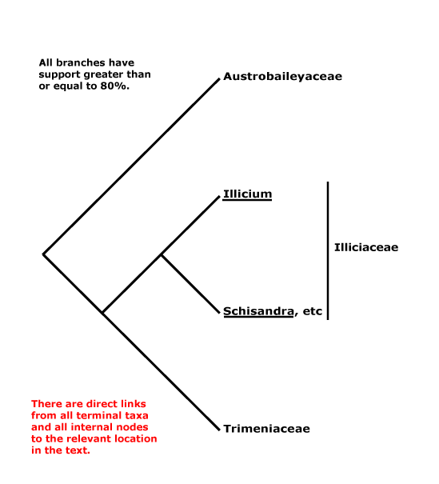
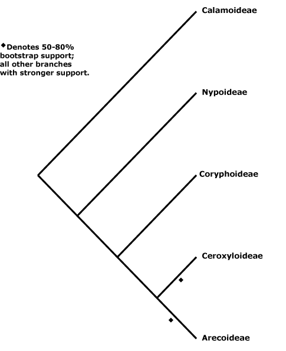
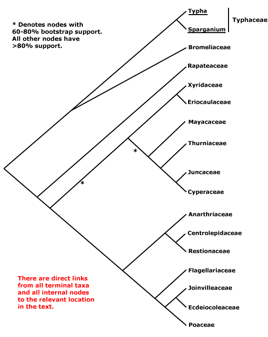

asterids, commelinids, core eudicots, asterid 1, asterid 2, eudicots, gymnosperms, Magnoliophyta, monocots, N-fixing clade, rosids, seed plants.
ALPHABETICAL LISTING OF ALL ORDINAL NAMES OF SEED PLANTS, WITH LINKS
A | B | C | D | E | F | G | H | I | J | L | M | N | O | P | Q | R | S | T | U | V | W | X | ZAbietales, Acanthales, Acerales, Acorales, Actinidiales, Actinostrobales, Adoxales, Aesculales, Agavales, Aizoales, Akaniales, Alismatales, Alliales, Alseuosmiales, Alstroemeriales, Altingiales, Amaranthales, Amaryllidales, Amborellales, Ambrosiales, Ammiales, Amomales, Ancistrocladales, Anisophylleales, Annonales, Anthobolales, Apiales, Apocynales, Aponogetonales, Aquifoliales, Arales, Araliales, Aralidiales, Araucariales, Arecales, Aristolochiales, Athrotaxidales, Asarales, Asclepiadales, Asparagales, Asphodelales, Asparagales, Asteliales, Atriplicales, Aucubales, Austrobaileyales, Avenales.
Balanitales, Balanopales, Balanophorales, Balsaminales, Barbeyales, Barclayales, Batales, Begoniales, Berberidales, Berberidopsidales, Betulales, Biebersteiniales, Bignoniales, Bixales, Boraginales, Brassicales, Brexiales, Bromeliales, Bruniales, Brunoniales, Burmanniales, Burserales, Butomales, Buxales, Byblidales.
Cactales, Callitrichales, Calycanthales, Calycerales, Campanulales, Campynematales, Canellales, Cannales, Capparales, Caprifoliales, Cardiopteridales, Carduales, Caricales, Carlemanniales, Caryophyllales, Cassiales, Casuarinales, Celastrales, Centrolepidales, Cephalotales, Cephalotaxales, Ceratophyllales, Cercidiphyllales, Chenopodiales, Chironiales, Chloranthales, Chrysobalanales, Cinchonales, Circaeasterales, Cistales, Citrales, Cocosales, Colchicales, Columelliales, Combretales, Commelinales, Connarales, Convolvulales, Coriariales, Cornales, Corylales, Corynocarpales, Crassulales, Crossosomatales, Cucurbitales, Cunninghamiales, Cunoniales, Cupressales, Cycadales, Cyclanthales, Cymodoceales, Cynarales, Cynomoriales, Cyperales, Cyrillales, Cytinales.
Daphnales, Daphniphyllales, Dasypogonales, Datiscales, Degeneriales, Desfontainiales, Diapensiales, Didymelales, Dilleniales, Dioales, Dioncophyllales, Dioscoreales, Diospyrales, Dipentodontales, Dipsacales, Droserales.
Ebenales, Echiales, Elaeagnales, Elaeocarpales, Elatinales, Elodeales, Emmotales, Empetrales, Ephedrales, Ericales, Eriocaulales, Erythropalaless, Escalloniales, Eucommiales, Euphorbiales, Eupomatiales, Eupteleales, Euryalaless.
Fabales, Fagales, Falcatifoliales, Ficales, Flacourtiales, ciliariales, Fouquieriales, Francoales, Frangulales.
Galiales, Garryales, Geissolomatales, Gentianales, Geraniales, Gesneriales, Ginkgoales, Glaucidiales, Globulariales, Gnetales, Goodeniales, Greyiales, Griseliniales, Grossulariales, Grubbiales, Gunnerales, Gyrocarpales, Gyrostemonales.
Haemodorales, Haloragales, Hamamelidales, Hanguanales, Heisteriales, Helleborales, Helwingiales, Himantandrales, Hippuridales, Homaliales, Hortensiales, Huales, Huerteales, Hydatellales, Hydnorales, Hydrangeales, Hydrastidales, Hydrocharitales, Hydropeltidales, Hydrostachyales, Hypericales, Hypoxidales.
Icacinales, Illiciales, Iridales, Irvingales, Iteales, Ixiales.
Jasminales, Juglandales, Julianiales, Juncaginales, Juncales.
Lacistematales, Lactoridales, Lamiales, Lardizabalales, Laurales, Lecythidales, Ledocarpales, Leitneriales, Lentibulariales, Ligustrales, Liliales, Limnanthales, Linales, Liriales, Loasales, Lobeliales, Loganiales, Lonicerales, Loranthales, Lowiales, Lythrales.
Magnoliales, Malpighiales, Malvales, Marathrales, Marcgraviales, Mayacales, Medusagynales, Medusandrales, Melanthiales, Melastomatales, Meliales, Melianthales, Meliosmales, Menispermales, Menyanthales, Metteniusales, Mitrastemonales, Miyoshiales, Monimiales, Moringales, Musales, Myricales, Myristicales, Myrothamnales, Myrsinales, Myrtales.
Najadales, Nandinales, Narcissales, Nartheciales, Nelumbonales, Nepenthales, Neuradales, Nitrariales, Nolanales, Nothofagales, Nyctaginales, Nymphaeales.
Ochnales, Oenotherales, Olacales, Oleales, Onagrales, Oncothecales, Opuntiales, Orchidales, Oxalidales.
Saxifragales, Pandales, Pandanales, Papaverales, Paracryphiales, Parasitaxales, Paridales, Parnassiales, Passiflorales, Penaeales, Pennantiales, Pentaphragmatales, Peridiscales, Petiveriales, Petrosaviales, Phellinales, Philydrales, Phyllanthales, Physenales, Phytolaccales, Picramniales, Pinales, Pinguiculales, Piperales, Pittosporales, Plantaginales, Platanales, Plumbaginales, Poales, Podocarpales, Podophyllales, Podostemales, Polemoniales, Polygalales, Polygonales, Pontederiales, Portulacales, Posidoniales, Potamogetonales, Primulales, Proteales.
Quercales, Quillajales, Quintiniales.
Rafflesiales, Ranunculales, Rapateales, Resedales, Restionales, Rhabdodendrales, Rhamnales, Rhinanthales, Rhizophorales, Rhodorales, Rhoipteleales, Roridulales, Rosales, Rousseales, Rubiales, Ruppiales, Rutales.
Sabiales, Salicales, Salvadorales, Samolales, Samydales, Sanguisorbales, Santalales, Sapindales, Sapotales, Sarraceniales, Saxegotheales, Saxifragales, Scheuchzeriales, Sciadopityales, Scleranthales, Scrophulariales, Scyphostegiales, Sedales, Silenales, Simmondsiales, Smilacales, Solanales, Sphenocleales, Sphenostemonales, Stangeriales, Stellariales, Stemonales, Stilbales, Stylidiales, Styracales, Surianales.
Taccales, Tamales, Tamaricales, Taxales, Taxodiales, Tecophilaeales, Terebinthales, Ternstroemiales, Theales, Theligonales, Thymelaeales, Tiliales, Tofieldiales, Torricelliales, Tovariales, Tribelales, Trilliales, Trimeniales, Triuridales, Trochodendrales, Tropaeolales, Turnerales, Typhales.
Vacciniales, Vahliales, Vallisneriales, Velloziales, Veratrales, Verbenales, Viburnales, Vincales, Violales, Viscales, Vitales, Vochysiales.
Xanthorrhoeales, Ximeniales, Xyridales.
Zamiales, Zingiberales, Zosterales, Zygophyllales.
ALPHABETICAL LISTING OF ALL FAMILY NAMES OF SEED PLANTS, WITH LINKS
A | B | C | D | E | F | G | H | I | J | K | L | M | N | O | P | Q | R | S | T | U | V | W | X | Y |ZIn some cases clicking on a family synonym will send you directly to the subfamily in which the genus of the basionym is to be found.
Abietaceae, Abolbodaceae, Abrophyllaceae, Acalyphaceae, Acanthaceae, [Acanthochlamydaceae], Acarnaceaee, Aceraceae, Achariaceae, Achatocarpaceae, Achradaceae, Achyranthaceae, Acmopylaceae, Acoraceae, Acristaceae, Actaeaceae, Actinidiaceae, Actinotaceae, Amentotaxaceae, Adenogrammaceae, Adoxaceae, Aegialitidaceae, Aegicerataceae, Aegilopaceae, Aeginetiaceaee, Aegiphilaceae, Aesculaceae, Aextoxicaceae, Agapanthaceae, Agavaceae, Agdestidaceae, Agialidaceae, Agrimoniaceae, Agrostidaceae, Ailanthaceae, Aitoniaceae, Aizoaceae, Akaniaceae, Alangiaceae, Alchemillaceae, Aldrovandaceae, Alismataceae, Alliaceae, Allioniaceae, Allophylaceae, Aloaceae, Alopecuraceae, Alpiniaceae, Alseuosmiaceae, Alsinaceae, Alsodeiaceae, Alstroemeriaceae, Altingiaceae, Alzateaceae, Amaranthaceae, Amaryllidaceae, Amborellaceae , Ambrosiaceae, Amentotaxaceae, Ammanniaceae, Ammiaceae, Amomaceae, Ampelidopsaceae, Amygdalaceae, Amyridaceae, Anacardiaceae, Anagallidaceae, Anarthriaceae, Anchusaceae, Ancistrocladaceae, Andromedaceae, Andropogonaceae, Androstachyaceae, Androsynaceae, Anemarrhenaceae, Anemonaceae, Angelicaceae, Anisophylleaceae, Annonaceae, Anomochloaceae, Anopteraceae, Anrederaceae, Anthemidaceae, Anthericaceae, Anthobolaceae, Antidesmataceae, Antirrhinaceae, Antoniaceae, Aparinaceae, Aphanopetalaceae, Aphloiaceae, Aphyllanthaceae, Apiaceae, Apocynaceae, Apodanthaceae, Aponogetonaceae, Aporusaceae, Aposeridaceae, Apostasiaceae, "Aptandraceae", Aquifoliaceae, Aquilariaceae, Aquilegiaceae, Araceae, Aragoaceae, Araliaceae, Aralidiaceaee, Araucariaceae, Arbutaceae, Arceuthidaceae, Arceuthobiaceae, Arctostaphylaceae, Arctotidaceae, Ardisiaceae, Arecaceae, Argophyllaceae, Arisaraceae, Aristolochiaceae, Aristoteliaceae, Arjonaceae, Armeriaceae, Artemisiaceae, Arthrotaxidaceae, Artocarpaceae, Arundinaceae, Arundinellaceae, Asaraceae, Asclepiadaceae, Ascyraceaee, Asiraceae, Asparagaceae, Asperulaceae, Asphodelaceae, Aspidistraceaee, Asteliaceae, Asteraceae, Asteranthaceae, Asteropeiaceae, Astragalaceae, Astrocarpaceae, Athanasiaceae, Atherospermataceae, Atriplicaceae, Atropaceae, Aucubaceae, Aurantiaceae, Austrobaileyaceae, Austrotaxaceae, Avenaceae, Averrhoaceae, Avetraceae, Avicenniaceae, Azaleaceae, Azimaceae.
Balanitaceae, Balanopaceae, Balanophoraceae, Balsameaceae, Balsaminaceae, Bambusaceae, Barbaceniaceae, Barbeuiaceae, Barbeyaceae, Barclayaceae, Barringtoniaceae, Basellaceae, Bataceae, Baueraceae, Bauhiniaceae, Baxteriaceae, Begoniaceae, Behniaceae, Belangeraceae, Belloniaceae, Bembiciaceae, Berberidaceae, Berberidopsidaceae, Berryaceaee, Bersamaceae, Bertyaceae, Berzeliaceae, Besleriaceae, Betaceae, Betulaceae, Biebersteiniaceae, Bifariaceae, Bignoniaceae, Bischofiaceae, Bixaceae, Blakeaceae, Blandfordiaceae, Blattiaceae, Blepharocaryaceae, Blitaceae, Blyxaceae, Boerlagellaceae, Bolivaraceae, Bombacaceae, Bonnetiaceae, Bontiaceae, Boopidaceae, Boraginaceae, Borassaceae, Boroniaceae, Boryaceae, Botryodendraceae, Bougainvilleaceae, Boweniaceae, Brassicaceae, Brachycaulaceae, Bretschneideraceae, Brexiaceae, Bromeliaceae, Brownlowiaceae, Brunelliaceae, Bruniaceae, Brunoniaceae, Brunsvigiaceae, Bryoniaceae, Buchneraceae, Bucidaceae, Buddlejaceae, Buglossaceae, Bulbocodiaceae, Bumeliaceae, Bupleuraceae, Burchardiaceae, Burmanniaceae, Burseraceae, Butneriaceae, Butomaceae, Buxaceae, Byblidaceae, Byttneriaceae.
Cabombaceae, Cacaoaceae, Cactaceae, Caesalpiniaceae, Caladiaceae, Calamaceae, Calceolariaceae, Calectasiaceae, Calendulaceae, Callaceae, Callicomaceae, Calligonaceae, Callitraceae, Callitrichaceae, Calochortaceae, Calophyllaceae, Calthaceae, Calycanthaceae, Calyceraceae, Cambogiaceae, Camelliaceae, Campanulaceae, Campynemataceae, Canacomyricaceae, Canellaceae, Cannabaceae, Cannaceae, Canopodaceae, Canotiaceae, Cansjeraceae, Capparaceae, Caprariaceae, Caprifoliaceae, Cardiopteridaceae, Carduaceae, Caricaceae, Carissaceae, Carlemanniaceae, Carpinaceae, Carpodetaceae, Cartonemataceae, Caryocaraceae, Caryophyllaceae, Casearieaceae, Cassiaceae, Cassipoureaceae, Cassythaceae, Castaneaceae, Castelaceae, Casuarinaceae, Catesbaeaceae, Cathedraceae, Cecropiaceae, Cedraceae, Cedrelaceae, Celastraceae, Celosiaceae, Celtidaceae, Centaureaceae, Centrolepidaceae, Centroplacaceae, Cepaceae, Cephalanthaceae, Cephalotaceae, Cephalotaxaceae, Cerastiaceae, Ceratoniaceae, Ceratophyllaceae, Cerberaceae, Cercidiphyllaceae, Cercocarpaceae, Cercodiaceae, Cereaceae, Cerinthaceae, Ceroxylaceae, Cestraceae, Cevalliaceae, Chailletiaceae, Chamaedoraceae, Chamaemoraceae, Chamelauciaceae, Chaunochitonaceae, Chelidoniaceae, Chelonaceae, Chenopodiaceae, Chimonanthaceae, Chingithamnaceae, Chionographidaceae, Chiranthodendraceae, Chironiaceae, Chlaenaceae, Chloanthaceae, Chloranthaceae, Chloridaceae, Chlorogalaceae, Chrysobalanaceae, Ciceraceae, Cichoriaceae, Cimicifugaceae, Cinchoniaceae, Circaeaceae, Circaeasteraceae, Cissaceae, Cistaceae, Citraceae, Clematidaceae, Cleomaceae, Clethraceae, Clusiaceae, Cneoraceae, Cnestidaceae, Cnicaceae, Cobaeaceae, Cochlospermaceae, Cocosaceae, Coffeaceae, Colchicaceae, Coleogynaceae, Columelliaceae, Combretaceae, Commelinaceae, Comocladiaceae, Compositae, Compsoaceae, Conantheraceae, Connaraceae, Conostylidaceae, Convallariaceae, Convolvulaceae, Cordiaceae, Coreopsidaceae, Coriandraceae, Coriariaceae, Coridaceae, Corispermaceae, Cornaceae, Corokiaceae, Coronillaceae, Correaceae, Corrigiolaceae, Corsiaceae, Corydalaceae, Corylaceae, Corynocarpaceae, Coryphaceae, Costaceae, Cotyledonaceae, Coulaceae, Coutariaceae, Coutoubiaceae, Crassulaceae, Crescentiaceae, Cressaceae, Crinaceae, Crocaceae, Croomiaceae, Crossosomataceae, Crotonaceae, Cruciferae, Cryptaceae, Crypteroniaceae, Cryptocorynaceae, Cryptomeriaceae, Ctenolophonaceae, Cucurbitaceae, Cunninghamiaceae, Cunoniaceae, Cupressaceae, Curcumaceae, Curtisiaceae, Cuscutaceae, Cyananthaceae, Cyanastraceae, Cynanchaceae, Cyanellaceae, Cycadaceae, Cyclanthaceae, Cyclantheraceae, Cyclocheilaceae, Cydoniaceae, Cymodoceaceae, Cynaraceae, Cynocrambaceae, Cynomoriaceae, Cyperaceae, Cyphiaceae, Cyphocarpaceae, Cypripediaceae, Cyrillaceae, Cyrtandraceae, Cyrtanthaceae, Cytinaceae.
Dacrycarpaceae, Dactylanthaceae, Damasoniaceae, Daphnaceae, Daphniphyllaceae, Dasypogonaceae, Datiscaceae, Daturaceae, Daucaceae, Davidiaceae, Davidsoniaceae, Decaisneaceae, Deeringiaceae, Degeneriaceae, Delphiniaceae, Dendrophthoaceae, Columelliaceae, Detariaceae, Dialypetalanthaceae, Dianellaceae, Dianthaceae, Diapensiaceae, Dichapetalaceae, Dichondraceae, Diclidantheraceae, Dicrastylidiaceae, Dictamnaceae, Didiereaceae, Didymelaceae, Didymocarpaceae, Diegodendraceae, Diervillaceae, Digitalidaceaee, Dilatridaceae, Dilleniaceae, Dioaceae, Dionaeaceae, Dioncophyllaceae, Dioscoreaceae, Diosmaceae, Diospyraceae, Dipentodontaceae, Diphylleiaceae, Diplolaenaceae, Dipsacaceae, Dipterocarpaceae, Dirachmaceae, Disanthaceae, Diselmaceae, Dodonaeaceae, Dombeyaceae, Donatiaceae, Dorsteniaceae, Dortmannaceae, Doryanthaceae, Drabaceae, Dracaenaceae, Dracontiaceae, Drimyidaceae, Droseraceae, Drosophyllaceae, Dryadaceae, Duabangaceae, Duckeodendraceae, Dulongiaceae, Durantaceae, Durionaceae, Dysphaniaceae.
Ebenaceae, Eccremidaceae, Ecdeiocoleaceae, Echiaceae, Echinopaceae, Ehretiaceae, Elaeagnaceae, Elaeocarpaceae, Elegiaceae, Elatinaceae, Ellisiaceae, Ellisiophyllaceae, Elodeaceae, Elytranthaceae, Embeliaceae, Emblingiaceae, Emmotaceae, Empetraceae, Encephalartaceae, Engelhardtiaceae, Enhalaceae, Epacridaceae, Ephedraceae, Ephemeranthaceae, Epilobiaceae, Epimediaceae, Eragrostidaceae, Eremolepidaceae, Eremosynaceae, Ericaceae, Erinaceae, Eriocaulaceae, Eriogonaceae, Eriospermaceae, Erodiaceae, Erycibaceae, Eryngiaceae, Erysimaceae, Erythroniaceae, Erythropalaceae, Erythrospermaceae, Erythroxylaceae, Escalloniaceae, Eschscholziaceae, Eucomidaceae, Eucommiaceae, Eucryphiaceae, Euonymaceae, Eupatoriaceae, Euphorbiaceae, Euphrasiaceae, Euphroniaceae, Eupomatiaceae, Eupteleaceae, Euryalaceae, Eustrephaceae, Euthemidaceae, Eutocaceae, Exbucklandiaceae, Exocarpaceae.
Fabaceae, Fagaceae, Falcatifoliaceae, Ferulaceae, Festucaceae, Ficaceae, Ficoidaceae, Fitzroyaceae, Flacourtiaceae, ciliariaceae, Flindersiaceae, Foetidiaceae, Forestieraceae, Fothergillaceae, Fouquieriaceae, Fragariaceae, Francoaceae, Frangulaceae, Frankeniaceae, Fraxinaceae, Fraxinellaceae, Freycinetiaceae, Fritillariaceae, Fuchsiaceae, Fumariaceae, Funkiaceae.
Gaiadendraceae, Galacaceae, Galanthaceae, Galaxiaceae, Galedupaceae, Galeniaceae, Galiaceae, Garciniaceae, Gardeniaceae, Gardneriaceae, Garryaceae, Geissolomataceae, Geitonoplesiaceae, Gelsemiaceae, Geniostomaceae, Gentianaceae, Geonomataceae, Geosiridaceae, Geraniaceae, Gerrardinaceae, Gesneriaceae, Gethyllidaceae, Gilliesiaceae, Ginalloaceae, Ginkgoaceae, Gisekiaceae, Gladiolaceae, Glaucidiaceae, Glechomaceae, Glinaceae, Globulariaceae, Gnaphaliaceae, Gnetaceae, Goetzeaceae, Gomortegaceae, Gomphiaceae, Gomphrenaceae, Gonystylaceae, Goodeniaceae, Gordoniaceae, Gouaniaceae, Goupiaceae, Gramineae, Gratiolaceae, Grewiaceae, Greyiaceae, Grielaceae, Griseliniaceae, Gronoviaceae, Grossulariaceae, Grubbiaceae, Guaiacanaceae, Guamatelaceae, Guettardaceae, Gunneraceae, Gustaviaceae, Guttiferae, Gyrocarpaceae, Gyrostemonaceae.
Hachetteaceae, Haemanthaceae, Haemodoraceae, Halesiaceae, Hallieraceae, Halocarpaceae, Halophilaceae, Halophytaceae, Haloragaceae, Hamamelidaceae, Hanguanaceae, Haptanthaceae, Harmandiaceae, Hebenstretiaceae, Hectorellaceae, Hederaceae, Hedyosmaceae , Hedyotidaceae, Hedysaraceae, Heisteriaceae, Heleniaceae, Heliamphoraceae, Helianthaceae, Helianthemaceae, Helichrysaceae, Heliconiaceae, Helicteraceae, Heliotropiaceae, Helleboraceae, Heloniadaceae, Helosidaceae, Helwingiaceae, Hemerocallidaceae, Hemimeridaceae, Hemiphylacaceae, Henriqueziaceae, Henslowiaceae, Hermanniaceae, Hernandiaceae, Herniariaceae, Herreriaceae, Hesperocallidaceae, Heterantheraceae, Heteropyxidaceae, Heterostylaceae, Hibbertiaceae, Hibiscaceae, Hilleriaceae, Himantandraceae, Hippocastanaceae, Hippocrateaceae, Hippomanaceae, Hippophaeaceae, Hippuridaceae, Hirtellaceae, Holacanthaceae, Homaliaceae, Hopkinsiaceae, Hoplestigmataceae, Hordeaceae, Hornschuchiaceae, Hortensiaceae, Hortoniaceae, Hostaceae, Houstoniaceae, Huaceae, Huerteaceae, Hugoniaceae, Humbertiaceae, Humiriaceae, Hyacinthaceae, Hydatellaceae, Hydnoraceae, Hydrangeaceae, Hydrastidaceae, Hydrillaceae, Hydrocharitaceae, Hydrocotylaceae, Hydrogetonaceae, Hydroleaceae, Hydropeltidaceae, Hydrophylacaceae, Hydrophyllaceae, Hydrostachyaceae, Hymenocardiaceae, , Hypecoaceae, Hyperantheraceae, Hypericaceae, Hypopityaceae, Hypoxidaceae, Hypseocharitaceae.
Icacinaceae, Idiospermaceae, Illecebraceae, Ilicaceae, Illiciaceae, Illigeraceae, Impatientaceae, Imperatoriaceae, Inocarpaceae, Inulaceae, Ionidiaceae, Iriarteaceae, Iridaceae, Irvingiaceae, Isnardiaceae, Isophysidaceae, Iteaceae, Strasburgeriaceae , Ixiaceae, Ixioliriaceae, Ixonanthaceae.
Jalapaceae, Jamboliferaceae, Japonoliriaceae, Jasionaceae, Jasminiaceae, Johnsoniaceae, Joinvilleaceae, Juglandaceae, Julianiaceae, Juncaceae, Juncaginaceae, Juniperaceae, Jussiaeaceae, Justiciaceae.
Kadsuraceae, Kaliphoraceae, Kalmiaceae, Kaniaceae, Kiggelariaceae, Kingdoniaceae, Kingiaceae, Kirengeshomaceae, Kirkiaceae, Kobresiaceae, Koeberliniaceae, Koelreuteriaceae, Krameriaceae.
Labiatae, Lacandoniaceae, Lachenaliaceae, Lacistemataceae, Lactoridaceae, Lactucaceae, Lagerstroemiaceaee, Lamiaceae, Lampsanaceae, Lanariaceae, Langsdorffiaceae, Lantanaceae, Lapageriaceae, Lardizabalaceae, Lasiopetalaceae, Lauraceae, Lawsoniaceae, Laxmanniaceae, Lecythidaceae, Ledaceae, Ledocarpaceae, Leeaceae, Leguminosae, Leitneriaceae, Lemnaceae, Lennoaceae, Lentibulariaceae, Lentiscaceae, Leoniaceae, Leonticaceae, Lepidobotryaceae, Lepidocarpaceae, Lepidocaryaceae, Lepidocerataceae, Leptaulaceae, Leptospermaceae, Lepturaceae, Lepuropetalaceae, , Leuctenbergiaceae, Libocedraceae, Licaniaceae, Ligustraceae, Lilaeaceae, Liliaceae, Limeaceae, Limnanthaceae, Limnocharitaceae, Limodoraceae, Limoniaceae, Limosellaceae, Linaceae, Linariaceae, Lindenbergiaceae, Linderniaceae, Lindleyaceae, Linnaeaceae, Lippayaceae, Liriaceae, Liriodendraceae, Lissocarpaceae, Littorellaceae, Loasaceae, Lobeliaceaee, Loganiaceae, Lomandraceae, Loniceraceae, Lopeziaceae, Lophiocarpaceae, Lophiolaceae, Lophiraceae, Lophophytaceae, Lophopyxidaceae, Loranthaceae, Lotaceae, Lowiaceae, Lupulaceaee, Luxemburgiaceae, Luzuriagaceae, Lychnidaceae, Lyciaceae, Lyginiaceae, Lygodisodeaceae, Lysimachiaceae, Lythraceae.
Macarisiaceae, Mackinlayaceae, Madiaceae, Maesaceae, Magnoliaceae, Malaceae, Malesherbiaceae, Malortieaceae, Malpighiaceae, Malvaceae, Mangiaceae, Manicariaceae, Mapaniaceae, Marantaceae, Marathraceae, Marcgraviaceae, Martyniaceae, Mastixiaceae, Matricariaceae, Maundiaceae, Mayacaceae, Medeolaceae, Medusagynaceae, Peridiscaceae, Melaleucaceae, Melampyraceae, Melanophyllaceae, Melanthiaceae, Melastomataceae, Meliaceae, Melianthaceae, Melicaceae, Meliosmaceae, Melittidaceae, Melochiaceae, Memecylaceae, Mendonciaceae, Menispermaceae, Menthaceae, Menyanthaceae, Menzieziaceae, Mercurialaceae, Merenderaceae, Mesembryaceae, Mesembryanthemaceae, Mespilaceae, Metasequioaceae, Metteniusaceae, Meyeniaceae, Miconiaceae, Micrantheaceae, Microbiotaceae, Microcachrydaceae, Microcycadaceae, Miliaceae, Milulaceae, Mimosaceae, Mirabilidaceaee, Misodendraceae, Mitrastemonaceae, Miyoshiaceae, Modeccaceae, Molluginaceae, Monimiaceae, Monodoraceae, Monotaceae, Monotropaceae, Montiaceae, Montiniaceae, Moraceae, Morinaceae, Moringaceae, Mouririaceae, Moutabeaceae, Muntingiaceae, Musaceae, Mutisiaceae, Myodocarpaceae, Myoporaceae, Myricaceae, Myriophyllaceae, Myristicaceae, Myrobalanaceae, Myrothamnaceae, Myrrhiniaceae, Myrsinaceae, Myrtaceae, Mystropetalaceae.
Nageiaceae, Najadaceae, Nandinaceae, Napoleonaceae, Nartheciaceae, Narcissiaceaee, Nardaceae, Nassauviaceae, Naucleaceae, Nectaropetalaceae, Neilliaceae, Nelsoniaceae, Nelumbonaceae, Nemacladaceae, Neocallitropsidaceae, Neottiaceae, Nepenthaceae, Nepetaceae, Nesogenaceae, Neuradaceae, Neuwiediaceae, Nhandirobaceae, Nicotaniaceae, Nigellaceae, Nitrariaceae, Nolanaceae, Nolinaceae, Nonateliaceae, Nopaleaceae, Nothofagaceae, Nupharaceae, Nuytsiaceae, Nyctaginaceae, Nyctanthaceae, Nymphaeaceae, Nypaceae, Nyssaceae.
Obolariaceae, Ochnaceae, Ochranthaceae, Octoknemaceae, Oenotheraceae, Oftiaceae, "Olacaceae", Oleaceae, Oliniaceae, Onagraceae, Oncothecaceae, Onosmaceae, Operculariaceae, Ophiopogonaceae, Ophioxylaceae, Ophiraceae, Opiliaceae, Oporanthaceae, Opuntiaceae, Orchidaceae, Ornithogalaceae, Ornithrophaceae, Orobanchaceae, Orontiaceae, Ortegaceae, Oryzaceae, Osyridaceae, Oxalidaceae, Oxycladaceae, Oxycoccaceae, Oxystylidaceae.
Pachysandraceae, Pacouriaceae, Paeoniaceae, Pagamaeaceae, Paivaeusaceae, Palmae, Pancratiaceae, Pandaceae, Pandanaceae, Pangiaceae, Panicaceae, Papaveraceae, Papayaceae, Papilionaceae, Pappophoraceae, Papyraceae, Paracryphiaceae, Parasitaxaceae, Parianaceae, Paridaceae, Parnassiaceae, Paronychiaceae, Paropsiaceae, Parrotiaceae, Partheniaceae, Passifloraceae, Pastinacaceae, Paulliniaceae, Paulowniaceae, Paviaceae, Pectiantiaceae, Pedaliaceae, Pedicularidaceae, Peganaceae, Peliosanthaceae, Pellicieraceae, Penaeaceae, Pennantiaceae, Pentadiplandraceae, Pentapetaceae, Pentaphragmataceae, Pentaphylacaceae, Pentastemonaceae, Penthoraceae, Peperomiaceae, Peraceae, Perdiciaceae, Peridiscaceae, Periplocaceae, Peripterygiaceae, Perseaceae, Persicariaceae, Petermanniaceae, Petiveriaceae, Petreaceae, Petrosaviaceae, Phalaridaceae, Phaleriaceae, Pharaceae, Pharnaceaceae, Phaseolaceae, Phellinaceae, Phelypaeaceae, Pherosphaeraceae, Philadelphaceae, Philesiaceae, Philippodendraceae, Philocrenaceae, Philydraceae, Phoeniciaceae, Phoradendraceae, Phormiaceae, Phrymaceae, Phylicaceae, Phyllanthaceae, Phyllocladaceae, Phyllonomaceae, Physenaceae, Phytelephaceae, Phytocrenaceae, Phytolaccaceae, Piceaceae, Picramniaceae, Picridaceae, Picrodendraceae, Pilgerodendraceae, Pilocarpaceae, Pinaceae, Pinguiculaceae, Piperaceae, Piriquetaceae, Pisoniaceae, Pistaciaceae, Pistiaceae, Pittosporaceae, Plagianthaceae, Plagiopteraceae, Plantaginaceae, Platanaceae, Platycaryaceae, Platycladaceae, Platyspermataceae, Plectroniaceae, Pleurisanthaceae, Platystemonaceae, Plocospermataceae, Plumbaginaceae, Plumeriaceae, Poaceae, Podoaceae, Podocarpaceae, Podophyllaceae, Podostemaceae, Polemoniaceae, Poliothyrsidaceae, Polpodaceae, Polycarpaeaceae, Polycnemaceae, Polygalaceae, Polygonaceae, Polygonanthaceae, Polygonataceae, Polyosmaceae, Pontederiaceae, Poranaceae, Porantheraceae, Portulacaceae, Portulacariaceae, Posidoniaceae, Potaliaceae, Potamogetonaceae, Potentillaceae, Poteriaceae, Pothaceae, Pottingeriaceae, Primulaceae, Prioniaceae, Prionotaceae, Prockiaceae, Proteaceae, Prumnopityaceae, Prunaceae, Pseliaceae, Pseudanthaceae, Pseudophoeniciaceae, Psiloxylaceae, Psittacanthaceae, Psychotriaceae, Psylliaceaee, Ptaeroxylaceae, Pteleaceae, Pteleocarpaceae, Pteridophyllaceae, Pterisanthaceae, Pterostemonaceae, Punicaceae, Putranjivaceae, Pyraceae, Pyrolaceae.
Quassiaceae, Quercaceae, Quiinaceae, Quillajaceae, Paracryphiaceae.
Rafflesiaceae, Ramondaceae, Randiaceae, Ranunculaceae, Ranzaniaceae, Rapateaceae, Raphanaceae, Reaumuriaceae, Resedaceae, Restionaceae, Retziaceae, Rhabdodendraceae, Rhamnaceae, Rhaptopetalaceae, Rhexiaceae, Rhinanthaceae, Rhipogonaceae, Rhizophoraceae, Rhodiolaceae, Rhododendraceae, Rhodolaenaceae, Rhodoleiaceae, Rhodoraceae, Rhodotypaceae, Rhoipteleaceae, Rhopalocarpaceae, Rhynchocalycaceae, Rhynchothecaceae, Ribesiaceae, Ricinaceae, Ricinocarpaceae, Riviniaceae, Roridulaceae, Rosaceae, Rousseaceae, Roxburghiaceae, Rubiaceae, Rumicaceae, Ruppiaceae, Ruscaceae, Rutaceae.
Sabalaceae, Sabiaceae, Sabiceaceae, Saccharaceae, Saccifoliaceae, Sagoneaceae, Salaciaceae, Salaxidaceae, Salazariaceae, Salicaceae, Salicorniaceae, Salpiglosssidaceae, Salsolaceae, Salvadoraceae, Salviaceae, Sambucaceae, Samolaceae, Samydaceae, Sanguisorbaceae, Saniculaceae, Sanseveriaceae, Santalaceae, Santolinaceae, Sapindaceae, Sapotaceae, Sarcobataceae, Sarcocaceae, Sarcolaenaceae, Sarcophytaceae, Sarcospermataceae, Sarcostigmataceae, Sargentodoxaceae, Sarraceniaceae, Saurauiaceae, Saururaceae, Sauvagesiaceae, Saxegotheaceae, Saxifragaceae, Scabiosaceae, Scaevolaceae, Scepaceae, Scheuchzeriaceae, Schinaceae, Schisandraceae, Schizolaenaceae, Schlegeliaceae, Schoepfiaceae, Schreberaceae, Sciadopityaceae, Scillaceae, Scirpaceae, Scleranthaceae, Sclerophylacaceae, Scoliopaceae, Scopariaceae, Scorodocarpaceae, Scrophulariaceae, Scutellariaceae, Scybaliaceae, Scyphostegiaceae, Scytopetalaceae, Sebestenaceae, Sedaceae, Seguieriaceae, Selaginaceae, Sempervivaceae, Senecionaceae, Sequoiaceae, Serrulataceae, Sesamaceae, Sesuviaceae, Setchellanthaceae, Sheadendraceae, Sibthorpiaceae, Silenaceae, Simabaceae, Simaroubaceae, Simmondsiaceae, Sinofranchetiaceae, Siparunaceae, Siphonanthaceae, Siphonodontaceae, Sisymbriaceae, Sladeniaceae, Smeathmanniaceae, Smilacaceae, Smyrniaceae, Solanaceae, Sonneratiaceae, Soramiaceae, Sorbaceae, Soulameaceaee, Sparganiaceae, Sparmanniaceae, Spartinaceae, Spatheliaceae, Spergulaceae, Sphaerosepalaceae, Sphenocleaceae, Sphenostemonaceae, Spigeliaceae, Spiniciaceae, Spiraeaceae, Spiraeanthemaceae, Spondiadaceae, Sporobolaceae, Stachyuraceae, Stackhousiaceae, Stangeriaceae, Stanleyaceae, Stapeliaceae, Staphyleaceae, Staticaceae, Stegnospermataceae, Stellariaceae, Stemonaceae, Stemonuraceae, Stenomeridaceae, Sterculiaceae, Stilaginaceae, Stilbaceae, Stipaceae, Stixaceae, Strasburgeriaceae, Stratiotaceae, Strelitziaceae, Streptochaetaceae, Strombosiaceae, Strumariaceae, Strychnaceaee, Stylidiaceae, Stylobasiaceae, Stylocerataceae, Stypheliaceae, Styracaceae, Surianaceae, Swartziaceae, Swieteniaceae, Symphoremataceae, Symplocaceae, Synechanthaceae, Syringaceae.
Taccaceae, Taiwaniaceae, Taktajaniaceae, Talinaceae, Tamaceae, Tamaricaceae, Tamarindaceae, Tamnaceae, Tanacetaceae, Tapisciaceae, Taxaceae, Taxodiaceae, Tecophilaeaceae, Telephiaceae, Tepuianthaceae, Terminaliaceae, Ternstroemiaceae, Tetracarpaeaceae, Tetracentraceae, Tetrachondraceae, Tetraclinaceae, Tetradiclidaceae, Tetragoniaceae, Tetramelaceae, Tetrameristaceae, Tetrastylidiaceae, Tetrathecaceae, Thalassiaceae, Thalictraceae, Theaceae, Theligonaceae, Themidaceae, Theobromataceae, Theophrastaceae, Thesiaceae, Thismiaceae, Thlaspiaceae, Thoaceae, Thomandersiaceae, Thujaceae, Thujopsidaceae, Thunbergiaceae, Thurniaceae, Thymelaeaceae, Ticodendraceae, Tiliaceae, Tillaeaceae, Tillandsiaceae, Tinaceae, Tithymalaceae, Tofieldiaceae, Tormentillaceae, Torreyaceae, Torricelliaceae, Tovariaceae, Tradescantiaceae, Euphorbiaceae, Trapaceae, Trapellaceae, Tremandraceae, Trewiaceae, Tribelaceae, Tribulaceae, Trichopodaceae, Tricyrtidaceae, Triglochinaceaee, Trigoniaceae, Trilliaceae, Trimeniaceae, Triplobaceae, Triplochitonaceae, Triplostegiaceae, Tristichaceae, Triticaceae, Triuridaceae, Trochodendraceae, Tropaeolaceae, Tulbaghiaceae, Tulipaceae, Tumboaceae, Tupistraceae, Turneraceae, Typhaceae.
Uapacaceae, Ullucaceae, Ulmaceae, Ulmariaceae, Umbelliferae, Unisemataceae, Urticaceae, Utriculariaceae, Uvulariaceae.
Vacciniaceae, Vahliaceae, Valerianaceae, Vallisneraceae, Vanillaceae, Velloziaceae, Veratraceae, Verbascaceae, Verbenaceae, Vernicaceae, Vernoniaceae, Veronicaceae, Viburnaceae, Viciaceae, Vincaceae, Violaceae, Viscaceae, Vitaceae, Viticaceae, Vivianiaceae, Vochysiaceae.
Wachendorfiaceae, Walleriaceae, Wellingtoniaceae, Wellstediaceae, Welwitschiaceae, Widdringtoniaceae, Willughbieaceae, Winteraceae, Woffiaceae.
Xanthiaceae, Xanthophyllaceae, Xanthorrhoeaceae, Xeronemataceae, Xerophyllaceae, Ximeniaceae, Xiphidiaceae, Xyridaceae.
Zamiaceae, Zannichelliaceae, Zanoniaceae, Zanthoxylaceae, Zeaceae, Zephyranthaceae, Zingiberaceae, Ziziphaceae, Zosteraceae, Zygophyllaceae.
Roots with exarch protoxylem, lateral roots endogenous; leaf traces leaving a gap in the central stele; euphylls or megaphylls spirally arranged, with apical/marginal growth, venation develops basipetally, growth determinate; sporangia borne in pairs and grouped in terminal trusses, meiosis polyplastidic; sperm multiciliate, monoplastidic, basal bodies staggered, centrosomes bicentriolar; 30kb chloroplast inversion in the large single-copy region of the chloroplast genome.
Evolution. For information on possible apomorphies for crown euphyllophytes, see Raubeson and Jansen (1992b), Kenrick and Crane (1997), Imaichi et al. (2008: position of some characters difficult to ascertain), and Schneider et al. (2009).
Crown euphyllophytes appear to date from 401-380 m.y.a. (Leebens-Mack et al. 2005) and are in turn made up of two clades, ferns and their relatives, the monilophytes or Moniliformopses, lacking true roots, and lignophytes, made up largely of seed plants or spermatophytes.
Chemistry, Morphology, etc. Note that details of the evolution of megaphylls - indeed, a satisfactory definition for them seems to be lacking - are unclear (see e.g. Sporne 1965, but c.f. Boyce 2005 summarizes earlier literature; Tomescu 2008, 2009; Sanders et al. 2009). At the level of development, there is considerable similarity between magaphylls and microphylls (Harrison et al. 2005b). The leaf supply to megaphylls in monilophytes seem to have evolved by dissection of an amphiphloic siphonostele, while leaf gaps in seed plants are associated with a stele that consists of a series of sympodia of collateral vascular strands (see also below), so from this point of view megaphylls in the two groups may represent parallelisms rather than a synapomorphy and leaf gaps are not equivalent, being used in a descriptive sense only (Namboodiri & Beck 1968c; Beck et al. 1982, but c.f. Schneider et al. 2009). However, it has been found that the vascular construction of the rhizome in some true ferns is also made up of sympodia (Karafit et al. 2005). Floyd and Bowman (2007) suggest that megaphylls have evolved independently in the angiosperms and ferns and relatives (see also Boyce & Knoll 2002; Gensel & Kenrick 2007; Tomescu 2009; Sanders et al. 2009), while Floyd and Bowman (2010) comparae gene expression patterns in shoots and leaves, suggesting that the marginal blastozones of leaves and the shoot apical meristem may be similar in some respects. Osborne et al. (2004) provide an ecological explanation for the origin of megaphylls based on falling CO2 levels, although the developmental mechanisms involved may have evolved long before then (Beerling 2005a and references). Note that Schneider et al. (2009: p. 461 and references) suggest that euphylls did arise once, and can be characterized by apical/marginal growth, apical origin of the venation, determinate growth, etc.
Shoot apical meristem of a single cell, plasmodesmatal network cell lineage specific; amphiphloic siphonostele + [discontinuities in stele in t.s. +, caused by leaf gaps]; protoxylem restricted to lobes of central xylem strand [xylem development mesarch], primary xylem with circular bordered pits; phloem fibres rare; stem endodermis and pericycle +; leaves megaphyllous [ad/abaxial symmetry evolved first, then determinancy], frond veins not anastomosing; sporangia in sori, sporangium stalk 6< cells across, walls two cells thick, lacking an annulus, spores/sporangium 1000<, white, spores globose-tetrahedral, trilete, tapetum amoeboid, spore wall development centrifugal, exospore 3-layered, pseudoendospore +; gametophytes exosporic, green, photosynthetic, antheridium embedded, wall ³5 cells thick; first division of the zygote horizontal; nine-nucleotide insertion in the plastid rps4 gene.
Evolution. Some possible apomorphies (see e.g. Schneider et al. 2009) are in bold.
Schuettpelz and Pryer (2009, esp. Tables 2, 3 in the Supplement) provide extensive dating of divergence times in monilophytes, and also list a number of fossil records of the group (for the fossil record, see also Rothwell & Stockey 2008).
There have been several radiations of homosporous leptosporangiate ferns, the first in the Palaeozoic, giving rise to lineages that have since become extinct, in the Jurassic and again in the Cretaceous (Rothwell & Stockey 2008). General fern diversity decreased (along with that of the cycads) through the Cretaceous (Wing & Boucher 1998), and the diversification that gave rise to most living ferns, especially to the polypod ferns, which make up some 80% of living fern species, may have occurred subsequent to the diversification of the angiosperms (Lovis 1977; Rothwell & Stockey 2008; Schuettpelz & Pryer 2009). Indeed, ferns appear to have temporarily dominated at least locally after the end-Cretaceous bolide impact (Schneider et al. 2004a). Quite a number of the polygrammoid ferns (Polypodiaceae + Grammitidaceae) are epiphytic, and the Grammitidaceae in particular have green spores and accelerated plastid genome evolution, a correlation also found elsewhere in ferns, but not 100% (Schneider et al. 2004b). On the other hand there has been an abrupt reduction in the rate of molecular evolution in the largely arborescent Cyatheales (Korall et al. 2010: Marattiales, Osmundales, etc., not included). Indeed, the eusporangiate Marrattia and Angiopteris, and also the leptosporangiate tree ferns, may be something of living fossils showing little molecular and even morphological evolution (P. Soltis et al. 2002).
Ferns are noted for the high incidence of polyploidy within the group, and it is estimated that almost 1/3 (31%) of all speciation events there are accompanied by polyploidy (Wood et al. 2009).
Chemistry, Morpholgy, etc. Monilophytes or ferns s.l. are characterised by having a siphonostele, the protoxylem being restricted to lobes of the central xylem strand, hence bringing to mind a necklace (development of the xylem is mesarch, although notably variable in the Ophioglossum/Psilotum clade); spore wall development that is exclusively centrifugal; similarity in details of male gamete morphology and movement; a nine-nucleotide insertion in the plastid rps4 gene, etc. (e.g. Renzaglia et al. 2002; Schneider et al. 2002).
For general comparative anatomy, see Ogura (1972), and for details of stelar morphology and evolution, see Beck et al. (1982), for megaphylls, see Tomescu (2009).
Phylogeny. The circumscription of this clade has only recently become clear, and as just mentioned they include Psilotum (Tmesipteris is close) sister to Ophioglossum (support strong) in a clade sister to all other ferns. Equisetum, perhaps sister to Angiopteris, etc. (although support currently only moderate), may be in turn sister to remaining ferns (e.g. Pryer et el. 2001a, 2004a; Wikström & Pryer 2005; Qiu et al. 2007; c.f. in part Wolf et al. 1998). However, recent work places Equisetaceae alone sister to all other ferns; some support came from a rps4 analysis, and also 4- and 5-gene analyses, the latter two with strong support (Schuettpelz et al. 2006). Wikström and Pryer (2005) note that Equisteum has no mitochondrial atp1 intron, and this is either a secondary (and parallel) loss or plesiomorphic absence, depending on the topology of the whole group (see the character hierarchy below). Spore wall ultrastructure of Calamites, an extinct member of Equisetaceae, is not so different from that of Ophioglossaceae and other ferns (Lugardon & Brousmiche-Delcambre 1994; Grauvogel-Stamm & Lugardon 2009). The inclusion of morphology alone or in combination also affects relationships (Wikström & Pryer 2005 and references).
Within the remaining ferns is a large clade made up of leptosporangiate ferns (with very strong support - see also Hasebe et al. 1994, 1995, Pryer et al. 1995; Wolf et al. 1998; Quandt et al. 2004; Schuettpelz et al. 2006) that originated perhaps 350 m.y. before present (e.g. Schneider et al. 2004a). Within this leptosporangiate clade, Osmunda and relatives, the sporangia of which have some eusporangiate features, are strongly supported as being sister to the rest. There is further substantial resolution of relationhips within leptosporangiate ferns (e.g. Pryer et al. 2004a, b and references). Davalliaceae and related taxa are sister to the polygrammoid ferns, and they, too, include a number of epiphytes (for their evolution, see Tsutsumi & Kato 2006).
Classification. Smith et al. (2006, 2008) propose a phylogeny-based reclassification of the ferns, and they also include literature, ordinal and familial synonymy, and a list of accepted genera and some major synonyms. However, it is likely that adjustments to this classification will be needed as details of the phylogeny become better understood (Schuettpelz & Pryer 2007, 2008). A provisional hierarchy of characters obtained from Smith et al. (2006, 2008) and also from Pryer et al. (1996), is given below. For pteridophytes in general (these often include lycophytes), see also Kato (2005) and Ranker and Haufler (2008).
Previous Relationships. Psilotum and relatives used to be considered the most primitive living vascular plants.
EXTANT SEED PLANTS / SPERMATOPHYTA
Plant woody, evergreen; true roots present, endomycorrhizal; vascular cambium + [xylem differentiating internally, phloem externally]; wood homoxylous, tracheids and rays alone, tracheid/tracheid pits circular, bordered; sieve tube/cell plastids with starch grains; stem cork cambium superficial, root cork cambium deep seated; nodes ?; stomata?; leaves megaphyllous [determinancy evolved first, then ad/abaxial symmetry], spiral, simple, axillary buds associated with at most some leaves, prophylls two, lateral; plant heterosporous [with microspores (pollen) in stamens and megaspores in ovules]; sporangia eusporangiate [i.e. developing from a group of superficial cells and with walls two or more cells across], on sporophylls, aggregated in indeterminate cones/strobili; pollen grains mono[ana]sulcate, germinating, or gamates exiting, distally and lacking proximal preformed suture or marks where they were attached to other members of the tetrad, exine and intine homogeneous; ovules unitegmic, crassinucellate, megasporangium indehiscent, monosporic [only one megaspore develops from meiotic tetrad and germinates to form female gametophyte]; male gametophyte development endosporic [with first divisions inside the pollen grain], gametes two, developing after pollination, with cell walls, with many cilia; female gametophyte endosporic, initially syncytial [nuclei only, no cell walls], walls produced later surrounding individual nuclei; seeds "large", first cell wall of zygote transverse, embryo straight, short-minute, with morphological dormancy, cotyledons 2; plastid transmission maternal. [Back to Index]
Estimates of the age for crown-group seed plants, i.e., extant seed plants, range from 348-285 m.y. before present (e.g. Becker et al. 2000; Leebens-Mack et al. 2005).
Because of the probable sister group relationship between extant gymnosperms and angiosperms, many life cycle characteristics cannot be polarised. However, it is very likely that many of the features of gametophyte and young sporophyte that characterize gymnosperms are likely to be features of the extant seed plants as a whole.
EXTANT GYMNOSPERMS [Back to Index]
Phloem with sieve cells and associated Strasburger cells, the sieve area with small pores generally less than 0.8 µm across that have cytoplasm and E.R., joining to form a median cavity in the region of the middle lamella; transfusion tissue +; stomata in which subsidiary and guard cells come from the same initial; cataphylls [modified protective leaves] +; pollen endexine lamellate; ovule unitegmic, with pollen chamber developing by breakdown of nucellar cells, pollination droplet +, fertilization 7 days to 12 months or more after pollination; pollen tube breaks down sporophytic cells, grows away from ovule, male gametophyte with 4 cells [two prothallial cells, tube cell, stalk/sterile cell] and two multiciliate gametes released through pollen grain wall, male gametes with >1000 cilia; female gametophyte with radially-elongated cells [alveoli]; testa mainly of coloured sarcotesta and sclerotesta [fleshy and hard testa layers], ± vascularized; proembryo syncytial, with many nuclear divisions before wall formation, massive suspensor formed; gametophyte persists in seed as major reserve.
Much of this characterisation may apply to all extant seed plants (see above), with more detail to be added if extant gymnosperms are paraphyletic, although this now seems increasingly unlikely.
For general information see Gifford and Foster (1988), Hill (2005) and Anderson et al. (2007: including fossils), for leaf anatomy, see Napp-Zinn (1966), for the shoot apex, see Johnson (1951), for the binding of ferulic acid to the primary cell wall, see Carnachan and Harris (2000), for pit membranes, see Bauch et al. (1972), for stelar evolution, see Beck et al. (1982), for nodal anatomy, see Kumari (1963), for differences between the roots of lycophytes and lignophytes, see Gensel and Berry (2001) and Gensel et al. (2001), for sieve tube plastids, see Behnke (1974) and Behnke and Paliwal (1973), for pollen, especially the alveolate infratectal layer of the ectexine and lamellate endexine, see van Campo (1971), van Campo and Lugardon (1973), Thomas and Spicer (1986), Xi and Wang (1989), Faegri and Iversen (1989), Page (1990), Osborn and Taylor (1994) and Kurmann and Zavada (1994), for variation in the life cycle and embryology, see Singh (1978), for the integument and its evolution, see Andrews (1963), for double fertilization, see Friedman (1992), for plastid transmission, understood fairly well in only Encephalartos and Ephedra outside Pinales, see Moussel (1978 - Ephedra), Wilson and Owens (2006: Pinales), Mogensen (1996 - summary), Cafasso et al. (2001 - Encephalartos), for the female gametophyte, see Maheshwari and Singh (1967), for genome size, see Leitch et al. (2001, 2005), for embryo size, see Forbis et al. (2002), for pollination, see Stützel and Röwekamp (1999b), Labandeira et al. (2007: insect pollination in Mesozoic gymnosperms), and Ren et al. (2009: scorpion flies mid-Mesozoic pollinators?), for duplication of the phytochrome gene, see Schmidt and Schneider-Poetsch (2002), and for morphological apomorphies, see Doyle (1998a, 2006).
CYCADALES Dumortier [Back to Index]
Roots and stems with contractile tissue; toxins + [ß-methylamino-L-alanine and compounds producing methylazoxymethanol], mucilage copious; association with Nostoc or Anabaena in apogeotropic coralloid roots [much-branched roots growing ± upwards]; primary thickening meristem +; wood manoxylic [not very dense, numerous rays, etc.], large amounts of secondary phloem persisting; foliage leaf nodes multilacunar, with traces girdling the stem; axillary buds 0; leaves large, pinnate, bases persisting; plants dioecious; strobili ?terminal; many abaxial microsporangia/sporophyll, dehiscing by the action of the epidermis [exothecium]; megasporophylls with terminal sterile portion, not aggregated into a cone; pollen tube usually unbranched, one prothallial cell; seeds with sarcotesta and inner fleshy layer, both vascularized; germination hypogeal, cryptocotylar. - 2 families, 10 genera, 305 species.
Cycads are known as fossils in the Upper Palaeozoic 290-265 m.y. before present, probably being derived from Palaeozoic pteridosperm-like plants (Mamay 1969; Gao & Thomas 1989), and the Cycas lineage may already have diverged from Zamiaceae by the Permian at least 250 m.y. before present (Hermsen et al. 2006a; see also Bogler & Francisco-Ortega 2004: there are also much younger estimates, e.g. Treutlein & Wink 2002).
The nitrogen-fixing cyanobacteria Nostoc and Anabaena have been found in several cycads growing either inter- or intracellularly in the apogeotropic coralloid roots near the surface of the soil (e.g. Lindblad et al. 1985).
There are widespread, close and specific associations between Zamiaceae and their beetle (weevil) and thrip pollinators (e.g. Schneider et al. 2002; Terry et al. 2007), although it seems likely that in their present form these are relatively recent (Downie et al. 2007); wind pollination may also occur (Kono & Tobe 2007). Indeed, the development of such associations with insect pollinators may even have contributed to the relatively recent diversification of cycad clades like Encephalartos, Macrozamia etc., in the (late) Caenozoic (Oberprieler 2004; see also Downie & Donaldson 2005). Thermogenesis has been detected in the strobili of some Cycadales (Seymour 2001).
A few lepidopteran larvae eat cycads, in particular the lycaenid Eumaeus (Schneider at al. 2002 for references), although in S.E. Africa a group of brightly-coloured diptychine geometrids (loopers) is more or less restricted to cycads (Cooper & Goode 2004); it would be interesting to know if they are distasteful to potential predators.
Cycads are noted for having some rather potent toxins that, it has been suggested, may have contributed to the persistence of the clade. ß-methylamino-L-alanine (BMAA) is widespread, as is methylazoxymethanol (MAM), produced by the hydrolysis of glycosides such as cycasin (a monosaccharide) and macrozamin (with a disaccharide). BMAA, interestingly, is also probably produced by the cyanobacterial associates of cycads (Cox et al. 2005). These compounds are toxic: BMAA is a possible neurotoxin, and MAM can cause severe digestive upsets, cancers, etc. (Brenner et al. 2003 and references).
Hermsen et al. (2006a) suggest a number of additional synapomorphies, including the presence of pith cell packets and three unique biflavones. Although girdling traces are conspicuous in the vascular supply to the expanded foliage leaves, the vascular traces to the reduced leaves (cataphylls) and sporophylls take a direct course through the cortex (some traces may also proceed directly to the foliage leaves as well). Nodal anatomy appears to be complex (Pant 1973); the cotyledons have split lateral vascular traces (Coulter & Chamberlain 1917). There are up to some 40,000 cilia per male gamete.
Ryberg et al. (2007) emphasise the large amounts of secondary phloem that persist in a cycad stem, presumably because the cork cambium is not very active; some larger cycads have fibres in tangential bands in this phloem. Both characters are common in the Bennettitales, which with the Cycadales make up the grade group, the cycadophytes, although in the Bennettitales the fibre bands alternate with tissue that is very largely made up of sieve cells.
For relationships within Cycadales as a whole, see e.g. K. D. Hill et al. (2003, 2004), Bogler and Francisco-Ortega (2004), Wink (2006). Cycas is sister to other cycads, but other details of relationships are rather unclear (support mostly low) and conflict in part, at least, with those suggested by previous morphological studies. The positions of Bowenia, Stangeria (the two have sometimes been associated, as by Stevenson 1992 in a morphological analysis [and placed in Stangeriaceae], see also Brenner et al. 2003), and Dioon are particularly uncertain; all three are distinctive genera. There are, however, good morphological characters supporting the basal division between Cycadaceae and Zamiaceae (K. D. Hill et al. 2003), so a conservative (broad) approach to family limits has been taken here - the whole order is not very big. A recent study (Chaw et al. 2005, see also Rai et al. 2003, 2008; Zgurski et al. 2008) suggests the following quite well supported relationships within Zamiaceae: [Dioon [Bowenia (not always here) [the rest - including Stangeria which is never close to the first two]]]. Such relationships are consistent with variation in the micromorphology of the cuticular waxes (Wilhelmi & Bartlott 1997), Dioon and Cycas having a plesiomorphic morphology.
For embryology, see Singh (1978), for branching, see Stevenson (1988), and for fossils, see Pant (1987), for general references, see Gifford and Foster (1988), Johnson and Wilson (1990), Stevenson (1990), Norstog and Nicholls (1997), and Schneider et al. (2002: the biology and evolution of the group), Jones (2002: account of all taxa), Walters and Osborne (2004: problems of species delimitation, etc.); see also Artabe and Stevenson (1999: especially anatomical variation), Hill et al. (2004: list of all taxa), The Cycad Pages and the Gymnosperm Database.
Includes: Cycadaceae, Zamiaceae.
CYCADACEAE Persoon - Hairs transparent; stem with more than one complete vascular cylinder [polyxylic]; leaflets circinate, midrib +; megasporophylls not forming a cone, margins lobed or toothed, (1-)3-6 erect ovules/sporophyll; seeds platyspermic. - 1/100. E. Africa and Madagascar, South East Asia to New Caledonia and Tonga.
ZAMIACEAE Horaninow - Hairs coloured; leaflets flat, no midrib, secondary veins regular, subparallel; megasporophylls peltate, 2(-3) inverted ovules/sporophyll; seeds radiospermic. - 9-10/200: Encephalartos (65), Zamia (55), Macrozamia (40). Scattered throughout the tropics and subtropics.
Stangeria is perhaps particularly distinctive: it develops buds from its roots, it lacks cataphylls, and its leaflets have dichotomously-branching pinnate venation. Stomata are to be found at the apex of the nucellus in Zamia, perhaps reflecting a time when the nucellus - really the wall of the megasporangium - was exposed. Each male gametophyte of Microcycas produces multiple male gametes and each female gametophyte produces several - even hundreds - of ovules.
Chaw et al. (2005) suggest apomorphies for Zamiaceae and some clades within it, as well as a realignment of generic limits. For relationships within the speciose Encephalartos which perhaps split from Lepidozamia 5-20 m.y. before present - which, despite the age spread, is quite recent - see Treutlein et al. (2005).
GINKGOALES + PINALES: wood pycnoxylic [dense, rays not so prevalent]; vascular pits bordered, with margo-torus construction; axillary buds +; strobili axillary.
GINKGOALES Gorozh. [Back to Index]
Nodes 1:2; leaf venation dichotomising, open; plants dioecious; 2 pendulous microsporangia/microsporophyll, dehiscing by the action of the hypodermis [endothecium]; megasporophyllar strobilus 0; 2(-4) terminal erect ovules together on megasporophyll, each with basal collar, on a long stalk; pollen tube branched, sperm cells binucleate, both nuclei fuse with female gametes; inner fleshy layer of seed alone vascularized; germination hypogeal, cryptocotylar. - 1 family, 1 genus, 1 species.
Includes: Ginkgoaceae.
GINKGOACEAE Engler - Plant resinous, mucilage +; short shoots +; leaves deciduous. - 1/1: Ginkgo biloba. E. China, perhaps extinct in the wild.
Ginkgoales were almost world-wide in distribution and included several genera in the Mesozoic, and possibly originated from Palaezoic pteridosperms, perhaps in the Upper Carboniferous (Thomas & Spicer 1987; Zhou 1997). The morphology of these early Ginkgo-like plants is uncertain, but the ovules may have been more numerous, very differently arranged and some at least were inverted rather than erect (and/or platyspermic). Ginkgo has very distinctive leaves, and Ginkgo-like leaves are known from the Permian onwards (see Zhou & Zhang 2003).
It is reported that dioecy is associated with chromosomal differentiation (female xx, male xy), but c.f. Hizume (1997).
Note that the nuclei of the female gametophyte have the DNA content of diploid cells (Friedman & Gifford 1997). For more information, see Friedman (1987: male gametophyte), Soma (1997: female gametophyte, embryogeny), Hori et al. (1997: general), and Douglas et al. (2007: ovule).
PINALES: pollen tube unbranched, growing towards the ovule, gametes non-motile, released from the distal end of the tube [siphonogamy]; germination epigeal, phanerocotylar.
PINALES Dumortier [Back to Index]
Resin ducts/cells in phloem in vascular tissue [and elsewhere]; stem cork cambium ± deep seated; nodes 1:1; leaves with single vein; exine thick [³2 µm across], granular; microsporangium dehiscing by the action of the hypodermis [endothecium]; ovulate strobilus compound, with ± united flattened ovuliferous and bract scales; ovule lacking pollen chamber; seed coat dry, not vascularized; proembryo with 4 or 5 nuclear divisions, with upper tier or tiers of cells from which secondary suspensor develops, elongated primary suspensor cells and basal embryonal cells [or some variant]; plastid transmission paternal. - 7 families, 68 genera, 545 species.
Many rusts (Uredinales), including those on ferns, have their aecial stage (these produce binucleate aeciospores) on Pinales, especially on Pinaceae and Cupressaceae (Savile 1979b). Ambrosia and bark beetles (Platypodinae, Scolytinae, both weevils) seem to have been associated ancestrally with conifers, then shifted on to angiosperms and finally back to conifers several times - their current diversity in Pinales is lower (Farrell et al. 2001; see also Powell et al. 1999 for other insect-conifer associations). Bark beetles (Scolytinae) make their gallery systems in phloem, ambrosia beetles (Platypodinae, Scolytinae) in the wood, and they live mostly in dead or dying wood. The few bark beetles that are noxious pests invade living pines. Ambrosia beetles may also carry blue stain fungi (species from a few unrelated ascomycete genera) that can quickly invade the sapwood, rendering it non-functional, and the result is that the plant can die surprisingly quickly. Other fungi are involved in similar close associations, both with ambrosia and bark beetles. Some of the weevils cultivate and eat the fungus; the evolution of cultivation is unreversed. The weevils have highly modified cuticular structures that allow the transport of fungal spores (Beaver 1989; Jordal et al. 2008 and references). Not only pine beetles and fungi, but yeasts, bacteria (some nitrogen-fixing), parasitoids of the beetles and fungus-eating nematodes all form part of a very complex association.
Hudgins et al. (2003) examined the diversity of bark beetles in the context of various plant structures that might be defenses against such beasts; Francheschi et al. (2005) elaborate on the pine-beetle story. Conifers in general have layers of polyphenol-containing parenchyma cells in the phloem. Many bark beetles are found growing on Pinaceae despite the constitutive presence of resin ducts in both phloem and xylem (i.e. the ducts do not develop in response to some trauma, etc., but are always to be found there), there are intracellular crystals, etc. Other families of Pinales have such ducts only in the phloem, but they also have large numbers of small, extracellular, calcium oxalate crystals and also stratified phloem (Pinaceae have scattered sclereid cells or sometimes groups of such cells), both possibly protective structures - and a lower diversity of these beetles. Keeling and Bohlmann (2006a [detailed discussion], b) discuss terpenoids and conifer defence mechanisms, a complex subject; it is unclear just what drives the diversity of terpenoids in conifers.
Pitterman et al. (2005), Hacke et al. (2005) and Sperry et al. (2006) compare water transport in tracheids that have the torus:margo pits found in many conifers (and Ginkgo) with that in other kinds of tracheids and in vessels. Pore size in the thin, peripheral margo is relatively large, while the torus provides a valuable satefy feature guarding against embolism. Overall, hydraulic conductance in tracheids with such torus:margo pits is somewhat greater than in vessels of similar diameter when expressed on a sapwood area basis. The issue is complex, since hydraulic conductance and gas exchange per unit leaf area may be higher in angiosperms (Lusk et al. 2007, study carried out in Chile; see also Boyce et al. 2009).
A number of Pinales have pollen grains with paired sacci or wings, and there is a correlation between the presence of these pollen sacci and exine thickness and structure, whether (no wings) or not (wings) the pollen is wettable, etc. (Tomlinson 1994). In general, the sacci help orient the pollen grains in the pollination droplet (Doyle & O'Leary 1935; Salter et al. 2002 and references), or, more particularly, when the ovules are inverted, the pollen grains are wetted and float up to the micropyle where the sacci separate and expose the sulcus through which the pollen tube germinates (Salter et al. 2002). Previously it had been thought that sacci facilitated wind dispersal of the pollen, and indeed they may also increase the distance the pollen grain can travel before it falls to the ground, so facilitating wind pollination (Schwendemann et al. 2007). In Phyllocladus and many taxa with erect ovules the pollination droplet is resorbed through the micropyle, and again the pollen grains are brought close to the nucellus; in Juniperus communis and other taxa resorbtion of the ovule droplet may be an active process happening quite soon after the pollen grain lands (Mugnaini et al. 2007). There are further variants of these pollination mechanisms in Coniferales (Owens et al. 1998; Salter et al. 2002 for references). The character, "pollen exine shed during germination", is likely to have evolved more than once (?three times) in Pinaceae (see also Rydin & Friis 2005).
More than some other groups, we cannot understand the evolution of conifers just by looking at their extant representatives, and it is clear that the apomorphies of extant conifers depend critically on fossil outgroups (e.g. Hart 1987). There are no known synapomorphies for a clade containing living and extinct conifers (e.g. Rothwell & Serbet 1994). The morphology of extinct conifers and coniferophytes is currently being reevaluated as the morphologies of entire organisms are pieced together from what used to be separate form genera; the result is that many of the conventional taxonomic groupings are being radically overhauled (e.g. Rothwell et al. 2005; see also below). Furthermore, the extent of the diversity of fossil conifers is becoming clear. Not only are forked leaves common, but stomatal distribution, etc., may differ dramatically on leaves from the one plant, compound microsporangiate strobili are known (see also Gnetum, etc.), as are megasporagiate strobili which do not terminate vegetative growth of the axis on which they occur (e.g. Hernandez-Castillo et al. 2001; Rothwell & Mapes 2001). The current distributions of many extant conifer groups is much smaller than and/or very different from their past distributions - which in many cases are surprisingly well known - that go back to the Cretaceous (e.g. Manchester 1999: N. temperate distributions); for example, the African Widdringtonia (Cupressaceae) has been found in Cretaceous rocks from Alabama (McIver 2001).
Within conifers, relationships are being substantially clarified. Pinaceae (Pinus, Cedrus, etc.) are sister to the rest, as a morphological cladistic analysis by Hart (1987) suggested some time ago (but c.f. Nixon et al. 1994; Doyle 1996b), other details of Hart's phylogeny have not been confirmed. Molecular data and additional morphological work largely confirm the relationships in the tree below, which is based on the work of Quinn et al. (2002: successive approximations weighting), see also Kelch and Cranfill (2000), Gugerli et al. (2001: e.g. the mitochondrial nadI gene), and Rai et al. (2002, and especially 2008a and references). There has been some uncertainty in the Cephalotaxaceae-Taxaceae area, the two being tentatively bring combined here since there is some evidence that the exclusion of Cephalotaxus would make Taxaceae paraphyletic (Quinn et al. 2002; Price 2003; Rai et al. 2008a). Taxaceae themselves have often been considered rather different from other conifers (e.g. Florin 1948, 1954; Miller 1999), but a reinterpretation of the nature of their reproductive structures (Stützel & Röwekamp 1999a) suggest that Taxus in particular can be linked with Torreya and thence to other conifers.
For a classic study of both fossil and extant conifers, see Florin (e.g. 1951), see also Doyle and Brennan (1972: cleavage polyembryony), Doyle (1945), Tomlinson (1994, 2000), and Tomlinson and Takaso (1998, 2002), all pollination, Page (1990: general), Kumari (1963: nodal anatomy), Butts and Buchholz (1940: cotyledon number), Herrmann (1951: intergeneric grafting), Napp-Zinn (1966: leaf anatomy), Den Outer (1967) and Schulz (1990), both phloem anatomy, Zhou and Jiang (1992: wood anatomy), Raubesen and Jansen (1992a: loss of a copy of the inverted repeat), Hill and Brodribb (1998: southern conifers), Owens et al. (1995b: cytoplasmic inheritance), Mundry (2000: cone/strobilus development, with an emphasis on Taxaceae and friends), Trapp and Croteau (2001: resin biosynthesis), Sklonnaya and Ruguzova (2003: spermatogenesis), Farjon (2001: checklist, 2005b: bibliography).
Includes: Araucariaceae, Cupressaceae, Pinaceae, Podocarpaceae, Phyllocladaceae, Sciadopityaceae, Taxaceae.
PINACEAE F. Rudolphi - Plant ectomycorrhizal; resin ducts in wood and phloem; sieve cells with nacreous [mother of pearl-like] walls, plastids with protein fibres; phloem fibres 0; 2 microsporangia/microsporophyll, pollen saccate, exine thin [2³ µm] except distally, alveolate, ovules 2/scale, inverted, pollination droplet 0 (+); sperm cells binucleate; "embryo tetrad" present [the free-nuclear stage has only four nuclei]; seeds winged, wing develops from adaxial side of scale; cotyledons (2-)4-11(-20); only one copy of the chloroplast inverted repeat. - 11/210: Pinus (105), Abies (46), Picea (33). North Temperate.
Although Pinaceae are known fossil only from the Early Cretaceous onwards (Miller 1999), the age of the lineage must be well over 200 m.y. (200-350 m.y. before present - see Eckert & Hall 2006; c.f. also Gernandt et al. 2008) since they are sister to all other extant conifers. Within Pinaceae, estimates of the divergence of Pinus from the rest range from 190-102 m.y. before present (Wang et al. 2000; Eckert & Hall 2006; Willyard et al. 2007; Gernandt et al. 2008). Be that as it may, their restriction to the northern hemisphere is remarkable, and for the most part they are unable to compete in tropical broad-leaved rain forests (but see Pinus krempfii: Brodribb & Field 2008). There may also have been a bout of diversification in the family in the Palaeocene and more recently (Le Page 2003; Willyard et al. 2007).
A number of rusts, including those on ferns, have their aecial stages on Pinales, especially Pinaceae (Savile 1979b; Durrieu 1980). These include the white pine blister rust, Cronartium ribicola (alternate host Ribes, Grossulariaceae). For a general discussion of resins and defence, see the introduction to Pinales (above), while Mumm and Hilker (2006) discuss the chemical defence of pines against foliovores in particular. Adelgidae (aphids) are restricted to Pinaceae, and include Adelges piceae and A. tsugae, serious introduced pests in North America (Havill et al. 2007). Cecidomyiid gall midges are quite common on the family in North America (Gagné 1989).
The seed coat of Cedrus is vascularized. Cleavage polyembryony is common, as is true polyembryony (more than one archegonium is formed), but the seed generally contains only a single embryo.
Relationships within Pinaceae are unclear, details depending on data analysed (morphology, molecules) and methods of analysis (parsimony, Bayesian: Tsumura et al. 1995; Wang et al. 2000; Rydin & Källersjö 2002; Liston et al. 2006b; Gernandt et al. 2008). For the phylogeny of Pinus, see Syring et al. (2005) and Eckert and Hall (2006); Gernandt et al. (2005) also discuss infrageneric classification. Pinus has two subgenera; leaves of subgenus Pinus, the hard pines, have two vascular bundles, plesiomorphic, while those of subgenus Strobus, the soft pines, have but a single bundle. Analysis of nuclear ITS variation was largely uninformative in suggesting relationships between sections in Abies, but at lower levels was more useful (Xiang et al. 2009).
Additional information: for Pinus, see Farjon (2005a: monograph); for other Pinaceae, see Farjon (1990: general), for ovuliferous cone morphology and anatomy, see Hu et al. (1989) and Napp-Zinn and Hu (1989), and for the embryo, see Buchholz (1931).
[Araucariaceae + Podocarpaceae] [Sciadopityaceae [Cupressaceae + Taxaceae]]: resin ducts in phloem only; phloem with bands of fibres [stratified].
For other possible synapomorphies of this group, see Hart (1987). Isoflavonoids are known from Cupressaceae, Podocarpaceae and Araucariaceae (Reynaud et al. 2005).
Araucariaceae + Podocarpaceae: roots with nodules; one ovule/scale; proembryo with 5 or 6 free-nuclear divisions.
ARAUCARIACEAE Henkel & W. Hochst. - Branches whorled, plagiotropic; stem apex with tunica/corpus construction; wood lacks resin canals or cells, only resin plugs present; stomata tetracytic; branchlets, not leaves, shed [cladoptosis]; leaves multiveined; ovules inverted; pollination droplet 0, pollen germinates on ovuliferous scale [?Araucaria], prothallial cells numerous; seed winged [the wing is the entire bract scale] or not; free nuclear stage in proembryo multinucleate, central. - 3/33. Southern South America, Malesia to E. Australia and New Zealand).
Araucariaceae are well known as fossils from the Mid Jurassic onwards, Araucaria in particular having been found in Triassic deposits in many parts of the world in both hemispheres (Florin 1963; Stockey 1982, 1994; Hill & Brodribb 1989). Sequeira and Farrell (2001) suggest that the association between Araucaria and the scolytine Tomicini bark beetles that feed on them is probably Cretaceous in age; the beetles seem to have moved on to Araucaria from angiosperms, and from thence moved on to Pinaceae. Caterpillars of Agathiphagidae, a small group of lepidoptera the adults of which have jaws, are found on the family (Shields 1988).
The recent discovery very close to Sydney of a few trees of the remarkable Wollemia, very similar to some fossil Araucariaceae ca 90 m.y. old (see e.g. Chambers et al. 1998; Pastoriza-Piñol 2007 for a general account), has occasioned some excitement. It has variously been placed sister to Agathis or sister to the rest of the family (Gilmore & Hill 1997; Setoguchi et al. 1998).
The single leaf trace divides into three or more as it proceeds into the leaf. The stomata have a wax plug. The pollen grains lack sacci and do not rupture when placed in water (Tomlinson 1994).
For general information, see Stockey (1982), for comparative anatomy, see Thompson (1913), for details of reproductive biology compared with those of other Pinales, see Owens et al. (1995a, b, c), for pollen morphology, see Dettmann and Jarzen (2000), for vegetative construction, see Tomlinson (2008), and for possible apomorphies, perhaps including "dehiscent" seeds (i.e. separating from the cone-scale), see Cantrill and Raine (2006).
PODOCARPACEAE Endlicher - Roots with nodules [modified lateral roots]; sclereids numerous, with large lumina; transfusion tissue in patches lateral to the vascular bundle in the leaf; microsporophylls with two sporangia; pollen saccate; male gametophytes with 3-6(-8) prothallial cells, male gamete binucleate, whether or not one nucleus is extruded; ovules ± inverted (erect); proembryo cells [of the E tier] binucleate; seed with epimatium. - 18/130: Podocarpus (100), Dacrydium (20). Largely southern Hemisphere, scattered, N. to Japan, Central America and the Caribbean.
Podocarpaceae are known as fossils from as early as the early Middle Triassic (Axsmith et al. 1998); although quite common, they are largely restricted to the southern hemisphere, including Antarctica. For biogeographyic relationships in the family, see Mill (2006). The New Caledonian Parasitaxus ustus is parasitic on the roots of Falcatifolium taxoides, another podocarp.
For nodulation, see Becking (1965) and Russell et al. (2002); the fungus Glomus is involved, and nitrogen does not seem to be fixed in the nodules.
RbcL analyses (Conran et al. 2000; Wagstaff 2004b) tend to result in Phyllocladus being embedded in Podocarpaceae, other analyses, whether (Quinn et al. 2002) or not (Sinclair et al. 2002) also including rbcL sequences, have the two as sister groups. Peery et al. (2008) using the nuclear XDH gene also found Phyllocladus to be embedded in Podocarpaceae, and it is looking as if that is where it will have to go.
The morphological nature of the epimatium is controversial; Chamberlain (1935) interprets it as possibly being equivalent to the ovuliferous scale. For cone and ovule development, see Tomlinson et al. (1989), for pollination, see Tomlinson (1994, 1997: useful comparative table), Tomlinson et al. (1991) and Rydin and Friis (2005: correlation between absence of wings and the pollen exine being shed on germination), for nucleus number in the E-tier cells, see Quinn (1986), and for phylogeny, see Kelch (1998: comparison of morphology and molecules).
Phyllocladus - Phylloclades +, leaves reduced to scales; pollination droplet actively resorbed; ovule erect; seed arillate. - 1/ca 5. The Philippines (N. Luzon) to Australia (Tasmania) and New Zealand.
Phyllocladus, with its phylloclades, highly reduced leaves that may lack any associated leaf gaps, active pollen capture, etc., has long been considered very distinctive, sometimes being separated from all other conifers (e.g. Keng 1974, 1979; c.f. Quinn 1986). Its pollen has often been described as having a wing (e.g. Singh 1978), but this seems to be absent. The seedling has needle leaves.
Sciadopityaceae [Cupressaceae + Taxaceae]: pollen without sacci, exine shed on germination [microgametophyte naked], prothallial cells 0.
The pollen grains expand and rupture when placed in water (Tomlinson 1994), and the intine-clad pollen may deform more easily and so be tranferred along the narrow micropylar canal (Takaso & Owens 2008). Whether or not all taxa have male gametes each surrounded by cell walls needs to be confirmed (see Singh 1978).
SCIADOPITYACEAE Luersson - Leaves reduced to brown scales, short shoots with photosynthetic cladodes [modified stems]; microsporophyll with flattened apical expansion; 7-9 inverted ovules/ovuliferous scale. - 1/1: Sciadopitys verticillata. C. and S. Japan.
Fossils of Sciadopitys are known from the Upper Cretaceous and are common in the European Caenozoic.
There has been much debate over whether the photosynthesizing structures of Sciadopitys are phylloclades - perhaps formed by the connation of two leaves - or cladodes, basically stem structures. They are borne axillary to scales, as are the clusters of needles in pines. The "leaves" have two vascular bundles, each with its own endodermis and with abaxial xylem and adaxial phloem, a rather odd arrangement, and Sporne (1965) notes that on occasion branches develop from them. In general, that the "leaves" are cladodes is the favoured hypothesis (see also Farjon 2005c).
For pollen, see Page (1990), for a monograph, see Farjon (2005c).
Cupressaceae + Taxaceae: cone scales opposite.
CUPRESSACEAE Bartling - Ovules erect to inverted. - 29/140: Juniperus (52 [ca 50-70 - Adams 2004]), Callitropsis (18), Callitris (14), Cupressus (12). Northern hemisphere, more scattered in south temperate region, also NE Africa.
The telial stage of the basidiomycete Gymnosporangium rust in which thick-walled two-celled binucleate spores are produced is common on some Cupressaceae; the aecial stage (production of thinner-walled binucleate spores) characterises Rosaceae-Maloideae (Savile 1979b). In Cupressus dupreziana paternal apomixis, a phenomenon unknown from any other seed plant, occurs; here the embryo develops from unreduced male gametes (Pichot et al. 2001).
Characters of wood anatomy may yield phylogenetically interesting variation, but state delimitation is difficult. Proliferation of the ovuliferous cones is common, and the distribution of this feature may also be of phylogenetic interest (Schulz & Stützel 2007). Scales on the ovuliferous cones are wedge-shaped to peltate. A number, perhaps a majority, of Cupressaceae lack ovuliferous scales, having only bract scales (Zhang et al. 2004; see also Farjon 2005c), while Cryptomeria has several "teeth" on the ovuliferous scale - perhaps a reversion to a plesiomorphic morphology (see also Schulz & Stützel 2007).
Cupressaceae s. str. are embedded in a paraphyletic Taxodiaceae which form a basal grade (Quinn et al. 2002); phenetic analyses had earlier suggested the combination of the two (Eckenwalder 1976). For phylogenetic relationships within Cupressaceae, see Gadek et al. (2000), Farjon et al. (2002), Brunsfeld et al. (2003), and Little et al. (2004). For generic limits around Cupressus, which has turned out to be polyphyletic and is now restricted to the Old World, see Xiang and Li (2005) and especially Little (2006).
For cone morphology, see Farjon and Garcia (2003), and for a monograph (and far more) see Farjon (2005c).
TAXACEAE Berchtold & J. Presl - Plant dioecious; pollen inaperturate; ovule solitary, erect, on shoot in axils of vegetative leaves; male gametes unequal in size. - 6/30. Scattered in the Northern Hemisphere, esp. South East Asia, also New Caledonia.
For morphology, see Hart and Price (1990), for megasporangiate shoots, see Liang and Wang (1989), and for a general account, see Cope (1998).
GNETALES Luersson [Back to Index]
Stem apex with tunica/corpus construction; vessels + [perforations derived from circular bordered pits]; mucilage cells +; stomata mesogenous [subsidiary cells produced by the same cell that gives rise to the guard cell initials]; leaves opposite, joined at the base, with collateral buds; plant dioecious, strobili compound [micro- and megasporangium-bearing structures closely associated], bracts opposite; synangia present, surrounded by a tubular "bract", dehiscing apically by the action of the epidermis [exothecium], pollen striate, with granular layer under the tectum; ovules terminal, erect, inner integument with much-elongated beak, not vascularized, surrounded by vascularized connate structure ["outer integument"]; male gametes binucleate, both nuclei fuse with female gametes; seed with outer fleshy and inner sclerenchymatous layer derived from the outer integument; secondary suspensor developing from upper embryonal tier, no primary suspensor. - 3 families, 3 genera, 96 species.
Crane (1996) summarized the fossil history of Gnetales. Both Ephedra and Welwitschia have distinctive striate or polyplicate pollen of a kind that has a fossil record of ³250 m.y.. This Gnetalean-like pollen was common in both the Northern and Southern Hemispheres; in the former, records are from the Upper Triassic onwards, in the latter, it is especially common in the early Cretaceous from the northern half of South America (Dilcher et al. 2005). Ephedra and Welwitschia themselves may have diverged by 110 m.y. before present or more, given the South American welwitschioid seedling, Cratonia, that is of this vintage (Rydin et al. 2003). Detailed studies of small Early Cretaceous seeds suggests that Erdmanithecales and Bennettitales have seeds very similar to those of Gnetum and Welwitschia in particular, the latter order agreeing in details of micropylar closure, and all have paracytic stomata (Friis et al. 2007, 2009; Mendes et al. 2008; c.f. Rothwell et al. 2009). A further link with Ephedra is in the granular infratectum of the pollen that all share (Friis et al. 2007). Gnetales s.l., i.e., stem-group Gnetales and including these two wholly fossil groups, show a considerable amount of variation.
Ovules of all three extant genera are visited by diptera, which are often pollinators, and moths may also visit; sweetish droplets exude from the micropyle (see Labandeira 2005 for references).
Note that there are substantially different interpretations of the parts of both the microsporangium- and megasporangium-bearing structures (e.g. Gifford & Foster 1989; Hufford 1997a; Mundry & Stützel 2004). In the microsporangiate plants in all three genera both stamens and non-functional ovules (pollination droplets may still be produced) are closely associated, although this perhaps least marked in Ephedra, and the microsporangiate cones can be interpreted as being compound (Mundry & Stützel 2004), rather like the megasporangiate cones of Pinales. The plants themselves are functionally dioecious.
Within Gnetales relationships are clearly [Ephedra [Gnetum + Welwitschia]] (e.g. Price 1996).
For the morphology of Gnetales in the context of that of fossil gymnosperms, see Doyle (2006, and references), see also Osborn (2000) and Rydin and Friis (2005), both pollen, Kato and Inoue (1994: pollination), Martens (1971: detailed treatment), Gifford and Foster (1989: summary), Carmichael and Friedman (1996) and Friedman and Carmichael (1997), both double fertilization, Carlquist (1997: wood anatomy), Endress (1997: megasporangium), and Hufford (1997a: microsporangium arrangement).
EPHEDRACEAE Dumortier - Xeromorphic; nodes 1:2; leaves reduced, or at least without a lamina; microsporangiophores with 2-8 synangia, each with 2(-4) sporangia, dehiscence porose, pollen lacking a colpus, exine shed on germination; archegonia exposed at base of deep pollen chamber; each nucleus of free-nuclear stage forms an embryo; seed with papillae on the inner side of the outer covering. - 1/65. North (warm) temperate, W. South America; drier habitats.
The distinctive pollen of Ephedra has been found inside fossil seeds that are morphologically also Ephedra in deposits that date from the late Aptian to Early Albian (early Cretaceous) from Portugal, suggesting that diversification in the genus, previously thought to be recent, 32-8 m.y. before present, may be much older, i.e. 127-110 m.y. before present (Rydin et al. 2004, but c.f. Huang & Price 2003). Indeed, fossils of Ephedra with "modern" morphology from the early Cretaceous seem to be widespread, E. paleorhytidosperma having distinctive seeds very like those of the extant E. rhytidosperma (Yang et al. 2005). Other fossils apparently assignable to Ephedraceae are known from perhaps a little earlier in the lower Cretaceous in China (Zhou et al. 2003).
Because the pollen exine of Ephedra is shed on germination, the male gametophyte is naked. Fertilization occurs only 10-15 hours after pollination largely because (). The "outer integument" surrounding the ovule may become fleshy and brightly coloured, or it may be dry and form a wing, or be faintly nondescript, the seeds being dispersed by scatter-hoarding rodents (Hollander & Vander Wall 2009).
Species of Ephedra are pharmacologically very active and contain a number of distinctive secondary metabolites (Caveney et al. 2001). For nodal anatomy, see Marsden and Steeves (1955).
Gnetaceae + Welwitschiaceae: vascular pits lacking central torus; nodes multilacunar; branched sclereids +; stomata paracytic; male gametophyte with one prothallial cell and no sterile cell; ovule with additional pair of bracts; megagametophyte development from all four megaspores [tetrasporic], no archegonia per se, female gametophyte lacking radial arrangement of cells [alveolation does not occur]; some cells of embryonal mass elongate, embryo all cellular, with lateral "feeder" [protrusion of the hypocotylar axis].
GNETACEAE Lindley - Vessel elements with vestured pits; sieve tubes with companion cells [derived from different mother cells]; laticifers +; leaves petiolate, blade broad, with more than two orders of reticulate venation; ovules and microsporangiophores at same node in staminate plant; microsporangiophore with (1-)2(-4) sporangia, pollen not striate, surface spinose; additional pair of bracts connate [i.e. there is a third integument]; proembryo initially with elongated suspensor tubes, nucleus at end divides forming an embryonal mass. - 1/30. Tropical, rather disjunct.
Entomophily has been reported from Malesian species of Gnetum, moths visiting the pollination droplets (Kato & Inoue 1994). For biogeographical relationships in the genus, a story of post-Eocene diversification and dispersal, see Renner (2005b) and Won and Renner (2006).
Not surprisingly, the wood of the lianoid taxa is distinctive, with serial cambia being formed. See Martens (1971) for the vascularization of the leaves; pairs of vascular bundles leave the central stele in close proximity. There is vascular tissue in the outer two coverings of the ovule, but vascular bundles barely enter the base of the inner integument.
WELWITSCHIACEAE Caruel - Successive cambia + [in root - derived from phelloderm, the innermost tissue coming from the cork cambium]; three pairs of leaves only, the second pair long-ligulate, persisting for the life of the plant and elongating from the base, with stomata on both sides, venation parallel; ovules and microsporangiophores in intimate association; microsporangiophores 6, basally connate, with synangia of three sporangia, dehiscence radial; additional pair of bracts free; megagametophyte with multinucleate cells, some grow upwards through nucellus forming female gametophytic tubes, fertilization in apical bulge [both gametes involved?], proembryo pushed back down tube by elongating embryonal suspensor. - 1/1: Welwitschia mirabilis. S.W. Africa.
Welwitschia mirabilis grows in the Namib desert close to the ocean where precipitation comes in the form of condensed fog. The plants may be some hundreds of years old, the two persistent leaves growing at the base and fraying at the apex. Pollination appears to be by diptera (Wetschnig & Depisch 1999).
Cratonia cotyledon is a fossil seedling with distinctive cotyledon vasculature very like that of the leaves of Welwitschia, the secondary veins leaving from the primary veins fuse to form an inverted "Y" (Rydin et al. 2003). Cratonia was found in N.E. Brazil and is late Aptian or early Albian in age, perhaps 114-112 m.y. before present, and other fossils of welwitschiaceous affinity have been found in the same area (Dilcher et al. 2005).
Because of the abundant, branched sclereids, "One might as well try to cut sections of a thick Scotch plaid blanket as to try and cut a stem of Welwitschia without imbedding." (Chamberlain 1935, pp. 388-389).
MAGNOLIOPHYTA/angiosperms [Back to Index]
Plant woody, evergreen; non-hydrolysable tannins, quercetin and/or kaempferol +; lateral roots arise opposite or immediately to the side of [when diarch] xylem poles; cork cambium in root deep-seated; stem with 2-layered tunica + corpus construction; stem cork cambium superficial; circular bordered pits lacking margo and torus; sieve tubes eunucleate, with sieve plate, companion cells from same mother cell that gave rise to the sieve tube; sugar transport in phloem passive; nodes unilacunar [1:?]; stomata paracytic; leaves petiolate, lamina formed from the primordial leaf apex, margins toothed, development of venation acropetal, secondary veins pinnate, fine venation reticulate, dense, with some free vein endings; axillary buds present; flowers perfect, pedicellate, ± haplomorphic; protogynous; parts spiral [esp. the A], free, numbers unstable, development in general centripetal; P not sharply differentiated, with a single trace, outer members not enclosing the rest of the bud, often smaller than inner members; A many, with a single trace, introrse, filaments stout, anther ± embedded in the filament, tetrasporangiate, dithecal [sporangia in two groups of two], each theca dehiscing longitudinally by action of hypodermal endothecium, pollen subspherical, binucleate at dispersal, trinucleate eventually, germinating in less than 3 hours, siphonogamy, tube elongated, growing at 80-600 µm/hour, with pectic outer wall, callose inner wall and callose plugs, growing between cells, male gametes immobile, siphonogamy [gamete delivery via the tube], penetration of ovules within ca 18 hours, nectary 0, G free, several, ascidiate [forming an urn-shaped to subtubular structure], with postgenital occlusion by secretion, ovules anatropous, bitegmic, micropyle endostomal, inner integument 2-3 cells thick, nucellus at apex of ovule 1-3 cells thick, megasporocyte single, megaspore lacking sporopollenin, female gametophyte four-celled [one-modular, nucleus of egg cell sister to one of the polar nuclei], stylulus at most short [shorter than ovary], hollow, cavity not lined by distinct epidermal layer, stigma ± decurrent; P deciduous in fruit; seed exotestal; double fertilization +, endosperm cellular, copious, oily and/or proteinaceous, embryo cellular; germination hypogeal.
Possible angiosperm synapomorphies are in bold. The actual level at which many of these features should be assigned is unclear, partly because many taxa basal to the [[magnoliid + Chloranthales] [monocot + eudicot]] group have been surprisingly little studied, there is considerable homoplasy as well as variation within and between families of the ANITA grade in particular for several of these characters, and also because, there is considerable homoplasy as well as variation within and between families of the ANITA grade in particular for several of these characters, and also because the immediate outgroup to angiosperms is also uncertain. In particular, for details of variation in embryo sac morphology and endosperm ploidy in members of the ANITA grade, see below.
Within angiosperms, relationships between members of the basal pectinations have recently been clarified. Donoghue and Mathews (1998) listed 16 different hypotheses of relationships among basal angiosperms that involved the the first three nodes. However, Amborellaceae are most likely to be sister to other angiosperms (not one of the hypotheses that Donoghue and Mathews included!), Nymphaeales sister to the rest, then Austrobaileyales - the three making up the ANITA grade (e.g. Mathews & Donoghue 1999; Qiu et al. 1999, 2000; P. Soltis et al. 1999, 2000; Parkinson et al. 1999; Müller et al. 2006; Hansen et al. 2007; Jansen et al. 2007; Moore et al. 2007). There perhaps remains an outside possibility that Amborellaceae and Nymphaeales are sister taxa, the clade they form being sister to the rest of the angiosperms (e.g. Qiu et al. 2000; Leebens-Mack et al. 2005; Cai et al. 2006; Soltis et al. 2007a; Graham & Iles 2009; Goloboff et al. 2009: huge parsimony analysis).
Indeed, other relationships may be obtained when few taxa, each with massive amounts of data, are analyzed (e.g. Goremykin et al. 2004). Sampling is critical in such analyses. In some cases large amounts of data may indeed be the solution, in others, perhaps quite surprisingly little data per taxon but improved sampling will do the trick (e.g. Rokas et al. 2005; Hedtke et al. 2006), so knowing where sampling should be improved is important (Geuten et al. 2007). For example, when looking at complete chloroplast sequences of just a few flowering plants, the inclusion of Acorus, breaking up the long branch leading to Poaceae had a major effect (Stefanovic et al. 2004; see also Lockhart & Penny 2005). If Poaceae are included as the sole representative of the monocots, the results may be rather strange; its genome is very derived. Although the recent discovery of an association of Hydatellaceae with Nymphaeales (Saarela et al. 2007) unexpectly allows sampling in this area of the tree to be improved, inclusion of this taxon has little affected the topology and support values of the basal part of the angiosperm tree (Graham & Iles 2009). What kinds of characters are analysed may also be important; Goremykin et al. (2009b) found an [Amborella + Nymphaea] clade after removing a relatively few highly variable positions from the analysis. How data are analysed may also affect the results; parsimony is more susceptible than maximimum likelihood or Bayesian methods to long branch attraction. Finally, some kinds of DNA data such as the 18S nuclear gene, some mitochondrial genes, etc., may be positively misleading when it comes to understanding relationships (e.g. Duvall & Ervin 2004; Qiu et al. 2005; Duvall et al. 2006, 2008b; G. Petersen et al. 2006b), and horizontal transfer seems to be notably common in mitochondrial genomes (Sanchez-Puerta et al. 2008).
There are convenient summaries of the copious literature on relationships between the major angiosperm clades in e.g. P. Soltis & D. Soltis (2004), D. Soltis et al. (2005b) and Qiu et al. (2005). There is additional literature cited at individual nodes, see especially the discussion immediately preceding the Magnoliales, i.e. the magnoliid clade, and Acorales (both the [monocot + eudicot] clade and monocots themselves), Ranunculales (eudicots), Gunnerales (core eudicots), Dilleniales (more about core eudicots), Saxifragales (especially rosids), and Cornales (asterids).
SEED PLANT EVOLUTION (still being developed)
Lignophytes are sister to the monilophytes, ferns and their relatives. The split between the two clades is old, occurring mid- to later Devonian, some 375-400 m.y. before present (Pryer et al. 1995, 2000, 2001a, 2004; Schneider et al. 2002). Lignophytes are characterized by having distinctive secondary thickening: there is a bifacial vascular cambium producing secondary phoem externally and secondary xylem internally (e.g. see Donoghue 2005). Thus lignophytes often have stems with large amounts of wood, and there is also bark produced by the separate cork cambium; Robinson (1990) noted that the ratio of periderm to wood was 8-20:1 in lycopsids and <1:4 in extant seed plants. The origins of seed plants, the focus of this site, are to be sought in mid-Devonian lignophytes, the progymnosperms, often homosporous plants with complex leaves and well-developed secondary thickening with much parenchyma mixed in with the tracheids (see below). The leaves proper may have been small, although the branch systems as a whole may have been flattened; there are no obvious leaf traces. The origin of a stele more like that of extant spermatophytes can be seen in taxa in which the solid central vascular tissue became ridged and dissected into vertical columns, pith developing (Stewart & Rothwell 1993 for a good summary).
Some plants with the kind of vegetative morphology described in the previous paragraph may have been heterosporous, stems having been found in the same fossil beds as fossilized seeds (see e.g. Beck 1962, 1981; Carluccio et al. 1966; Namboodiri and Beck 1968). The progymnosperm Archaeopteridales and Aneurophytales plants of this kind; they have a relatively very rich fossil record, and may have morphologies very unlike those of any living plant, whether angiosperm or gymnosperm. Seed plants or spermatophytes in general are characterised by heterospory, i.e. the plant produces a number of microspores ("pollen") per microsporangium and a single megaspore per megasporangium (Kenrick & Crane 1997). Heterospory has evolved several times in land plants, although in seed plants it is quite distinctive because the dividing megaspore receives its nutrition from the parental sporophyte, whereas in other heterosporous land plants megaspore development is independent of the sporophyte. The ovule is the megasporangium and enveloping integument(s), and the seed is an ovule when it drops from the plant; ovules are known from the Devonian (Stewart & Rothwell 1993). In the Carboniferous in particular there was a considerable variety of plants with fern-like leaves and ovules, the seed ferns or pteridosperms (the Carboniferous has sometimes been called the age of ferns, rather, it is the age of tree ferns). Recent studies are helping to clarify their morphology (Taylor et al. 2006 and references, also other papers in J. Torrey Bot. Soc. 133(1). 2006), and this will help us to understand the phylogeny of seed plants as a whole. By the lower Carboniferous there were to be found the rather conifer-like Cordiatales, which had compound pollen-bearing structures and saccate pollen, and slightly later, the still more conifer-like ("ancestral") Voltziales. Seeds of Mesozoic seed plants are very diverse in their morphology (e.g. Anderson & Anderson 2004), and Bennettitales, Corystospermales (pteridosperms), which seem to have survived the end-Cretaceous mass extinction in Tasmania (McLoughlin et al. 2008), and conifers were all radiating in the Triassic.
Note that a major distinction has been drawn between manoxylic and pycnoxylic groups. Secondary xylem of the former has much parenchyma mixed in with the tracheids, while in secondary xylem of the latter, there is much less parenchyma. The cycadophytes, which include seed ferns, cycads, and the immediately unrelated cycadeoids (e.g. Bennettitales), have manoxylic wood, while the coniferophytes, which include all other extant gymnosperms and several fossil groups (Chamberlain 1935; see also Gifford & Foster 1988), have pycnoxylic wood. Within gymosperms as a whole, manoxylic wood, megaphyllous leaves, and radiospermic (polysymmetric) seeds seem to be associated, as do pycnoxylic wood, microphyllous leaves (perhaps not strictly microphyllous - see Crown Euphyllophytes for the distinction between microphylls and megaphylls), and platyspermic (disymmetric) seeds (Sporne 1965). It is perhaps unlikely that these represent completely independent lines of evolution, especially if Bennettitales are close to Gnetales (see below, but c.f Crepet & Stevenson 2009), and manoxyly versus pycnoxyly and radiospermy versus platyspermy probably do not represent fundamental distinctions. Extant gymnosperms appear to be monophyletic, but when considering both extant and fossil taxa gymnosperms are paraphyletic; angiosperms are derived from a gymnospermous ancestor.
Some early conifers and Cordiatales had microspores of a kind often called prepollen. There is no sulcus, but trilete or monolete ridges where the pollen grains were originally attached (these ridges are called haptotypic marks, i.e. they are proximal markings on the mature grains denoting where they were attached in the tetrad before it broke up). The development of the male gametophyte probably took place inside the spore, and germination occurred via these ridges (e.g. Friedman 1993; Friedman & Gifford 1997). All extant seed plants have true pollen in which germination is plesiomorphically distal, that is, the pollen tube grows out through the part of the pollen grain that was not adjacent to the the other members of the tetrad, and there are no haptotypic marks. However, the relationships between fossil plants with prepollen, other fossils with true pollen, and extant gymnosperms, which also have true pollen, are not well understood. A distinction is sometimes made between coniferophytes and conifers, although what the two contain and their relationships are unclear (Rothwell & Mapes 2001); phylogenetic studies are certainly not suggesting a single answer (e.g. Crane 1985b; Doyle & Donoghue 1986a, 1992; Rothwell & Serbet 1994; Doyle 1996; etc.).
In the 1980s and 90s morphological phylogenetic studies suggested that extant seed plants were probably to be placed in five groups: cycads, Ginkgo, conifers, Gnetales (Gnetum, Ephedra and Welwitschia), and angiosperms. Gnetales and a larger or smaller group of fossil gymnosperms/pteridosperms were together sister to angiosperms (e.g. Crane 1985a, b; Doyle & Donoghue 1986a, b; Nixon et al. 1994; Doyle 1998a, b); Doyle (in Sanderson et al. 2000) noted that this position was well supported in bootstrap analyses that were carried out subsequently. Extant "gymnosperms" were thus thought to be paraphyletic, the botanical equivalent of "reptiles". Plants with a heterosporangiate strobilus, the anthophytes, included flowering plants, Gnetales, and also fossil taxa like Bennettitales, while the glossophytes, also fairly close cladistically to the anthophyte clade, also included the glossopterid seed ferns (these seem to have had multiciliate male gametes - Nishida et al. 2004). Conifers, cycads, etc., were more distantly related to flowering plants. Analyses of morphological data, especially those that include fossil taxa, continue to suggest that gymnosperms are paraphyletic, the four main groups being independently derived from a pteridosperm grade, with Gnetales close to angiosperms and often associated with Bennettitales, etc., thus they support some kind of anthophyte hypothesis (Doyle 2006; Hilton & Bateman 2006; Rothwell et al. 2009; Schneider et al. 2009). However, bootstrap support for these relationships is very low.
These relationships are now strongly questioned in most analyses of molecular data, and extant gymnosperms appear to be monophyletic (e.g. Goremykin et al. 1996, Frohlich & Parker 2000; Antonov et al. 2000; Aris-Brosou 2003; Magallón & Sanderson 2002, including a summary of the literature; Qiu et al. 2006: support weak). Within extant gymnosperms, many studies suggest that Cycadales may be sister to all others (see Hasebe 1997 for the early literature). On the other hand, an association of Cycadales and Ginkgoales has also been recovered, especially in maximum parsimony analyses (e.g. Raubeson et al. 2006; Wu et al. 2007; Chumley et al. 2008). But other relationships appear in some molecular analyses. Thus Mathews et al. (2010) suggest that cycads are sister to angiosperms (no support values given), this clade in turn being sister to other gymnosperms; note thatmorphological data optimised with this topology as a constraint tree also had little bootstrap support, and posterior probabilities from unconstrained analyses were also very low (Mathews et al. 2010).
Long-branch attraction involving the branch leading to angiosperms (Rydin & Källersjö 2002; Stefanovic et al. 2004) may affect the results of these molecular studies, especially the position of Gnetales, but this is very hard to deal with given the paucity of extant gymnosperm taxa (see also Hilton & Bateman 2006 for sampling in the context of morphological versus molecular phylogenies, molecular results will necessarily be flawed because the sampling cannot be improved; Bateman et al. 2006b for much else besides). If there seems to be no extant taxon that could be used to break up the branch (see Geuten et al. 2007 for discussion, albeit in rather easier - although still difficult - examples), knowledge of fossils needs to be much improved for a phylogeny whose topology is determined by fossils to be convincing. Indeed, in some "basal" chordates it has been found that as the organism decayed more derived characters tended to become unrecognisable before less derived characters, hence fossils would tend to be assigned a more "basal" position in the tree than they should, and the age of the clade represnted by these fossils possibly underestimated (Sansom et al. 2010)...
Even if Gnetales are not particularly close to angiosperms, their position is still a matter of considerable interest. Some phylogenies suggest that Gnetales are sister to Pinales (e.g. Antonov et al. 2000; Sanderson et al. 2000; Chaw et al. 2000; Gugerli et al. 2001, rather strong support; de la Torre et al. 2006; Wu et al. 2007), or are even to be placed within Pinales, in particular being associated with Pinaceae (e.g. Burleigh & Mathews 2004; Hajibabaei et al. 2006: sampling within Pinales poor; Qiu et al. 2007). Note that there may be problems in such analyses depending on exactly what sequences are analysed and how they are analysed (e.g. Burleigh & Mathews 2007a, b; Zhong et al. 2010). All ndh genes in the chloroplast of Pinus thunbergii are absent - or are present, but as pseudogenes (Wakasugi et al. 1994); recent work suggests that these genes are absent in all Gnetales and Pinales alone - additional support for the gnepine hypothesis (Braukmann et al. 2009). All Pinales sampled have but a single copy of the chloroplast inverted repeat (Strauss et al. 1988); all other seed plants have two copies (Raubeson & Jansen 1992), and so the incorporation of Gnetales within Pinales will imply parallel evolution of this loss (Lackey & Raubeson 2008), and this may be marked by micromorphological changes in the genome. Interestingly, one end of the inverted repeat of Welwitschia has expanded (Welwitschia is derived within Gnetales) with duplication of trnI-CAU and partial duplication of pscbA gene region at the end of the Large Single Copy region, and these match those of the remnant inverted repeat known from Pinus and other Pinaceae, but not other members of Pinales (Margheim et al. 2006; McCoy et al. 2006, 2008: note details of relationship depend on methods of analysis; see also Braukmann et al. 2009; Hirao et al. 2009). An analysis of variation in 83 plastid genes strongly suggested a set of relationships [Pinaceae [Gnetales + other Pinales]], although other relationships cannot be entirely rejected (Chumley et al. 2008). In an analysis of an amino acid matrix derived from chloroplast genomes, depending on whether or not quickly-evolving proteins and proteins in which there appeared ro be much parallel evolution were removed, Gnetales were sister to Cupressaceae or to Pinaceae, the latter being the preferred position (Zhong et al. 2010).
Although nearly all Pinales have megasporangiate strobili with spirally-arranged ovuliferous scales or modifications of them, Gnetales are distinctive in having strobili with decussating bracts (Magallón & Sanderson 2002). Nevertheless, there are some morphological similarities between the Pinales and Gnetales, and within the former, perhaps particularly with Pinaceae. The binucleate sperm cells, basic proembryo structure, development of polyembryony, etc., of Ephedra agree with Pinales in general and perhaps Pinaceae in particular. Furthermore, strobili with both micro- and megasporangia are common as abnormalities in Pinales (Chamberlain 1935), while some Pinus species have stomata in which the subsidiary cells are produced from the same initial that gives rise to the guard cells (Gifford & Foster 1989; see also Mundry & Stützel 2004: the stomata are mesogenous), as in Gnetales.
Detailed morphological work suggests that angiosperm characters apparently found also in Gnetales are for the most part clearly parallelisms. Thus the sieve areas in the phloem cells of Gnetales are very like those of other gymnosperms and are unlike those of the sieve tubes of angiosperms (Behnke 1990a), the vessels in the two develop differently (e.g. Carlquist 1996), the tunica has only a single layer, etc. (e.g. Donoghue & Doyle 2000a; Doyle 2006), and the adaxial tension (reaction) wood in Gnetum, produced as the branches react against gravity to maintain their orientation, is unlike that of angiosperms (Tomlinson 2003; see also Höster & Liese 1966). The loss of sperm cilia and the associated development of a pollen tube growing towards the ovule will also represent a parallelism between [Pinales + Gnetales] and angiosperms, and venation density of Gnetum (Boyce et al. 2009) and details of the timing of events in the pollination-fertilization process (Williams 2008) suggest that yet more parallelisms are involved. In any event, wherever Gnetales are placed, they will be a very derived group.
Thus it is unclear which seed plant fossils are stem-group angiosperms - such plants will, of course, be largely gymnospermous in their morphologies, regardless of whether extant gymnosperms are monophyletic or paraphyletic. The most promising candidates for relatives of angiosperms include Corystospermales (Pteruchus, Ktalenia, etc. - see the mostly male theory of flower evolution, Frohlich & Parker 2000), Bennettitales, and Caytoniales. Indeed, it seems that genes from the male genetic programme of the male cone of gymosperms are active in the outer whorls of the basal angiosperm flower (Chanderbali et al. 2010). However, recent detailed work on seed morphology and anatomy in particular, but also pollen morphology, suggests that Bennettitales should be placed in the BEG group with Gnetales and some other fossil assemblages like Erdmanithecales, which persisted into the Late Cretaceous (Friis et al. 2007, 2009a, the latter describing four new genera in this complex; Mendes et al. 2010). Overall, it seems unlikely that Gnetales have anything immediately to do with flowering plants - and this will be true of those seed ferns like Bennettitales that have been associated with them if current ideas of relationships hold (see Crane & Herendeen 2009 for a careful interpretation of the reproductive structures of Bennettitales) - note, however, that Rothwell et al. (2009) strongly question the idea of a close relationship between Bennettitales and Gnetales. Other work questions any particular similarity between the "flower" of Bennettitales (Rothwell et al. 2008a, 2009) and that of angiosperms, with some morphological analyses removing Bennettitales from the anthophytes and associating them with cycadofilicales plants (Crepet & Stevenson 2009). Chanderbali et al. (2010) find that genes involved in microsporangium, etc., production in at least some gymnosperms are also expressed in the perianth of angiosperms; only a few genes involved in ovular expression are also expressed in the perianth. S. Kim et al. (2004b) estimate the split that gave rise to the paleo AP3 and PI genes as somewhere between (297-)290-230(-213) m.y. before present, well before the origin of crown angiosperms.
Baum and Hileman (2006) advance a developmental genetic model for the evolution of the flower, which may help in the interpretation in the significance of particular fossils, while Rudall and Bateman (2010) suggest that the morphology of crown group conifers, being highly derived, may be of little help in thinking about that of the ancestors of angiosperms. The ovule-bearing structures of Caytonia can indeed be linked with the carpels of extant angiosperms by invoking appropriate morphological gymnastics (Doyle 2006 for literature). Thus it has been suggested that there are similarities between the ovules of some Magnoliaceae and the cupules of Caytonia (e.g. Umeda et al. 1994), but these are probably superficial. Features like the lobing of the integuments which induced this comparison seem to have little systematic significance, certainly there is no suggestion that the two integuments are of fundamentally different nature (Endress & Igersheim 2000; Endress 2005c).
Although it has recently been suggested (Wang et al. 2007) that the early Jurassic Schmeissneria, previously placed in Ginkgoales, is angiospermous, having closed carpels (see origin 2 above), it is difficult to see this in the fossils; of course, angiospermy itself may have arisen more than once. In general, pre-Cretaceous angiosperm fossils do not currently convince. If columellate pollen is ancestral in angiosperms (but see above), there may be connections with the Triassic reticular-columellar Crinopolles pollen (Doyle 2001; Zavada 2007). However, Taylor and Taylor (2009) suggest there are simply not enough good data to determines the putative relatives of angiosperms. Just which gymnosperms are close to angiosperms is unknown.
EVOLUTION AND DIVERSIFICATION OF THE ANGIOSPERMS (This section is very much out of date - but see the Amborellales page.)
The physiological-ecological context of angiosperm evolution.
Some patterns of diversity in extant angiosperms.
The evolution of crown-group angiosperms has taken place under several different ecological and environmental regimes during the course of their some 140 m.y.' (or 200+? see below) existence. Thus questions such as, Why are angiosperms so diverse? may have several answers. There are factors that shaped angiosperm diversification through the Cretaceous, or maybe even back to the Permian, and perhaps a rather different set of factors that are connected with early Caenozoic diversification, factors that may in turn be in some way connected with or shaped by the bolide impact then. Indeed, much of angiosperm diversity as we appreciate it now seems to be a Caenozoic phenomenon. For instance, Magallón et al. (1999) noted that major core eudicot clades like Fabaceae and (most of) Lamiales that together represent about 45% of core eudicot diversity appear only in the upper Cretaceous (Maastrichtian) and Caenozoic. Even in far older clades like Myristicaceae and Annonaceae, crown group diversification may also be largely a Caenozoic phenomenon (J. A. Doyle et al. 2004, 2008; Scharaschkin & Doyle 2005; Richardson et al. 2004).
1. Although "diversification" is mentioned frequently below, it, like the related "adaptive radiation", is a very imprecise term and is difficult to estimate (e.g. Sanderson 1998; Davies et al. 2004; Ricklefs 2007; Olson & Arroyo-Santos 2009; Ackerly 2009 for measurement of aspects of radiation).
2. When thinking about evolution in general, a well-supported phylogeny is a sine qua non, as is an understanding of how to interpret trees for morphological features of potential interest - see below. But beyond this, dating is critical. The whole issue of dating remains a subject of intense discussion (e.g. Magallón and Sanderson 2001; Graur & Martin 2003; Pirie et al. 2005; Renner 2005b; Bell & Donoghue 2005; Magallón & Sanderson 2005; Rutschmann et al. 2007; Sanderson et al. 2004; Hengcheng Wang et al. 2009; Smith et al. 2010: molecular dating; Crepet et al. 2004: palaeontological dating; Magallón 2009). Many clade ages are not very reliable at this stage of our knowledge, and in several cases there are substantially different estimates for the same event (e.g. compare Wikström et al. 2001, 2004; Davies et al. 2004: diversification rates in the context of a dated supertree; Soltis et al. 2008). The relaxed ages given by Magallón and Castillo (2009) are often substantially older than the constrained ages - for example, the relaxed crown group age for angiosperms is about 242 m.y., and the constrained age about 130 m.y. (but see Smith et al. 2010). Molecular and paleontological dating can seem to be in conflict, and the former sometimes give substantially older ages than the latter - which after all must only yield a minimum age (Donoghue & Benton 2007), even if in some groups like platanoids (Crepet et al. 2004) the fossil record is more substantial. Many age estimates for orders, families, etc., are given here, but they should all be treated with extreme caution.
3. Understanding fossils is critical to understanding angiosperm evolution (see also 7 below). Weins et al. (2010 and references) is a good example (albeit on reptiles) of the integration of morphological and molecular data, and fossils and extant organisms. Both amount and quality of data are important, less so proportion, i.e. the ratio of molecular to morphological characters.
However, as with dating, one has a sense of unease, and some studies question what one had thought were fairly well established fossil records (e.g. Cook & Crisp 2005 - Nothofagus; Biffin et al. 2010b: Araucariaceae). In groups like Poaceae (Poinar 2004: see below, also under Poaceae) there are amber fossils 110-100 m.y. old from the Early Cretaceous of Myanmar/Burma that would seem to suggest a substantially greater age for the clade and its diversification than is given by other dating methods, indeed, they would change many of the dates suggested below and cause a rethinking of angiosperm evolution - but there are questions about the age of this fossil (Caroline St�mberg, pers. comm.). Other angiosperm fossils have been found in these amber deposits. These include a possible core eudicot with sepals, petals, an inferior ovary, and apparently a single style, and a possible rosid with a floral formula of K 5, C ?, A 10, G [5], styles diverging (Poinar et al. 2007, 2008), and it is difficult to know what to make of them. Such plants aside, the identification of fossils and their selection for calibration of molecular trees should be treated very carefully (e.g. Gandolfo et al. 2004; Graham 2010, etc).
4. Interpretation of curves showing diversity in clades over time is not simple. In particular, what can seem like an abrupt radiation, with rapid diversification after a period when there was little apparent diversity - the "broom and handle" and "stemmy" patterns evident in many clades - may rather be the result of extinction, diversification after the extinction event resuming at a rate similar to that before the event and giving the appearance of a radiation (Crisp & Cook 2009). Quite extensive sampling (>80%) may be needed if accurate estimates of slowdowns in diversification are to be made (Cusimano & Renner 2010).
5. It is a challenge to think of how novelties, morphological or otherwise, evolve. It is not simply that the genome duplications that appear to be so pervasive in angiosperm - and land plant in general - evolution allow of a myriad possibilies for subfunctionalisation and neofunctionalisation (e.g. de Martino et al. 2006; Soltis et al. 2009 summaries of duplications). It has been suggested that for some secondary metabolites in particular the important evolutionary step is the acquisition of the capability to synthesise a particular metabolite; this may then be switched off easily, but not lost, and so the metabolite is sometimes "reacquired" again (e.g. Wink 2003; Liscombe et al. 2005). Furthermore, the sugar donor specificity of the enzymes which conjugate flavonoids with sugars are able to change quite readily (Noguchi et al. 2009), while individual terpene synthases may have many products, thus gamma-humulene synthase of Abies grandis can generate 52 different sesquiterpenes (Degenhardt et al. 2009). Hence the rather spotty distribution of some of these metabolites when considered in the context of phylogenies; note also that endophytic fungi may be the organisms that are actually producing the metabolite normally ascribed to the plant partner (see below).
In other cases particular phenotypes may be the result of parallel mutations that effect change only because of some previous but as yet undetected change in the larger clade - the ability of a plant to form an association with nitrogen-fixing bacteria is a case in point (see also Shubin et al. 2009 on deep homology), hence "evolutionary tendencies"! (for which, see Cantino 1985; Sanderson 1991). Whatever the reasons, some characters - and not only those of secondary plant chemistry - seem to come and go on the tree almost willy-nilly.
6. Estimates of the number of species of flowering plants vary by a factor of about two - 422,127 (Govaerts 2001) to 223,300 (Scotland & Wortley 2003) - and perhaps add 20% (Joppa et al. 2010). Inded, we have to be very careful when discussing clade size. Orchidaceae are often considered to be a highly diverse clade, at least in terms of numbers of species, but since they are sister to the rest of the Asparagales, the disparity in species number, although considerable, is only three-fold (ca 22,000 vs. 7,100), and by some measure the Asparagales minus Orchidaceae could be considered vegetatively and even florally more diverse than Orchidaceae. Furthermore, Asparagales, with ca 29,000 species, are sister to commelinids, with some 23,500 or more species, while within Orchidaceae much of the diversity is concentrated in the largely epiphytic Epidendroideae. So the related questions, "Are orchids really diverse, and if so, what do we mean?", are not easy to answer. Perhaps we should consider Epidendroideae to be the hyperdiverse group. However, recent work is beginning to move far beyond such simplistic comparisons (see 1 above).
7. The relationships of angiosperms to other seed plants and the whens, whys and hows of their initial diversification still remain an abominable mystery (see Davies et al. 2004b; Friis et al. 2005; Frohlich & Chase 2007; Pennisi 2009). Here a distinction needs to be made between the origin of the clade of which angiosperms are the only extant representative, i.e. stem angiosperms ("origin 1"), the origin of plants with carpels, tepals, and a heterosporangiate strobilus, i.e. the evolution of plants with flowers ("origin 2"), and finally, the diversification of crown angiosperms, i.e. flowering plants as they occur today ("origin 3"). Stem angiosperms presumably are of early Carboniferous age or even older, 350±35-305-275±35 m.y. old, if the angiosperm clade is sister to the clade including all living gymnosperms (e.g. Savard et al. 1994; Crane et al. 1995; Crane 1999), or even just to Pinales, to a younger bound of Permian in age (Doyle 1998a). For the bulk of their some 100 m.y. plus history stem angiosperms will probably have lacked flowers and even carpels and will have had naked seeds and other features of the extant gymnosperms (see above, c.f. mammal-like reptiles and mammals). Even if crown angiosperms are somewhere between 270 and 182 m.y. old (Smith et al. 2010), there is still a substantial stem history that is largely unknown.
Gymnospermous "origin 1" will be the case whether or not extant gymnosperms are monophyletic or paraphyletic. Cycadeoids or Bennettitales - "fossil beehives" - have long been associated with angiosperms (see also Doyle 2006 and Hilton & Bateman 2006 for cladistic analyses and entry into the older literature). Individual ovules are radiospermic and lack a cupule, they have a vascularized nucellus but not a vascularized integument, and seeds with an outer sarcotesta, a sclerotestsa, and a layer inside that (Rothwell & Stockey 2002). Interestingly, the triterpenoid oleanane is found pretty much throughout angiosperms, although not in all, and in Bennettitales, in the Permian Giganopteridales (remember, there are vessels there, too!), but not in any extant gymnosperms. This is consistent with a divergence of the angiosperm stem group from other seed plants by the late Paleozoic (Moldowan et al. 1994; Taylor et al. 2006). (For further discussion, see seed plant evolution.) Note, however, that cycadophytes include Bennettitales and Cycadales, and there are similarities in wood anatomy characterizing this group (see Cycadales page; Rydberg et al. 2007).
Recent work aligns bennettitalean pollen and seed closely with those of Gnetales (Friis et al. 2007, 2009a; c.f. Rothwell et al. 2009); their ovules are radiospermic and lack a cupule, they have a vascularized nucellus but not a vascularized integument, and their seeds have an outer sarcotesta, a sclerotesta, and a layer inside that (Rothwell & Stockey 2002: for further discussion, see seed plant evolution). Whether plants with such seeds will shed direct light on angiosperm evolution is still unclear, but it is unlikely; in any event, some of the early (Upper Triassic) bennettitalean reproductive morphologies are rather different from those of later fossils (Pott et al. 2010). Gnetales are far from having a flower, and the interpretation of the complex reproductive structures of Bennettitales is not easy (see also Crane & Herendeen 2009). Indeed, the consensus of molecular studies is that Gnetales are best placed inside Pinales, this position being supported by a growing amount of data (see above), which, if confirmed, means that the immediate relatives of Gnetales have little to do with angiosperm origins. Some morphological work questions any particular similarity between the "flower" of Bennettitales and those of angiosperms (Rothwell et al. 2008a, 2009; Crepet & Stevenson 2009). Other pteridosperm groups that have been linked to angiosperms are Caytoniales, Pentoxylon and glossopterids (e.g. Soltis et al. 2008), but in a recent comprehensive review of the bearing of fossil data on the origin of the flower, the overall conclusion was that our understanding of the fossil record was currently insufficient to help much in answering questions of origins (Doyle 2008b).
8. Although we allow that the evolution of angiosperms as intimately connected with and dependent on the evolution of their pollinating insects, most angiosperms are symbiotic systems at additional levels. Importantly, basic angiosperm physiology is mediated by mycorrhizae and bacteria in the soil and endophytes in the plants, and this shapes the global environment.
Associations between extant plants and insects may be particularly close, whether the insects are herbivores, detritivores, or pollinators. The diversification of angiosperms appears to be broadly contemporaneous with the massive diversification of many insect groups that are now more or less dependent on them, although there is some argument as to just how closely linked in time these diversifications were. There have been suggestions that it is not so much increased diversification but reduced extinction that has characterised the evolution of insects (Labandeira & Sepkoski 1994), this is unlikely, and diversification of angiosperms appears to be contemporaneous with the massive diversification of many insect groups that are now more or less dependent on them; plant-feeding insects make up at least one quarter of all described species (Janz et al. 2006).
Phytophagy. It was early suggested that clades of phytophagous insects are more speciose that their non-phytophagous sister groups (Mitter et al. 1988). Plant-feeding insects make up at least one quarter of all described species, and over half the beetles (Janz et al. 2006; Farrell 1998), and there are well over 100,000 species of extant phytophagous beetles in some five clades that eat angiosperms. These beetles may have diversified since the early Cretaceous (Farrell 1998; see also Mayhew 2007), perhaps first on monocots and then moving on to broad-leaved angiosperms (Reid 2000). Of these species, about two thirds eat only one or a few species of angiosperms, i.e. they are are mono- or oligophagous. The phytophagous beetle sister taxa weevils (Curculionoidea) and leaf beetles (Chrysomeloidea) include about half of all herbivorous insects and seem to diversify in parallel with angiosperms (Farrell 1998). However, a number of not very speciose but old clades of these insect groups are found on gymnosperms, including cycads, an association that dates back to the Jurassic or earlier, and initial diversification seems to have been on those plants in the Jurassic (e.g. Labandeira et al. 1994; Farrell 1998; Mckenna et al. 2009). Weevils are a particularly diverse group with some 62,000 species described, 220,000+ species altogether; McKenna et al. (2009) suggest that there was a "massive diversification" of Curculionidae - ca 90% of alll weevils - as angiosperms became floriticially common some 112-93.5 m.y.a., and this was first on monocots, then on core eudicots. Bark weevils (Scolytinae) are less speciose in clades that returned to conifers, and also the weevils that make tunnels in the wood and are associated with the ambrosia fungi (Ophiostoma, Ceratocystis: Ophiostomatales, ascomycetes), an association that has evolved about seven times but is unreversed (Farrell et al. 2001). Of course, there are also very species-rich beetle clades that are not associated with plants (e.g. Barraclough et al. 1998).
Slightly under 100,000 species of butterflies and moths (Lepidoptera) are herbivores, of which some three quarters are mono- or oligophagous (Bernays & Chapman 1994). There are over 4,000 species of aphids (Aphididae - hemipterans) feeding on plant sap; again, diversification was Late Cretaceous/early Caenozoic (von Dohlen & Moran 2000). Ants, almost 12,000 species, also seem to have diversified in the late Cretaceous-early Eocene 75-50 m.y. before present well after the evolution of the angiosperms, although the main clades may have diverged somewhat before; however, ants began to be ecologically dominant only in the Eocene (see below). Estimates of the numbers of gall-forming insects depend on estimates of the numbers of flowering plants (for which, see Joppa et al. 2010 for literature) because of the specificity of the gall insect/plant association - and so estimates range from (21,000-)132,930(-211,000) species. Cecidomyiidae (dipterans), the most speciose (Yukawa & Rohfritsch 2005), are worldwide but show no particular patterns of host associations, Cynipidae (hymenopterans) are north temperate, while psyllids (jumping plant lice, hemipterans) are particularly common in Australia (Fernandes & Price 1991; Crespi et al. 2004; Espiritó-Santo & Fernandes 2007; Raman et al. 2005). In general, gall-inducing insects are commonest on sclerophyllous plants growing on poor soils in warm climates or perhaps more generally in species-rich communities, whether dry or wet (Yukawa & Rohfritsch 2005; see Price et al. 1987 for galling in an adaptive context).
Plants have evolved mechanical and especially chemical defences against herbivory, and some insects have evolved ways of tolerating these defeences - or even eat only plants with particular defences that they then coopt for their own defence (see Termonia et al. 2001 for chrysomelid leaf beetles). Some plant and herbivorous insect groups seem to be rather closely associated, showing loose co-evolution (Ehrlich & Raven 1964 for an early statement of the concept; c.f. e.g. Janzen 1980; Kato et al. 2010; see Futuyma & Agrawal 2009 for an evaluation of the concept and literature); these are discussed further after individual orders and families. In general, more related plants do have more similar animnals eating them (Weiblen et al. 2006; see Futuyma & 2009 for literature). It is well known that what attracts an egg-depositing insect to one plant and prevents it laying eggs on another is often some aspect of plant chemistry (see Bernays & Chapman 1995 and Fernandez & Hilker 2007 [Chrysomelidae] for host plant selection). Most plant secondary metabolites show considerable homoplasy. Since some herbivorous insects effectively track these metabolites, they are found on whatever plant has a particular metabolite, and this may be independent of the phylogeny of the plant groups concerned (e.g. Winkler et al. 2009). Glucosinolates and some alkaloids are examples; glucosinolates are found in both Putranjivaceae and Brassicales, as are the pierid butterflies that are attracted to glucosinolates, while swallowtail butterflies are found on Rutaceae and Lauraceae, the two plant groups having similar alkaloids. Herbivorous insects may sequester secondary metabolites in the larva and/or adult stages, ensuring some measure of protection by so doing and often having a warning colouration (i.e., they are aposematic), or they may use plant metabolites for pheromones to attract mates, or these metabolites may simply act as oviposition cues, not being otherwise utilised by the insect (Brower & Brower 1964 on butterflies; Nishida 2002 for a review). Protective metabolites may be found in laticiferous structures, or they may be translocated via the vascular tissue, or there may be other specialised tissues involved; herbivorous insects that eat plants with such defences may show distinctive veing-cutting behaviours which stops the supply of the distateful metabolite to plant tissue and enables the insects to eat it (see e.g. Dussourd & Eisner 1987; McCloud et al. 1995; Becerra et al. 2001; Dussourd 2009). In any one local area, related plants may shows greater than expected diversity of traits involved in herbivore defence (e.g. Becerra 2007; Becerra et al. 2009; Kursar et al. 2009).
Within herbivores, there is a general decrease in host specificity both in temperate and tropical regions and following the same general sequence, granivores > leaf miners > fructivores > leaf chewers = sap suckers > wood eaters > root feeders (Novotny & Basset 2005), while specialization in weevil-plant associations is similar - fruit and seed > wood > root and stem eaters (McKenna et al. 2009). Indeed, how insect larvae feed, i.e., whether they are internal feeders like stem borers and whether they can tolerate raphides, or latex, etc., may be more conserved than associations between larvae and particular groups of plants or other types of feeding behaviours (e.g. Powell 1980; Peigler 1986; Powell et al. 1999 and references for associations with latex-containing plants; Farrell & Sequiera 2001; Lopez-Vaamonde et al. 2003, 2006). Furthermore, phylogenetic conservatism may be greater in groups in which the adults tend to remain close to plants in which they grew up, as with beetles, compared to the situation where the adult may fly away, as in many lepidoptera (Berenbaum & Passoa 1999). In general, however, ectophagous insect groups are more diverse than their endophagous sister taxa, phytophagous taxa more diverse than non-phytophagous, and taxa that eat angiosperms are more speciose compared to those that eat other plants (Winkler & Mitter 2008). Host plant relationships may be conserved, even if there is little evidence for strictly parallel diversification (Winkler & Mitter 2008).
Although the evolution of insect/plant associations is in general not well understood, Futuyma and Agrawal (2009: also other papers in Proc. National Acad. Sci. U.S.A. 106()) summarize much of the literature. Obviously, we need to know both the timing of diversification and patterns of phylogenetic relationships in both groups, and all seem to be in flux. Was the radiation of ants the more or less immediate result of the radiation of angiosperms (Moreau et al. 2006), or did ant-plant relationships like myrmechory develop only when ants became abundant (e.g. Grimaldi & Agosti 2000; Dunn et al. 2007; Pie & Tschá 2009; Lengyel et al. 2010)? Indeed, the answer may be "both" (see below). Is monocot feeding largely restricted to a single clade of beetles, or are those beetles in two immediately unrelated clades (c.f. Wilf et al. 2000 and Gómez-Zurita et al. 2007)? Furthermore, the sheer complexity of the matrix of defensive compounds inside the plant make simple explanations of plant-insect relationships difficult, idiosyncracy being utterly central to the nature of chemical co-evolution (Berenbaum & Zangerl 2008: p. 806); this whole problem can only be exacerbated by adding the difficulty of understanding ecological relationships over time. Secondary metabolites involved in these plant-insect relationships - and secondary metabolites in general - seem to have a very scattered distributions, and its has been suggested that the genes involved in their production are only sporadically expressed, but are retained in the genome (e.g. Grayer et al. 1999; Albach et al. 2005c); the fact that endophytes on occasion synthesize some of these compounds (see below) further complicates the issue.
Crown-group diversification of major angiosperm-associated weevil clades seems to have been underway by the Aptian 125-112 m.y.a. with diversification continuing through the Cretaceous into the Caenozoic (McKenna et al. 2009). "Basal" Curculionidae show strong associations with monocots, but the significance of this is unclear; there is currently little evidence that monocots were either particularly abundant or ecologically successful early angiosperms (Crane et al. 1995; Friis et al. 2004; J. A. Doyle et al. 2008; c.f. McKenna et al. 2009). Crown group diversification of termites and ants had also begun (Grimaldi & Agosti), and honeydew and scale insects, important in the later evolution of ants, were also abundant then, even if ants seem to be much less so (Grimaldi & Agosti 2000). The angiosperm-feeding Nymphalidae (butterflies) began diversifying in the Late Cretaceous some 90 m.y.a., although much diversity is in clades that have originated in the Caenozoic (Wahlberg et al. 2009); diversification seem to have occurred as butterflies moved on to new groups of food plants and specialized on then (Janz et al. 2006).
Pollinators. Insect pollination is not restricted to angiosperms. It probably occurred in Mesozoic gymnosperms as well, the most likely groups of pollinators being beetles, mecopterids (scorpion flies, mecoptera - perhaps) and true flies, although other groups may also have been involved (Labandeira 1998; Labandeira et al. 2007; Ren et al. 2009). Beetle, fly and moth pollination is known in both extant gymnosperms (Kato & Inoue 1994; Schneider et al. 2002; Oberprieler 2004; Labandeira 2005: note that dioecy is common) and angiosperms, where pollination by such insects predominates in taxa in the ANITA grade, Annonaceae (magnoliids), Araceae, etc. - and these appeared quite early in the Cretaceous; bees are also not prominent as pollinators in extant members of these clades. Beetles, etc., like flowers lacking definite symmetry signals (Leppik 1957); of course, other factors such as scent are also involved (see Barth 1985 for a very readable summary of the interrelationships between insects and flowers). The common ancestor of all angiosperms may well have had a small, rather generalised flower (for suggestions as to what this flower might look like, see e.g. Crane et al. 1995; Endress 2001a; Weberling 2007), and was likely to have been pollinated by insects (Hu et al. 2008). Dry stigmas and protogyny were probably the common condition (e.g. Sage et al. 2009; Endress 2010a). Many Cretaceous angiosperms had small flowers a remarkable number of which had inferior ovaries (e.g. Crane et al. 1995; Friis et al. 1999) and it is likely that they were aggregated into inflorescences to attract pollinators (Friis et al. 2006b). Finally, carpels of early angiosperms are likely to have had few ovules and stamens with few pollen grains (e.g. Crepet et al. 1991; Dilcher 2000; Friis et al. 2006b), as in extant members of the ANITA grade, and this may be connected with the fact that the endosperm is diploid (see below). See Specht and Bartlett (2009), Endress (2010a), etc., for a survey of floral morphology and biology in basal angiosperms.
Diversification of eudicots in the Cenomanian 110-90 m.y.a. has been linked with the evolution of bees that also occurred around that time; certainly, angiosperm flowers from this period showed a variety of quite specialized zoophilous morphologies, and nectar secretion became common (Hu et al 2008). At first, however, it is probable that it was the stamens in particular that were a source of food, and pollen has been found in coprolites. Pollen seems initially to have been produced in rather low quantities, but by the mid-Cretaceous it became more abundant and is more often found in clumps, suggesting that the pollinators, perhaps bees, were more specialized (Hu et al. 2008). However, there is no obvious signal of an increase in protein content of the pollen of representatives of extant angiosperm clades that might suggest a shift in pollinating agent to bees (see Roulston et al. 2000). Triaperturate - or multiaperturate - pollen may germinate faster and at the same time be less viable than uniaperturate pollen (e.g. Dajoz et al. 1991; Furness & Rudall 2004), but overall rather little is known about many aspects of the functional evolution of pollen morphology (see e.g. Roulston et al. 2000; Fernández et al. 2009). Nectar from specialized nectaries was unlikely to have been a common reward initially, although there appear to be "food bodies" in flowers from 115-100 m.y.a. of the Lower Cretaceous Burmese amber (Santiago-Blay et al. 2005). Nectaries are known from plant fossils of Cenomanian age (mid Cretaceous), while sympetaly, inferior ovaries, and monosymmetry (evidence for the latter is indirect - seeds assignable to Zingiberales - Rodríguez-de la Rosa & Cevallos-Ferriz 1994) appear in the Late Cretaceous (Friis 1985; van Bergen & Collinson 1999; Friis et al. 2003a). With the advent of the core eudicots in particular nectar produced by receptacular nectaries may have become a major reward for pollinators (Friis et al. 2006b); even some fossil Fagales and Platanales had nectaries (note that Proteales and Sabiaceae may also have receptacular nectaries). Septal nectaries may be an apomorphy for monocots, being scattered through that clade, and are certainly found in some Alismatales. Nectaries of various other types are scattered through angiosperms other than monocots and core eudicots.
The evolution of bees is of particular importance, given the close involvement of many of them with angiosperm pollination (for bees and pollen, see Westerkamp 1996; for an account of all bee groups, see Michener 2007). The basic phylogenetic structure of the bees is [Dasypodaidae [[Meganomiidae + Melittidae s. str.] [Andrenidae [Halictidae [Stenotritidae [Colletidae [Apidae + Megachilidae]]]]]]], i.e. the mellitids s.l. (Dasypodaidae, Meganomiidae and Melittidae) are paraphyletic. Bees initially diversified in the early to mid Cretaceous (see also Michez et al. 2009; Almeida & Danforth 2009; c.f. Renner & Schaefer 2010 - [[Apidae + Megachilidae] [Andrenidae [Halictidae [Stenotritidae + Colletidae]]]]). Within Apidae, the corbiculate bees, relationships are [[Euglossini + Apini] [Meliponini + Bombini]] (Cameron 2004: trees based on morphology and behaviour conflict with those based on molecular data, the latter providing the relationships discussed here). For the phylogeny of Colletidae, see Almeida and Danforth (2009). These general relationships are consistent with the appearance of bees in the fossil record. The earliest fossil bee, perhaps sister to other Apoidea [sic], was found in amber of Upper Albian age (ca 100 m.y. old) from Burma; it is interesting that it is also quite small, being ca 5 mm long (Poinar & Danforth 2006, but are there problems with dating?), in line with the often rather small size of Cretaceous flowers. A younger fossil from the New Jersey amber of the Late Cretaceous (96-74 m.y.a.) was even assigned to the extant genus Trigona, a stingless bee (Apidae - Meliponini: Michener & Grimaldi 1988). Apidae and Megachilidae are long-tongued bees, and both these groups are known from Baltic amber of Eocene age (Danforth et al. 2006 and references). Many of the bees in these clades, including the Melittidae s.l., show considerable host plant specificity, being oligolectic. This feature may even be an apomorphy for all bees, and may have facilitated early angiosperm evolution (Danforth et al. 2006; Sipes et al. 2006; Michez et al. 2008); polylectic behaviour - so no host specificity - may be derived (see also Michener 2007). Of course, bats, birds, mammals, as well as other insects are effective pollinators, and there is considerable debate over the existence of pollination syndromes and what exactly pollinators might see and respond to (Fenster et al. 2004; Waser & Ollerton 2006; Raguso 2008; Ollerton et al. 2009a); Schaefer and Ruxton (2009, 2010) and Schiestl et al. (2010) discuss the exploitation of perceptual biases of the pollinator by the plant, while Rodríguez et al. (2004) discuss monosymmetry from the point of view of the bee.
Close relationships between seed plants and fungi, whether as mycorrhizae or endophytes, are ubiquitous; Brundrett (2009, see also 2008 for updated online resource) provides a comprehensive survey against which information on mycorrhizal associations has been checked. There are discussions on the evolution and ecological significance of mycorrhizae has been widely discussed (see Malloch et al. 1980; Read et al. 2000; Landis et al. 2002; Taylor et al. 2009; etc.), the morphology of the plant/fungus interface (Peterson & Massicotte 2004), and how the fungus uses the 10% or more of photosynthesate that it gets from the plant (Leake et al. 2004). Aquatic plants, hardly surprisingly, often lack mycorrhizae (see Radhika & Rodrigues 2007 and references for records, also de Marins et al. 2009), but the frequent absence of mycorrhizae in Caryophyllales, Proteales, etc., is interesting.
Vesicular-arbuscular mycorrhizae (endomycorrhizae) are very widespread. In vesicular-arbuscular mycorrhizae the aseptate hyphae are intracellular, often forming vesicles or branching structures called arbuscules within the cells. Note that there is substantial variation both in the morphological details of the fungus-plant association (e.g. Smith & Smith 1997) and in the proportion of fungal biomass inside and outside the plant (Maherali & Klironomos 2007). The fungi involved are Glomeromycota (Schüßler et al. 2001), and they are found in about 70% of seed plants. This association is probably of very long standing indeed, and may be a feature of the common ancestor of all land plants (see also Baylis 1975; Redecker et al. 2000b; Kottke & Nebel 2005; Duckett et al. 2006b; Ligrone et al. 2007; Wang et al. 2010). Sexual reproduction in the fungus is at most exceedingly uncommon, but the spores are multinucleate, the unit of selection perhaps being the individual nucleus (Jany & Pawlowska 2010). In such mycorrhizal associations, nutrient uptake by the plant - especially of phosphorus, although recent work suggests that nitrogen is also involved - is increased, as well as water uptake is improved (Govindarajulu et al. 2005; Leigh et al. 2009 and references; Tian et al. 2010), although it is fair to say that we still know little of the complexity of the plant-mycorrhizal interactions (Whitfield 2007). It is becoming clear that a number of genes involved in the establishment of vesicular-arbuscular mycorrhizal associations are the same as those involved in nodulation in the nitrogen-fixing clade (Markmann et al. 2008; Yano et al. 2008). Overall, Glomeromycota are not very speciose, perhaps some 300 species, and a number of these species have relatively limited distributions (Öpik et al. 2010).
Ectomycorrhizal plants often dominate the communities in which they occur and are particularly prominent in (cool)temperate areas (see below); a number of ectomycorrhizal plants are mast-fruiters (Newberry et al. 2006). Ectomycorrhizae form a Hartig net of hyphae investing rootlets and penetrating between the cortical cells; the hyphae are septate and are not intracellular - with the exceptions of Ericaceae and Orchidaceae. Basidiomycetes are frequent in such associations, but Pezizales (ascomycetes) are also quite common (Tedersoo et al. 2006, ascomycetes with a hypogeous life style are derived from them), as in Ericaceae, and some fungi both form associations with Ericaceae and also ordinary ectomycorrhizal associations, as with Pinus (Villarreal-Ruiz et al. 2004). Ectomycorrhizae are commonly found in plants growing on rather extreme soils, either poor in nutrient and/or rich in organic materials, especially in (cool) temperate and tropical montane habitats (e.g. Malloch et al. 1980). Ectomycorrhizae may obtain N and P from things like pollen and dead nematodes, and these are transferred to the plant (Read & Perez-Moreno 2003). Ectomycorrhizae also secrete low molecular weight organic compounds, including oxalate (complexing with toxic aluminium ions) and siderophores (they chelate iron); siderophores are also produced by the bacterial associates of ectomycorrhizae (Frey-Klett et al. 2007; Taylor et al. 2009). Indeed, bacteria are integral to these associations, whether facilitating the establishment of the association (mycorrhiza helpers) or as necessary for the functioning of the established association (Frey-Klett et al. 2007 and references). Thus when thinking of the biogeochemical effects of ectomycorrhizal plants, the fungi and bacteria are just as important - if not more so - as the plant itself (e.g. Landeweert et al. 2001; van Schö et al. 2008; Taylor et al 2009).
Te complexity of ectomycorrhizal and other fungal associations is considerable. Thus liverworts may form associations with the same fungi that form ectomycorrhizae with the flowering plant on which the liverwort is found (Marchantia/mycorrhizal fungus/Podocarpus, the mycoheterotrophic chlorophyll-less Cryptothallus/Tulasnella/Pinus-Betula: Read et al. 2000; Bidartondo et al. 2003; Kottke & Nebel 2005 and references). The ascomycete Rhizoscyphus ericae is very commonly an associate of the hair roots of North Temperate Ericaceae; this fungus can also be ectomycorrhizal on Pinus growing together with Ericaceae (Grelet et al. 2010; see also Villarreal-Ruiz et al. 2004), and it also forms mycorrhizal associations with Jungermanniales-Schistochilaceae, leafy liverworts (Pressel et al. 2008).
Endophytes, fungi growing inside plants, have been broadly categorized. Clavicipitaceous endophytes, class one endophytes, occur in grasses. Other endophyte are nono-clavicipitaceous: Class two endophytes pervade all the tissues of the plant, although the fungi involved are not particularly speciose; class three endophytes are restricted to shoots and are very diverse; while class four endophytes are restricted to roots - the dark septate endophytes (DSE) (Rodriguez et al. 2009). Transmission may occur via the seed (vertical transmission), as in endophytic Poaceae in particular, or it may be by fungal spores (horizontal transmission), more common in other endophytic associations (Arnold 2008). Endophytic fungi are probably to be found in all seed plants (Rodriguez et al. 2009; Hoffman & Arnold 2010). Indeed, it is becoming clear that the numbers of species of fungi that take part in endophytic associations with plants is very large indeed. For example, Arnold et al. (2001) found 418 morphospecies of class three endophytes in only 83 leaves of two species of tropical trees, Ouratea (Ochnaceae) and Heisteria ("Olacaceae") (see also Bills & Polishook 1994; Frohlich & Hyde 1999; Arnold & Lutzoni 2007 and other articles in Ecology 88[3]. 2007); the whole phyllosphere, the above-ground surface of the plant, may contain several hundred species of fungi, although again, what they are doing is unclear (Jumpponen & Jones 2009).
Most endophytes are Ascomycota, and show various relationships within that clade. Indeed, fungi living inside lichens, endolichenic fungi - these are different from the mycobionts that form an association with algae and which traditionally have been thought to constitute lichens - may give rise to many of these endophytic clades (Arnold et al. 2009b). However, other fungus groups are involved, and the basidiomycete Sebacinales are particularly diverse ecologically, being common endophytes (Weiß et al. 2009) as well as being involved in the distinctive mycorrhizae of Ericaceae and Orchidaceae (q.v.).
Things get still more complicated as one looks at endosymbionts of fungi associated with plants. Thus the bacterium Candidatus Glomeribacter gigasporarum (near Burkholderia is found in the endomycorrhizal fungus Glomus (Castillo & Pawlowska 2009 and references). Such bacteria may affect the growth of endophytic fungi, and they may be vertically transmitted like the fungi (Bianciotto et al. 2003; Hoffman & Arnold 2009). Numerous bacteria (mostly Proteobacteria) are involved, and a diversity of fungi have been shown to be infected, although the relationship seems sometimes be rather casual (Hoffman & Arnold 2010). Various kinds of bacteria are involved both in the establishment and the functioning of ectomycorrhizae (Frey-Klett et al. 2007). Viruses of endophytes may affect the ability of the host plant of the endophyte to grow in particular conditions (Márquez et al. 2007).
In several cases distinctive "plant" metabolites that function as animal toxins such as indolizidine (swainsonine) and ergoline alkaloids have been shown to be synthesised by fungal or bacterial associates of the plant (e.g. Findlay et al. 2003 and Sumarah et al. 2010 [spruce endophytes producing a variety of metabolites toxic to the easter spruce budworm]; Gunatilaka 2006; Markert et al. 2008 [Convolvulaceae]; Pryor et al. 2009 [Fabaceae]); Wink 2008; Celastraceae, Convolvulaceae and especially Poaceae are also distinctive in this regard. Indeed, such substances function as if they were endogenous plant metabolites (Zhang et al. 2009). Some distinctive metabolites produced by the host may be a response of the plant to the presence of a particular endophyte (Popay & Rowan 1994). Bacteria may also be involved in similar associations. Sporadic associations between plant and fungus/microbe in both mycorrhizal and endophytic associations, and/or lateral transfer of genes, may also go some way towards understanding the rather unpredictable pattern of distribution of many secondary metabolites (Wink 2008; Lamit et al. 2009); interestingly, secondary metabolites like terpenoids and quinolizidine alkaloids are produced more or less exclusively in mitochondia and/ot chloroplasts - i.e. in bacteria whose association with plants is of very long standing (Wink 2008). Wink (2008) also noted that enzymes apparently important in the synthesis of distinctive secondary metabolites in flowering plants were not infrequently much more widely distributed in flowering plants than the distribution of those metabolites would lead one to suspect.
In the tundra habitat several plants take up substantial amounts of nitrogen as amino acids directly from the soil, but the ability to do this is not obviously correlated either with mycorrhizal status or taxonomy. Thus some Cyperaceae, which lack mycorrhizae, take up nitrogen predominantly in an organic form, but other Cyperaceae take it up in an inorganic form (Raab et al. 1999). Largely ascomycetous fine endophytes are commonly found in plants from such habitats (Higgins et al. 2007), indeed, they may be more prevalent than arbuscular mycorrhizal fungi, since the prevalence of vesicular-arbuscular associations decreases with latitude (Olsson et al. 2004).
There are connections at the molecular level between the establishment of mycorrhizal associations and the development of actinomycete and Rhizobium symbioses that are involved in nitrogen fixation, a number of the genes involved being the same. This is discussed in more detail in the Fabales page - see also Markmann & Parniske (2009) for a recent review.
Age estimates of crown angiosperms vary, and are mostly in the range (130-)140-180(-210) m.y. before present (e.g. Doyle 2001; Sanderson & Doyle 2001; Wikström et al. 2001; Aoki et al. 2004; Sanderson et al. 2004; Bell et al. 2005; Leebens-Mack et al. 2005; Moore et al. 2007; Soltis et al. 2008: a variety of estimates; Moore et al. 2010: 95% highest posterior density); Bell et al. (2010) suggest ages of (199-)183(-167) or (154-)147(-141) m.y. depending on the method used. Estimates based on molecular data tend to be substantially older than others, Magallón (2008 and references) noting times of 182-158 m.y. before present for the basal split within angiosperms, i.e. Lower to Middle Jurassic, or an even older age (Magallón & Castillo 2009), with eudicots appearing in the uppermost Jurassic. Recently Smith et al. (2010) have suggested that crown angiosperms are (257-)217(-182) m.y. (with eudicot calibration) to (270-)228(-193) m.y. old (without: also note divergence time estimates in Table S3 of Smith et al. 2010), and similarly great ages are also suggested by Magallón (2010: 275-215.6 m.y.). On the other hand, when we look at the plant fossil record, we find that unambiguous angiosperm fossils from before the Lower Cretaceous are at best few, indeed, the oldest generally-agreed remains of the clade are pollen from the Cretaceous Valanginian-Hauterivian only 141-132 m.y. before present. However, if columellate pollen is ancestral in angiosperms, there may be connections with the Triassic reticular-columellar Crinopolles pollen type (Doyle 2001; Zavada 2007).
If the early age for crown angiosperm origin - some 270 to 182 m.y.a. - of Smith et al. (2010) are correct, we are faced with a series of questions. We are not immediately any closer to understanding which pteridosperms are close to angiosperms, and we now have to rethink the ecological context of the evolution of angiosperms and of the insects associated with them - and then understand how angiosperms persisted as a presumably not very diverse clade for 50 m.y. or more. We may also need to think of a different set of gymnosperm reproductive structures to link with the angiosperm flower (see Doyle 2008b; Specht & Bartlett 2009; Doyle & Endress 2010 for literature).
The most comprehensive review of Cretaceous angiosperm history is that of Friis et al. (2006a), on which this section draws heavily (see also Friis et al. 2010a for Early Cretaceous history). Diversification of angiosperms was well under way by 137 m.y. before present as judged by pollen remains, the only angiosperm fossils from that period, but there seems to be a gap of 10-30 m.y. or more before crown group diversification started (e.g. Feild & Arens 2005). There is a wealth of fossil material from slightly later in the Early Cretaceous, for instance, there are some 140-150 taxa from the Barremian-Aptian ca 125 m.y. before present in Portugal alone (e.g. Friis et al. 1999, 2000a, 2010b), all, in all, a remarkably diverse flora, although recent work suggests that a somewhat younger age for at least some of this material, perhaps Albian and ca 112 m.y.a., is more likely (Heimhofer et al. 2005, 2007). Although practically none of these fossils can be assigned to extant families, 85% of them represent plants of the magnoliid type or are somewhat monocot-like (Friis et al. 1997a, 1999, 2001; Heimhofer et al. 2007 - see also Doyle et al. 2008 for an evaluation of early fossils putatively of monocot origin; Friis et al. 2010a). Doyle (2001) noted the abundance of families with ascidiate carpels and exotestal seeds in these floras - and in extant members of the ANITA grade (Amborellales, Nymphaeales, Austrobaileyales) and Chloranthaceae. Stamens are often wedge-shaped and with a massive apex, and they open by laterally-hinged valves (Endress 2008c and references). Quite "derived" features may be evident in very early fossils. Thus in Sinocarpus, from the Barremian-Aptian 139-122 m.y.a., the carpels were apparently connate at the base (Leng & Friis 2003).
Early angiosperms may have been smallish tropical trees that tolerated shady, humid and disturbed conditions (Feild 2005; Feild & Arens 2005). The climate in the late Barremian to Aptian seems to have been notably unstable, which perhaps favoured plants like the angiosperms with their relatively short reproductive cycles (Williams 2008, 2009). Flowers of early angiosperms seem to have been rather small, although most seem to have been insect-pollinated (e.g. Crane et al. 1995; Friis et al. 2000, 2006b, 2010b; Hu et al. 2008 for literature). Nectaries are uncommon, but it should be noted that bee larvae obtain their fat from pollenkitt (Renner 2010) which is produced by the degeneration of the tapetum and is rich in plastid-derived lipids, so pollen was probably the reward. Early angiosperms may have been rather small plants (Friis et al. 2010b).
Many of these older plant fossils have very distinctive character combinations. For example, Archaefructus was probably an aquatic herb and lived in the Barremian-Aptian at least 124 m.y.a. (Sun et al. 2002). It has been interpreted as having perfect flowers that are unlike those of extant angiosperms - there is no perianth, the receptacle is very elongated, the stamens are paired, and the carpels are conduplicate. However, its flowers have also been interpreted as being inflorescences, the paired stamens then representing staminate flowers that have two stamens but no other structures (see Zhou et al. 2003; Friis et al. 2003b; Ji et al. 2004; Doyle & Endress 2007; also Crepet et al. 2004 for a critical analysis of this and other early fossil angiosperms). In any event, Archaefructus has a very distinctive floral morphology; it is unlikely to be sister to all extant angiosperms (c.f. Sun et al. 2001; Crepet et al. 2004), and recent morphological work suggests that it could be a member of Nymphaeales (Doyle & Endress 2007, 2010a; Doyle 2008b). Some fossils - and perhaps Archaefructus itself - may represent quite distinct but now extinct clades (von Balthazar et al. 2008). Thus Hyrcantha, also more or less aquatic, has been described from Barremian-Aptian deposits in China (Dilcher et al. 2007); it has leaves with a sheathing stipule (i.e. the stipules are ochreate) and partly connate carpels with apparent resin bodies at their apices. Quite a diversity of strange-looking putative angiosperms have been discovered in northeastern Chinea, although the identities of a number are disputed (Sun et al. 2006).
Even looking at extant magnoliid and Anita-grade angiosperms, distinctions between different kinds of floral parts can be hard to make, including the boundary between floral and other structures, such as the distinction between perianth and prophylls; the numbers of parts and their arrangement also vary here and in other members of the ANITA grade and magnoliids in particular (e.g. Upchurch 1984 [stomata]; Buzgo et al. 2004; Taylor et al. 2008; Endress 2008a). Indeed, Chanderbali et al. (2009, esp. 2010 and references), promote a fading borders/sliding boundaries model of floral evolution, and find that the expression of genes that are quite tightly linked to particular floral whorls in eudicots show much less specificity in expression in more basal angiosperms (they studied Lauraceae and Nymphaeaceae). As gene expression is canalized, distinctions between different kinds of floral organs become sharper.
Fossils assignable to Chloranthaceae are known from the late Barremian ca 120 m.y.a. onwards, with some fossils being very like the extant Hedyosmum (Friis et al. 2006b for references). Magnoliids also diversify early, although somewhat later for the most part (Friis et al. 1997a, 2006b for reviews); Lauraceae are prominent, and include the Early Cenomanian Mauldinia (Drinnan et al. 1990). This has distinctive condensed monosymmetric inflorescences quite unlike those of other Lauraceae, yet its flowers are very like those of extant members of the family. Perhaps more remarkably, fossils ascribed to Sarraceniaceae (asterids, Ericales) have been described from deposits about the same age as those in which Archaefructus is found (Li 2005); this does seem something of a stretch. Doyle and Endress (2010) should be consulted for their phylogenetic placement of a number of mostly magnoliid and Anita-grade Cretaceous fossils, albeit the constraint tree that they used has a rather different topology that that of the main tree here.
Tricolpate pollen, the signal of eudicots, is known from this Late Barremian-Early Aptian age some 125-120 m.y. before present (e.g. Magallón et al. 1999; Sanderson & Doyle 2001 - in W. Portugal from Early Albian remains ca 112 m.y. old, Heimhofer et al. 2005). Such pollen may germinate faster, even if the pollen itself remains viable for a shorter time than monoaperturate pollen (e.g. Furness & Rudall 2004). The age of the first eudicot pollen is similar to that of the oldest monocot fossils; monocots and eudicots are sister taxa. Thus a distinctive monocot pollen type of a comparable age (120-110 m.y. before present) has been fairly safely identified as Araceae-Pothoideae (Friis et al. 2004; see also Doyle et al. 2008); however, it is perhaps not surprising that early fossils of the monocots, a predominantly herbaceous group, are not very common. Note that based on a recent re-evaluation of relationships between extant members of early-diverging angiosperm clades, Moore et al. (2007) suggest that there was rapid separation of the Chloranthales, magnoliid, monocot, eudicot and Ceratophyllales clades some time between 148.6-135.5 m.y.a. (but remember the problematic Poaceae fossils). Eudicots diversified rapidly in the later Aptian and through the Albian (Friis et al. 2006b for references). Thus fossils of Nelumbonaceae - as Nelumbites, the leaves with rather different venation but the flowers with the distinctive expanded floral receptacle of extant Nelumbo - are reported from the from the mid to late Albian 118-112 m.y.a. (Upchurch & Wolfe 2005), while a "tubular gynoecium" (?connate carpels) is reported in a flower from Burmese amber 115-100 m.y. old (Santiago-Blay et al. 2005). Although fossils of this age continue to have odd assemblages of characters (see also Friis et al. 1995), the major groups of monocots, asterids, and rosids were all probably diverging by the earlier part of the Cretaceous (Sanderson et al. 2004).
There has been considerable work on the evolution of seed and fruit size and dispersal (see also below). Tiffney (1986a) suggested that seeds of early angiosperms were mostly small and abiotically dispersed. However, Eriksson et al. (2000b) based on a sample of some 100 taxa from the Barremian-Aptian (132-112 m.y.a.) suggested that even then ca 25% were animal dispersed, although in size they were very like the abiotically-dispersed propagules.
The appearance of a significant number of eudicots and their replacement of free-sporing plants, i.e., not including conifers (see e.g. Wing & Boucher 1998: cycads did decline) occurred in North America in the Albian-Turonian, ca 100 m.y.a., although again slightly earlier at lower latitudes, that is, palaeolatitudes S of 30 N (e.g. Crane & Lidgard 1989, 2000; Lupia et al. 1999). Yet conifers do seem to have become more restricted in terms of areas where they remained common, and ecological factors such as slow seedling growth and details of leaf construction, etc., can be adduced to explain this change (e.g. Bond 1989). The decline of cycads and Bennettitales (cycadophytes, an ecological grouping) may be linked with the contemporaneous decline in herbivorous stegosaurian dinosaurs, but there is no support for any even loose co-evolutionary relationships between early angiosperms and dinosaurs (Butler et al. 2009 and references). At the same time, diversification of polypod ferns, perhaps associated with the evolution of a distinctive new photosystem, began in the Cretaceous (Kawai et al. 2003; Schuettpelz & Pryer 2009). A long-term warming trend from the ealy Aptian culminated in the Cenomanian-Turonian thermal maximum ca 99 m.y.a. (Heimhofer et al. 2005).
Flowers of core eudicots are first known unequivocally from the Cenomanian some 96-94 m.y.a. (Basinger & Dilcher 1984). The flower they described, called the Rose Creek fossil and not assigned to any extant family, is relatively large compared to the tiny flowers so common in other Cretaceous angiosperms and the five stamens are somewhat unexpectedly opposite the petals. However, the pollen record suggests core eudicots may have been around since the Albian 125-112 m.y.a.. Core eudicots diversified rapidly, with flowers assignable to a variety of asterid groups and also to Saxifragales (ovary inferior, crowned by a nectary, styles more or less separate, i.e. they look very like the old woody Saxifragaceae!) being especially well represented, as are Ericales (Friis et al. 2006b). Rosids sem to have been common in the Let Cretaceous (Friis et al. 2010b), and within the rosids, plants with distinctive pollen assignable to the Normapolles complex (Fagales) were both diverse and ecologically very prominent in north temperate regions starting in the Late Cenomanian and Early Turonian ca 99 m.y.a. (there were different pollen provinces to the north and south: e.g. Pacltová 1981 for a review; Kedves & Diniz 1983; Friis et al. 2006b, 2010b). Major clades within Malpighiales that currently make up important elements of lowland tropical rain forests today seem to have appeared in the later Cretaceous some 114 m.y. before present (119.4-101.1 m.y. before present: Davis et al. 2005a); both Ericales and Malpighiales are now particularly notable as small trees in tropical rainforests. Dipsacales, Saxifragales, major clades of both rosids and monocots, etc., may all have radiated rather rapidly in this general period (Jian et al. 2008 and references; Wang et al. 2009). Note, however, that modern representatives of the clades that diverged then represent much more recent radiations (see below). Similarly, Crane and Herendeen (1996) note that taxa referable to extant angiosperm families appear in the fossil record in east North America around 115-90 m.y.a., and by some 85 m.y.a. their diversity had increased considerably (see also Lidgard & Crane 1988; Crepet et al. 2004, etc.). Fossil wood of angiosperms is known from deposits of up to about 120 m.y.a., although its assignment to clades is not easy (Oakley et al. 2009).
Overall, there was latitudinal spread of angiosperms - and a similar spread of increasing density and abundance - over a period of about 49 my from their initial appearance in more tropical environments (Axelrod 1959; see Wing & Boucher 1998 for further references). Coiffard et al. (2006, 2007) suggest that up to the Cenomanian ca 98 m.y.a. many angiosperms grew in aquatic, shady, or disturbed flood plain-type habitats. However, later in the Cretaceous not only did diversity increase, but angiosperms may have achieved at least some measure of ecological dominance (Friis et al. 2006b).
However, just how ecologically dominant angiosperms were in the later Cretaceous is unclear. Bond and Scott (2010) suggest that until the Mid Cretaceous angiosperms were mostly small herbs to small trees of the understory growing in dryinsh conditions, and at least some early leaf floras from Portugal have leaves that are small in size and xeromorphic in appearance (Friis et al. 2010b). Friis et al. (2006a) note a dramatic increase of phylogenetic diversity and ecological abundance of angiosperms in the Late Albian-Cenomanian, i.e., towards the end of the Cretaceous, while Crepet (2008) records the first appearance in the fossil record of a number of eudicot characters in the Cenomanian, and in particular during the Turonian some 90-88 m.y.a.. Wang et al. (2008) support this general idea, noting that there was contemporaneous diversification of ants, mosses, beetles and hemipterans at about this time. Trends like increasing seed size were already evident (Eriksson et al. 2000), and the sugar-rich fruits of angiosperms may have provided a habitat for budding yeasts such as Saccharomyces cerevisiae in which there was a genome duplication ca 100 m.y.a. that was perhaps connected with their ability to exploit this habitat (Wolfe & Shields 1997: molecular clock for 18S ribosomal RNA assumed; Conant & Wolfe 2007). In Australia, angiosperm pollen increased from a low level in the middle Albian ca 105 m.y.a. to about 35% of the total spores at the end of the Cretaceous, while free sporing plants dropped from 80% to 45% of the total during the same period; interestingly, individual fern families did not all behave the same, and there were differences between Australia and North America (Nagalingum et al. (2002). Nevertheless, in their discussion of Cretaceous angiosperm ecology, Wing and Boucher (1998, p. 379) concluded that by the end of the Cretaceous, diversification of flowering plants represented "the evolution of a highly speciose clade of weeds but not necessarily a major change in global vegetation", while Eriksson et al. (2000) suggest that Late Cretaceous vegetation was open, rather dry (leaf size was relatively small - Upchurch & Wolf 1987), and disturbed by herbivores (see also SchÖnenberger 2005). Some of these features are linked to nutrient cycling, and will be discussed
below. It may be that through much of the Cretaceous, dominance of angiosperms tended to be restricted to fluvial or disturbed environments, although diversity did sometimes become quite high towards the end of this period, with angiosperms forming a canopy at least locally by the end-Cretaceous (Upchurch & Wolfe 1987; Crane & Lidgard 1990).
Diversification of the major clades of rosids may have occurred (114-)108-91(-85) m.y.a., and that of Fabidae and Malvidae very soon after, (113-)107-83(-76) m.y.a. (Wang et al. 2009). Saxifragales, although not very speciose, may represent an ancient and rapid radiation (Fishbein et al. 2001; Fishbein & Soltis 2004), early divergence of the main clades perhaps occurring over a period as short as 3-6 m.y. (Jian et al. 2008). Similarly, separation of several clades within Malpighiales was estimated as occurring some time in the Cretaceous-late Aptian, perhaps (119.4-)113.8(-110.7)/(105.9-)101.6(-101.1) m.y. before present (Davis et al. 2005a: high and low estimates). Initial diversification in Malpighiales seems to have been rapid, and relationships within the order were for some time represented by a major polytomy (Wurdack & Davis 2009; c.f.). Major divergence dates within monocots and asterids are also in this general time zone. Rosids in particular currently include a preponderance of denizens of the lowland tropical rainforest, and stem-group Rafflesiaceae are estimated to have diverged from other Malpighiales some 95 m.y.a., with Sapria splitting off (86.6-)73.2(-60.8) m.y.a., suggesting the presence of rainforest by then (Bendiksby et al. 2010). Clades like the ectomycorrhizal Fagales are a little more than 100 m.y. old. Epiphytic ferns are commonly found growing on angiosperms and prefer humid conditions; they started to diversify in the Cretaceous (Schuettpelz & Pryer 2009; Watkins et al. 2010, but see below). An exception is Trichomanes and relatives (but not Hymenophyllum and its relatives) which were diversifying in the early Cretaceous - but then Trichomanes and relatives are commonly epiphytic on tree ferns, which themselves had begun diversifying in the Jurassic (Schuettpelz 2007; see also Schuettpelz & Pryer 2009; Rothwell & Stockey 2008 for early radiations of leptosporangiate ferns).
Details of the effect of the end-Cretaceous bolide impact on angiosperm evolution are unclear, although the end of the Cretaceous and beginning of the Caenozoic clearly mark an important change in angiosperm ecology. The bolide impact ca 65.5 m.y.a. caused up to 80% loss of plant species, at least locally (Upchurch & Wolf 1987), and there was concomitant extinction of diet-specific herbivorous insects (Labandeira et al. 2002; Wilf 2008). The impact of the bolide seems to have had a considerable effect on the vegetation in North America and led at least locally to "sudden ecosystem collapse", even common plants not transgressing the boundary (Wilf & Johnson 2004), although the severity of the impact seems to have depended in part of physical location (Johnson & Ellis 2002). Events in Colombia are reflected more by changes in ecological structure, less in extinction (De la Parra et al. 2007; see Graham 2010 for a study of the vetational history of Latin America). In New Zealand the iridium anomaly associated with this impact was followed by a thin layer high in fungal remains (although the original vegtation seems to have returned quite quickly), and in both hemispheres there are fern spikes (and, in the Netherlands, a bryophyte peak) after the impact (Vajda & McLoughlin 2007 and references; Nichols & Johnson 2008).
It has been suggested that recovery of the vegetation may have taken anything from only a few thousand years (Vajda & McLoughlin 2007) to over a m.y. (McElwain & Punyasena 2007); recovery of algal primary productivity in marine ecosystems may have taken as little in the order of century or perhaps even less (Sepúlveda et al. 2009: Denmark), although most estimates of marine recovery are longer (literature in Wilf & Johnson 2004). In seed plants, both insect-pollinated and/or evergreen taxa suffered more than wind-pollinated and/or deciduous taxa (McElwain & Punyasena 2007). Groups other than plants and dinosaurs suffered; there are estimates of about 60% loss of butterfly diversity at the K/T boundary (Wahlberg et al. 2009). Although after evaluating all the evidence, Nichols and Johnson (2008) suggested that no major plant group disappeared, even if species may have, we shall see that Eocene and later vegetation is very different from that of the Late Cretaceous.
Fawcett et al. (2009) have dated a series of genome duplications in angiosperms to the general time of 70-57 m.y.a., suggesting that these palaeopolyploids were at a selective advantage because of their hybrid vigour, also having extra genes/alleles available for selection (see also Crow & Wagner 2006 and references; van de Peer 2009a); genome duplication may reduce the probablity of extinction by increasing environmental tolerance and genetic variation, while mutations would be less likely to have an immediate effect (note that Wood et al. 2009 suggest that polyploidy affects cladogenesis, less the diversification rate of polyploid clades).
Climatic changes also occurred at about this time. Upchurch et al. (2007; see also Zachos et al. 2008) suggest that the climate in the early Caenozoic around 55 m.y.a. was much warmer and wetter (the post-Eocene thermal maximum - PETM); temperatures went up ca 5oC, over 2,000 gigatons of carbon were released in ca 10,000 years and the concentration of carbon dioxide was at a high then, so conditions favourable for plant growth in part would in part counter any lingering effects of the bolide impact. Angiosperms with their often dense veinlet reticulum and high leaf specific conductivity (Watkins et al. 2010), in turn associated with high rates of photosynthesis and transpiration, may have helped to drive the spread of widespread tropical forest with reliably high rainfall, numerous epiphytes and overall high diversity (Boyce et al. 2008, 2009; Boyce & Lee 2010). Fast decomposition of their litter may also have speeded nutrient cycling, again, to their own advantage (Cornwell et al. 2008; Berendse & Scheffer 2009).
In North America there may have been initial recolonization by swamp-loving plants, which survived the impact better (Johnson 2002). Fossils from the Late Palaeocene in Colombia imply that although the basic familial composition of the forest was similar to that of current neotropical rainforest, both plant and herbivore diversity were rather low. This may reflect a rather belated recovery from the bolide impact and/or that the tropical rainforest ecosystem was just developing (Wing et al. 2009). Palaecene Patagonian vegetation was more diverse than its North American counterpart (Iglesias et al. 2007), and other American early fossil floras seem notably diverse (Jaramillo et al. 2006). Angiosperm diversity in the tropics and warm temperate areas was rather low during the Palaeocene (Wilf 2008) but peaked in the Eocene as it rebounded from the bolide impact, perhaps even topping today's levels. Only in the early Caenozoic, and in the Eocene rather than the Palaeocene, did vegetation take on a more modern appearance with the development of a closed, multi-layered forest (e.g. Upchurch & Wolfe 1987; Wing 1987; Eriksson et al. 2000a; Burnham & Johnson 2004; Pennington et al. 2006; Crane & Carvell 2007 discuss the early Caenozoic fossil record; Morley 2000 provided a good general account of the evolution of rainforests). Tropical forests as we think of them, the "modern archetypal tropical rain forest" of Burnham and Johnson (2004, see their Table 1) with lianes, epiphytic ferns, bromeliads and orchids, and relatively large leaf blades with entire margins, thus seem to be a Caenozoic phenomenon (e.g. Upchurch & Wolf 1987; Schuettpelz 2006; Boyce et al. 2009: Schuettpelz & Pryer 2009; Watkins et al. 2010; Bond & Scott 2010).
After the PETM, diversity then decreased strongly through the Miocene, but rebounded; of course, the plants and ecological conditions involved may have been rather different from those of today, although many fossils from this period seem to be assignable to extant genera and any difference is surely less than when comparing Cretaceous and extant angiosperms (Jaramillo et al. 2006; Mittelbach et al. 2007). Note that quite early in the Caenozoic the distributions of a number of temperate and tropical taxa that are today rather restricted were much wider (e.g. Manchester et al. 2009: East Asian endemics; Plaziat et al 2001: Nypa; Smith et al. 2008: Cyclanthaceae), indeed, a number of taxa now restricted to Southeast Asia also occurred in Europe and North America at various times from the Palaeocene to the Miocene (e.g. Ferguson et al. 1997).
Turning now to individual clades, it seems that common Cretaceous plants often failed to survive into the Caenozoic, and that the familial composition of Early Caenozoic forests differed from that of their Late Cretaceous counterparts (e.g. Johnson 2002; Wilf & Johnson 2004). Magallón et al. (1999) noted that major core eudicot clades like Fabaceae and (most of) Lamiales that together represent about 45% of core eudicot diversity appear only in the upper Cretaceous (Maastrichtian) and Caenozoic. Indeed, orchid diversification (ca 22,000 species) seems to have been a largely Caenozoic phenomenon (Ramírez et al. 2007; Gustafsson et al. 2010), as is that of Asteraceae (23,000+ species: K.-J. Kim et al. 2005; Funk et al. 2009c for a summary), Fabaceae (19,000+ species: e.g. Bruneau et al. 2008b; Bello et al. 2009), etc., while in much older clades like Myristicaceae and Annonaceae, crown group diversification may also be largely a Caenozoic phenomenon (J. A. Doyle et al. 2008 and references; Richardson et al. 2004).
It is perhaps hardly surprising that when we look at the diversification of other organisms now associated with angiosperms, we find a similar story. Most living ferns, especially to the polypod ferns which make up at least 80% of the living fern species, may have evolved subsequent to the initial diversification of the angiosperms in the Late Cretaceous. Diversification of epiphytic ferns in particular occurred during the early Caenozoic and was perhaps linked with the Palaeocene-Eocene thermal maximum, which occurred some 10 m.y. after the bolide impact (Schneider et al. 2004a, b; Schuettpelz 2007; esp. Schuettpelz & Pryer 2009: Supplemental Tables 2, 3; Watkins et al. 2010: an exception is Trichomanes and relatives [but not Hymenophyllum and its relatives], in Hymenophyllaceae). One third of all leptosporangiate ferns are epiphytic (ca 3,000 species), making up about 10% of all epiphytes (Schuettpelz & Pryer 2009 - see Brodribb & Holbrook 2004 for the comparative leaf physiology of ferns and angiosperms), and similar radiations of epiphytes occurred in diverse groups including Bromeliaceae (Givnish et al. 2008a), Lycopodium (Wikström & Kenrick 1997; Wikström 2001 - about half - 190/380 species - of clubmosses are epiphytic [Schuettpelz & Pryer 2009]), Orchidaceae-Epidendroideae (Ramírez et al. 2007; Gustafsson et al. 2010; Conran et al. 2009). Ca 24,440 species of angiosperms are epiphytic (Schuettpelz & Pryer 2009), about half being members of Orchidaceae and Bromeliaceae. In liverworts the largely leaf-epiphytic Porellales diverged from the terrestrial Jungermanniales in the Jurassic, although there may have been enhanced diversification of Porellales in the Cretaceous and early Caenozoic (Heinrichs et al. 2007; see also Ahonen et al. 2003; Forrest & Crandall-Stotler 2004). Within the speciose pleurocarpous mosses - about 40% of all mosses of which many are epiphytic, especially in Hypnales - diversification seems to have been early-Cretaceous and rapid, with subsequent semi-stasis (Shaw et al. 2003b; Newton et al. 2006, 2007; see also Kürschner & Parolly 1999), and although there may also have been more recent ([post-]Cretaceous) diversification as well, the initial radiation seems to be at about the same time as the early rise of the angiosperms.
Even diversification of Cycadales (Oberprieler 2004), and Equisetum (Des Marais et al. 2003, but c.f. Stanich et al. 2009) seems be a Caenozoic phenomenon. Equisetum itself has been probably separate from other monilophytes since the Permian, ca 250+ m.y. before present, and taxa with some of the apomorphies of crown group Equisetum are known from Lower Cretaceous deposits some 136 m.y. or more old (Stanich et al. 2009).
Animal groups diversify notably in the early Caenozoic, and in general the timing of such relationships is perhaps that animals diversify rather later than plants (Winkler & Mitter 2008). Although initial diversification of ants seems to have started some 125 m.y. before present as angiosperms diversified, ants seem to have diversified more in the late Cretaceous-early Eocene 75-50 m.y. before present, again well after the initial diversification of the angiosperms. Ecological dominance of ants may have occurred only in the later Eocene, ants becoming common in the fossil amber record only then (Grimaldi & Agosti 2000; Moreau et al. 2006; Dunn et al. 2007; Pie & Tschá 2009); there is some argument over this, but general agreement over the main timing of diversification (see also Brady et al. 2007; Wilson & Holldöbler 2005). Sugar obtained either directly or indirectly from plants is an important food/energy source for many ants, while plant material in general presents a great variety of resources for them (c.f. Gorelick 2000). Elaiosomes attractive to carnivorous ants - the fatty acids they contain may mimic those in the animal prey of these ants, the elaiosomes being "dead insect analogue[s]" (Carroll & Janzen 1973: 235; Hughes et al. 1994) - and found on small seeds or fruits occur in many plants (Beattie 1985). Their appearance in clades such as Polygalaceae-Polygaleae seems to be associated with the diversification of these clades and is a mid-Caenozoic phenomen (Forest et al. 2007b; Lengyel et al. 2009, 2010, see also Fokuhl 2008); this is later than the beginning of diversification of other fleshy fruits and general increase in fruit size, which occurred some 85-75 m.y.a. in the Late Cretaceous-Early Caenozoic (e.g. Eriksson et al. 2000a; Dunn et al. 2007). Elaiosomes provide food for the ants, which will not eat the seeds themselves (c.f. granivorous ants) and they aid in the dispersal of plant disseminules and perhaps in the establishment of the seedling; elaiosomes of various kinds and myrmecochory are particularly common in the Australian flora, the ground flora of the east North American and European forests (Sernander 1906; Berg 1975; Orians & Milewski 2007; Lengyel et al. 2009, and references), as well as in the South African flora (Milewski & Bond 1982; Bond et al. 1991). All told, myrmecochory may involve some 11,500 species (Lengyel et al. 2009, 2010 - estimate conservative), and myrmecochorous clades have about twice as many species as their non-myrmecochorous sister clades (Lengyel et al. 2009). In general, plant-ant associations like myrmecochory may have evolved in the late Eocene and afterwards, not earlier (Dunn et al. 2007), and the commonly encountered associations between ants, plants and sap-sucking homopterans (Ueda et al. 2008) are considerably younger.
Did leaf beetles, Chrysomelidae, and angiosperms diversify more or less together, or was the diversification of the insects later (c.f. Farrell 1998 and Gómez-Zurita et al. 2007)? Again, the timing of such relationships is perhaps that animals diversify rather later than plants (Winkler & Mitter 2008), and diversification is particularly obvious in the early Caenozoic. (Along similar lines, it has been noted that diversification of C4 grasses occurred some time after their initial evolution [see e.g. Christin et al. 2008]). Even if initial diversification of insects and angiosperms was associated, some subsequent bouts of diversification may have occurred well after the appropriate angiosperm host clades originated (implicit in Futuyma 1983; see Funk et al. 1995; Percy et al. 2004; Lopez-Vaamonde 2006; Wheat et al. 2007; Kölsch & Pedersen 2008). This may not always be so, thus Kergoat et al. (2005) suggest that diversification of bruchids and Fabaceae may have occurred more or less together. In general, close co-evolution seems to be the exception rather than the rule, and is most evident in shallow rather than deep clades (Berenbaum & Passoa 1999 for references; c.f. Farrell & Mitter 1998); looser "co-evolution", with host shifts associated with taxonomy, may be more common (see Futuyma & Mitter 1996). Within Nymphalidae, clades that represent butterfly tribes today diverged only after the K/T boundary even if family clades are largely of late Cretaceous origin (Wahlberg et al. 2009); the butterfly (and other herbivore) clades that survived the K/T boundary may have grown on several alternative food plants and this gave them an oportunity to diversify - perhaps on a more restricted set of host plants - subsequently (Nylin & Wahlberg 2008).
The large, nutritious seeds (or large dispersal units in general) and fleshy fruits that become particularly notable in early Caenozoic angiosperms are likely to have been dispersed by animals, and by mammals, birds, and bats in particular. The average seed mass of angiosperms, initially rather low, increased markedly towards the end of the Cretaceous and the beginning of the Caenozoic 85-60 m.y. before present (e.g. Tiffney 1986b; Sims 2010), indeed, Tiffney (1968a) suggested that increases in seed/fruit size occurred within Juglandaceae and Fagaceae by the early Caenozoic. This change may be linked primarily to a change in forest type, now closed and made up of large trees or to the evolution of animals that dispersed the seeds (e.g. Eriksson et al. 2000a; Moles et al. 2005a, b; Eriksson 2008; c.f. in part Tiffney 1984, 2004). Large seeds are common in plants that at least initially grow in shaded habitats (Leishman et al. 2000), although they may also be favoured by dry conditions, or soils with low mineral nutrients, etc. (Leishman et al. 2000; Bolmgren & Eriksson 2005). Indeed, seed mass of extant angiosperms drops quite abruptly (seven-fold) at the edge of the tropics (Moles et al. 2007: sampling in the tropics not very good), and although the reasons for this are unclear, the efficacy of wind dispersal in the open habitats that are more common there may be involved (Lorts et al. 2008). In general, features associated with the needs of plants living in tall, closed forests interacted with the evolution of frugivorous vertebrates (Eriksson 2008) as angiosperms came to dominate the forests, and overall great diversity in propagule size developed within the angiosperms (Tiffney 1986a).
However, the causal links between plant disseminule size and vertebrate disperser are unclear (Eriksson et al. 2000a; Eriksson 2008; see also Mack 2000). Note that although there is a connection between large seeds, fleshy fruits, and the arboreal habit, exactly what drives this connection is unclear, and the acquisition of fleshy fruits is not linked with notable increases in diversification (Bolmgren & Eriksson 2010 and literature). Indeed different ecosystem dynamics may have prevailed in the Cretaceous and Caenozoic (Tiffney 2004). As another factor to consider, there also seems to have been a change in the general conductive efficiency of angiosperm woods around this period (Wheeler & Baas 1991) - could this have been necessitated by the increased transpiration made possible by the dense veinlet reticulum?
After the end-Cretaceous disappearance of the dinosaurs, diversification of seed-dispersing animals, including birds, and of the plants they dispersed may have proceeded roughly in parallel, although again with something of a lag for the animals (e.g. Tiffney 1984; Wing & Tiffney 1987; Collinson & Hooker 1991; Dilcher 2000; Tiffney 2004). Phyllostomid and vespertilionid bat diversification and that of angiosperms is also associated (Jones et al. 2005); insect-eating bats (the second group) may have diversified because there were more insects because of the diversity of plants, and fruit-eating bats (the first group) because there were a greater diversity of fruit types (Jones et al. 2005; Teeling et al. 2005). Mammals have a substantial fossil history before the Cretacous, but their diversification in the early Caenozoic is particularly notable (Bininda-Emonds et al. 2007), and herbivory (including frugivory) is common in mammals. Radiation of important seed-dispersing birds such as Columbiformes (pigeons) occurred some (63.6-)54.4(-46.1) m.y.a. (95% CI), also in the earlier Caenozoic (e.g. Tiffney 1986b; Pereira et al. 2007).
Currently, animals allow for the wide dispersal of rather large propagules and also for the (cross) pollination of the rather widely dispersed individuals that produce them (e.g. Regal 1977). Indeed, it has been suggested that trees have a distinctive evolutionary rhythm, speciating rather slowly. In any one species the number of individuals may be quite large, and although they may be rather dispersed they are long-lived, the species themselves also being rather long-lived (Petit & Hampe 2006). Woody plants with fleshy animal-dispersed seeds tend to speciate more than plants with other dispersal mechanisms (Eriksson & Bremer 1991). However, much angiosperm diversity is concentrated in groups that are annuals or herbaceous or shrubby perennials, with animal pollinated flowers and small disseminules that are not often dispersed by animals (Eriksson & Bremer 1991, 1992).
In extant angiosperms, there is a correlation between woodiness and tannin frequency and a negative correlation between tannins (generalized defence) frequency and alkaloid and other secondary metabolites (specific defence) frequencies (e.g. Feeny 1976; Silvertown & Dodd 1996; see also Levin 1976; Mole 1993). In general, one can distinguish between plants in which defence is "qualitative", the defensive compounds being highly toxic and butterfly groups like Nymphalidae being specialized herbivores, and plants with "quantitative" defence, in which the defences are more generalised - polyphenolics and the like - and where groups like Lycaenidae are the herbivores (Fielder 1996). The nature of the defensive compounds produced by plants can also be linked with resource availability, qualitative defences being linked with low concentrations of available nutrients (Coley et al. 1985).
There have also been major shifts in seed mass that are rather strongly correlated with changes in life form/plant habit (Eriksson et al. 2000a; Moles et al. 2006a, b). Thus herbs, especially annuals, have smaller seeds and rarely have fleshy fruits; several of the large groups with monosymmetric flowers mentioned below (Lamiales, Asteraceae, Fabaceae) also include many members that are more or less short-lived herbaceous or shrubby plants. However, in the fire-prone Mediterranean ecosystem a study suggested that neither diversification nor molecular evolution differed between seeders and resprouters, two "strategies" allowing plants to survive fires, although seeders under some scenarios should have shown more diversification (Verdú et al. 2007). Overall diversification rates are certainly highest in the asterid I and II clades, particularly in Asterales and Lamiales (Magallón & Sanderson 2001; Magallón & Castillo 2009). Dodd et al. (1999) also found that the evolution of herbs from trees was correlated with a rise in the speciation rate of the former, although Verdú (2002) suggested that is was not so much the tree habit per se that was important, but the associated condition, length of time to maturity.
Large seeds and fruits are dispersed predominantly by birds and mammals. Fleshy fruits, in addition to providing food for the dispersers, also support other organisms. This food "niche" was exploited by particular groups of flies, particularly by Drosophilinae, some of the relationships between particular fruits and flies is very close (Ashburner 1998 [on alcohol dehdrogenase in flies]; Harry et al. 1996, 1998 [fig-breeding Lissocephala]).Molecular studies have suggested that there is correlation between the rate of molecular evolution and plant habit: molecular evolution is faster in herbs (e.g. Wilson et al. 1990; Bousquet et al. 1992: esp. chloroplast genes; Gaut et al. 1992: chloroplast rbcL gene, grasses evolve notably faster even than other monocot herbs, 1996; Andreasen & Baldwin 2001; Rydin et al. 2009b; Korall et al. 2010 [ferns]). In a series of extensive analyses of both monocots and eudicots, Smith and Donoghue (2008) showed that there are usually substantial increases in the rate of molecular evolution in herbs as compared to trees, shrubs, or simply plants with long life cycles. For instance, within commelinids the clades Arecaceae, Bromeliaceae and Rapateaceae, all with long life cycles, showed a low rate of molecular evolution. Herbs also show an increased rate of climatic niche evolution (Smith & Beaulieu 2009). Rates of molecular evolution (substitution rates) may be correlated with the rate of speciation (Barraclough & Savolainen 2001), but this was not found to be the case in Veronica (Plantaginaceae: Müller & Albach 2010).
So along with a shift in ecology, there may have been a shift in metabolites involved in defence, and thus perhaps also in herbivores. Major diversification of herbivorous beetles in particular and insects in general occurred in the thermal maximum of the later Paleocene-Eocene ca 56.8 m.y.a. (the Paleocene-Eocene Thermal Maximum, PETM: Farrell 1998; Wilf & Labandeira 1999; Wilf et al. 2001; Lopez-Vaaamonde et al. 2006), an event that also caused some marine extinction and shifts in the distributions of both plants and animals (Wing et al 2005). Furthermore, Novotny et al. (2006) suggested that individual species of temperate and tropical plants (controlled for phylogenetic relationships) supported a similar number of insect species, but since there are many more species of plants in the tropics, there will be many more species of insects there. However, recent work has also suggested differing patterns of association (c.f. Novotny et al. 2007; Dyer et al. 2007).
Of course, the success of angiosperms is often attributed in part to the pollination of their flowers by animals, of which insects predominate (Eriksson & Bremer 1992). Floral rewards and how they are offered varies: some plants - probably including most early angiosperms - offer only pollen, and of plants that produce nectar, monocots mostly have septal nectaries, core eudicots (and perhaps some clades immediately basal to them) receptacular nectaries of one sort or another, while nectaries of different types are sporadic in other angiosperms. Successful pollination entails the pollinator following a more or less complex and specific set of cues. Colouring of the corolla in particular, in terms of pigment type, amount, and pattern of deposition, seems to be under the control of a small family of regulatory genes in a diverse set of angiosperms (Schwinn et al. 2006). As mentioned below, a number of bees are quite specific pollinators, at least on any one trip, and can move pollen from plant to plant of the one species. Self pollination is hindered by sporophytic and gametophytic incompatibility, and less effectively by protandry or protygyny (the latter is commonest in members of the ANITA grade and the magnoliids). Thus the activities of pollinating animals can be linked with diversification, whether in generally affecting gene flow and hence speciation or being involved in barriers between closely related species (Kay et al. 2006; Kay & Sargent 2009 for a summary). For example, Schemske and Bradshaw (1999) in a classic paper discuss possible links between pollinator behaviour and pollination preferences of humming birds and bumble bees as drivers of speciation (see also Gegear & Burns 2007, floral features considered more or less separately), while Pauw et al. (2009) describe rather diffuse co-evolution between flies with long probosces and and a group of species with long-tubed flowers (see also Bascompte & Jordano 2007).
When thinking of pollinator relationships, there is something of a paradox. Bees may be plesiomorphically oligolectic, even if generalist bees like bumble bees visit flowers with complex corollas which the animal has to learn to work before visits are effective, while specialists often visit shallow flowers with easily accessible rewards (Wcislo & Cane 1996). Within Apidae, bees such as many of the several hundred species of Meliponini (stingless bees) may each visit many species of plants, although on any one trip a bee is likely to be much more selective (Heard 1999), visiting only one or a few species, so being functionally mono- or oligolectic. bumble bees (Bombini) in particular appear to have an innate preference for monosymmetric flowers (Leppik 1957; Kalisz et al. 2006: although Rodríguez et al. 2004 found bumble bees preferred monosymmetric flowers, the test was only against asymmetric flowers); Westerkamp (1997) described how bees pollinate flowers in which the pollen is enclosed in keels, a common monosymmetric flower type. Honey bees (Apini) frequent radiate flowers with relatively accessible nectar. Halictidae-Rophitinae (sister to all other halictids) prefer to visit flowers of asterids, especially members of the asterid 1 clade, although other plants are also visited (Patiny et al. 2008). The evolution of flowers which have oils as their primary reward probably began in the Eocene. There are now some 1,500-1,800 species of oil flowers in some 11 families that are pollinated by 360-370 species of bees; oil flowers may have evolved some 28 times, but the syndrome has been lost even more often (Renner & Schaefer 2010).
In the New World, the approximately 200 species of the notably long-tongued (the tongue is 15-42 mm long) euglossine bees (orchid bees - Euglossini) are important pollinators (Roubik & Hanson 2004). They are vigorous fliers and trap-line the plants they visit; these are often steady-state flowerers of the understory (Janzen 1971; Ackerman 1985; Borrell 2005). Plant groups that have many species pollinated by euglossines include Araceae, Bignoniaceae, Gesneriaceae-Gesnerioideae, Lecythidaceae-Lecythidoideae, perhaps 2,000 species of Orchidaceae-Epidendroideae (here the males largely pollinate, looking for fragrances: Cameron 2004 for references), and Zingiberales (especially Costaceae, Marantaceae), also Apocynaceae, Convolvulaceae, Fabaceae (including Swartzia, the flowers have dimorphic stamens and often only a single petal), and Rubiaceae. Attractants are various: nectar, pollen, and for the males, fragrances. These few euglossine bees are the major pollinators of well over 4,000 species of plants in the Neotropics (Wiehler 1976; Williams 1982; Ramírez et al. 2002 for a summary of the literature; Ramírez pers. comm.), and in any one community there may be up to 50 species of euglossine bees (Roubik & Hanson 2004; Zimmermann et al. 2009). crown group euglossine diversification occurred only 42-27 m.y.a., montane clades diverging only in the last 8-4 m.y. (Ramírez et al. 2010). Bumble bees seem to have diversified 40-25 m.y.a.; the Eocene-Oligocene boundary of ca 34 m.y.a. was a time of sharp cooling, and bumble bees flourish in cooler climates, being facultatively endothermic (Hines 2008). They are prominent pollinators in alpine environments, large genera like Gentiana, Rhododendron and Pedicularis depending on them for pollination. bumble bees first moved into South America some 8-6 m.y.a. - perhaps along with plant genera like Rubus, Scutellaria and Lupinus that have subsequently diversified substantially there (Hines 2008).
Although initial diversification of lepidoptera may date to before angiosperm evolution, butterfly radiation in particular beginning in the Late Cretaceous some 90 m.y.a., much is a Caenozoic phenomenon, occurring in the last 75 m.y. (see Vane-Wright 2004; Wheat et al. 2007; Wahlberg et al. 2009 for references); butterflies are important both as insect pollinators when adult and as herbivores as larvae. Adult Lepidoptera prefer to visit radiate flowers, that is, polysymmetric flowers with a definite number signal (e.g. three-merous, five-merous flowers) and that have enclosed nectar (e.g. Leppik 1957). Turning to individual butterfly groups, diversification of of Nymphalidae-Nymphalinae seems to be a post K/T boundary phenomenon, occurring 65-33 m.y. before present (Wahlberg 2006), and the same is true of Nymphalidae-Papilioninae (Zakharov et al. 2004). Diversification may have begun before, as in Pieridae which began diversifying the the Late Cretaceous ([112-]95[-82] m.y. before present: Braby et al. 2006), but again, the bulk seems to have been Caenozoic. Caterpillars of these groups tend to show rather high food-plant specificity. Bat pollination is sporadically distributed in angiosperms, and bat pollinated flowers probably began evolving in the Miocene (Fleming et al. 2009).
Pollination, especially by insects, but also bats and other mammals as well as birds, and seed dispersal, especially by mammals and birds, may interact, in that both may increase outcrossing. Bird pollination is likely to be a Caenozoic phenomenon, with three different groups of birds (Trochilidae, Nectariniidae, and Meliphagidae) predominantly being involved (Cronk & Ojeda 2008).
The evolution of both plants other than angiosperms and animals other than insects was also affected by angiosperm evolution. That the diversification of orb-weaving spiders, etc., was contemporaneous with that of angiosperms, or somewhat later is interesting - they were eating insects, at least some of which were eating plants - but it was probably of little effect on seed plant evolution. C4 photosynthesis in grasses seems to have originated in the middle Miocene, some 12.5 m.y. before present (Jacobs et al. 1999), and it has been suggested that the origin of this pathway affected herbivory. C4 plants tend to be less attractive to herbivorous animals because of their lower nitrogen concentration and greater amount of fibrous tissue (Caswell et al. 1973), and the rise and spread of C4 grasses with their silica-rich tissues in the early Miocene was followed by the radiation of grazing mammals such as horses with hypsodont teeth that could deal with such refactory plant material (Thomasson & Voorhies 1990; Keeley & Rundell 2003) and butterfly Satyrinae larvae are found largely on Poaceae. However, Sanson and Heraud (2010) question the relation of tooth morphology and silica content of grasses, and although prairie grasses expanded in Nebraska in the Early Miocene ca 23 m.y. before present, hypsodont ungulates were already around by then (Strömberg 2004).
Overall, it is difficult to see any direct or even indirect effect of some of these associations, whether of fungi, insects, or other organisms, on the diversification of the plants involved. Our understanding of the ecological-evolutionary connections between insects and plants remains unclear; there is no simple underlying theory to explain the variety of the interactions (Futuyma 1983). As Grimaldi and Engel (2005: p. 625) note, "Despite the fact that the mechanism is obscure as to how insects diversified with angiosperms, the overall patterns are extremely clear that the angiosperm radiations had a profound impact on insects, and vice versa." Although it has been suggested that insects only rarely act as selective agents on their hosts (Strong et al. 1983), we know little about the details of long-term interactions of plants and the organisms associated with them (see above; Fine et al. 2004 for habitat specialization and herbivore activity in the Amazon, also Janzen 1974a).
The physiological-ecological context of angiosperm evolution.
We are inclined to think of the evolution of angiosperms as being largely the consequences of the evolution of flowers (and fruits), but there have been a number of more physiological changes that have profoundly affected the physiology and ecology of angiosperms. Some of these changes may have ensured the spread of the tropical rainforest habitat in which so much angiosperm diversity is now to be found. Others are implicated in the long-term decline in atmospheric CO2 concentration that characterises the Caenozoic, affected the rate of photosynthesis and nutrient acquisition, and the like. But although there are also these more purely physiological changes that may be linked to diversification, our understanding of the eco-physiological dimension of evolution is for the most part very poor - although this is changing. Indeed, it is against the backdrop caused by these changes that the evolution of angiosperm flowers and fruits has played out and angiosperm diversification occurred; interactions have been mutual. One way of thinking about these changes is that they provided angiosperms a suitable ever-wet environment in which diversification could occur; they provided the space for features associated with pollination and seed dispersal in particular to interact with other aspects of the biotic and abiotic environment (see also Boyce et al. 2010; also Marazzi & Sanderson 2010 and diversification of a clade of American Senna with extrafloral nectaries).
integrate this para.: About 30% of the organic carbon in the biosphere is currently locked up in lignin (Boerjan et al. 2003); when did lignin-decaying fungi evolve? There is no evidence of lignin-destroying fungi in the Paleozoic, and this is reponsible in part for the accumulation of carbon deposits in rocks of Carboniferous age (). For the decomposition of lignocellulosic compounds, see Martínz et al. (2005). In addition, there are suggestions that lycophytes had proportionally a large amount of lignin (Robinson 1990), while litter from extant ferns and fern allies and bryophytes is slow to decompose compared to that of gymnosperms and especially angiosperms (Cornwell et al. 2008). A connection needs to be established between the dark and disturbed/humid conditions hypothesis of angiosperm origins (Feild et al. 2004) and ideas where disturbance is still an important factor but conditions are well lit (e.g. Royer et al. 2010) and/or drier (Bond & Scott 2010).
The climate in the Late Jurassic-Early Cretaceous was dry - certainly Pangaea had a notably dry interior - but continents were drifting apart, there was high carbon dioxide concentration, rising sea levels, and there were some areas with ever-wet tropical humid climates, although they were initially rather restricted (see also Boyce et al. 2009, 2010; Boyce & Lee 2010; Feild et al. 2009a).
There are several hypotheses about the ecological preferences of early angiosperms. Most include the element that conditions were disturbed (e.g. Heimhofer et al. 2005; Berendse & Scheffer 2009 for a summary; Bond & Scott 2010; Boyce et al. 2010). Other than that, suggestions as to the conditions these plants faced range all the way from semi-arid (e.g. Stebbins 1965) or at least seasonally arid (Bond & Scott 2010) to aquatic or marsh-like, the latter being inhabited by nymphaealean-type plants (e.g. G. Sun et al. 2008), although it seems to me likely that both very xeromorphic plants and plants with an aquatic habit are likely to be derived. Quite recently it has been suggested that earliest angiosperms were smallish, sympodial tropical trees that were rather tolerant of shade and disturbed conditions and that grew in humid conditions (Feild & Arens 2005); vessels may have evolved in such plants (Feild 2005). These conditions may be reflected in the ecological proclivities of living members of the ANITA grade.
Amborella of course lacks vessels, and it has been suggested that the acquisition of vessels in Nymphaeales may be independent of that in other angiosperms (e.g. Schneider & Carlquist 2009). Vessels in magnoliids and ANITA-grade angiosperms may indeed be more effective in transmitting water than tracheids, but on a xylem cross-sectional area basis such vessel-bearing plants may not be any more hydraulically efficient than their tracheid-bearing relatives (Feild & Holbrook 2001; Hudson et al. 2010). The overall hydraulic efficiency of the tracheids in conifers is higher than might be expected despite their short length and their end walls because of the very low resistance to water flow of the bordered pits - the central torus may block the pit if needed, yet the fibrils in the margo are relatively widely spaced - compared with the pits in angiosperms (Pittermann et al. 2005; Sperry et al. 2007; Hacke et al. 2007; Hudson et al. 2010). It may also be noted that some palaeozoic medullosan seed ferns had long, wide tracheids that presumably had high water conductivities like those of some angiosperms with vessels (Wilson & Knoll 2010). Finally, the vessels in these magnoliids and ANITA-grade angiosperms are rather different from those prevalent in core eudicots ("basal vessels", see Sperry et al. 2007), being short, not very dense, with scalariform perforations, etc. Overall, the evolution of vessel elements with the water-conducting capacity of eudicots may have been a rather protracted process, and the initial acquisition of vessels may even have been of immediate value to the plants with them more because heteroxylic wood allows the specialization of cells in the vascular tissue for support, storage, etc., the heteroxylly [sic] hypothesis (Hudson et al. 2010 and references; see also Carlquist 2009 for extensive discussion on xylem heterochrony and its implications for angiosperm evolution). There seems to have been some rather abrupt changes in the general conductive efficiency of angiosperm woods across the K/T boundary, at least based on changes in vessel length and perforation plates; there were also some changes in wood parenchyma, fewer in rays (Wheeler & Baas 1991) - could this have been necessitated by the increased transpiration made possible by the dense veinlet reticulum unique to angiosperms? Since early angiosperms were probably woody, climatic niche evolution that occurred may have been slow, i.e., habitat evolution was slow (Smith & Beaulieu 2009).
During the 200+ million year existence of land plants with a dominant sporophytic generation prior to the evolution of flowering plants, venation density was largely constant despite considerable fluctuations in atmospheric carbon dioxide concentrations (e.g. Boyce et al. 2010). The venation density of angiosperms has increased very considerably, although this is less evident in members of the ANITA grade (see above), so dramatically reducing the the main element in the resistance to water flow through the plant (Sack & Holbrook 2006). This increased vein density allowed an increase in stomatal conductance and can be linked to a higher maximum photosynthetic capacity, a some 174% increase in maximum photosynthetic CO2 uptake over other land plants (e.g. Brodribb et al. 2007; Brodribb & Feild 2010). Overall, dense veinlet reticulum is correlated with higher rates of photosynthesis and transpiration, more tardy stomatal closure because hydraulic failure as water potential decreased was less easy, etc. (for vein architecture, see Roth-Nebelsick et al. 2001; for stomatal closure [ferns versus angiosperms], see Brodribb & Holbrook 2004; for leaf hydraulics, see McKown et al. 2010). Could there be a link between xylem evolution and increased transpiration?
Increased transpiration in turn quite possibly helped to drive the spread of widespread tropical forest with reliably high rainfall (Boyce et al. 2008, 2009, 2010). Indeed, simulations in which the Amazon rain forest is replaced with non-angiosperm vegetation decreased the extent of ever-wet rainforest there by about 80% (Boyce & Lee 2010). As Boyce et al. (2010) note, the extent of rain forest in other parts of the tropics shows less change in such simulations, but this might have been different under conditions earlier in the Caenozoic - for instance, the elevation of large areas of continental Africa had not yet occurred. Woody angiosperms diversified in such rainforests, and epiphytes, another appreciable component of angiosperm diversity, are abundant there (Feild et al. 2009a; Boyce et al. 2009, 2010; Boyce & Lee 2010). The spread of perhumid conditions in which large angiosperms dominate may have selected against drier, rather small stature angiosperm forest subject to frequent fires, and fires did decrease notably from the mid Palaeocene to mid Eocene (Bond & Scott 2010).
Another element to consider is litter breakdown. Factors like leaf mass per area (MA, the inverse of specific leaf area (SLA), leaf area to dry mass, cm2 g�1), and rates of photosynthesis, plant growth, litter decay, and nutrient cycling are linked, although there is much within-community variation in such features within angiosperms (e.g. Cornwell et al. 2008; Wieder et al. 2009). Low leaf mass/area and high amounts of nutrients in litter are both implcated. Both Cretaceous (Potomac, 110-105 m.y.a.: Royer et al. 2007) and Caenozoic (Eocene, 49-47 m.y.a.: Royer et al. 2010) angiosperm floras had a low leaf MA, under 100g/m2; note that the three gymnosperm plants in the former flora had a mean of 291 g/m2. Even contemporary tropical non-riparian lowland rainforest may have only a moderate MA, e.g. ca 198 g/m2, as on Barro Colorado Island (Royer et al. 2010), and extant gymnosperms, like the extinct gymnosperms just mentioned, have a lower SLA than do angiosperms (Berendse & Scheffer 2009 and references).
Decay is also affected by the composition of the structural elements of plants. It has been suggested that lignin content may be 20% lower in angiosperms that in gymnosperms (Robinson 1990), although this needs to be confirmed. Indeed, both lignin and polysaccharide content are negatively correlated with the rate of litter breakdown (Cornwell et al. 2008). Note that the syringyl-rich lignins that characterise many angiosperms are more easily decomposed by fungi than the guaiacyl-rich lignins of other seed plants (Ziegler et al. 1985). The litter of deciduous angiosperm trees decomposes faster than that of evergreens, and that of angiosperm forbs decomposes faster than that of any other group of land plants (Cornwell et al. 2008). Interesting, litter breakdown in forbs is faster than that of graminoids (Cornwell et al. 2008), so nutrients will be recycled fastest in forb-dominated communities. Graminoid lignin is somewhat different in composition from other lignins, having an appreciable amount of p-hydroxyphenyl units. UV light also decomposes lignin (Austin & Ballaré 2010).
Low rates of litter decay (accompanied by high MA values) are features of those plants, gymnosperms and some angiosperms, that are able to grow in stressful, nutrient-poor environments (Berendse & Scheffer 2009). Angiosperm leaves and litter have relatively high amounts of nitrogen and phosphorus (Cornwell et al. 2008), and so the relatively less bulky litter decomposes readily and speeds nutrient cycling - note that these more easily decomposable leaves are likely to be more palatable to insects, too (see below). Exactly those nutrients that the plants themselves need are released, and the disturbed habitats that angiosperms may initially have favoured are also likely to be associated with elevated levels of nutrients (Berendse & Scheffer 2009). Litter from forbs and deciduous trees decomposes more quickly than that of graminoids (mostly Poaceae and Cyperaceae) and evergreen trees (Cornwell et al. 2008). Mean annual precipitation is also positively correlated with litter turnover and the release of the nutrients it contains (Wieder et al. 2009). Hoorn et al. (2010) suggest a role for climate in sustaining, and perhaps also driving, diversity - they gave as an example the wet, less seasonal western Amazonian rainforest - and the increased plant productivity and diversity allowed animals that ate, pollinated or dispersed angiosperms to diversiify (see also Boyce et al. 2010). Finally, the high rates of photosynthesis of angiosperms allow a higher growth rate, and this might allow angiosperms to take immediate advantage of any increases in nutrient supply, effectively scavenging any available nutrients (Berendse & Scheffer 2009). All this is compatible with the general thesis that angiosperms seem to be responsible in part for the diversity, extent and perhaps even the very existence of such rainforests in the Caenozoic.
Interestingly, pioneer plants - perhaps including early angiosperms - may be able to tolerate high herbivory because they have metabolically cheap, rapidly expanding leaves with a low amount of fibres and low concentrations of secondary metabolites like terpenoids, phenols, and tannins; their high quality habitat allows rapid growth and low defence (see e.g. Bond & Scott 2010). But even tropical, largely evergreen, non-riparian lowland rainforest, as on Barro Colorado Island, is be subject to insect damage (Royer et al. 2007). Indeed, deciduous plants in general, with their rather thin and short-lived leaves, tend to be eaten by insects more than plants with long-lived xeromorphic leaves (e.g. Coley & Barone 1996; Arnold et al. 2001; Wilf et al. 2001; Lewinsohn et al. 2005). In immediately post-bolide impact floras, some from ca 64 m.y. before present (early Palaeocene) in the western interior United States, plant diversity was low; the species were deciduous, with thin leaves and presumably low defences, there were several kinds of insect damage, while in others, more diverse and with the facies of tropical rainforest, the species having tough, thick, and presumably tanniniferous leaves, there were fewer kinds of herbivore damage (Wilf et al. 2006). There are also correlations with temperature, with more herbivory occurring at higher temperatures, as is evident at least locally in the fossil record (Wilf & Labandeira 1999).
But this is just the beginning. Add to this the interaction of plants with their fungal associates, both ecto- and endomycorrhizal, the bacteria associated with these mycorrhizae, the evolution of lignin-decomposing fungi, and the effect of all these on mineral weathering in rocks, soil structure and (again) on carbon and nutrient cycling, and one can set up another distinctive physiological-ecological context in which to consider angiosperm evolution (e.g. Taylor et al. 2009).
Brundrett (2009) lists seed plants known to have ectomycorrhizal associations (see also Smith & Read 2008). Such associations are relatively uncommon; only ca 2% of vascular plants are ectomycorrhizal, but ericoid mycorrhizae account for another 1.3% and orchids some 8.1% more. However, ecytomycorrhizal associations have formed numerous times, perhaps some 35 origins or more, since there are over 40 families of angiosperms involved (Bruns & Schefferson 2004, Wang & Qiu 2006; Smith & Read 2008). The ability to form ectomycorrhizae in fungi has evolved at least 6 to 8 times in fungi, less frequently than in plants, and the basidiomycete clades involved are older than the plants with which they are associated (Hibbett & Matheny 2009). A wide variety of fungi form ectomycorrhizal associations - one estimate is ca 5,000 species (Molina et al. 1992), impressive single-site diversity of fungi has been documented (Horton & Bruns 2001 - most examples are from Pinaceae-dominated forests), and individual species of plants may form associations with several species of fungi (Molina et al. 1992). Forests where ectomycorrhizal associations are common are, however, not very diverse when it comes to angiosperms, perhaps because of the dearth of readily available nutrients (Taylor et al. 2009 for literature; see also above).
Nevertheless, ectomycorhizal associations may be of major importance for angiosperm evolution because of their effect on the soil, weathering, and hence on the earth's climate - and to a certain extent their activities seem to work counter to the increasing nutrient availability enabled by the decomposition of angiosperm litter just discussed. Ectomycorrhizal Pinales, Dipterocarpaceae and relatives, some Fabaceae, members of Fagales, etc., can all dominate the communities in which they grow. Ectomycorrhizae are commonly found in plants growing on rather extreme soils, either poor in nutrient and/or rich in organic materials, and especially in (cool) temperate and tropical montane habitats (e.g. Malloch et al. 1980). In such communities there is often a decrease in the pH of the soil; CO2 sequestration may increase because the development of sometimes massive amounts of mor humus is common, especially in cooler climates, podzolization may occur (van Schöll et al. 2008), and the acid, nutrient-poor conditions in these communities are not conducive to the activity of potential decomposers of humus - a vicious cycle. Brener (2003) notes that rocks rich in organic matter (substantial amounts of this may be inertinite, charcoal from fires - Scott and Glasspool 2006) derived from plants are particularly prominent in the Mid Cretaceous 120-90 m.y.a. and the mid-Caenozoic, 50-30 m.y.a., although the incidence of fire seems to to have dropped at the end of the Palaecene until increasing again in the last 10 m.y. (Bond & Scott 2010).
There is also an increase in mineral weathering faciltated in part by the siderophore chelating agents produced by the ectomycorrhizae and their bacterial associates and by the respiration of the association that produces substantial amounts of CO2 that is then used up in weathering (Taylor et al. 2008). The basic equation for weathering is CO2[atmosphere, in soil from respiration] + CaSiO3[continent] → SiO2[continent + ocean] + CaCO3[ocean] (from Taylor et al. 2009). Low molecular weight organic acids produced by ectomycorhizae can mobilize cations such as Ca++ and Mg++, increase phosphorus availability, and oxalate, etc., may form complexes with aluminium ions, detoxifying the aluminium but also increasing the weathering of aluminium-containing minerals (Landeweert et al. 2001; van Schöll et al. 2008). It is not for nothing that ectomycorrhizal fungi have been dubbed "rock-eating fungi" (Jongmans et al. 1997).
So answering the question, "When did ectomycorrhizal associations become common?", is important. Suggestions that such associations in Dipterocarpaceae and Fabaceae-Amherstieae developed before the break-up of Gondwana over 130 m.y.a. (Henkel et al. 2002; Moyersoen 2006) may be overestimates, although there are massive amounts of dipterocarp resin in India much later in the Early Eocene, some 52-50 m.y.a. (Rust et al. 2010). However, estimates of the age of Fagales, in which the ability to form actomycorrhizae may well be an apomorphy, are in the region of perhaps a little more than 100 m.y. (e.g. Cook & Crisp 2005; Friis et al. 2006a; Wang et al. 2009; Magallón & Castillo 2009), while Pinaceae, also commonly ectomycorrhizal, may be some 200-350 m.y. old (see Eckert & Hall 2006). There are suggestions that ectomycorrhizal fungi themselves first diversified in the Cretaceous, but perhaps especially in the Caenozoic 60-25 m.y.a. (Bruns et al. 1998; Horton & Bruns 2001). Interestingly, Normapolles-type pollen - and macrofossils of plants producing this pollen, both pollen and macrofossils being linked uniquely to Fagales (but not Fagaceae or Nothofagaceae) - were abundant and diverse in the Late Cretaceous fossil record in the area from eastern North America to west central Asia (e.g. Friis et al. 2006a, 2010b and references), elsewhere in the Northern hemisphere Aquilapollenites and Wodehouseia - affinities uncertain - predominated, in tropical Gondwanan areas pollen of Palmae was common, while in the south Nothofagites pollen was to be found (Nichols & Johnson 2008 for a summary). Normapolles plants were probably ectomycorrhizal, Nothofagus, also Fagales, is ectomycorrhizal, and if they were abundant in the Late Cretaceous, they may have had a transformatory effect on the environment.
It is not simply that ectomycorrhizal plants incease mineral weathering, but more rainfall in general also allows more silicate weathering, and this is a principal sink for atmospheric carbon dioxide (Boyce et al. 2010; Berner, 1999). Thus the sequestration of carbon in non-decomposing biomass (and in the plants themselves) that may become buried in sediments, and an increase in the amount of atmospheric CO2 removed by the weathering of rock, may be linked to the decrease in atmospheric CO2 concentration during the Caenozoic (Pagani et al. 2009; Taylor et al. 2009). CO2 concentration was at a high of over 3,000 p.p.m. at the PETM, and it was perhaps ca 4,000 p.p.m. in the Jurassic, but by the recent glacial periods it had dropped to 180-190 p.p.m., about as low as it has ever been during the whole period of land-plant evolution (Zachos et al. 2008; Gerhart & Ward 2010; Boyce et al. 2010).
In forests with endomycorrhizal associations fewer species of fungi are involved and the habit evolved perhaps once, the fewer than 200 species of Glomeromycota all being involved in mycorrhizal associations. Extant forests made up of endomycorrhizal trees tend to be more diverse than forests with ectomycorrhizal trees (Malloch et al. 1980; Hart et al. 1989; McGuire 2007). How many times the association evolved in land plants is unclear. Although it is likely embryophytes and fungi established associations, initially with the gametophytes of the former, very early in the Silurian/Devonian (Selosse & Tacon 1998; Redecker et al. 2000b; Nebel et al. 2004; Köttke & Nebel 2005), mosses in particular usually lack mycorrhizal associations (Read et al. 2000; Kottke & Nebel 2005; Duckett et al. 2006b; Ligrone et al. 2007; Wickett & Goffinet 2008; Stenroos et al. 2010; Pressel et al. 2008, 2010 for literature). Relatively few plants form both ecto- and endomycorrhizal associations (Molina et al. 1992 for some examples). The majority of angiosperms are endomycorrhizal, and the mycorrhizae have substantial beneficial effects on soil structure (Taylor et al. 2009) - improving drainage, and hence weathering.
Finally, many species of fungi are involved in endophytic associations with plants. Endophytic fungi are probably to be found in all seed plants (Rodriguez et al. 2009; Hoffman & Arnold 2010), perhaps particularly in Poaceae (q.v.) and Ericaceae (e.g. Petrini 1986 and other references in this volume; Saikkonen et al. 2004 and references). However, details of any advantages accruing the parties involved are for the most part unclear (e.g. see Jumpponen 2001: dark septate endophytes; Rodriguez et al. 2009: summary), although a number of Poaceae have been shown to benefit from the association. Endophytic associations are probably at least intermittently mutualistic (Carroll 1988, 1995), and they may often be involved in facilitating stress tolerance in plants (Rodriguez & Redman 2008). Van Bael et al. (2009) recently found that leaf-cutting ants seem to dislike plants that have numerous endophytes. However, the line between mutualism - or at least prolonged symbiosis - and parasitism is a fine one (Eaton et al. 2010 and references).
There is also substantial variation in phloem pressure in angiosperms, sugar-rich phloem exudate and phloem loading perhaps being most common in the ASTERID I + ASTERID II clade, and a variety of selective advantages for this loading can be suggested (Turgeon 2010b). Other variation in plumbing includes that in water supply to the flower. The large flowers of at least some of these taxa may get their water supply through the xylem, whereas smaller flowers, as in the core eudicots, may be hydrated primarily via the phloem (Feild et al. 2009a, b, but sampling).
The different ways in which angiosperms fix carbon are quite well understood (Keeley & Rundell 2003). C4 photosynthesis is especiallly common in Poaceae; ca 50% of the 5,250+ species of the PACCMAD clade of Poaceae alone have C4 photosynthesis. However, the driver that promotes/promoted the evolution of this distinctive photosynthetic pathway is unclear (see Westhoff & Gowik 2010 for general literature). C4 photosynthesis in grasses seems to have originated in the Oligocene about 25 m.y. before present, perhaps in response to declining CO2 concentration - itself perhaps the result of the carbon-sequestering activities of ectomycorrhizal angiosperms (Taylor et al. 2009) - in the atmosphere, or of high temperatures; more recent work emphasizes the importance of drought and water stress (Edwards & Still 2008; Edwards 2009). The great expansion of C4 grassland beginning in the Miocene may be due to other perhaps associated environmental changes like accelerated fire cycles, etc. (Sage & Kubien 2003; Tipple & Pagani 2007; Christin et al. 2008; Vicentini et al. 2008).
In addition to the evolution of C4 photosynthesis several times in Poaceae, it has evolved in several other clades, too (Sage et al. 1999), thus it occurs in many species of Cyperaceae, some Amaranthaceae (ca 800 species are involved) and other core Caryophyllales, and Euphorbiaceae (Euphorbia subg. Chamaesyce). Indeed, although overall only somewhat over 2% of angiosperms are C4 plants - recent estimates suggest that a total of only some 6,000-6,500 species are involved (R. F. Sage, pers. comm.) - yet they account for about 18-21% of terrestrial gross primary productivity, not to mention 14/18 of the world's worst weeds (Lloyd & Farquhar 1994; Ehleringer et al. 1997). C4 photosynthesis is very efficient, especially in monocots (Braütigam et al. 2008); C4 monocots do better in warmer environments, while C4 eudicots are found in some combination of arid, ephemeral, disturbed and/or saline conditions (Ehleringer et al. 1997). C4 photosynthesis is thus efficient, highly polyphyletic, and recent, having evolved within the last 25 m.y. or less. It is also an interesting case of parallelism at the molecular level, a conserved serine residue in the carboxy-terminal part of the enzyme being integral to its functioning and this amino acid is found in Poaceae, Asteraceae, etc. (e.g. Bläsing et al. 2000; Christin & Besnard 2009). Grasses in particular dominate large areas of pairie and savannah habitats, and interesting they, like ectomycorrhizae, secrete siderophores ().
Crasssulacean acid metabolism (CAM) photosynthesis is a taxonomically more widespread photosynthetic variant particularly prevalent in clades like Crassulaceae, Bromeliaceae, Cactaceae and Orchidaceae-Epidendroideae that either grow in arid terrestrial environments or are epiphytes. Some 17,000 or more species may have CAM or its variants (Winter & Smith 1996b).
The adoption of fructans as storage polysaccharide in Poaceae-Poöideae, many Asparagales and Asterales, etc., may also be linked with the ability of the plants involved to grow in seasonally dry or frost-prone climates outside the tropics (Hendry 1993; Hendry & Wallace 1993; Vijn & Smeekens 1999). Sugar-rich phloem exudate and phloem loading is perhaps most common in the ASTERID I + ASTERID II clade, and a variety of selective advantages for this loading can be suggested (Turgeon 2010b).
Not yet integrated: Both phytochrome genes duplicated before the origin of crown group angiosperms, and it has been suggested that PHYA in particular may have evolved and become sensitive both to pulses of light of very short duration (the very low fluence response - VLFR) such as sunflecks and to far-red light, generally enriched in low-light conditions. Thus PHYA is intimately involved in germination and in etiolation responses of the seedling, especially in shady conditions, and in germination and in etiolation responses of the seedling in low-light conditions such as occur on the forest floor (Mathews et al. 2003). Finally, genome size affects cell size and stomatal density - plants with larger genomes have larger and less dense stomata, although woody plants in general have small, dense stomata and low genome size (Beaulieu et al. 2008).
Some patterns of diversity in extant angiosperms.
A number of large clades (2,000+ species each) can be characterised by features that seem likely to affect diversification/speciation, although the lack of firm age estimates for branching points within these clades remains an obstacle in understanding their evolution. Five of these major clades have a preponderance of members with monosymmetric flowers - these are Orchidaceae, Zingiberales, Lamiales (at the lower of the nodes where Calceolariaceae or Gesneriaceae join), Fabaceae, and Asteraceae. Of course, reversion to polysymmetric flowers has occurred within these clades, perhaps most notably in Fabaceae-Mimosoideae. Euglossine bees and bumble bees (see above) in particular are attracted to monosymmetric flowers; Westerkamp and Claßen-Bockhoff (2007) consider such flowers to be the "ultimate response" to bees. Birds also visit monosymmetric flowers, and in the gullet-type ornithophilous syndrome stamens in the upper part of the mouth of the flowers deposit pollen on the head of the pollinator. Kalisz et al. (2006) suggest that the development of monosymmetric flowers may be linked to the evolution of dichogamy (separation of the time of pollen dispersal and stigma receptivity), in particular, to that of protandry. In fact, some kind of dichogamy is widespread; polysymmetric ANITA grade angiosperms have protogynous flowers. Even if there are elements of common developmental mechanisms involved in independent acquisitions of monosymmetry (e.g. Feng et al. 2006, comparing Fabaceae and Plantaginaceae; Zhang et al. 2010, Malpighiaceae), duplication of CYC genes being involved, the plants in the major clades just mentioned are ecologically/functionally very different. Together with some rather smaller clades, e.g. Campanulaceae-Lobelioideae, Caprifoliaceae s.l., Lecythidaceae-Lecythidoideae and Iridaceae, these few clades comprise almost 1/3 of all angiosperm diversity.
Indeed, diversification in many clades with monosymmetric flowers seems to be greater than that in their sister taxa with polysymmetric flowers (Sargent 2004 [some comparisons need to be reworked], c.f. Key et al. 2006, but see Kay & Sargent 2009), perhaps because pollinator fidelity is increased. However, a word of caution is in order. It is unclear exactly what such crude categorisations as "flowers monosymmetric" mean functionally. Not only are many apparently polysymmetric flowers slightly monosymmetric, but how the pollinator approaches such flowers may lead to quite precise deposition of pollen on it, e.g. humming birds pollinating Aquilegia (Kay et al. 2006; seee also Iridaceae below). Many highly reduced flowers are also monosymmetric, not only in Poaceae (see below), but also in the speciose Piperaceae, etc. Asteraceae are treated separately below because their small and quite often monosymmetric flowers are aggregated into functionally polysymmetric inflorescences
There are five large clades with monosymmetric flowers. 1. Orchidaceae (ca 20,000 species) are ground-dwelling or epiphytic and in part mycoheterotrophic herbs of small to moderate size producing as many as millions of tiny seeds per flower; the tepals are more or less free and the flowers, with their distinctive and complex morphologies centred on the gynostemium (stamens and stigma-style all congenitally fused) and labellum (median tepal of the inner whorl), are inverted. Insect behaviours involved in effective pollination are for the most part different from the pollen- and nectar-collecting behaviors of visitors to the other monosymmetric clades, deceit pollination being particularly common. Although the diversity of floral form in Orchidaceae is great, it is attained by variation on a rather limited basic floral theme. Diversification in the "higher epidendroids", the speciose, epiphytic Epidendroideae, may have occurred in the mid Eocene to Oligocene, some (64-)59-42(-36)/(49-)39-34(-22) m.y. before present, although diversification in the Epidendroideae clade itself (ca 18,000 species) began (72-)68-51(-44)/(62-)49-44(-29) m.y.a. (Ramírez et al. 2007; Gustafsson et al. 2010: calibration by fossils, so dates are minimums); there are more than twice as many epiphytic species in Orchidaceae than in all other families combined (Gentry & Dodson 1987). 2. Zingiberales (2,100 species) are quite large plants, mostly herbs, of the tropics with large flowers. Their fruits usually have only a moderate number of seeds that are mostly animal dispersed. Flowers in Zingiberales vary considerably in orientation, the parts that are petal-like, number of stamens, etc., and from this point of view are more variable than Orchidaceae. (Note that many taxa in Commelinales, sister to Zingiberales, also have monosymmetric flowers, and it is possible the the common ancestor of the two orders had such flowers.) 3. Lamiales (21,000 species) are more or less herbaceous plants perhaps particularly abundant oustide the tropics, although there are many tropical members which are often more or less woody. Individual flowers are moderate in size to quite large, each usually producing rather many and small seeds. Although clades like Lamiaceae produce only four seeds per flower, they are still quite small; in general dispersal is by wind. Most of the monosymmetric 4. Fabaceae (19,400 species, of which 3,300 are in the polysymmetric Mimosoideae) produce rather few and relatively large seeds in the single carpel of each flower. The flowers are inverted and often papilionaceous, i.e. they are keel flowers (see Stirton 1981; Westerkamp 1997 for keel flowers), the petals are more or less free, and the plants are either trees of more or less tropical forests, especially those of the neotropics, or herbs, found considerably more widely. Dispersal is either autochorous (ballistic) or animal-mediated. Many Fabaceae are nitrogen-fixers, and the family is noted for the diversity of secondary metabolites that it produces, sometimes in association with endophytic fungi.
Of the smaller but still quite large clades in which monosymmetry predominates, 5. Campanulaceae-Lobelioideae comprise some 1,200 species of laticiferous herbs or shrubs with slit-monosymmetric flowers and dehiscent fruits with many small seeds, while 6. Caprifoliaceae s.l., comprising some 850 species, has often rather weakly monosymmetric flowers and indehiscent fruits with at most few seeds. Ericales include 7. Lecythidaceae-Lecythidoideae, with some 200 species of trees that can be a prominent element in neotropical forests. There the polystaminate androecium alone is monosymmetric, the fruit is large, and the seeds are few and large. In 8. Iridaceae, one generally thinks of monosymmetry in connection with flowers of the speciose Gladiolus, for example. However, from the point of view of the pollinator the flowers of Iris, Moraea, etc., are also monosymmetric, even if they appear to us to be polysymmetric. Thus a single Iris flower consists of three strongly monosymmetric meranthia or part-flowers (see also Westerkamp & Claßen-Bockhoff 2007), and all told over half the family, 750+ species, may have functionally monosymmetric flowers. the fruits have moderately numerous seeds. 9. Polygalaceae, with some 1,050 species the majority of which are monosymmetric, are phylogenetically close to Fabaceae, although the exact relationships of the two remain unclear (see Bello et al. 2009). Their flowers are also papilionoid keel flowers and superficially like those of many Fabaceae, although different parts are involved (Westerkamp & Weber 1999). The fruits usually have few seeds.
The final clade with monosymmetric flowers to be mentioned is the insect-pollinated 10. Asteraceae (23,600 species). These are mostly herbaceous to shrubby plants with small, usually monosymmetric flowers that are aggregated into capitulae; only a single seed of moderate size is produced per flower. Dispersal is often by wind. Each capitulum is functionally a single polysymmetric flower which produces quite numerous seeds. Asteraceae is another clade that is noted for the diversity of secondary metabolites it contains. (Exactly where monosymmetry is an apomorphy in Asterales is unclear.)
Even in the clades just mentioned, simply listing clades and characters may not be very helpful. Over four out of five Orchidaceae are Epidendroideae, in which epiphytes are common, almost three quarters of Asteraceae are members of Asteroideae, while within Poaceae the first three clades that are successively sister to the remainder of the family contain some 26 species out of the 10,000+ of the whole family, and the three "basal" clades are forest plants (see also above). Furthermore, one needs to know when diversification occurred in the clade, and when any supposed key innovation appeared. Thus in clades like Halenia (Gentianaceae) with a "key innovation" of five nectar spurs (von Hagen & Kadereit 2003), diversification and acquisition of these spurs are not simply linked (see also above, Lupinus, Valerianoideae, etc.).
Diversification as a possible result of the aquisition of monosymmetry in particular can be studied on much finer evolutionary scales. Stebbins (1974) suggested that zygomorphy/monosymmetry had evolved more than 25 times within angiosperm families and Westerkamp and Claßen-Bockhoff (2007) noted that it was found in 38 families. In fact it has evolved perhaps two hundred times or more in angiosperms (see also Endress & Matthews 2006a; Endress 2008), although understanding just how many independent origins of monosymmetry there have been depends critically on the evolutionary assumptions we make (e.g. Endress 1997b; Donoghue et al. 1998; Reeves et al. 2003; Cubas 2004; Jabbour et al. 2008). Indeed, as we come to know more about floral morphology and development, a clear definition of monosymmetry itself has become elusive. Although monosymmetry is clearly very widespread in angiosperms it includes a variety of quite disparate morphologies (Endress 2008; see also the "Characters" page). Whole inflorescences may be the attractive unit from the point of view of the pollinator, and these, too, can be functionally equivalent to monosymmetric flowers, as in Euphorbia-Pedilanthus, some Proteaceae, etc., although such inflorescences usually have no particular symmetry signal or are functionally polysymmetric. Indeed, the large peripheral monosymmetric flowers in Asteraceae, some Brassicaceae (e.g. Iberis amara: Busch & Zachgo 2007) and Apiaceae accentuate the similarity of the whole inflorescence to a single, polysymmetric flower; the strongly monosymmetric peripheral flowers are the visual equivalent of petals.
Dioecious plants tend to be woody, wind pollinated and to have small flowers. If insect-pollinated, the floral displays tend to be dimorphic, those of the staminate plants being showier and so more visited; extinction is thus perhaps more likely (but c.f. Amborella!). Dioecious clades in general are not notably speciose (Heilbuth 2000; Vamosi & Otto 2002; Kay et al. 2006, etc.). Clades in which wind pollination is dominant are also not notably speciose, even if they locally dominate ecologically, as with Fagales; the adoption of abiotic pollination elsewhere is often associated with a decrease in speciation rate, e.g. Dodd et al. (1999); Friedman and Barrett (2008) provide a useful survey of the evolution of wind pollination in angiosperms. A clear exception is the very speciose Poaceae, 10,050 or so species of largely herbaceous wind-pollinated plants with a single-seeded fruit (note that in most species the flowers can be categorized as being monosymmetric!). Finally, Cyperaceae-Juncaceae, another clade of herbaceous, wind-pollinated plants also often with single-seeded fruits, contains about 4,800 species. Kay and Sargent (2009) noted that both these groups were about seven times more diverse than their animal-pollinated sister clades.
For Poaceae enough is known to show how complex understanding diversification can be. For example, Poaceae-Pooideae are noted for their association with endophytes, an association that could be ca 40 m.y. old (Schardl et al. 2004). The presence of some of these endophytes affects the palatability of grasses to herbivorous mammals and of their seeds to granivorous birds because of the metabolites produced by the fungi, animals eating the infected material sometimes not thriving at all. The level of aphid infestation and that of their parasites and parasitoids, and even the pattern and rate of decomposition of dead grass, are also affected (e.g. Madej & Clay 1991 - birds; Omacini et al. 2001 - aphids; Lemmons et al. 2005 - decomposition). A variety of alkaloids, including loliine (pyrrolizidine) and ergot alkaloids, are produced by the fungus; the distinctive loliine alkaloid is primarily active against insects (Schardl et al. 2007). Furthermore, the larvae of Phorbia (or Botanophila) flies eat the stroma (a mass of spore-bearing fungal tissue) of the endophyte Epichloë, and the adults transmit the spermatia in a fashion analogous to insect pollination of flowers, since the spermatia are associated with a sugary secretion of the stroma (Bultman 1995). Large numbers of other apparently symptomless endophyte species may grow together on Poaceae, but little is known about their real effect on the plant, and the line between a balanced association and parasitism may be reasily crossed (Eaton et al. 2010). For fungal records - very numerous and diverse - on grasses, see Tang et al. (2007); there are at least 1933 species of endophytic fungi known from bamboos alone. Relationships between the grass and the endophyte can be complex. Thus Márquez et al. (2007) found that only when the endophytic fungus (Curvularia) was infected with a virus was Dicanthelium lanuginosum, the host of the fungus, able to grow in volcanically-heated soils. Indeed, mutualistic associations between microbes and insects are likely to be important in understanding plant-insect interactions (Janson et al. 2008), as well as associations between endophytic fungi and plants.
At another level, it has been suggested that species-rich clades and genome duplication are associated, Soltis et al. (2009: p. 336) linking "a dramatic increase in species richness" in Poaceae, Fabaceae, Brassiccaeae and Solanaceae with genome duplications there, although as van de Peer et al. (2009a) point out, the two may not be particularly closely linked in time. However, detailed connections between gene and/or genome duplication and diversification of angiosperms are unclear.
Gorelick (2001) summarizes some twenty hypotheses that have been advanced to explain diversification/success of the angiosperms (see also Crepet & Niklas 2009), and some 120 hypotheses have been advanced to explain the patterns of species richness that are such a distinctive feature of the environment (Palmer 1994). Work has tended to focus on understanding patterns of speciation within individual very speciose clades (e.g. Davies et al. 2004c), and much of the literature has emphasized the aquisition of "key innovations", an apomorphic feature of functional and ecological advantage whose development allowed a subsequent increase in the overall speciation rate of the clade in which it arose (e.g. Marazzi & Sanderson 2010). Clades in which there has been the acquisition of latex (Farrell et al. 1991; see also Powell et al. 1999; Agrawal & Konno 2009 for a survey of laticiferous plants and latex), nectar spurs (Hodges & Arnold 1995; Hodges 1997; Kay et al. 2006), monosymmetric flowers (Sargent 2004, see also Kay & Sargent 2009; c.f. in part Kay et al. 2006), humming bird pollination (Schmidt-Lebuhn et al. 2007), or, more broadly, animal pollination in general (Eriksson & Bremer 1992; Kay et al. 2006b), or in which the climbing habit (Gianoli 2004) has evolved, are often more diverse in terms of extant species than their sister clades lacking these distinctive features. On the other hand, Malpighiales and Ericales appear to be disproportionately common among the small trees of the understory of tropical rain forests (Davis et al. 2005a). They include taxa with many kinds of flowers and fruits, and monosymmetric flowers of a variety of morphologies are scattered in both clades. Neither clade can be well characterised either morphologically or chemically, and key innovations of any kind are hard to identify here.
However, the study of key innovations is far more than simply linking a feature to a node (e.g. Donoghue 2005; Marazzi & Sanderson 2010). Thus key innovations have to be distinguished from simple radiation of a clade when it moves into in a new area, even if allowing the plant with an innovation to move into new ecological space may be part of the definition of a key innovation (Marazzi & Sanderson 2010),. Key innovations are also arely simple features, rather, they may involve a complex suite of changes, however, such problems are just the tip of the iceberg (e.g. see Cracraft 1990). Determining that an innovation might be a key innovation is a dificult process (e.g. Sanderson 1998; Ree 2005b; Maddison et al. 2007). Even if a feature such as evolution of extra-floral nectaries may be a key innovation in one instance, this does not mean that is always is (Marazzi & Sanderson 2010). In many clades, including angiosperms as a whole, characterized by "key innovations", patterns of clade numbers do not suggest an immediate diversification. Thus in Poaceae the first three pectinations have a mere 4, 14 and 11 species respectively, compared with the over 10,000 of the PACCMAD clade, and similar patterns are found in Ericaceae, Orchidaceae, and even Asteraceae. Key innovations that cause the more or less immediate diversification of the clade with them may be individually less important than we might like to think (e.g. Davies et al. 2004a; Erkens 2007; Crepet & Niklas 2009).
At least some characters that might seem to facilitate diversification apparently evolve well before the diversification they are supposed to facilitate, so may be best considered as exaptions, and evolution is contingent (de Queiroz 2002). Along similar lines Edwards and Donoghue (2006) suggest that several key elements of the cactus ecological niche were established before the evolution of the cactus life form - and subsequent diversification of the cactus clade. Similarly, Donoghue (2005) noted that the resolution of paraphyletic groups (as in Cactaceae, see Ogburn 2007; Ogburn & Edwards 2009; Nyffeler & Eggli 2010 for information) has helped spread what appeared to be phylogenetically more or less linked characters through the tree. In fact, the importance of some changes may be less in the changes themselves, but subsequent changes that they make possible and/or their importance in ecological conditions developing long after their origin. Trait lability may also facilitate assemblage of character syndromes; another way of putting it is that it is the combination of traits that is important, rather than any one trait itself (Ogburn & Edwards 2008; see also Stebbins 1951). But there is lability of sorts at the level of individual traits themselves. Thus in basal angiosperms in particular distinctions between the nature and arrangement of floral parts that are obvious in say, core eudicots are not so evident there (e.g. Buzgo et al. 2004; Endress 2005c; Taylor et al. 2008; Friedman 2008b).
Although Howarth and Donoghue (2004, esp. 2005) note possible connections between changes in CYC-like genes and changes in floral form in Dipsacales, direct links remain to be established - and linking these changes with diversification is yet another issue. Thus crown-group Valerianaceae may be 60-55 m.y. old (Bell & Donoghue 2005a), but diversification in the Andean paramo - resulting in ca 1/7 of the species current recognized in the family - happened less than 5 m.y.a. on the arrival of Valerianaceae in that area (Bell & Donoghue 2005b; Moore & Donoghue 2007, see also Adoxaceae, Viburnum in particular) and is not associated with the evolution of particular floral (or other) "key innovations" (e.g. Richardson et al. 2001; von Hagen & Kadereit 2003: see above). The same seems to be true of Andean Lupinus species, rapid diversification there starting only some 1.76-1.19 m.y. before present and probably being driven by the ecological opportunities available in the high altitude habitats where they are now mostly found (Hughes & Eastwood 2006; Drummond 2008). Species of Lupinus there (and in montane North America) are largely perennials (Drummond 2008), the annual habit being plesiomorphous, and show much variation in habit, etc.; the presence of bumble bees may have been another important factor in their diversification (Hines 2008). Gentianella seems to show a broadly similar pattern of diversification (von Hagen & Kadereit 2001). Guatteria (Annonaceae), Inga (Fabaceae-Mimosoideae) and Ocotoea (Lauraceae) between them contain over 1,000 species; all are Neotropical and the majority have evolved fairly recently, and in the first genus much speciation may have occurred only subsequent to its entry into South America (Erkens et al. 2007).
It is clear that the rise to dominance of the angiosperms and the diversification of particular angiosperm clades also involves other organisms - plants, animals, fungi, bacteria - as well as changes in the environment itself, and it is a thoroughly ecological process (e.g. Thompson 1998; Harmon et al. 2009). Indeed, it has been suggested species richness depends primarily on geographic area inhabited by a clade, diversity being limited by ecological factors and lineages having a carrying capaity set by these limits (e.g. Vamosi & Vamosi 2010). However, if the assumption that clades increase steadily in diversity with time is unreasonable (Rabosky 2009; Vamosi & Vamosi 2010), so is the implicit assumption that the environment does not change, since there is abundant evidence that climate has been changing dramatically throughout the history of crown-group angiospemrs, and beyond...
The morphology of clades immediately related to extant angiosperms remains conjectural and the early-diverging Nymphaeales are in many respects highly autapomorphic aquatics, so the polarity of many angiosperm characters is unclear (see also Friedman & Floyd 2001; Ronse De Craene et al. 2003). Furthermore, just about all of the distinctive features of angiosperms have evolved in parallel and/or have been lost. One can, however, develop plausible adaptive scenarios for the evolution of many angiosperm features.
The evolution of the distinctive angiosperm flower is considered a critical evolutionary event (e.g. Dilcher 2000), and the flower can be considered a key innovation, or a group of key innovations. Thus the development of a style allows competition among gametophytes (Mulcahy 1979) and may also be associated by an increase in size of pollen grains (Roulston 2000 for references). Frame (2003) emphasized flexibility in construction of the flowers (there is abundant evidence that the development of flowers of ANITA grade angiosperms and magnoliids is not at all highly canalized [add refs]), the speed of the reproductive cycle, the closure of the carpels, and the fact that flowers are edible hence attracting some kinds of potential pollinators. Closed carpels both protect the ovules and may become much elaborated when the seeds are mature, so promoting dispersal. Endosperm, tissue with both maternal and paternal genomes - usually diploid maternal and a haploid paternal contribution - that is involved in the nutrition of the embryo, is a tissue unique to angiosperms, although there is controversy over its origin (c.f. e.g. Friedman & Williams 2004 and Nowack et al. 2007). Furthermore, the reason for the variation in embryo sac development at the base of the angiosperm tree (and sporadically elsewhere, too) that affects the balance of maternal and paternal genes in the parent sporophyte-endosperm-seedling system, is still not well understood. However, a higher ratio of paternal genes in the endosperm may lead to more "selfish" behaviour of individidual endosperm tissues as they scavenge nutrients at the expense of other ovules in the carpel (e.g. Friedman et al. 2008; esp. Friedman & Ryerson 2009) - hence perhaps the rather low ovule number (per carpel) of many ANITA-grade angiosperms. Acquisition of syncarpy would seem to be an important event (Friis et al. 2006b), at least in the current mythology of floral evolution. In fact, it may have evolved seventeen or more times independently, while a compitum, allowing pollen tubes from one stigma to pollinate the ovules in more than one carpel, also evolved in three quarters of these cases (Armbruster et al. 2002). Members of the ANITA grade - perhaps not Nymphaeales - quite frequently have an extragynoecial compitum in which pollination of ovules in more than one carpel from pollen landing on a single stigma is possible (e.g. Williams et al. 1993; Lyew et al. 2007; Williams 2009 - see also Igersheim & Endress 1997; Endress & Igersheim 2000). Angiospermy seems to be associated with a number of changes in the gametophyte phase of the life cycle, which is usually notably shorter than that of extant gymnosperms; reproduction was speeded up (Stebbins 1965). Thus the rate of pollen tube growth in angiosperms shows a great increase over that of extant gymnosperms - 80-600 µm/hour in ANITA-grade angiosperms (overall 60[Fagaceae]-20,000 µm/hour) versus 10-20(Gnetum) µm/hour in gymnosperms (Hoekstra 1983; esp. Williams 2008, 2009 - see also Rudall & Bateman 2008 for microgametophyte evolution). Fertilization occurs within about 24 hours in these angiosperms as compared to seven days - often far more - in most extant gymnosperms (Williams 2008). Such changes may be associated with the evolution of callose plugs in the tube and a wall made up largely of callose, other apomorphies of angiosperms; gymnosperms lack these plugs and have a cellulose-based pollen tube wall (Williams 2008; see Parre & Geitmann 2005 for the mechanical properties of callose). Aside from details of the life cycle, it has also been suggested that change in the hydration of flowers from the xylem to the phloem could represents a major evolutionary transition within angiosperms (Feild et al. 2009a, see also below). Angiosperms tend to become mature at a younger age than do gymnosperms, and that this may aid diversification by speeding up evolution (Verdú 2002).
However, none of these features may have been of immediate importance, at least if judged in terms of numbers of extant taxa in early-branching clades. The initial branches of the angiosperm tree are highly asymmetric in terms of species number in extant clades (see also Sanderson & Donoghue 1994 in the context of a diferent topology), and as Friis et al. (2006b) emphasized, many of the extant clades that were evident early in the fossil record now have few representatives: thus Amborellales, Nymphaeales, Austrobaileyales, Chloranthaceae, and even most magnoliid families include only a few species. Such families may also differ from other angiosperms in ecophysiological features. Thus ANITA grade angiosperms tend to have rather low veinlet densities, not much above those of other gymnosperms and ferns, so transpiration rates and hence photosynthetic capacities (Pc) are rather low (Brodribb et al. 2007; Boyce et al. 2009; Feild et al. 2009a; Brodribb & Feild 2010). Seeds of plants that make up the basal pectinations of angiosperms are notably smaller than those of extant gymnosperms (Moles et al. 2005a; c.f. Stebbins 1981); indeed, if early angiosperms were relatively small plants, this is to be expected, since plant and seed size are quite strongly linked (e.g. Eriksson et al. 2000; Moles et al. 2005b).
The interpretation of the immediate importance of particular features of the flower, such as closed carpels and the development of a style (this was initially short), should be placed in the context of the eco-physiological evolution of early angiosperms and the environmental changes that resulted (see above). This evolution may have enabled the later development of the diversity of floral form that characterises angiosperms, so promoting the further evolution of prezygotic reproductive barriers and an overall shorter generation time (Williams 2008), factors important in subsequent angiosperm diversification. Indeed, even if angiosperms did diversify considerably quite soon after their first appearance early in the Cretaceous, this diversification is likely to have been under ecological conditions rather different from those under which they prospered later; then continents were drifting apart, there was increasing carbon dioxide concentration and rising sea levels, and ever-wet tropical humid climates, initially rather restricted, were becoming more extensive. If "basal" clades that are now species poor were much more diverse in their early history (Magallón & Castillo 2009 and references), they may have speciated in response to conditions that are not found today.
The distinctive modern angiosperm-dominated vegetation is largely of Caenozoic age (see above), and it is the early Caenozoic environment that may provide an illuminating context for thinking about this. Indeed, venation density in Angiosperms further increased in the later Cretaceous 40-60 m.y. after the initial evolution of crown angiosperms, an increase associated with increasing maximum photosynthetic rates and perhaps linked to falling CO2 concentrations and lower atmospheric humidity (Brodribb & Feild 2010). Subsequent Caenozoic diversification occurs even in old but now somewhat more speciose clades such as Annonaceae, Lauraceae, and Myristicaceae (particularly striking in the last-named - J. A. Doyle et al. 2004, ?2008). Consistent with this, the realisation that the distribution patterns of clades that were thought to reflect vicariance caused by plate tectonic events are quite often better explained by more recent dispersal/migration events (e.g. Renner 2005b and de Queiroz 2005 for summaries; Yoder & Nowak 2996; Wen & Ickert-Bond 2009; Carpenter et al. 2010; c.f. in part Ladiges & Cantrill 2007; Heads 2008, etc.) also emphasizes that biotas may be much younger than we had thought.
As Feild and Arens (2005: p. 402) observed, diversification may well depend "on the fortuitous combinations of a large repertoire of traits" rather than on any particular key innovation (see also Crepet & Niklas 2009 and references; Magallón & Castillo 2009), and will be much affected by the ecological opportunities available; angiosperms are characterised by showing recurrent bursts on diversification in separate clades (Sims & McConway 2003; Crepet & Niklas 2009). The role of genome duplication (polyploidy), which seems to have ocurred many times and at all levels of the angiosperm tree (see Soltis et al. 2009 for a summary), in faciltating diversification by allowing the subfunctionalisation and neofunctionalisation of genes, is unclear; certainly, duplication occurs in gymnosperms, too, even if the chromosome numbers there are low, and also in other land plants. Overall angiosperm success seems to be in considerable part the result of diversification of individual angiosperm clades with such fortuitous combinations, and establishing an immediate connection between acquisition of an apomorphy or group of apomorphies and diversification is difficult. However, plants with monosymmetric flowers and the herbaceous habit are notably common. Phylogenetic niche conservatism of adaptations to "major ecological niches" may mean that groups will follow these niches when there is an opportunity (Donoghue 2008; especially Lavin et al. 2004; Schrire et al 2005); adaptation to such niches by members of the local flora may not occur very frequently. This may be particularly important for some eco-physiological traits.
[Out of place.] Other literature focuses not so much on details of morphological evolution, but on establishing global - especially latitudinal - patterns of diversity over time (see Mittelbach et al. 2007 for a critical summary), patterns that then can be explained in terms of higher rates of speciation or extinction. Thus it has been suggested that tropical taxa show more pronounced differentiation with respect to elevation/climate than do temperate taxa (Kozak & Wiens 2007: sister taxon comparisons, animals). The rate of rbcL gene evolution within families and the number of species those families contain is positively correlated (Barraclough et al. 1996).
For further discussions on evolution and diversification, see e.g. Mulcahy (1979: pollen tube competition and angiospermy), Wing and Boucher (1998: ecology), Armbruster et al. (2002: syncarpy and increase in seed set, offspring quantity, and pollen tube competition, i.e. offspring quality), Donoghue (2004: general), Gianoli (2004: climbing habit), Whitney (2009: stronger selection for divergent flower than fruit morphology). For woodiness, see S. Kim et al. (2004a), on the evolution of the perianth, etc., see e.g. Hasebe (1999), D. Soltis et al. (2005a, b: note that rather than thinking how often petals/a corolla has evolved, it may be more helpful to think about the evolution of a more or less sharp distinction between calyx and corolla form and function in the flower, from a condition in which there is some sort of continuum between the two), for the evolution of features of wood anatomy, see Herendeen et al. (1999: a useful table), for changes in phyllotaxy, Ronse De Craene et al. (2003), for the perianth, see Endress (2008), for the evolution of the flower and fruit, see Dilcher (2000), for variation in the embryo sac, see Friedman (2006 and references) and Friedman and Ryerson (2009), endosperm development, see Williams and Friedman (2004 and references), stigma type, Thien et al. (2009), and for general floral evolution in the "basal" angiosperms in particular, see Endress (2004a, b), Endress and Doyle (2009: note topologies of trees on which characters are optimized), and many others. For microsporogenesis evolution, see Doyle and Endress (2000) and especially Furness et al. (2002b) and Taylor and Osborn (2006), for pollen micromorphology, see Sampson (2000), Doyle (2005: topologies of the trees on which the pollen characters are optimized are now often questionable, 2008) and Taylor and Osborn (2006), for variation in embryo size, see Forbis et al. (2002: very useful) and Verdú (2006), for pollen tube/male gametophyte development, nucellus, etc., see Williams (2008, 2009). For phytochrome evolution, see Mathews et al. (2003), and for oleanane, Taylor et al. (2010).
AMBORELLALES Melikian, A. V. Bobrov & Zaytzeva [Back to Index]
Nodes 1:1; plant dioecious; hypanthium +, stamens sessile, vascular bundle branched towards apex, microsporogenesis successive, walls developing by centripetal furrowing, pollen ektexine granulate, 1 ovule/carpel, embryo sac 9-nucleate [three synergids], bipolar; fruit of drupelets, mesocarp thickened and lignified; endosperm triploid. - 1 family, 1 genus, 1 species.
AMBORELLACEAE Pichon - 1/1: Amborella trichopoda. New Caledonia.
Stigmatic exudate may cover all the stigmas of a single flower together, and pollination of ovules in more than one carpel from pollen landing on a single stigma is possible (Williams 2009).
It has recently been shown that the mitochondrial genome of Amborella contains genes from a number of land plants, including at least three different mosses; such "foreign" genes may migrate to the nucleus (Bergthorsson et al. 2004; c.f. Goremykin et al. 2009a, the existence of these transfers is questionable). Although mitochondrial genomes like that of Amborella are as yet unknown from other angiosperms, sampling is as yet very poor.
There seems to be no agreement on the pollen morphology of Amborella, and ovule "type" has also been variously interpreted. The secondary chemistry of Amborella is almost unknown.
For information, see Metcalfe (1987: anatomy), Philipson (1993), Sampson (1993: pollen), Carlquist and Schneider (2001: wood anatomy), Yamada et al. (2001a: ovules), Posluszny and Tomlinson (2003: floral morphology), Feild et al. (2003: ecophysiology), Tobe et al. (2000: embryology), Bobrov et al. (2005: fruit), Friedman (2006: embryo sac).
NYMPHAEALES [AUSTROBAILEYALES [[CHLORANTHALES + MAGNOLIIDS] [MONOCOTS [CERATOPHYLLALES + EUDICOTS]]]]: vessels +, elements with scalariform perforation plates.
Presence of vesels is optimised here on the tree. Feild (2005) suggests that vessels may have evolved in plants growing in humid conditions. This is also true of Gnetales and fossil groups with vessels, too, although they are unlikely to have evolved in aquatics. For discussion as to where characters of pollen morphology and development are to be placed on the tree, see Taylor and Osborn (2006); it partly depends on how the characters are defined. For the possibility of a genome duplication at about this position, see Cui et al. (2006).
NYMPHAEALES Dumortier [Back to Index]
Aquatic herbs; mycorrhizae 0; primary root soon aborts; primary stem with ± scattered bundles; vascular cambium 0; aerenchyma common; ?nodes; stomata anomocytic; 4-celled uniseriate secretory trichomes with a large terminal cell, mucilage ?always produced; leaf base broad; seeds exotestal, operculate; endosperm scanty, perisperm copious [starchy], suspensor 0, embryo broad. - 3 families, 6 genera, 74 species.
The curious fossil Archaefructus, probably an aquatic plant and 124 m.y. old, has been linked with Hydatellaceae (Doyle & Endress 2007: Doyle 2008b). Cretaceous fossils assignable to Nymphaeaceae are quite common, and it has been suggested that Nymphaeales were "the first globally diverse clade" (Borsch " Soltis 2008: p. 1051).
Hydatellaceae have only recently been included here. They are superficially like Centrolepidaceae, and have long been considered to be monocots. However, it was realized that their combination of characters was unique within Poales, which also includes Centrolepidaceae, indeed, the combination was very distinctive within monocots as a whole (e.g. Hamann et al. 1979; Dahlgren et al. 1985). Trithuria and Xyris had been sister taxa (weak support) and in turn sister to Mayaca (still weaker support) of the Poales in some studies (e.g. Michelangeli et al. 2003); Janssen and Bremer (2004) suggested that the association of Hydatellaceae with Mayacaceae was probably an artefact (see also Chase et al. 2006). Recent studies (Saarela et al. 2007, several genes from two compartments, morphology) place Hydatellaceae firmly with Nymphaeales, and sister to [Cabombaceae + Nymphaeaceae]. Many of the morphological features of Hydatellaceae that made it so different from other monocots are consistent with this new position. Hamann (1998) even noted that the antipodal cells were absent or degenerated early, and absence of these cells would almost be expected if Hydatellaceae were placed here; indeed, it was subsequently confirmed that Hydatellaceae has a 4-celled embryo sac like other Nymphaeales and Austrobaileyales (Friedman 2008; Rudall et al. 2008).
Nelumbonaceae, also "water lily"-type plants, have been associated with Nymphaeaceae in the past, but they are here placed in Proteales.
HYDATELLACEAE U. Hamann - Plant rosette-forming; sieve tube plastids with proteinaceous inclusions; leaves linear, with a single vein; plant monoecious; inflorescence scapose, capitate, with involucral bracts; flowers imperfect, ebracteate; P 0; staminate flowers: A 1, filament long, slender; carpellate flowers: G with a single pendulous ovule, stigma penicillate. - 1/10. India, New Zealand and Australia.
Hairs with possible apical secretory cells are known only from the inflorescences. The inflorescence is described above as being capitate, with highly reduced flowers, i.e., it is a sort of pseudanthium, although alternative interpretations are possible (Rudall et al. 2007a). Early work suggested that the carpels might be initiated outside the stamens, and this has been confirmed (Rudall et al. 2007a); staminate flowers are the first to be initiated in the cymose inflorescence (see also Begoniaceae).
There is some disagreement over the interpretation of the morphology of the embryo. Tillich et al. (2007) compare it with that of a monocot, describing collar rhizoids, a coleoptile, two cotyledonary sheath lobes, and a haustorium. Sokoloff et al. (2008a) suggest that the sheathing structure with its bilobed apex that is found in some species can be interpreted as more or less completely connate cotyledons. The seed attaches to the sheathing structure, although details of exactly how are unclear. In some Hydatellaceae there is no sheathing structure at all and only some kind of lateral outgrowth from the seedling that goes into the seed. Both Tillich et al. (2007) and Sokoloff et al. (2008a) examined largely surface morphology, neither looked in any detail at anatomy.
For other information, see Cutler (1969: vegetative anatomy), Hamann (1975, 1998 - embryology and general respectively), and Hamann et al. (1979: seed anatomy).
Cabombaceae + Nymphaeaceae: hydrolyzable [ellagi]tannins +; leaves involute, peltate, secondary veins palmate; flowers single along stem, pedicel long; cortical vascular system in flower; P whorled (outer [inner] whorls in 3's), outer members enclosing the rest of the bud; A whorled, placentation ± laminar, carpel margins with postgenital fusion; exotesta palisade, anticlinal walls sinuous.
Fossils of Nymphaeaceae, Cabombaceae and/or stem-group Nymphaeales are known from the Lower Cretaceous from several parts of the world (e.g. D. W. Taylor et al. 2001, 2008; Mohr et al. 2008). Although other fossils possibly of this group - to a certain extent they show characters of the both families - are known from the Barremian-Aptian 125-113 m.y. before present in Portugal (Friis et al. 2001; see also von Balthazar et al. 2008 for another fossil perhaps assignable to this general [Nymphaeales-Austrobaileyales] area), they may also be from a member of Austrobaileyales (Gandolfo et al. 2004). There have been considerable arguments over the timing of diversification within Nympahaeales and Nymphaeaceae (e.g. Nixon 2008). Löhne et al. (2008) suggests that divergence is only Palaeocene in age, (75-)56.4(-38) m.y.a., although Wikström et al. (2001) had found that divergence of the two appeared to occur 144-111 m.y. before present (in the latter study details of relationships within the clade differ from those given here, and of course Hydatellaceae were not included). Yoo et al. (2005) give a still younger date, pegging divergence within the crown group to only 44.6 ± 7.9 m.y. before present; the fossil Microvictoria was perhaps stem group Nymphaeales (c.f. Gandolfo et al. 2004). D. W. Taylor et al. (2008) discuss the vegetative evolution of the group, noting how inclusion of diverse fossils affects relationships as suggested by analysis of morphological variation and hence evolutionary interpretations.
Taylor (2008) outlined the vegetative morphology of this clade. Warner et al. (2008) discuss perianth evolution; they provide a useful summary on the literature on perianth morphology.
For additional information, see Gwynne-Vaughan (1897: anatomy), Collinson (1980: seed anatomy), Osborn et al. (1991: pollen), Yamada et al. (2001b: ovules), Chen et al. (2004: seed anatomy), Les et al. (1999: general) and Schneider et al. (2003: general).
CABOMBACEAE A. Richard - Floating and rhizomatous; stem vascular tissue with two pairs of bundles; flowers 3-merous, perianth members with one trace, stamens with slender filaments; endosperm helobial [first division transverse, free-nuclear divisions in micropylar cell, chalazal cell ± enlarged]. - 2/6. World-wide.
Brasenia is wind pollinated, while Cabomba has paired nectaries on its inner tepals and is pollinated by insects; Taylor and Williams (2009) describe details of reproduction from pollination to fertlization in considerable detail..
The stems of Brasenia are encased in a very thick layer of mucilage; there are paired, glandular patches at the nodes. Peltate leaves in Cabombaceae are spirally arranged and floating, although in some taxa they are uncommon; the more or less dichotomously-divided submerged leaves are opposite.
For information, see Richardson (1969: development of Brasenia flowers), Schneider and Jeter (1982: pollination of Cabomba), Moseley et al. (1984: general, Cabomba), Williamson and Schneider (1993: general), Taylor et al. (2001: fossils), M. L. Taylor & Osborn (2006: pollen) and M. L. Taylor et al. (2008: pollen).
NYMPHAEACEAE Salisbury - Nodes 3:3; (flowers/branches replacing leaves in the genetic spiral); individual perianth members with separate sepal-like and petal-like areas. - 3/58. World-wide.
1. Nupharoideae Ito - Rhizome stout; perianth 5-14, inner ?perianth members tiny, with abaxial nectaries, pollen spiny. - 1/ca 10. North Temperate.
2. Nymphaeoideae - Sepals 4-5, staminodes showy, pollen with a ring-like sulcus [zonasulcate], ovary more or less inferior, stigmatic surfaces of carpels continuous; fruit maturation underwater; seeds arillate. - 2/48: Nymphaea (46). World-wide.
The family was previously much more diverse, and its first known fossil is from the Turonian (ca 90 m.y. before present: New Jersey, U.S.A.). Victoria (probably to be included in Nymphaea, see below), has "paracarpels", stigmatic areas adnate to the receptacular cup immediately surrounding the gynoecium, and these are also found in the Turonian Microvictoria; indeed, this latter is like flowers of Victoria in almost all respects, except being less than 1/10th the size (Gandolfo et al. 2004, see also above). Although the family is widespread, individual clades within it are relatively localized, and diversification probably occurred in the northern hemisphere in the early Caenozoic (Löhne et al. 2008).
There is thermogenesis in the flowers of some Nymphaeaceae (Seymour 2001); beetles, flies and bees may be pollinators (e.g. Padgett 2007). In some taxa the stigma produces a copious rather sweet secretion.
The vasculature of the stem is exceedingly complex, especially at the node, however, the basic stem structure is unlike that of monocotyledons (Weidlich 1980 and references). Stipules may be single, adaxial and with two keels, or paired and lateral. In both Nuphar and Nymphaea flowers and even branches may occur where leaves would be expected to be found (e.g. Groß et al. 2006). Weberling (1989) suggested that in at least some Nymphaeaceae the individual carpels were free laterally, although adnate to the central axis inside and to "hypanthial" tissue outside.
For a phylogeny of Nymphaea, see Borsch et al. (2007); it definitely includes the wind-pollinated and usually apetalous Ondinea, but its monophyly lacked much support. However, in a study with more complete sampling it seems very likely that the spiny Victoria and Euryale should also be included in Nymphaea (the spiny genera are sister taxa - see Löhne et al. 2007; Borsch et al. 2008).
For information, see Schneider and Williamson (1993: general), and Takhtajan (1988: ovules and seeds).
AUSTROBAILEYALES [[CHLORANTHALES + MAGNOLIIDS] [MONOCOTS [CERATOPHYLLALES + EUDICOTS]]]: ethereal oils in scattered spherical cells [lamina and perianth ± pellucid-punctate].
AUSTROBAILEYALES Reveal [Back to Index]
Nodes 1:2; perianth parts not obviously in 3's, mucilaginous extragynoecial compitum +, outer integument 5-7 cells thick; fruit a berrylet; mesotestal cells ± sclerotic. - 3 families, 5 genera, 100 species.
Pollen tubes grow through mucilage on the style, etc., and reach carpels other than that on which they initially landed, the distinctive "mucilaginous extragynoecial compitum" of the characterisation above.
For the circumscription of the order, see Soltis et al. (1997), Källersjö et al. (1999), and Qiu et al. (1999).
For vegetative anatomy, see Metcalfe (1987), for developmental morphology of ovules and seeds, see Yamada et al. (2003a), and for embryo sac morphology, see Tobe et al. (2007).
AUSTROBAILEYACEAE Croizat - Flowers with internal staminodes. - 1/2. Eastern Australia.
For information, see Endress (1980: floral morphology, 1993: general), and Carlquist (2001: wood anatomy).
SCHISANDRACEAE Blume, nom. cons. - Tetracyclic triterpenes [cycloartanes] +; astrosclereids +; mucilage cells +; leaf epidermis silicified; pollen tricolpate, colpi joining at distal pole of grain; exotesta palisade. - 3/92: Illicium (42). Sri Lanka and South East Asia to W. Malesia, S.E. U.S.A., E. Mexico, Greater Antilles.
Schisandra glabra (Schisandra s. str.) and Kadsura longipedunculata may have thermogenic flowers (Seymour 2001; Liu et al. 2006; Yuan et al. 2008); pollen may be a floral reward, and/or deceit may be involved. For the growth of the pollem tube over the surface of the epidermis, rather than between cells, see Lyew et al. (2007).
Kadsura is paraphyletic, based on the analysis of both trnL-F and ITS sequences, although this is not confirmed by morphological studies (Hao et al. 2001; Denk & Oh 2006; Liu et al. 2006). Liu et al. (2006) discuss character evolution in this group. Molecular and morphological studies also suggest rather different relationships within Illicium (Hao et al. 2000; Oh et al. 2003).
In the past, Illiciaceae and Schisandraceae have often been recognised as separate families.
For general information, see from Keng (1993), and Saunders (1997, 2000), for the female gametophyte, Friedman et al. (2003a, esp. b) and Friedman and Williams (2004), and for wood anatomy, see Yang and Lin (2007).
TRIMENIACEAE Gibbs - Wood rays 6-9-seriate; flowers small, carpels 1-2, 1 ovule/carpel; testa vascularized, almost all walls thick, lignified; perisperm +. - 1-2/6. New Guinea and S.E. Australia to Fiji.
Distinctive trimeniaceous seeds, albeit without a vascularized testa, have been found in Late Albian deposits some 118 m.y. old in Hokkaido, Japan (Yamada et al. 2008).
Some plants of Trimenia papuana have inaperturate pollen, while others have polyporate pollen (Sampson 2007).
For more information, see Endress and Sampson (1983: floral morphology) and Philipson (1993: general).
[[CHLORANTHALES + MAGNOLIIDS] [MONOCOTS [CERATOPHYLLALES + EUDICOTS]]] / MESANGIOSPERMAE: benzylisoquinoline alkaloids +; outer epidermal walls of root elongation zone with cellulose fibrils oriented transverse to root axis; P more or less whorled, 3-merous [possible position]; A whorled, carpels plicate; embryo sac bipolar, 8 nucleate; endosperm triploid.
Sesquiterpenes may be acquired here and lost at least three times, or acquired in the [Chloranthales + magnoliid] clade (and lost at least once there) and in Acorales. For the distribution of benzylisoquinoline alkaloids, alternatively, 1-benzyltetrahydroisoquinoline alkaloids, 1-btiq alkaloids, see Waterman (1999, 2007); the betalains of core Caryophyllales are biosynthetically similar to these alkaloids. This is perhaps the best place to put triploid endosperm on the tree; the other would be as a synapomorphy for all angiosperms, but in that case it would subsequently be lost twice or lost once and then regained.
Relationships between the lineages immediately above the basal pectinations in the main tree, the ANITA grade (Amborellales, Nymphaeales and Austrobaileyales here), are finally being cleared up. The positions of Ceratophyllales and Chloranthaceae have been particularly labile, the former having been placed e.g. as sister to the eudicot lineage, or sister to all flowering plants. Indeed, Graham et al. (2005) found that the inclusion of these two isolated groups in analyses could destabilise relationships among early-branching angiosperm clades, e.g., the position of the monocots became labile. Qiu et al. (2005; see also Löhne & Borsch 2005) found initial rather strong bootstrap support for an association between monocots and Ceratophyllaceae in a 9-gene analysis was vitiated by the failure to obtain much support for this relationship in any of the subanalyses and by details of the topology obtained in the 9-gene analysis itself that were rather improbable. Soltis et al. (2005b) very reasonably summarized their discussion on relationhips in this area by showing a pentachotomy.
Graham et al. (2005) found a rather weakly supported (73% bootstrap) [monocot + eudicot] grouping, but this was still weaker when Chloranthaceae and Ceratophyllaceae were included. Nevertheless, evolution of some floral developmental genes, e.g. in the C and D lineages, are also consistent with such a relationship (Kramer et al. 2004), as are the positional relationships between members of the androecium and the perianth (the stamens are individually opposite perianth members, although note that this relationship may be found in some magnoliids, e.g. Lauraceae), and perhaps some other characters (trimery of some floral whorls is fairly widespread within Ranunculales). Recently, Jansen et al. (2006b: 37 whole chloroplast genomes), and Duvall et al. (2006: overall, a relationships between magnoliids and monocots was preferred), Mathews (2006a: three PHY genes, 105 taxa), and Hansen et al. (2007: 61 protein-coding chloroplast genes) have found some support for this [monocot + eudicot] grouping. Furthermore, Jansen et al. (2006b) and Hansen et al. (2007) found support for a sister-group relationship between Chloranthales and the magnoliids. When sequences of complete chloroplast genomes are analysed, an association between monocots and eudicots is more strongly suggested. Thus Jansen et al. (2007) found strong support for this grouping, a number of alternative topologies being excluded, and although support for this grouping in Moore et al. (2007) was somewhat less strong, Ceratophyllum, with quite a long branch, was usually sister to eudicots. Similarly, Chloranthus was found to be sister to the magnoliids with moderate to strong support (Jansen et al. 2007), a position also found by Saarela et al. (2007) and many analyses in Moore et al. (2007). However, Goremykin et al. (2009b) recently found a [Ceratophyllum + magnoliid] clade (Chloranthaceae were not included) after removing 2,500 highly variable positions from the analysis; with the removal of 1,000 positions Ceratophyllum was sister to a [monocot + eudicot] clade.
Pending further studies, the set of relationships [[Chloranthales + magnoliids] [monocot [Ceratophyllales + eudicot]]] is recognised here, rather different from the relationships suggested by the tree in A.P.G. II (2003) and Soltis et al. (2005b).
CHLORANTHALES + MAGNOLIIDS: sesquiterpenes +; (microsporogenesis also simultaneous); seed endotestal.
CHLORANTHALES J. F. Leroy [Back to Index]
Rays 6-10 cells wide; nodes often swollen, ?type; leaves opposite, toothed; stipules +; flowers very small, monosymmetric, parts whorled; P 3, basally connate, or 0; A 1; G 1, ± inferior, ascidiate, 1 apical pendulous straight ovule/carpel; fruit fleshy; endotesta palisade, lignified, crystalliferous. - 1 family, 4 genera, 75 species.
CHLORANTHACEAE Sims - 4/75. Tropics and subtropics, not Africa (Madagascar - Chloranthus only).
Chloranthaceous fossils are common, diverse, and world-wide in distribution in the early fossil record. Fossil pollen grains, Asteropollis, are first known from the Barremian-Aptian of the early Cretaceous some 125 m.y. before present; these grains are assignable to Hedyosmum (Friis et al. 2005 for references; see Doyle & Endress 2007 for other palynomorphs assigned to the family). Estimates of the time of divergence of Chloranthaceae are 168-131(-126) m.y. before present (Soltis et al. 2008), however, estimates of the age of crown group diversification are within the last 60-29 m.y. (Zhang & Renner 2003b).
Endress (2001) has emphasized what he considered to be the plesiomorphic floral morphology of Chloranthaceae, although it is not a member of the basal ANITA grade; a number of aspects of its floral development, including the loss of the perianth, are clearly derived (e.g. G. S. Li et al. 2005). Eklund et al. (1997) and Eklund (1999) discuss the nature of the androecium in the family. In Chloranthus it has been suggested that the androecium is lobed, with 2 or 4 dithecal (i.e. four-sporangiate) stamens, and that staminate flowers of Hedyosmum have hundreds of anthers. However, staminate flowers in the family seem always to have but a single dithecal stamen, although this can be much modified, being flattened, lobed, and with the sporangia on the margins (see Kong et al. 2002, and references); the flowers with hundreds of stamens are closer to pseudanthia, that is, they are highly reduced and modified inflorescences that look like single flowers.
For more information, see Todzia (1988, 1993: general), Eklund (1999: general), Metcalfe (1987: vegetative anatomy), Carlquist (1992a: wood anatomy), Zhang and Renner (2003b: phylogeny), Doyle et al. (2003: morphology), and Eklund et al. (2004: evolution, inc. fossils).
MAGNOLIIDS [[MAGNOLIALES + LAURALES] [CANELLALES + PIPERALES]]: lamina margins entire; A many, spiral [possible position here], extrorse, raphal bundle branches at the chalaza.
4 orders, 20 families, 9900 species.
Caterpillars of Papilionidae-Papilioninae, swallowtail butterflies, are notably common (almost 33% of the records as of 2004) on members of this group (and Rutaceae! - similar alkaloids), although they are apparently so far unrecorded on Myristicaceae, in Laurales they predominate on Lauraceae, and in Piperales on Aristolochiaceae (see Scriber et al. 1995 for references; Zakharov et al. 2004).
Although the sister group relationship of Piperales with Canellales in particular is at first sight unexpected, the magnoliid clade as a whole and the relationships within the group are turning out to be robust. There was not - and still really is not - much if any morphological support for this grouping (Doyle & Endress 2000; see also the characterisation above). However, molecular support for the clade has been increasing in successive studies (e.g. Qiu et al. 2006b; Jansen et al. 2006b; Zhengqiu et al. 2006; Cai et al. 2006; Müller et al. 2006, support for [Canellales + Piperales] rather poor), and it includes the possession of unique indels (Löhne & Borsch 2005).
MAGNOLIALES + LAURALES: pollen with lamellate endexine.
It wouldn't take much for flowers with inner staminodes to be an apomorphy at this level.
MAGNOLIALES Bromhead [Back to Index]
Secondary phloem with bands of fibres [stratified]; pith with sclerenchymatous diaphragms [septate]; nodes 3:3; leaves two-ranked; outer integument 5-10 cells across; seeds medium-sized, testa vascularized, multiplicative; endosperm ?type, irregularly ruminate by inpushings of the seed coat. - 5 families, 154 genera, 2929 species.
Intra- and interfamilial variation of morphological characters that have often been used to reconstruct phylogenies, including vessel perforation type (simple versus scalariform), is considerable. There is much discussion on character evolution in the order in Sauquet et al. (2003), and much of the character hierarchy here is based on this. Note, however, that where characters like extrorse/introrse anther dehiscence, fruit dehiscence, and ruminate/non-ruminate testa are placed on the tree depends on how the characters are optimised, or even defined (the ruminations in the seeds of Myristacaceae and, say, Himantandraceae, look very different). Furthermore, there is some conflict with the positions of characters as they are optimised on a more extensive tree for "basal angiosperms", although less detailed for Magnoliales (c.f. Ronse De Craene et al. 2003, also Judd et al. 2003). Doyle and Endress (2000) and Soltis et al. (2005) suggest additional characters for the clade.
Molecular data suggested that Myristicaceae are sister to the rest of the order, but support was only moderate (D. Soltis et al. 2000); the addition of morphological data strengthened that position, and also placed Magnoliaceae as sister to the remaining taxa (Doyle & Endress 2000; see also Sauquet et al. 2001). The family pairs [Annonaceae + Eupomatiaceae] and [Degeneriaceae + Himantandraceae] are both well supported (Sauquet et al. 2003; Müller et al. 2006 and references).
For more information, see Sugiyama (1976a, b, 1979: nodal anatomy), Endress (1977b, 1986a, 1994a: floral morphology), Metcalfe (1987: general anatomy), Taylor and Hickey (1995: general), Ronse Decraene and Smets (1996a: androecium), and Kimoto and Tobe (2001: embryology).
MYRISTICACEAE R. Brown - Tannin-containing tubes in the xylem; hairs branched or stellate (T-shaped); flowers imperfect; P 3, connate; staminate flowers: A whorled, connate, unithecate; carpellate flower: G 1, one ovule/carpel; fruit a follicle also dehiscing abaxially; seed large, arillate, endotesta palisade, lignified, crystalliferous, tegmen vascularized, massive, exotegmen sclerotic or tracheidal; endosperm nuclear; hypocotyl not developed in embryo. - 20/475: Myristica (175), Horsfieldia (100), Knema (95), Virola (60). Pantropical.
Diversification within the family may be recent, within 21-15 m.y. before present, although this seems very recent indeed given the age of the family, it distribution throughout the humid tropics, and its apparently low dispersability (J. A. Doyle et al. 2004), unfortunately, the recent discovery of fossil seeds apparently of Myristicaceae from the Eocene (London Clay) does not solve the problem because they cannot be placed accurately on the phylogenetic tree of Myristicaceae (J. A. Doyle et al. 2008). Note that although there is a long branch leading to the family, there is little molecular divergence between its extant members (Sauquet et al. 2003); this might suggest recent diversification. In this respect Myristicaceae can be compared with Annonaceae, also pantropical, but rather younger; there diversification may have occurred 84-57 m.y. before present (Doyle et al. 2004; Scharaschkin & Doyle 2005).
Relationships within the family are unclear. The African and Madagascan taxa may form a clade, possibly sister to Compsoneura (but perhaps long branch attraction), overall, geography and relationships may be summarized as [[Asia] + [America] [Madagascar and Africa]]. Within the Asian/Malesian representatives, Knema and Myristica may be sister taxa. Sauquet et al. (2001, 2003), Sauquet (2003) and Sauquet and Le Thomas (2003) recently suggested that the free stamens (in some species they are numerous and apparently spirally inserted) and small aril of Mauloutchia, apparently plesiomorphic features, are more likely to be derived.
For more information, see Kerster and Baas (1981: anatomy), Kühn and Kubitzki (1993: general), Jiménez-Rojas et al. (2002: growth patterns), Sauquet (2003: androecium), and Sauquet and Le Thomas (2003: pollen).
Magnoliaceae [[Himantandraceae + Degeneriaceae] [Eupomatiaceae + Annonaceae]]: wood with broad rays; flowers solitary, large [possible position], receptacle well-developed, cortical vascular system +; P = K + C; A many, spiral [another position!], filaments with three veins, anther thecae separate, embedded in the broad filaments, the connective prolonged.
MAGNOLIACEAE Jussieu - Nodes 6(+):6(+); stipules surrounding stem; flowers terminal; receptacle elongated, pollen boat-shaped. - 2/227: Magnolia (ca 225). The Americas (but not W. North America), and South East Asia to Malesia.
Beetles are common pollinators, and the flowers may be thermogenic; floral scents of the family have been extensively studied (Azuma et al. 1999; see also Seymour 2001 for thermogenesis). Nectar is secreted from the exposed surfaces of the carpels in some species of Magnolia. When the fruits open abaxially, the brightly-coloured seeds dangle from the fruit remaining attached by extended annular thickenings of the protoxylem.
Generic limits around Magnolia s. str. are unclear, the genus being wildly paraphyletic (e.g. Azuma et al. 2001, Kim et al. 2001a, b; Wang et al. 2006); it seems best to expanded the genus to encompass the whole of the current Magnolieae. The family thus includes only two genera. In Liriodendron the leaves are distinctively lobed, the fruit dry, single-seeded, and winged (it is a samara), the seeds lack a sarcotesta, and the endosperm is slight and not ruminate. In Magnolia the leaves are entire, the fruit may dehisce abaxially, there is a sarcotesta and a scleroendotesta, and there is much endosperm.
For information, see Nooteboom (1993: general), Yamada et al. (2003b: ovules), Pan et al. (2003: embryology) and Xu and Rudall et al. (2006: floral development), Xu and Kirchoff (2008: pollen morphology), Charlton (1994) and Liao and Xia (2007: phyllotaxis and vernation), and Figlar (2000: branching patterns). For a checklist and bibliography (under old generic names), see Frodin and Govaerts (1996).
[Himantandraceae + Degeneriaceae] [Eupomatiaceae + Annonaceae]: anthers valvate, staminodes internal, pollen without tectum, smooth; fruit indehiscent.
For the inner staminodes that are often so conspicuous in the flowers, and their function in pollination - food for pollinators, attractants - see Endress (1984).
Degeneriaceae + Himantandraceae: flowers axillary; x = 12.
DEGENERIACEAE I. W. Bailey & A. C. Smith - Leaves spiral; pollen boat-shaped; G 1; seeds with sarcotesta. - 1/2. Fiji.
For some information, see Kubitzki (1993b: general).
HIMANTANDRACEAE Diels - Plant with peltate scales; P or bract + bracteoles enclosing the flower in 2 series, caducous, (1) 2 apical ovules/carpel; fruit ± syncarpous, a drupe with several stones; seeds flattened. - 1/2. The Celebes, New Guinea and N.E. Australia.
The perianth may be staminodial in origin.
For some information, see Endress (1993: general) and Doweld and Shevyryova (1997: seed).
Eupomatiaceae + Annonaceae: sieve tube plastids with protein crystalloids and starch; rays 8-15 cells wide; trunk leaves spiral; inflorescence present; fruit ± berry-like; mesotesta fibrous.
EUPOMATIACEAE Endlicher - Inflorescence fasciculate; receptacle concave, floral calyptra thick, deciduous, with sclereids; P 0; A introrse, basally connate, pollen with encircling equatorial sulcus. - 1/3. New Guinea and E. Australia.
The main axes are mixed, initially being orthotropic and bearing spirally-arranged leaves, later becoming more or less plagiotropic and with 2-ranked leaves. There are about three two-ranked bracts on the pedicel; the calyptra itself is often interpreted as being a modified, amplexicaul bract (e.g. Endress 2003b; esp. Kim et al. 2005b), although such a dramatic change in leaf insertion might seem unlikely.
For information, see Endress (1993: general) and Rix and Endress (2007 - an easy account).
ANNONACEAE Jussieu - Epidermal cells with crystals [?level]; flowers with open development; P 3 [smaller] + 3 + 3, very thick, valvate; A whorled, filaments with a single vein; endotestal plug +; tegmen crushed, ruminations irregular. - 129/2220. Largely tropical.
1. Anaxagorea - Trunk leaves 2-ranked; uniseriate hairs terminate in a rounded cell; fruit a follicle; endotesta aerenchymatous, tegmen alone involved in ruminations, with oil globules. - 1/21. Tropical America, also Sri Lanka to West Malesia.
Ambavia clade + The Rest: internal staminodes 0.
2. The Ambavia clade - Anther connective ± tongue-like, ovules (1)2/carpel, integuments 3. - 6/54. Tropical, inc. Madagascar.
3. The Rest - Anthers with prominent ± truncate connective. - 128/2200.
3a. The Short Branch Clade - Polyalthia (150, see Mols et al. 2008a), Pseuduvaria (50: see Su & Saunders 2006; Su et al. 2008), Unoniopsis (45). Lowland tropics.
3b. The Long Branch Clade - Guatteria (280), Annona (120-175, soursop, sweetsop: inc. Rollinia), Xylopia (100-160), Uvaria (110-150: polyphyletic, see Mols et al. 2004), Artabotrys (100), Goniothalamus (50-120), Duguetia (70-95), Fissistigma (60), Monanthotaxis (55), Friesodielsia (50-60: ?monophyletic). Predominantly lowland tropics, rarely temperate.
Stem Annonaceae may be about 91-82 ± 4 m.y. old (Wikström et al. 2001), while diversification may have occurred 82-57 m.y. before present (Doyle et al. 2004; Scharaschkin & Doyle 2005). J. A. Doyle et al. (2004) and Richardson et al. (2004) discuss the historical biogeography of the family; the stem node of the ["long branch" + "short branch"] clade may date to 70-65 m.y. before present and the crown node to 66.7-56.6 ± 2.3 m.y. before present - in any event, although diversification is much earlier than in Myristicaceae, it is largely post continental drift in age. Divergence within the small genus Anaxagorea may have begun ca 44 m.y. before present (Scharaschkin & Doyle 2005), also comparatively early. Guatteria, with its ca 265 species, seems to have diversified abruptly in (Amazonian) South America perhaps 8.8-4.9 m.y. before present; the genus may have moved to South America from Central America (Erkens 2007; Erkens et al. 2007a; for its classification, see Erkens et al. 2007b).
In Neotropical Annonaceae pollination of the more or less odorous flowers is predominantly by a variety of beetles, although pollination by flies (e.g. Su et al. 2008) and thrips is also known; beetle pollination is common throughout the range of the family. It has been suggested that the tough, expanded connective that predominates in group 3 above may potect the pollen from the depradations of unwanted visitors (Gottsberger 1999; Silberbauer-Gottsberger et al. 2003). The flowers of some Annonaceae show thermogenesis (Seymour 2001). Dispersal of fruit is predominantly by mammals and birds.
The main axes of Annonaceae are often mixed (?Troll's model), initially being orthotropic and with spirally-arranged leaves, later being more or less plagiotropic and 2-ranked (Johnson 2003), as also occurs in Eupomatia (?and other Magnoliales). Tetrameranthus sometimes seems to have opposite leaves; according to George Schatz (pers. comm.) it lacks plagiotropic branches and has all branches with spirally-arranged leaves. In some Xylopia, etc., the plagiotropic branch systems are frondose and very beautiful. Some Old World taxa like Artabotrys are lianes; there the ultimate branches have curved hooks which represent modified inflorescences while the orthtropic stems may bear stout, paired and rather vicious thorns.
Xylopia, like Anaxagorea also with staminodes and follicles, has micropylar-arillate seeds (Corner 1976), and other genera may also have small arils (Svoma 1997). Monodora has connate carpels, and in taxa like Annona the carpels become very tightly adpressed in fruit which is functionally a berry.
"The rest" is made up of two major clades, the Malmea-Piptostigma-Miliusa (MPM) clade, including a probably polyphyletic Polyalthia. The MPM clade shows relatively little molecular divergence (it is the "short branch" clade of Richardson et al. 2004) and is not very speciose, mostly lacking large genera other than Polyalthia; within this group, New World members form a monophyletic group (Pirie et al. 2006). Mols et al. (2008b) explore character evolution within the miliusoid clade. The other main clade is the inaperturate pollen clade, in which there is also more molecular divergence (the "long branch" clade); it includes Artobotrys, Guatteria, Xylopia, Annona, etc. Annona is in a clade members of which have pollen tetrads or polyads (see also J. A. Doyle et al. 2004; Pirie et al. 2005).
For information, see Jovet-Ast (1942: indumentum and anatomy), van der Wyck and Canright (1956: anatomy), Morawaetz (1986, 1988: esp. cytology), Christmann (1986: seed anatomy), van Heusden (1992: floral morphology), Kessler (1993: general), Doyle and le Thomas (1994, 1996: morphological phylogeny), Rudall and Furness (1997: tapetum), Svoma (1998a: seeds, 1998b: ovules), Deroin (1999a: receptacular vascular system), Doyle et al. (2000: pollen evolution), Bakker (2000a, b: general), Couvreur et al. (2008: evolution of syncarpy, etc.), and Sun et al. (2008: epidermal anatomy).
LAURALES Perleb [Back to Index]
Sesquiterpenes 0; sieve tube plastids with protein crystalloids; nodes 1:?; leaves opposite; inflorescence ± cymose; hypanthium +, inner staminodia +, 1(-2) basal ovules carpel, stylulus quite long; fruitlets single-seeded, indehiscent, hypanthium persistent; endotesta tracheidal [seed endotestal]; embryo long. - 7 families, 91 genera, 2858 species.
It is somewhat unlikely that the plesiomorphous ovule number is 1(-2) ovules per carpel; the latter number is found only in some Calycanthaceae, and the fruits of Laurales are always single seeded. The integuments do not always cover the apex of the ovule, which is thus exposed or naked, in at least some Atherospermataceae, Siparunaceae and Calycanthaceae (Endress & Igersheim 1997).
Relationships between Monimiaceae, Lauraceae and Hernandiaceae are difficult to work out, this being one of the few cases where there seems to be persistent disagreement between morphology and molecules (Renner & Chanderbali 2000). Here I follow morphology (see Renner 2005a for the most recent study).
See also Metcalfe (1987) for anatomy, Endress and Igersheim (1997) and Eklund (1999) for general information, Renner et al. (1997), Renner (1998, 1999) for relationships, Kimoto and Tobe (2001) for embryology, and Renner (2005a) for diversification.
CALYCANTHACEAE Lindley - Stem with four inverted cortical bundles; P many, spiral, no double fertilization; endosperm diploid, developing autonomously. - 5/11. China, North America, N.E. Australia.
1. Idiospermum - G 1-2(-3), outer integument 12-15 cells thick, stigma massive; cotyledons (3-)4, massive, peltate. - 1/1: Idiospermum australiense. N.E. Australia, rain forest.
2. The Rest - Pollen disulcate; G 5-35, outer integument 5-6(-8) cells thick; cotyledons spirally twisted. - 4/10. China, North America.
Staedler et al. (2007) note that the numbers of floral parts, tepals, stamens, staminodes, etc., are more or less those of the Fibonacci series (3, 5, 8, 13,....). There is no triple fusion during fertilization, and the endosperm develops autonomously. The seeds are poisonous and have characteristic alkaloids; the embryo of Idiospermum is the largest known in angiosperms.
Fossils identified as Calycanthaceae have interesting morphologies. Araipa florifera, from the Lower Cretaceous of Brasil, has flowers that externally are very like those of Calycanthaceae, but its leaves are lobed (Mohr & Ecklund 2003); unfortunately, nothing is known of the internal structure of the flower. The late Cretaceous Virginianthus calycanthoides (98-113 m.y. before present) has been placed in Calycanthaceae. It has small flowers, anthers dehiscing by lateral hinges (see also Sinocalycanthus which has laterally-attached flaps - independently evolved?), and reticulate pollen with a single sulcus (Friis et al. 1994). Its inclusion may change one or two ordinal/family group characters. Its anasulcate pollen is like that of Idiospermum, so mono(ana-)sulcate pollen may well be plesiomorphic for the order, disulcate pollen being an apomorphy for the rest of Calycanthaceae and inaperturate pollen an apomorphy for the rest of Laurales. Assuming the lateral hinges on the anthers of Virginianthus are equivalent to the rather differently oriented hinges found in most other Laurales, hinged anthers may be a synapomorphy for the order, and perhaps anthers with slits a synapomorphy for crown-group Calycanthaceae. However, Virginianthus may be sister to all other Laurales, or even may not belong to Laurales at all... (Eklund 1999; Zhou et al. 2006; Doyle & Endress 2007). The rather younger (Turonian, ca 90 m.y. before present) Jerseyanthus may be sister to Calycanthus; it has the distinctive disulcate pollen common in Calycanthaceae (Crepet et al. 2005). However, it is remarkable in having an arrangement of flower parts quite unlike that of any other angiosperm. From the outside, the sequence is petal-like tepal - introrse staminode - extrorse stamen - abaxially curved "petal-like staminode" - pistillode - but note that Staedler et al. (2007a) interpret the outer staminode series as being inner members of the tepals.
For general information, see Nicely (1965) and Kubitzki (1993b), for phylogeny and morphology, see Li et al. (2004), and for gynoecial development, see Staedler et al. (2007b).
[Siparunaceae [Gomortegaceae + Atherospermataceae]] [Monimiaceae [Hernandiaceae + Lauraceae]]: vessel elements with scalariform perforation plates; hippocrepiform [horseshoe-shaped] sclereids in pericycle; lamina with rather distant teeth; flowers rather small; A whorled, stamens with paired nectaries/glands at base, anthers bisporangiate/unithecal, with apical flaps [valvate], tapetum ?, pollen inaperturate, ± spinulose, 1 ovule/carpel; fruit proper a drupe, endocarp lignified.
There is little information on tapetal development, or of most other embryological details and of seed anatomy; this is especially true of the first three families (see Kimoto & Tobe 2001 for a summary; Bello et al. 2002a for Siparuna). For fruit anatomy, see Romanov et al. (2007); they note that even the dry fruits of Atherospermataceae have a lignified endocarp. What about Calycanthaceae?
Siparunaceae [Gomortegaceae + Atherospermataceae]: acicular crystals +; hypanthium closed by roof; embryo very small.
SIPARUNACEAE Schodde - Anthers bisporangiate/unithecal, with a single flap, integument 1, thick. - 2/75: Siparuna (74). Tropical America (Siparuna), W. Africa (Glossocalyx).
Pollination is by cecidomyid gall midges, which pollinate as they oviposit in the flowers, however, larvae have been found only in staminate flowers. Dicoey is common in Siparuna, and it seems to have evolved several times from monoecy (Renner et al. 19999; Renner & Won 2001). The individual drupes may have a fleshy appendage that often differs in color from the rest of the fruit (the "aril" of Renner & Hausner 1997); it occurs only in dioecious taxa. In most taxa the hypanthium splits to expose the drupelets inside, whether or not they have fleshy appendages, and the open hypanthium presents a striking color contrast with the drupes to the would-be frugivore.
For information, see Philipson (1993: general) and Kimoto and Tobe (2003: embryology).
Gomortegaceae + Atherospermataceae: bud scales +; sieve tube plastids also with proteinaceous fibrils; outer stamens alone staminodial.
GOMORTEGACEAE Reiche - Lamina entire; G [2-3(-5)], inferior, ovule apical, stigmatic branches erect; 1 drupe/flower, endocarp wall thick; embryo large, endosperm slight. - 1/1: Gomortega keule. C. Chile, rare.
For information, see Kubitzki (1993b: general), Doweld (2001: seed) and Heo et al. (2004: embryology).
ATHEROSPERMATACEAE R. Brown - Stomata anomocytic; fruit achenial, plumose, hypanthium woody. - 6-7/16. New Guinea to New Zealand and New Caledonia, Chile.
The family is known from forests on the Antarctic Peninsula of the late Cretaceous/early Caenozoic, with wood recorded from the Upper Eocene of Germany; the oldest fossils are from ca 88 m.y.a.. An age for the clade as a whole of ca 140 m.y. has been suggested (Renner et al. 2000).
For information, see Philipson (1993: general), and Poole and Gottwald (2001: wood anatomy).
Monimiaceae [Hernandiaceae + Lauraceae]: A whorled, pollen lacking both columellae, foot layer and endexine, ovule apical.
MONIMIACEAE Jussieu - Paired nectaries/glands at base of A absent, anthers dehiscing longitudinally, with 4 sporangia, style short, stigma stout. - 22/200: Mollinedia (90 [?20 - S. Renner, pers. comm.]), Tambourissa (45), Kibara (45). Tropical, but esp. Australasia.
Decaryodendron has flowers with up to 1000 carpels, those of Tambourissa have up to 2000 carpels. A hyperstigma may be developed. When the hypanthium splits, as in Palmeria, the colour of the inside of the hypanthium forms a striking contrast with that that of the drupelets. Kibaropsis has four cotyledons.
Palmeria, Peumus, and Monimia form a clade that is sister to the rest of the family (Renner 2002 and references). Fruit anatomy correlates quite well with phylogeny, thus the first three genera have a massively thick endocarp, and in this they are alone in the family (Romanov et al. 2007).
For general information on Monimiaceae and other families previously included in it, i.e. Atherospermataceae and Siparunaceae, see Schodde (1970) and Philipson (1993), also Sampson (1993, 1997: pollen), Renner (1998: phylogeny), Poole and Gottwald (2001: wood anatomy), Romanov et al. (2007: fruit anatomy) and Kimoto and Tobe (2008b: embryology).
Hernandiaceae + Lauraceae: vessel elements with simple perforation plates; mucilage cells +; sieve tube plastids also with starch; leaves spiral (lobed); all flower parts whorled, tapetum amoeboid, exine of pollen thin, intine very thick; G 1, inferior [one optimisation: see below], outer integument ³4 cells across, embryo sac more or less linear; testa multiplicative, thick, tegmen not persisting; endosperm 0.
Another scenario for ovary evolution is that it became inferior independently in Hernandiaceae and in Hyphodaphnis - both require two steps (gain, loss versus gain, gain).
HERNANDIACEAE Berchtold & J. Presl - Fruit dry. - 5/55. Pantropical.
1. Hernandioideae - Anther valves laterally hinged, single layer of microspore mother cells, pollen grains 90-160 µm across, outer integument 10-23 cells thick, nucellus massive, 6-8 layers of parietal cells, nucellar beak +; bracteoles accrescent in fruit; testa vascularized, spongy, mesotesta massive, 7-17 cells across. - 3/44. Tropical, esp. Madagascar and Indo-Malesia.
2. Gyrocarpoideae Pax - Leaves with strong higher-order vein areolation; inflorescence ebracteate; pollen grains 19-45 µm across, apical part of embryo sac protruding; cotyledons contortuplicate [much folded]. - 2/10. Pantropical, esp. America.
Given the variation in life form and basic vegetative morphology in Hernandiaceae, this is not an easy family to recognise; Illigera can even be mistaken for the monocot Dioscorea.
Illigera (Hernandioideae) is a climber with palmately compound leaves and sensitive petioles, while Sparattanthelium (Gyrocarpoideae) is a climber with recurved stem hooks.
See Heo and Tobe (1995) for embryology, etc., Kubitzki (1969, 1993b) for general information, and Kimoto and Tobe (2008a) for more embryology, including a nice summary.
LAURACEAE Jussieu - Leaves entire. - Ca 50/2500: Ocotea (350), Cryptocarya (350), Litsea (?400), Beilschmiedia (250), Persea (200: P. americana, avocado - dianthesis, flowers in two phases, plants have flowers in only one phase), Cinnamomum (350: cinnamon), Lindera (100). Pantropical (temperate), lowland to montane. Some of the distributional area of the family, e.g. in most of West Australia, is attributable to Cassytha alone.
1. Hypodaphnis zenkeri - Anthers tetrasporangiate, staminodes 0. - 1/1: Hypodaphnis. Tropical West Africa.
[Beilschmeidia, Cryptocarya, Endiandra, etc.] [Cassytha [[Caryodaphnopsis + Neocinnamomum] + The Rest]]: subsidiary cells of paracytic stomata envelop the guard cell above and below, the latter having outer and inner cuticular ledges; staminodes +, glandular tapetum +, ovary superior, embryo sacs protruding.
2. Beilschmeidia, Cryptocarya, Endiandra, etc. - Stamens in two whorls, ovary superior [reversal, the first optimisation]. - 6/710. Pantropical, some subtropical, to New Zealand.
Cassytha [[Caryodaphnopsis + Neocinnamomum] + The Rest]: ?
3. Cassytha - Parasitic herb; ?tapetum, micropyle bistomal, nucellar cap 0; endosperm cellular. - 1/16. Old World tropics.
[Caryodaphnopsis + Neocinnamomum] + The Rest: ?
Caryodaphnopsis + Neocinnamomum - Anthers tetrasporangiate. - 2/13. South East Asia to the Philippines and Borneo.
5. The Rest - Tapetum amoeboid, embryo sac not protruding. - Ca 40/1730. Pantropical (temperate).
Some Lauraceae have a growth pattern similar to that of Myristicaceae, with whorled branches and periodic growth, but the leaves on the branches of Lauraceae are usually spiral, rarely opposite, while in Myristicaceae (and Annonaceae) the leaves are 2-ranked.
Lauraceae are prominent in the Mid to Late Cretaceous flora, and include the Early Cenomanian Mauldinia ca 100 m.y. old (Drinnan et al. 1990; Viehofen et al. 2008). This has distinctive inflorescences in which the lateral units are flattened and bilobed, bearing sessile flowers on their adaxial surfaces that are very like flowers of extant members of the family (see also Crepet et al. 2004; Friis et al. 2006b for references). Recently a flower provisionally assigned to Lauraceae, although with a unusual combination of floral characters - there are only two whorls of stamens and no nectaries/glands - has been described from deposits in Virginia some 112-105 m.y. old (von Balthazar et al. 2007). Chanderbali et al. (2001) suggest an date of 174 ± 32 m.y. before present for the origin of the family (stem group age).
The family is particularly prominent in the lowland tropical rainforest of Africa and America, and in tropical montane forests in the latter it may be the most speciose family (Gentry 1988), but it is common throughout the tropics. The fruit proper is commonly blue and dispersal is predominantly by birds.
The genera are very difficult and rather unsatisfactory, often being based on single character differences in the androecium (Rohwer 1993a, 1994a; Werff & Richter 1997). However, both extrorse and introrse anthers can occur in the same flower, although the extrorse condition seems to be developmentally derived (Buzgo et al. 2007), there may be 2 or 4 sporangia, their arrangement varies, etc.
It has been suggested, largely on the basis of gene expression, that the perianth in some Lauraceae - Persea, at least - may represent modified stamens (Chanderbali et al. 2004, 2006), however, both the tepals and the stamens of Persea have three traces (Reece 1939). Yet other reports suggest that lauraceous stamens have single traces, even if both whorls of tepals have three traces (Laurus) or often one trace in the inner whorl (Umbellularia - see Kasapligil 1951). Trace number by itself is telling us little. Multistaminate Lauraceae attain this condition by the increase in number of the stamen whorls. The fruit is often a drupe, only sometimes a single-seeded berry.
Hypodaphnis, with an inferior ovary, is sister to the rest of the family, so if Hernandiaceae and Lauraceae are sister taxa, change from superior to inferior will be put at different places on the tree depending on if ACCTRAN or DELTRAN is used. A number of clades have long branches, and complex analyses by Rohwer and Rudolph (2005) suggest the relationships: Hypodaphnis [[the Cryptocarya group] [Cassytha (this has a long branch) [[Caryodaphnopsis + Neocinnamomum] [[the Mezilaurus group] [core Lauraceae]]]]] - most of these clades have about 1.00 posterior probabilities. If this topology is confirmed, it will have considerable implications for character evolution. In the topology suggested by Rohwer and Rudolph (2005: but c.f. Kimoto et al. 2006) a glandular tapetum is to be found in all species that have been examined that occur on the first three successive branches of the tree that have woody taxa; embryo sacs protruding through the micropyle are found in most of them. However, these features are not, or only very rarely, found in the Mezilaurus group and in core Lauraceae, which suggests that there may have been reversal/loss of these characters there. I have optimised these and some other characters (especially von Balthazar et al. 2007) in the context of the provisional phylogeny of Lauraceae noted above, but it is clear that where most characters might properly be placed on the tree is very uncertain.
Distinctive paracytic stomata in which the subsidiary cell envelops the guard cell above and below, the latter having outer and inner cuticular ledges, may be an apomorphy for all Lauraceae except Hyphodaphnis (Carpenter et al. 2007; but c.f. Nishida & van der Werff (007).
General information is taken from Rohwer (1993a), some embryological details from Heo et al. (1998) and Endress and Sampson (1983), cuticle from Christophel et al. (1996), cytology from Oginuma et al. (1998), general wood anatomy from Richter (1981) and van Rijckevorsel (2002), and androecial development from Buzgo et al. (2007).
CANELLALES + PIPERALES: aporphine alkaloids; nodes 3:3; G whorled.
CANELLALES Cronquist [Back to Index]
Indumentum 0; sieve tube plastids with starch and protein crystalloids and/or fibres; foliar sclereids +, branched; calyx and corolla distinct; fruit a berry. - 2 families, 9-13 genera, 75-105 species.
For nodal anatomy, see Sugiyama (1979), for general vegetative anatomy, see Metcalfe (1987).
CANELLACEAE Martius - Cortical vascular system +; G [2-6], placentation parietal, ovules campylotropous; fruit a berry, K persistent. - 5/13. Tropics; U.S.A. (S. Florida), Antilles, South America, Africa, Madagascar.
For a phylogeny of Canellaceae, see Salazar and Nixon (2008); Cinnamomodendron is polyphyletic.
Some information is taken from Kubitzki (1993b: general).
WINTERACEAE Lindley - Vessels 0; rays 10+-seriate; K calyptrate, pollen in tetrads, monoporate; exotesta palisade. - 4-7/60-90. Montane tropics, not mainland Africa.
Taktajanioideae Leroy - Stomata anomocytic; G [2], placentation parietal. - 1/1. Takhtajania perrieri. Madagascar.
Winteroideae - 3-6/60-90. New Guinea to New Zealand and New Caledonia, few Borneo and the Philippines and South America.
Fossils assigned to Winteraceae are have a much wider distribution than that of the family today (Vink 1993, for map), and fossil pollen is known from the Cretaceous Albian-Aptian some 125 m.y. before present (Doyle 1999; see also Sampson 2007 for fossil pollen). Fossil wood has been reported somewhat later from the Maastrichtian of California (see Vink 1993, for literature). However, divergence of Takhtajania from other Winteraceae may have occurred only some 46-41 m.y.a. (Wikström et al. 2001).
The occlusion of the stomata that is common in Winteroideae prevents the stomatal apertures from being wetted; Winteraceae in general grow in moist environments. The flowers of some Winteraceae show thermogenesis (Seymour 2001), and pollination is by a diversity of small insects, including thrips. In New Caledonia the primitive jawed moths, Sabatinca (Micropterigidae, sister to all other Lepidoptera), eat the pollen of Zygogynum; the tetrads are covered by much oily pollen-kitt which makes them stick to the moths. Sabatinca also uses the flowers as a place of assembly prior to mating (Thien et al. 1985: c.f. Nothofagaceae).
Is Drimys piperita the only species in Malesia, with Drimys also in S. America, or should there be two genera - Drimys (flowers perfect: South America) + Tasmannia (plant dioecious: 30+ species in New Guinea alone and a few more at least in Borneo)? A generic distinction between the Old and New World taxa is strongly supported in molecular analyses by Karol et al. (2000), Doust (2003) and Doust and Drinnan (2004), while in the field in Papua New Guinea at least there are morphologically and ecologically very distinctive species that grow together yet show at most uncommon hybridisation.
See also Praglowski (1979: pollen), Vink (1985, 1993: general), Svoma (1998b: ovules), Tobe and Sampson (2000: embryology), Ehrendorfer and Lambrou (2000: cytology) and Keating (2000a: anatomy).
PIPERALES Dumortier [Back to Index]
Herbs; vessel elements with simple perforation plates; wood with broad rays; nodes often swollen; stomata ?; leaves two-ranked, secondary veins palmate; flower parts whorled; P and A and (±) G in 3's; G occlusion?; seed coat ± tegmic. - 4 families, 17 genera, 4090 species.
Carlquist et al. (1995) suggest a number of wood anatomical characters that may be common to this clade, e.g. wood both in some Aristolochiaceae and Piperaceae is storied (Carlquist 1992). There is extensive variation in the differentiation of the embryo in Piperaceae, and the polarity of evolution of this feature is unclear, as is that of micropylar morphology, etc. Variation in embryo sac morphology in the whole clade is also very considerable, and there are now attempts to put this in a phylogenetic context (e.g. Madrid & Friedman 2008a, 2008b, 2009).
Hilu et al. (2003) suggested that Aristolochiaceae are paraphyletic and include the rest of the order (Hydnoraceae were not sampled), Wanke et al. (2007: Hydnoraceae again not included) found strong support for inclusion of Lactoridaceae in Aristolochiaceae (as sister to Aristolochioideae), while Nickrent and Blarer (2005) found moderate support for the clade [Hydnoraceae + Aristolochioideae]. In some floral details, Saururaceae are very like Acoraceae (Buzgo & Endress 2000), e.g. they both have monosymmetric flowers. Similarly, the three-merous perianth and adaxial prophylls that seem to suggest a relationship between Piperales and monocots (and Nymphaeales) are also parallelisms.
For floral development, see Tucker and Douglas (1996).
Hydnoraceae + Aristolochiaceae: P connate, valvate, anthers extrorse, embryo undifferentiated.
HYDNORACEAE C. Agardh - Echlorophyllous root parasites; leaves 0; flowers arising endogenously from "roots", large; P uniseriate, thick and fleshy, A adnate to and opposite P, sessile, connate, polythecate, ovary inferior, placentation of parietal or apical lamellae, ovules straight, unitegmic, tenuinucellate, stigma broad, cushion-shaped. - 2/7. Arabian Peninsula, Africa, Madagascar; Costa Rica and S. South America.
In Hydnora triceps both flower and fruit are underground. Pollination of the foetid flowers of Hydnora is by flies and beetles, as in Aristolochiaceae (Bolin et al. 2006b), and thermogenesis occurs in the flowers of Prosopanche (Cocucci & Cocucci 1996). Dispersal is by mammals. Each flower has up to 35,000 ovules.
Tennakoon et al. (2007) suggest that the so-called pilot roots, with their scattered vascular bundles, are in fact better interpreted as modified stems. Cork is continuous over this stem, even over the apical meristem.
For additional information, see Cocucci (1976: embryology) and Meijer (1993: general), and Bolin et al. (2006a: germination).
ARISTOLOCHIACEAE Jussieu - Stomata anomocytic; leaves conduplicate, heart-shaped, secondary venation palmate, prophyll adaxial; inflorescence cymose: P 3, odd member adaxial; A in 3's, ± sessile, connective extended apically, carpels basically free; fruit a follicle; endotesta palisade, usu. crystalliferous, exotegmen and layer underneath crossing fibres, endotegmen with reticulate thickenings. - 5-8/480. World-wide, not Arctic - three groups below.
1. Asaroideae O. C. Schmidt - Growth sympodial; sieve tube plastids with cuneate protein crystalloids and a large polygonal crystal. - 2/75: Asarum (70). N. Temperate, esp. East Asia.
Lactoris + Aristolochioideae: Growth monopodial; bracts distinct.
2. Lactoris - Sieve tube plastids with starch grains; nodes 1:2; leaves elliptic, secondary veins subpinnate, stipule sheathing-intrapetiolar, adnate to the petiole; bracteoles 0; flowers small; A 6, pollen in tetrads, saccate; G 3, ovules ?tenuinucellate, funicle long, endothelium +. - 1/1: Lactoris fernandeziana. Chile, the Juan Fernandez Islands.
See Carlquist (1964: general, 1990: wood anatomy), Crawford et al. (1986: chemistry), Metcalfe (1987: vegetative anatomy), Kubitzki (1993: general), Tobe et al. (1993) and González and Rudall (2001: general, the stipule is initially paired) for details.
3. Aristolochioideae - Benzylisoquinoline alkaloids +; sieve tube plastids with polygonal protein crystalloids plus starch grains or protein fibres (starch grains alone); axillary buds serially arranged; hairs hooked; inflorescences axillary; floral primordia monosymmetric; G [4-6], inferior, apically constricted; fruit opening laterally along the septal radii, or a schizocarp or dry-baccate. - 2-5/405. Tropics (temperate), relatively less diverse in Africa (inc. Madagascar), few in N. Australia.
Pollen like that of Lactoris has been found in Late Cretaceous deposits from S.W. Africa (Turonian-Campanian - 93-76 m.y.a.) to Oligocene deposits in Australia, etc. (Zavada & Benson 1987; Gamerro & Barreda 2008 and references).
Aristolochia is eaten by caterpillars of the magnificent birdwing butterflies of the Papilionidae-Troidini, and the association between caterpillars of these butterflies and Aristolochiaceae (they are apparently absent from Saruma, although larvae of the related Luehdorfia [Zerynthiini] have been reported from this plant) has been studied in some detail (e.g. Weintraub 1995). However, there seems to be no particular association between the phylogeny or chemistry of the plant and the butterflies (Silva-Brandão & Solferini 2007). The flowers of some Aristolochiaceae show thermogenesis (Seymour 2001); pollination by flies and beetles, which become trapped in the flowers, is common. In Aristolochia grandiflora the abaxial tepal is prolonged into a dangling appendage to 1.5 m long (Bello et al. 2006). The shrubby habit is derived, and the woody Aristolochia arborea is cauliflorus; its flowers looks as if they have a small mushroom growing inside!
There has been much discussion about the perianth in Aristolochiaceae. González and Stevenson (2000) suggest that the uniseriate perianth is derived from the outer whorl of a biseriate perianth; in any inner whorl, "petal" bases are narrow, although the bases of members of the outer whorl encircle the axis. it has also been suggested that "petals" may be derived from stamens (c.f. Ronse De Craene et al. 2003), although since these petals are found in the angles of the outer whorl and the stamens are more or less adnate to the style, this is unlikely. Jaramillo and Kramer (2004) describe the basic perianth condition for the family as being unipartite (= uniseriate), with its ancestors having "multiple" whorls. See Leins and Erbar (1995) for the flowers of Saruma, which seem very different from those of the rest of the family. The sepals and petals are quite distinct, the pollen is sulcate, and the nine carpels are adnate to hypanthium, but are otherwise free.
Some splitting of Aristolochia, perhaps into four genera, seems to be favoured (Neinhuis et al. 2005); Wanke et al. (2006b) note that the four main clades in the genus all have synapomorphies. González and Stevenson (2002) provide a phylogenetic analysis of Aristolochioideae and suggest that it be split into four genera; Ohi-Toma et al. (2006) propose dividing it into two. Lactoris has until very recently been placed in its own family, Lactoridaceae, and it was not considered to be immediately related to Aristolochiaceae, but molecular data suggest that it should be placed here (see above). Kelly (1998) discusses relationships in Asarum.
For information, see Huber (1985: seed characters, 1993: general), González (1999: inflorescence morphology), González et al. (2001a: microsporogenesis, 2001b: gynoecium), Behnke (2003: sieve tube plastids), Kelley and González (2003: a morphological phylogenetic analysis), Leins et al. (1988: floral development), and González and Rudall (2001: ovule and seed development).
Piperaceae + Saururaceae: stomata tetracytic; leaf base broad, ± sheathing; inflorescence spicate, terminal; flowers small; P 0, filaments rather slender, microsporogenesis simultaneous, pollen grains <20 µm, ovules straight; seed coat exo- and endotegmic; perisperm +, endosperm scanty, embryo broad.
Some information is taken from Murty (1960) and Tucker et al. (1993). See Jaramillo et al. (2004) for the complexities of floral evolution in this group; it is possible that having a four-carpellate gynoecium is the basic condition (but see also Wanke et al. 2007b).
PIPERACEAE Martynov - Vascular bundles not in a single ring; flowers very small, bracts peltate; embryo sac tetrasporic; fruit a drupe. - 5/3615. Pantropical.
1. Verhuellioideae Samain & Wanke - 1/3. Cuba and Hispaniola.
2. Zippelioideae Samain & Wanke - 2/6. China to Malesia, Central and South America.
3. Piperoideae Arnott - 2/3600: Piper (2000), Peperomia (1600). Pantropical.
Piper and Peperomia diverged in the late Cretaceous, but species diversification is mid-Caenozoic and later (Smith et al. 2008). Peperomia is a notable component of the epiphytic flora, particularly in the neotropics; the epiphytic habit is derived, as is the geophytic habit - several times (Symmank et al. 2008). Carollia bats (Phyllostomidae) are abundant New World fruit-eating bats that specialize on eating Piper living in the understory; Old World Piper are bird-dispersed (Fleming 2004). Some New World species of Piper look remarkably like Araceae!
Peperomia shows considerable variation in the nature (druses, raphides) and pattern of oxalatae deposition in the leaf (Horner et al. 2009 - spectacular under polarizing light), but with little obvious correlation with phylogeny. Syncarpy is weak; Piper has separate carpel primordia. The endosperm of Peperomia may be up to 15n, while in taxa like Manekia it is triploid. Indeed, there is considerable variation - some infraspecific - in the particlar kind of tetrasporic embryo sac development in the family (Arias & Williams 2008: Verhuellia not yet studied). In Zippelia the zygote remains as such up to the maturity of the seed.
Relationships may be [Verhuellia [[Zippelia + Manekia] [Piper + Peperomia]]] (Jaramillo & Callejas 2004; Wanke et al. 2006a, 2007a, b); this entails redrawing the old subfamilial boundaries. The recent discovery that Verhuellia is sister to the rest of the family (Wanke et al. 2007b) changes hypotheses as to the plesiomorphous characters of the family; of the three genera in the two small clades that are successively sister to Piper and Peperomia, we know little about two. Jaramillo and Callejas (2004) and Smith et al. (2008) found that Piper s. str. was divided into New and Old World clades, the latter, Piper s. str., being divided into a mainland Asian clade, containing both the two endemic African species and a species from Australia, and also a Pacific islands Macropiper clade including the economically very important Piper methysticum (Jaramillo & Callejas 2004 found that one African species they examined grouped with their Pacific clade - see also Jaramillo et al. 2008; Smith et al. 2008). This Pacific clade, the Macropiper clade, is either sister to the rest of the genus or sister to the Asian clade (Jaramillo et al. 2008). Interestingly, in a trnK/matK analysis, Wanke et al. (2007a) found much less resolution within Piper than Peperomia.
Although Peperomia is a very distinctive genus with its bisporangiate anthers, inaperturate pollen, gynoecium of a single carpel with a penicillate stigma, cellular endosperm, etc., its recognition as a separate family would make Piperaceae paraphyletic; for the phylogeny of Peperomia, see Wanke et al. (2006a, 2007a). (Peperomia also has the dubious distinction of having the most herbarium names, about 1,530. These are names known primarily from herbarium sheets and were coined mostly by Trelease, and are mostly synonyms [Mathieu 2007]!) For the classification of Piperaceae followed here, see Samain et al. (2008); the subfamilies are not easily characterisable.
For information, see Weberling (1970: stipules), Bornstein (1991: general), Johri et al. (1992: embryology), Tebbs (1993: general), Lei et al. (2002: embryology of Zippelia), and for floral development, see Lei and Liang (1998: Piper; 1999: Peperomia and Tucker et al. (1993: Zippelia).
SAURURACEAE Martynov - Inflorescence bracts petal-like; A introrse, carpels connate, placentation parietal. - 4/6. North Temperate.
According to Murty (1960) the single intrapetiolar stipule represents two, connate stipules. It is possible that petal-like inflorescence bracts evolved twice in the family and are not an apomorphy for it. Saururus lacks these petal-like bracts (and its carpels are connate only at the base) and only one species of Gymnotheca has them. Houttuynia has tenuinucellate ovules
Houttuynia and Anemopsis are sister taxa in a matR analysis (Meng et al. 2002, 2003); this pair is also found in a three-gene analysis, but with poor support, although [Saururus + Gymnotheca] are a better-supported pair (Jaramillo et al. 2002; see also Neinhuis et al. 2005). These relationships are not recovered in morphological analyses.
For information, see Wu and Kubitzki (1993: general) and Carlquist et al. (1995: wood anatomy).
[MONOCOTS [CERATOPHYLLALES + EUDICOTS]]: (extra-floral nectaries +); (veins in lamina often 7-17 mm/mm2 or more [mean for eudicots 8.0]); (stamens opposite [two whorls of] P); (pollen tube growth fast).
Details of the exact position and magnitude of changes in venation density and pollen tube growth are still provisional (see Boyce et al. 2008, 2009; Williams 2008 for more details).
MONOCOTYLEDONS [Back to Index]
Herbaceous, plant sympodial; non-hydrolyzable tannins +, benzylisoquinoline alkaloids, hydrolysable [ellagi]tannins 0; root cork cambium [uncommon] superficial; root medullated, lateral roots arise opposite phloem poles; primary thickening meristem +; vascular bundles in stem scattered, closed [no interfascicular cambium developing]; sieve tube plastids with cuneate protein crystals alone; epidermis with bulliform cells [large, thin-walled cells: ?this level], leaves not differentiated into petiole plus lamina, main venation parallel, developing acropetally and basipetally from the base and converging towards the apex, intermediate [and other] veins basipetal from apex, endings not free, margins entire, (with spiny teeth), base sheathing, sheath open [margins not fused]; inflorescence racemose; flowers 3-merous [6-radiate to the pollinator], polysymmetric, pentacyclic; T in two whorls, median member of outer whorl abaxial, members of whorls alternating, [pseudomonocyclic, each member forming a sector of any T tube]; stamens = and opposite each T member, anther and filament sharply distinguished, anthers subbasifixed; G [3], placentation axile, antipodal cells persistent and proliferating; fruit a loculicidal capsule; seed testal; embryo long, cylindrical, cotyledon 1, apparently terminal, plumule apparently lateral; primary root unbranched, not very well developed, "adventitious" roots numerous, cotyledon with a closed sheath, unifacial, assimilating and haustorial.
11 orders, families, 60,100 species.
Some features that are likely to be synapomorphies are in bold. There are non-secreting slits in the ovary septae of Acorus (Buzgo 2001); if these are considered to be septal nectaries, this feature may be a synapomorphy (lost many, many times) of monocots as a whole.
The oldest unequivocally monocotyledonous fossils (as pollen) are from the Late Barremian-Early Aptian of the Cretaceous some 120-110 m.y.a. and are assignable to Araceae-Pothoideae-Monstereae; Araceae are sister to other Alismatales, which are in turn sister to all monocots except Acorales (Friis et al. 2004: for fossil monocots, c.f. Gandolfo et al. 2000 and Friis et al. 2006b). Bremer (2000b) had earlier suggested that the split between Acorales and other monocots could be dated to (147-)134(-121) m.y. before present, and this date was also used in a more recent and comprehensive analysis that formed the basis for dating the age of monocot groups in general (Janssen & Bremer 2004).
Caterpillars of skipper butterflies of the Castniidae are found on a variety of monocots (Forbes 1956; see Powell et al. 1999 for some other groups that prefer monocots). Larvae of the chrysomelid beetle group Galerucinae (ca 10,000 species) subribe Diabroticites are apparently quite common on monocots, where they feed on roots (Eben 1999), indeed, the sister group of Galerucinae, the ca 6,000 species of Hispinae-Cassidinae, are the major group of beetles feeding on monocots (Jolivet & Hawkeswood 1995; Wilf et al. 2000). Wilf et al. (2000) thought that the initial monocot food of these beetles was aquatic members of Acorales and Alismatales, the Hispinae+Cassidinae-commelinid association being derived, but Gómez-Zurita et al. (2007) suggest that the two main clades of monocot-eating chrysomelid beetles are unrelated, and also that the chrysomelids diversified 86-63 m.y.a., well after the origin of monocots. The idea has been floated that monocots experience less herbivory in tropical lowland rainforests than do other angiosperms, in part because they are tough and in part because the leaves remain rolled up for a relatively long time (Grubb et al. 2008); many monocots also have raphides as their main crystalline form of calcium oxalate, and these may be involved in herbivore defence (see Araceae below; Franceschi & Nakata 2005). Monocots are practically never ectomycorrhizal.
It has long been noted that many of the distinctive features of monocots might suggest that they originated from aquatic or hydrophilous ancestors (e.g. Henslow 1893 and references: the style of comparison and suggested mechanisms are interesting!); many members of the first two pectinations in the monocot tree, Acorales and Alismatales, are water or marsh plants or at least prefer to grow in damp conditions. The scattered vascular bundles in the stem, long linear leaves, absence of secondary thickening (c.f. biomechanics of living in water), clusters of roots, rather than a single, branched tapwoot (nature of substrate), even the sympodial habit (for which, see Holttum 1955), etc., are all compatible with such an origin. However, even if monocot origin can be linked to life in some kind of aquatic habitat, it does not help much in our understanding of the details of how the distinctive monocot anatomical features, etc., evolved. Indeed, monocots are so different in many respects from other angiosperms that relating their morphology, anatomy and development to that of broad-leaved angiosperms (BLAs) is difficult (e.g. Zimmermann & Tomlinson 1972; Tomlinson 1995). Nymphaeales and Ceratophyllales are scarcely less remarkable in this respect, but the common ancestors of all these clades with broad-leaved angiosperms must have been plants with broad, petiolate leaves and a woody stem with lateral thickening meristems (cork and vascular cambiums).
In the past taxa that have petiolate, net veined leaves have been considered "primitive" in the monocots, linking monocots to "dicots" with similar leaves. Recent work suggests that such taxa are scattered through the monocots, as are taxa with fleshy fruits (excluding taxa with arillate, ant-dispersed seeds), both features being adaptations to shady conditions that have evolved together but independently (Dahlgren & Clifford 1982; Patterson & Givnish 2002; Givnish et al. 2005, 2006b). The taxa involved include Smilax, Trillium (Liliales), Dioscorea (Dioscoreales), etc. A number of these plants are vines that tend to live in shady habits for at least parts of their lives, and there may also be an association with unoriented stomata (see Cameron & Dickison 1998 for references for the latter feature). Indeed, net venation seems to have evolved at least 26 times in monocots, fleshy fruits 21 times (they have sometimes been lost subsequently); the two features, although independent, showed very strong signs of tending to be gained or lost in tandem, a phenomenon that Givnish et al. (2005, 2006b) describe as "concerted convergence".
For the sympodial growth habit of many monocots, see Holttum (1955). Most monocots form tufts of leaves in part of each growth cycle, and/or are geophytes; internode elongation in such cases is very slight. Given that secondary thickening in monocots is uncommon, yet many are plants of quite considerable stature, even tree-like, there must be considerable changes in the plant in the period between germination and the mature (flower-producing) stage, particularly in the size of the apical meristem. This period is often designated as establishment growth (e.g. Tomlinson & Esler 1972; Bell & Bryan 2008).
It is interesting that monosymmetric flowers in monocots are very frequently presented in the BLA position with the median sepal adaxial; the main exception are most Zingiberales. It is unclear why this should be so, although perhaps the abaxial tepal that acts as a landing platform is then partly supported by the two adjacent tepals of the outermost perianth whorl - in those Commelinaceae where the abaxial tepal is very small, perhaps the well developed inflorescence bract serves the same purpose - whereas if it were a member of the outer whorl, there would not be the same support. Indeed, floral orientation in monocots is quite variable, and i.a. depends on the presence and position of the prophyll/bracteole, and also on the existence of other structures on the pedicel (see e.g. Eichler 1875; Engler 1888; Remizova et al. 2006b). Stuetzel and Marx (2005) note the variability of the position of monocot bracteoles, which they suggest may be because what appear to be single axillary flowers in fact represent reduced racemes.
Monocots and "dicots" were often distinguished in the past by the 3-merous flowers of the former and the predominantly 5-merous flowers of the latter, even as it was realised that some of the "primitive dicots" might have more or less 3-merous flowers. With our current knowledge of phylogeny and floral development, it seems that a 3-merous perianth in particular is widespread and may even be a synapomorphy for a clade [[Chloranthaceae + magnoliids] [monocots [Ceratophyllaceae + eudicots]]] (Soltis et al. 2005b and literature cited). The two perianth whorls in monocots are similar and petal-like, being called tepals; however, there is usually a slight different between the members of the two whorls. The stamens are individually opposite members of the two whorls, indeed, even the outer whorl may not encircle the floral apex. All in all, the 3-merous flowers of the monocots are rather highly stereotyped, usually being pentacyclic: pentacyclic 3-merous flowers are at best extremely uncommon in broad-leaved angiosperms and are here considered to be an apomorphy for monocots (c.f. Soltis et al. 2005b; Bateman et al. 2006b).
The development of monocot leaves needs much more study. A Vorläuferspitze, an often small abaxial conical or cylindrical protrusion at the apex of the mature leaf, is quite common in monocots. It represents the upper/distal part of the leaf, and in BLAs it develops into the blade. The petiole and blade of some monocot leaves is thought to develop from the lower/proximal part of the leaf primordium and to be equivalent to the leaf base of BLAs. However, in Acorales and Alismatales in particular the blade may develop from the upper part of the leaf primordium, i.e., they are similar in this to broad-leaved angiosperms. However, Scindapsus, but not Arisaema, Orontium, Zamioculcas, and even Acorus itself, seems to develop in a "typical" monocot fashion (Troll & Meyer 1955; Bharathan 1996; Doyle 1998b). Given the little that we know, the "typical" monocot leaf development might even be a synapomorphy of a subgroup of monocots, i.e. of monocots minus Acorales and Alismatales. Although Acorus has a "typical" linear monocot leaf, many Araceae do not, and scattered through the group are taxa with petioles and net-veined leaf blades of a variety of morphologies; these include Smilax, Trillium (Liliales), Dioscorea (Dioscoreales), Lowia (Zingiberales - such leaves are very common here), Stemona (Pandanales), etc. Smilax has paired tendrils near the base of the petiole, and sometimes paired ligules born either at the base (e.g. Potamogetonaceae) or top (e.g. Poaceae) of the petiole or sheath are scattered through the group. Truly compound leaves are rare (Zamioculcas is an example), but cell death may result in the leaves appearing to be compound (Arecaceae, a few Araceae) or having distinctive perforations (some Araceae and Aponogetonaceae).
For monocots, in addition to references in the notes on the Characters page and under individual orders and families, there is much interesting information in Arber (1920, 1925), Dahlgren et al. (1985) and Tillich (1998); Tomlinson (1970) outlined the morphology and anatomy of monocots, emphasizing the woody groups. Volumes III and IV of Families and Genera of Vascular Plants, edited and with useful outline classications by Kubitzki (especially 1998a, c), also contain a great deal of information (see also references to individual articles below). For ovule morphology, see Rudall (1997), dimorphism in the cells of the root epidermis and hypodermis, see Kauff et al. (2000), seedlings, see Tillich (2003b and references, 2007), the distribution of operculate pollen, see Furness and Rudall (2006b), nuclear DNA content, see Bharathan et al. (1994), and for discussion on the evolution of the berry, see Rasmussen et al. (2006).
ACORALES Reveal [Back to Index]
Inflorescence a spadix with spathe; flowers ebracteate; ovules straight; endosperm copious, perisperm [derived from nucellar epidermis] +, not starchy. - 1 family, 1 genus, 2-4 species.
ACORACEAE Martinov - Leaves equitant and isobifacial [oriented edge on to the stem]; peduncle with two separate vascular systems; flowers weakly monosymmetric; anther thecae with confluent dehiscence; fruit a berry. - 1/2-4. E. America to East and South East Asia; perhaps naturalised in Europe and America (Mayo et al. 1997).
The abaxial tepal is large, bract-like, and completely encloses the young flower; it looks as if it has "merged" with the bract (Buzgo 2001), perhaps being an organ of "hybrid" nature (Bateman et al. 2006b). The ovules are encased in mucilage secreted by the intra-ovarian trichomes.
For information, see Kaplan (1970: leaf development), Tillich (1985: seedling), Grayum (1987: general), Carlquist and Schneider (1997: anatomy), Bogner and Mayo (1998: general), Buzgo and Endress (2000) and Buzgo (2001: both floral morphology), Keating (2003a: anatomy), and Stockey (2006: evaluation of fossil remains). For a checklist and bibliography, see Govaerts and Frodin (2002) and World Checklist of Monocots.
[ALISMATALES [PETROSAVIALES [[DIOSCOREALES + PANDANALES] [LILIALES [ASPARAGALES + COMMELINIDS]]]]]: ethereal oils 0; calcium oxalate raphides + (druses 0); pollen boat-shaped, tectum reticulate with finer sculpture at the ends of the grain, endexine 0, (septal [epithelial] nectaries + [intercarpellary fusion postgenital]).
Although raphides occurring in bundles and largely filling the cells containing them are common in this clade, druses may at least sometimes be found along with them (e.g. Prychid et al. 2008).
ALISMATALES Dumortier [Back to Index]
Anthers extrorse, tapetum amoeboid, carpels with completely unfused canals, styluli present; endosperm helobial; embryo large; seedling with hypocotyl and primary root relatively well developed. - 14 families, 166 genera, 4490 species.
Stem-group Alismatales are dated to ca 131 m.y. before present, crown group Alismatales to ca 128 m.y. before present (Janssen & Bremer 2004; ca 133 and 103 m.y. before present respectively in Bremer 2000b); the oldest fossils assignable to this clade are recently discovered and from the Early Cretaceous, some 110-120 m.y. old (Araceae-Pothoideae-Monstereae: Friis et al. 2004, see Stockey 2006 for a review of the fossils that have been placed in Alismatales).
Alismatales include the only marine angiosperms and the only monocots with green embryos. Cox (1988: review), Cox et al. (1991: computer simulation of underwater pollination), Cox and Humphries (1993: Cymodoceaceae) and Les et al. (1997: phylogeny and hydrophily) discuss the remarkable pollination devices of water-pollinated Alismatales, both marine and freshwater. These include staminate flowers that detach from the parent plant and rise to the surface, the flowers themselves then floating on the water and transporting pollen to the stigma, pollen variously aggregated and forming masses especially on the water surface, and underwater pollination where the pollen is sometimes very much elongated or forms elongated strands, so increasing the chanes of pollination. These adaptations associated are so striking that the flowers and inflorescences in particular, but also the vegetative bodies, of the plants appear very different both from one another and from Alismatales with more conventional life styles. The result is that many small families are recognised below, although even more families have been recognised in the past. Sulphated phenolic compounds are common in seagrasses, including members of Hydrocharitaceae (McMillan et al. 1980), and probably arose in parallel; their function is unclear, although they are probably involved in adaptation to life in the marine habitat. The distribution ranges of a number of the hydrophytic taxa are rather young (Les et al. 2003).
The apparent absence of mycorrhizae in Alismatales may be connected with the prevalence of the aquatic habitat that many of their members members prefer; mycorrhizae are usually absent in such situations. Caterpillars of Pyralidae-Schoenobiinae are found on aquatic monocots, as are larvae of Chrysomelidae-Donaciinae (especially Kölsch & Pedersen 2008); members of the latter group, at least, are found on aquatic plants in general and so are found on Nymphaeaceae and Haloragaceae, etc.
For seedling morphology, see Tillich (1985), for pollen, see Grayum (1992), for ovules, see Igersheim et al. (2001), and for carpel evolution, see Chen et al. (2004a); Den Hartog (1970) and Green and Short (2003) provide comprehensive taxonomic and ecological accounts of marine angiosperms, along with distribution maps, etc.
Includes Alismataceae, Aponogetonaceae, Araceae, Butomaceae, Cymodoceaceae, Hydrocharitaceae, Juncaginaceae, Posidoniaceae, Ruppiaceae, Potamogetonaceae, Scheuchzeriaceae, Tofieldiaceae, Zosteraceae.
ARACEAE Jussieu - Inflorescence terminal, densely spicate [spadix], subtended by an inflorescence bract [spathe] +, floral bracts 0; pollen endexine spongy; fruit a berry. - 106/4025. Mostly tropical.
Gymnostachydoideae + Orontioideae: ovules straight.
1. Gymnostachydoideae Bogner & Nicolson - Leaves two-ranked, margins minutely toothed; inflorescence complex, branched, spathe 0; nucellus not fully covered by integument. - 1/1: Gymnostachys anceps. E. Australia.
2. Orontioideae Mayo, Bogner & Boyce - 3/6. Temperate East Asia, W. and E. North America.
Lemnoideae [[Pothoideae + Monsteroideae] [Lasioideae + Zamioculcadoideae + Aroideae]]: ?
3. Lemnoideae Engler - Thallus-like, stemless, floating aquatic herbs; collenchyma and bundle fibres 0; vessels 0; P 0; A 1 or 2, pollen ulcerate, spiny; G 1, embryo sac bisporic, 8-celled, stigma funneliform; fruit an achene [sort of]; seed operculate; endosperm cellular, starchy, embryo undifferentiated. - 5/37. World-wide.
For cytology, see Urbanska-Worytkiewicz (1980), for morphology, see Landolt (1986, 1998), for chemistry, etc., see Landolt and Kandeler (1987), for phylogeny in particular see Les et al. (2002) and Rothwell et al. (2004), and for speciation, see Crawford et al. (2006).
[Pothoideae + Monsteroideae] [Lasioideae + Zamioculcadoideae + Aroideae]: petiole clearly differentiated from sheathing base.
Pothoideae + Monsteroideae: stem usu. aerial; styloids +; pseudopetiole apically geniculate; crystals often surrounding the embryo.
4. Pothoideae Engler - Secondary and tertiary veins reticulate; spathe not enclosing spadix; anther thecae often forming tip above slit; spathe persistent in fruit; endosperm with starch. - 4/900: Anthurium (825, notably variable in leaf morphology), Pothos (70). Tropical America, Madagascar to South and Southeast Asia, Malesia and N.E. Australia.
5. Monsteroideae - P often 0, pollen inaperturate, extended monosulcate or zonate - 12/360: Rhaphidophora (100: paraphyletic), Rhodospatha (75). Tropical South and Southeast Asia to the Pacific, South America, few in Africa.
Lasioideae + Zamioculcadoideae + Aroideae: ?
6. Lasioideae Engler - Inflorescence flowering basipetally; anthers with oblique pore-like slits, pollen grains lacking starch, sulcus with ectexine lamella and thick bilayered endexine [outer: flakes or lamellae; inner: spongy]. - 10/58. India and Southeast Asia to the Pacific, also Africa (Lasimorpha).
Zamioculcadoideae + Aroideae: plants monoecious (dioecious); spathe differentiated into tube plus blade, pollen extruded in strands.
7. Zamioculcadoideae Bogner & Hesse - Biforine raphides 0; (leaves compound, petiole geniculate); P +; staminate flowers: (pollen zonasulcate, columellae winding, forming a sort of internal tectum as well as the external tectum, endexine lamellate, intine thin). - 3/21. Africa.
8. Aroideae - Laticifers +; P 0; A connate, pollen inaperturate, ektexine thin, often lacking sporopollenin, endexine thick, spongy, intine massive. - 68/2650: Philodendron (500), Arisaema (170), Amorphophallus (150), Schismatoglottis (120), Homalomena (110), Alocasia (70), Xanthosoma (60), Cryptocoryne (50). Tropical and warm temperate (the latter - Arum and relatives), Calla alone in more northern Eurasia and northern North Ammerica.
Distinctive pollen that can be assigned to Pothooideae-Monstereae has been found in Early Cretaceous deposits of the late Barremian-early Aptian of some 110-120 m.y. old in Portugal (Friis et al. 2004); other pollen types that may also be Araceae were found at the same place (see also Hesse & Zetter 2007). The site is now, alas, developed. Stem-group Araceae have been dated to ca 131 m.y. before present, crown group Araceae to ca 128 m.y. before present (Janssen & Bremer 2004).
Many Araceae are plants of shaded conditions, and net veined leaves and fleshy fruits are associated with this habitat here and in other monocots (Givnish et al. 2005). Climbers and epiphytes are notably common in Pothoideae and Monsteroideae, particularly in Pothoideae (Pothos and relatives have monopodial shoots, 2-ranked leaves, and flattened petioles), and seedlings of some species grow towards the dark, i.e., towards a tree up which they then climb (Strong & Ray 1975). Although many Araceae prefer damp or even marshy habitats, free-floating aquatics are represented in extant Araceae by two clades only: Lemnoideae, some of which have arguably the most reduced and modified plant body of any free-living angiosperm, and Pistia stratioides, the water lettuce, an unrelated clade in Aroideae. The vegetative body of Lemnoideae is variously interpreted as being some combination of leaf and shoot, while the reproductive parts either represent a reduced but perfect flower or a very highly reduced inflorescence. Wolffia and Wolffiella lack both roots and veins in the thallus, and the thallus of the former may be less than 2.5 mm across, the smallest flowering plant known (see Lemon & Posluszny 2000b for shoot development in Lemnoideae). Pistia has a much less unconventional plant body, and its inflorescence, although reduced, is basically similar to that of other Aroideae; vegetative shoots are monopodial (Lemon & Posluszny 2000a). Both Lemnoideae and Pistia have supernumerary axillary buds which increases the complexity of their branching patterns. Although the early Caenozoic fossil Limnobiophyllum seems "intermediate" between these two groups, it is to be assigned to Aroideae (Stockey et al. 1997); there are also other unrelated fossil floating aquatics in Araceae (Stockey et al. 2007).
Araceae are not much liked by butterfly caterpillars (Ehrlich & Raven 1964). A number of species of galerucine beetles (Aplosonyx) have been found feeding on laticiferous Aroideae from South East Asia where they make circular tranches in the leaves to interrup the latex flow and then eat out the portion of the leaf so isolated - it looks as if there are paper punch holes in the blade (Darling 2007); galerucines are known from other monocots and beetle herbivory in Araceae may be geographically more widespread.
Thermogenesis has been detected in the flowers of a number of Araceae, and this is produced both by uncoupling proteins and the mediation of an alternative oxidase, the net result being that heat rather than energy in the form of adenosine triphosphate is produced by glycolysis (Watling et al. 2006; Onda et al. 2008 and references). The heat may volatilize compounds that attact pollinators, and/or provide a warm roost for them inside the spathe. A nectar-like but sometimes foul-tasting exudate may be produced by stigmatic hairs, etc., as in Anthurium (Daumann 1931); it attracts pollinators. Croat (1980) discussed pollination in this speciose neotropical genus. The spathe of Aroideae is usually differentiated into tubular and blade-like portions. The fertile flowers are restricted to the basal part of the spadix, hence being more or less enclosed by the sometimes inflated tubular portion of the spathe. Pollinators, attracted by the color of the blade, or the smell, or even the dangling apical portion of the spadix (e.g. some Arisaema) may be temporarily trapped inside the tubular portion by hairs, etc.; they are released when the staminate flowers open and they get covered with pollen. More or less unpleasant odours (to us), are common in Araceae, as is evident from common names like the marvelously-named dead horse arum (Helicodiceros [Dracunculus] muscivorus), and pollination by flies and beetles is common. Some neotropical Araceae are pollinated by euglossine bees (orchid bees; see Roubik & Hanson 2004). In a number of Aroideae the pollen is extruded from the anthers in almost toothpaste-like threads. The arborescent South American Montrichardia Aroideae) has "explosive" pollen; the massively thick intine swells to an elongated structure ca 400 µm long within a few seconds, perhaps aiding its attachment to the pollinator, a hairless dynastid beetle (Weber & Halbritter 2007). For a discussion on the evolution of the distinctive pollen that characterises most Aroideae, see Hesse (2006b). In Monsteroideae there are trichosclereids in the stylar tissue and the spathe is deciduous; the trichosclereids may protect the exposed ovary against insects.
Raphides in those taxa that have been studied are twinned calcium oxalate crystals, H-shaped in transverse section, and often with lateral barbs (Sakai & Hanson 1974); Lemna, etc., also have such raphides. Raphides develop earlier than druses, at least in Amorphophallus (Aroideae), and may help protect young tissue, as well as aiding in regulating calcium (Prychid et al. 2008). Distinctive biforine raphides are found in a number of Aroideae. Here the cell wall is thick, except for papillae at the two ends, and lignified, and the cell contents are mucilaginous. When the papillae break, the raphides are ejected with some force, and can perforate epithelial tissue of the throat if leaves, etc., are eaten by humans (as with dumb cane, Dieffenbachia, although a poison may also be involved).
Vegetative variation in Araceae is considerable. In addition to Gymnostachys, I have seen one taxon (unnamed, from Thailand) with softly dentate/spinulate lamina margins. A number of taxa have fenestrate or apparently compound leaves produced by localised cell death. The leaves of Monstera, the swiss cheese plant, are fenestrate (see Melville and Wrigley 1969), while compound-leaved taxa include Zamioculcas and Dracontium. Leaves of Zamioculcas appear to be truly compound, with localised development of the blastozone, the marginal leaf meristem, being responsible for the growth of the individual leaflets, while in Dracontium localised cell death results in what is clearly an initially simple leaf blade with entire margins separating into a complex structure with numerous "leaflets". Such leaves may be huge, thus in Dracontium gigas the dissected foliar part is up to 4m in diameter and is born on a petiole ca 5 m tall (Bown 2000). Pulvini occur on the petiole of taxa like Dracontium. Other details of leaf development seem to be quite variable in Araceae. Scindapsus, but not Arisaema, Orontium, and Zamioculcas, develops in a "typical" monocot fashion (Troll & Meyer 1955; Bharathan 1996; Doyle 1998b); in the latter genera the blade develops from the upper part of the leaf primordium, i.e., they are similar in this to broad-leaved angiosperms. The leaves of Anthurium are notably variable, being entire to deeply lobed or even compound. The leaves of climbers are often strongly heteroblastic, the leaves of a plant in the climbing phase being simpler than when it becomes reproductive.
The highly reduced vegetative body of Lemnoideae is variously interpreted as being some combination of leaf and shoot, while the reproductive parts either represent a reduced but perfect flower or a very highly reduced inflorescence; given the phylogenetic position of Lemnoideae, the former is perhaps more likely. Wolffia and Wolffiella lack both roots and veins in the thallus, and the thallus of the former may be less than 2.5 mm across; it is the smallest flowering plant known (see Lemon & Posluszny 2000b for shoot development in Lemnoideae). The aquatic Pistia has a much less unconventional plant body, and its inflorescence, although reduced, is basically similar to that of other Aroideae; vegetative shoots are monopodial (Lemon & Posluszny 2000a). Both Lemnoideae and Pistia have supernumerary axillary buds which increases the complexity of their branching patterns. Although the early Caenozoic fossil Limnobiophyllum seems "intermediate" between Lemnoideae and Pistia (Stockey et al. 1997), those two groups are not at all close in molecular phylogenies, and the fossil is to be assigned to Aroideae like Pistia itself.
The uninucleate chalazal endosperm haustorium of Arum maculatum is reported to be 24,576 n (Werker 1997).
Early hypotheses of phylogeny based on restriction site analysis (French et al. 1995) suggested rather pectinate relationships in the family, but a consensus tree of morphological characters (Mayo et al. 1997) and a more recent tree based on the analysis of five plastid genes (Mayo et al. 2003) show somewhat less resolution. However, the clade [Gymostachydoideae + Orontioideae] remains as sister to all the rest of the family, and Lemnoideae are strongly supported as sister to the remainder; the groupings are largely those also evident in French et al. (1995). Tam et al. (2004: trnL-F sequences, Calla not examined) again suggest the phylogeny is rather pectinate, as do Cabrera et al. (2008: five chloroplast genes). The topology the latter present, quite well supported, is that given here; the exact position of Zamioculcadoideae is still uncertain, but it can reasonably be excluded from Aroideae. Gonçalves et al. (2007) discuss the phylogeny of the Andean Spathicarpeae, a clade in which the spathe is adnate to the spadix, many of which grow in very dry and/or high conditions, and Cabrera et al. (2008) offer a number of suggestions of tribal relationships in Aroideae. For a phylogeny of the large neotropical genus Philodendron, see Gauthier et al. 2008; Homalomena may be part of this clade. Calla palustris, in early (prior to Ed. 8) versions of this site placed in a separate subfamily, seems best included in Aroideae, with which it agrees in lacking a perianth but differs in having biporate pollen and perfect flowers. It is placed in a clade of Aroideae along with other rooted aquatics/marsh plants in molecular studies (see Cabrera et al. 2008), and it is possible its perfect flowers represent a reversal. It has a notably more northern distribution that all other members of the clade (see map on main page).
There is much information in Mayo et al. (1997, 1998); see also Ertl (1932: venation and petiole anatomy, more normal monocot venation may be common in the basal subfamilial pectinations), Ray (1988: shoot organisation), Tillich (1985, 2003b: seedlings, great variation), Grayum (1991, 1992: pollen morphology), Seubert (1993: starch grains, seeds and seedlings), Dring et al. (1995: chemistry), Behnke (1995a: sieve tube plastids), French (1998: stem anatomy), Buzgo and Endress (1999: Gymnostachys), Weber et al. (1999: pollen), Bown (2000: general, an excellent account), Keating (2000b: collenchyma, 2003a: general anatomy, b: leaf anatomy, 2004 a: classification, b: raphides), Gonçalves et al. (2004: collenchyma), Hesse (2006a, b: summary of pollen variation), and Bogner and Petersen (2007: chromosome numbers), Barabé and Lacroix (2008: development of Anthurium), and Tobe and Kadokawa (2008: good summary of embryological variation). For a checklist and bibliography, see Govaerts and Frodin (2002) and the World Checklist of Monocots, and for several keys and lots more, see CATE-Araceae.
Tofieldiaceae [Hydrocharitaceae + Scheuchzeriaceae groups]: carpels free.
TOFIELDIACEAE Takhtajan - Stomata anomocytic; leaves equitant and isobifacial [oriented edge on to the stem]; flowers subtended by a "calyculus"; A introrse to latrorse, microsporogenesis simultaneous, pollen disulcate, nectaries +, ovules unitegmic; seeds with appendage(s). - 3-5/27. S.E. U.S.A., N.W. South America, N. temperate.
Branching in Tofieldiaceae needs study. Thus Remizowa et al. (2005) suggest that the first two leaves of axillary shoots in Tofieldia (the prophyll and also the next leaf) are adaxial; this would be a very unusual arrangement, if true. Generalised comparisons between the calyculus of Tofieldiaceae, made up of two or three connate "scales", with the spathe of Hydrocharitaceae and pseudowhorls of bracts in Alismataceae have been made (Remizowa and Sokoloff 2003; Remizowa et al. 2006b). The nectaries of Tofieldiaceae may be unique to the group; they are triradiate, being borne on the inner base of the connate stipes (Remizowa et al. 2006a and references), and so appear to be the perfect "intermediate" between the septal nectaries found in many other monocots a,d the nectary-less condition.
Tofieldiaceae have often been included in other families, thus Dahgren et al. (1985) placed them - along with representatives of Nartheciaceae and Petrosaviaceae - in Melianthaceae, they were included in Melanthiales by Takhtajan (1997), and Tamura (1998) placed them in Petrosaviaceae (along with Nartheciaceae). Cronquist (1981) considered Tofieldia to be an archaic genus of his broadly-drawn Liliaceae.
For Harperocallis, described from Florida as recently as 1968, see McDaniel (1968), for general information, see Ambrose (1975, 1980), Zomlefer (1997b) and Tamura (1998 - as Nartheciaceae), for ovary, see Sterling (1979), for inflorescence and floral morphology, see Remizowa et al. (2006a, b), for sieve tube plastid type, see Behnke (2000, 2003), and for ovule development, see Holloway and Friedman (2008); for a checklist of the family, see World Checklist of Monocots.
Hydrocharitaceae + Scheuchzeriaceae groups: plant aquatic; stem with lacunae; raphides 0; hairs 0; bulliform cells 0 [?this level]; endosperm 0.
All members of this clade grow in more or less marshy conditions, and all the marine angiosperms are to be found here. Cox and Humphries (1993) and Les et al. (1997) and references therein discuss the pollination devices of water-pollinated Alismatales, both marine and freshwater. Chen et al. (2004b) discuss the evolution of various life forms in the group - parallelisms are common. Sulphated phenolic compounds are common in seagrasses, including members of Hydrocharitaceae (McMillan et al. 1980), and also probably arose in parallel; their function is unclear, although they are probably involved in adaptation to life in the marine habitat. Den Hartog (1970) gives a comprehensive taxonomic account of the marine Alismatales, while Green and Short (2003) provide a general ecological account, along with distribution maps, etc.
Much general information is taken from Tomlinson (1982); see Zindler-Frank (1976) for oxalate accumulation. There have been extensive cytological studies in the group, see e.g. Uchiyama (1989) and Costa and Forni-Martins (2003) and references. Wilder (1975) discussed vegetative branching, inflorescence morphology, etc.
Alismataceae [Butomaceae + Hydrocharitaceae]: apical meristems of vegetative axes bifurcating; C-glycosyl flavones +; inflorescence scapose, determinate, bracteate; P = K + C, members of both whorls with many vascular traces, carpels plicate; seeds exotestal.
For floral development, see Posluszny et al. (2000), for tepal vasculature, see Glück (1919).
ALISMATACEAE Ventenat - Plant with latex; leaves involute, with pseudopetiole, midrib, cross veins and an apical subepidermal pore; C thin, more or less crumpled in bud, evanescent; A centrifugal, pollen with several pores scattered over the surface of the grain, spinose; G many, free or connate only basally, ovules tenuinucellate, embryo sac tetrasporic; fruit a follicle; embryo strongly curved. - 15/88. Pantropical, also temperate.
In at last some species of Ranalisma and Sagittaria the pollen tubes may grow down the style into the floral axis and thence into adjacent carpels, an unusual type of cleistogamy (Wang et al. 2006: see also Callitriche [Plantaginaceae], another water plant).
Although there are often many carpels and stamens, organ initiation is basically whorled. Anther initiation may be centrifugal or centripetal. The carpels may initiate first in the antesepalous positions, sometimes on gynoecial bulges; or the carpels may be in many whorls (looking spiral!) and completely covering the axis (Singh & Sattler 1972, 1973, 1977a; Charlton 2004 and references; Rudall 2008). Alternatively, there may be a single whorl of carpels with a large, residual floral axis in the center, and this is quite common here - the old Limnocharitaceae (e.g. Leins & Stadler 1973); the carpels are connate laterally, there are many ovules per carpel, and placentation is laminar.
Details of relationships between Alismataceae and the "old" Limnocharitaceae (first recognized by Takhtajan in 1954!), as well as within Alismataceae, are still rather unclear (see Soros & Les 2002; Kato et al. 2003; Chen et al. 2004a, b). Alismataceae include Limnocharitaceae here, and they certainly have much in common.
For information, see Haynes, Les and Holm-Nielsen (1998: general), Stant (1964: vegetative anatomy), also Sattler and Singh (1977) and K.-M. Liu et al. (2002) for floral development.
BUTOMACEAE Mirbel - Leaves three-angled. - 1/1: Butomus umbellatus. Temperate Eurasia.
For general information, see Cook (1998).
Hydrocharitaceae + Butomaceae: ?
HYDROCHARITACEAE Jussieu - Ovary inferior, loculi filled with secretion; fruit fleshy, dehiscent; endotegmen with tuberculate inner wall alone persisting. - 18/116. World-wide.
1. Hydrocharitoideae Eaton - Leaves broad, vascular bundles inverted, pseudopetiole +, ligules basal; exotestal cells much enlarged. - 2/5. Temperate and subtropical.
Stratiotoideae [Anacharidoideae + Hydrilloideae]: roots unbranched.
2. Stratiotoideae Luersson - Leaves spiny, in rosettes. - 1/1: Stratioites aloides. Eurasian.
Anacharidoideae + Hydrilloideae: leaves submerged.
3. Anacharidoideae Thomé - 7/38. Tropical to temperate, esp. America.
4. Hydrilloideae Luersson - 8/61: Naias (40). Tropical and subtropical, especially Old World; Naias subcosmopolitan.
There is much vegetative variation. Hydrocharitaceae such as Hydrilla and Egeria have C4 photosynthesis with the metabolic compartmentalisation needed occurring within single cells (Bowes et al. 2002 for references). Marine taxa are rhizomatous, with leaf-bearing short shoots; taxa like Elodea have leaves borne all along the stem, while others have whorled leaves; Stratiotes aloides forms floating rosettes, and the plant sinks to the bottom of the water in winter, rising to the surface in the summer. Leaf shape and margin also vary a great deal.
There is a diversity of pollination mechanisms in Hydrocharitaceae, including entomophily, anemophily, epi- and hypohydrophily, and selfing, and these are associated with often quite considerable modifications of the flowers, hence the eleven family names available for the eighteen genera. Parallelism is pervasive. Hypohydrophily has evolved at least twice (e.g. Naias, marine genera), and staminate flowers that detach from the plant and rise to the surface of the water perhaps five times (Les et al. 2006 and references). In a number of species the hypanthium elongates greatly, and the carpellate flower opens onto the surface of the water. Pollination in those taxa where the staminate flowers are released may be epi- or hypohydrophilous. Small detached staminate flowers borne above the surface of the water on reflexed sepals can be caught by the carpellate flowers; these flowers may have two stamens (Nechamandra), three stamens and three erect staminodes that act as little sails (Lagarosiphon), or six stamens (Appertiella). Hydrilla is wind pollinated, the pollen being released explosively by the anthers as they reach the surface in little gas bubbles produced by the submerged staminate flower, while in Elodea the pollen, similarly produced from submerged flowers, floats. In other taxa the hypanthium does not elongate, the carpellate flowers having long pedicels, again, detached staminate flowers are caught by the carpellate flowers. Examples are Maidenia and the marine Enhalus; in the former genus, there is a maximum of a mere 24 pollen grains per staminate flower. In the marine Halophila the pollen is released in chains, and pollination is under the water. The insect-pollinated Blyxa has secondary pollen presentation. For more details, see Cook (1982, 1996).
Branching in Hydrocharitaceae needs more study; pseudodichotomous branching is quite common, and this is often interpreted as representing precocious axillary branching (Tomlinson 1982). There is also considerable variation in bracteole number and position (lateral; paired, etc.: see Eichler 1875). Tanaka et al. (1997) note that flowers and axillary branches frequently arise from the same axil.
Tanaka et al. (1997) found a series of quite well-supported nodes based on the analysis of variation in two genes, the ultimate groupings recognised there are similar to those found in Les et al. (1997). Les et al. (2006) in a four-gene analysis of all genera bar one, and including morphological characters, find Hydrocharitoideae to be sister to the rest of the family (support not given because only a single outgroup was used), Stratiotoideae sister, but with only moderate support (72% bootstrap, all characters) to [Anacharidoideae + Hydrilloideae] (52%); however, all the subfamilies were individually strongly supported as being monophyletic. Within Hydrilloideae, Naias is strongly supported (98%) as sister to Hydrilla in the combined analysis, although not in all individual analyses, yet the two are notably far apart in the morphological analysis. Indeed, Naias is a perhaps particularly distinctive genus, even for Hydrocharitaceae. Its leaves have an "auricle" at the very base, and its staminate flowers are surrounded by two envelopes and have a single stamen. The carpellate flowers have a single envelope and a single carpel with one basal ovule, and the style is 1- or 2-branched. The fruit is an ?achene, sometimes the seed has an exotegmen, the endosperm is nuclear, and the embryo chlorophyllous; the cotyledon is unifacial. Najas has a well-developed root system, the roots being unbranched but with many root hairs. Variation in chromosome length (1.6-11.7 µm) is considerable. For suggestions that the ovary of Naias, apparently superior, might really be inferior, see Miki (1937).
For general information, see Cook (1998), Haynes, Holm-Nielsen et al. (1998), and Haynes and Holm-Nielsen (2001), for testa anatomy, see Shaffer-Fehre (1991a, b).
Aponogetonaceae and Scheuchzeriaceae are sister taxa, in turn sister to other members of the group, in a rbcL analysis of Kato et al. (2003).
SCHEUCHZERIACEAE F. Rudolphi - 1/1. N. Temperate to Arctic.
Although Scheuchzeriaceae are chemically like Juncaginaceae, they are not otherwise particularly similar.
For general information, see Haynes, Les et al. (1998).
Rudall (2003b, see also references) has suggested that the "flowers" of all or many of the taxa in this group are pseudanthia.
APONOGETONACEAE J. Agardh - Inflorescence spicate, bracts 0. - 1/43. Old World, esp. South Africa, largely tropical and warm temperate.
A bract may form an hybrid organ with a tepal, so making the flower slightly monosymmetric; separate bracts have not been seen (Buzgo 2001). More pronounced monosymmetry occurs in flowers in which only two perianth members develop; these appear to be the abaxial pair, and in a monocot flower with "normal" orientation these would be members of the inner perianth whorl (see Singh & Sattler 1976b).
For information, see van Bruggen (1990: in german, good account, 1998: general), Gunawardena et al. (2004: leaf development in the fenestrate A. madagascariensis), and Les et al. (2005; phylogeny).
Juncaginaceae [[Posidoniaceae [Ruppiaceae + Cymodoceaceae]] [Zosteraceae + Potamogetonaceae]]: sulphated phenolic acids +; leaf ± linear, base auriculate, ligulate; P 0 or reduced ["abaxial outgrowth" of A], anthers ± sessile, pollen inaperturate, nectary 0.
JUNCAGINACEAE Richard - Bracts 0. - 4/15. Cosmopolitan.
Imperfect flowers may lack a perianth (Lilaea) and either stamens or carpels; to a certain extent the number of parts in the flower is connected with flower size (Buzgo et al. 2006). The inner perianth whorl may be borne internally to the outer stamens (Dahlgren et al. 1985), while the abaxial median tepal is bract-like (Buzgo 2001; Buzgo et al. 2006), rather like as in Acorales, which also lacks floral bracts.
For general information, see Arber (1925) and Haynes, Les et al. (1998); for alternative interpretations of the gynoecium, see Igersheim et al. (2001).
[Posidoniaceae [Ruppiaceae + Cymodoceaceae]] [Zosteraceae + Potamogetonaceae]: aquatics; rhizome with endodermis; epidermis chlorophyllous; water pollination; carpels ascidiate [sampling!], 1 apical straight ovule/carpel; fruit ± drupaceous; embryo with massive hypocotyl, also prominent in seedling, collar or base of hypocotyl much enlarged.
Underwater pollination, hypohydrophily, is common in this clade, and has been much studied (e.g. Pettit et al. 1980; Cox 1988; Cox et al. 1991). Green and Short (2003) provide a general ecological account of marine angiosperms, along with distribution maps, etc.
Posidoniaceae [Ruppiaceae + Cymodoceaceae]: ± marine; vessels 0; stomata 0; leaves two-ranked; pollen ± filiform.
POSIDONIACEAE Hutchinson - Plant monopodial, with copious unlignified fibre strands; inflorescence pedunculate, branched-racemose; G 1, stigma sessile, ornate; pericarp fleshy. - 1/9. Marine, Mediterranean and temperate Australia.
Information is taken from Kuo and McComb (1998: general).
Ruppiaceae + Cymodoceaceae: leaves serrulate; A 2.
RUPPIACEAE Horaninow - Pollen grains arcuate, stigma sessile, capitate; stone with operculum. - 1/1-10. Marine, also freshwater, more or less world-wide.
Ruppiaceae are only doubtfully distinct from Cymodoceaceae (Les et al. 1997).
For information, see Haynes, Holm-Nielsen et al. (1998: general).
CYMODOCEACEAE N. Taylor - Anther with filament, pollen grains much elongated. - 5/16. Marine, more or less tropical (to warm temperate), Australia in particular.
Pollen grains in Cymodoceaceae are the longest in angiosperms, those of Amphibolis in particular being up to 5 mm long (e.g. Pettit et al. 1980).
Some information is taken from Kuo and McComb (1998: general).
Zosteraceae + Potamogetonaceae: leaf with apical pore, (sheath closed); plant mono- or dioecious; P and A pair with single vascular trace.
ZOSTERACEAE Dumortier - Inflorescence with spathe and spadix, spadix axis flattened, flowers two ranked, alternating, on adaxial surface, bracts 0; A 1, thecae separate, deciduous, joined by divided connective, pollen filiform; G [2], ovule 1. - 2/14. Marine, temperate to subtropical.
Most taxa have "retinacula", perhaps tepals or bracts, opposite the stamens; here they are interpreted as tepals.
Y. Kato et al. (2003) discuss phylogenetic relationships in the family.
For information, see Kuo and McComb (1998: general), Soros-Potruff and Posluszny (1995: reproductive morphology), and Tomlinson and Poslusny (2001) and Les et al. (2001), both generic limits.
POTAMOGETONACEAE Reichenbach - 7/102. Freshwater, worldwide, esp. temperate.
In Potamogeton the fruit floats and is photosynthetic; it is a very important source of food for ducks in North America and elsewhere. Cross-pollination is by wind, or by pollen floating on the surface of the water.
There is great variation in the leaf base, including the ligules (often called stipules), and of leaf shape both within and between species; some taxa of Potamogeton are heterophyllous, with submerged and floating leaves differing greatly in form.
Zannichellia is rather weakly embedded within Potamogetonaceae (Les et al. 1997); it has often been placed in a family by itself. Potamogeton is para- or polyphyletic (Les & Haynes 1995); Lindqvist et al. (2006) have recently studied its phylogeny and evolution.
For general information, see Haynes, Les et al. (1998).
[PETROSAVIALES [[DIOSCOREALES + PANDANALES] [LILIALES [ASPARAGALES + COMMELINIDS]]]]: starch grains simple; stomata anomocytic; colleters 0. [Back to Index]
The stem-group age of this whole group (the "core monocots" of some) is ca 131 m.y. before present, the crown group age ca 126 m.y. before present. Subsequent branching - i.e. the Petrosaviales, [Dioscoreales + Pandanales], and Liliales clades, and including crown group Petrosaviales, may be somewhere around 125-120 m.y. before present (ca 111 m.y. before present in Bremer 2000b), and the stem groups of all other orders, including those in the commelinid group, diverge by ca 115 m.y. before present or soon afterwards (Janssen & Bremer 2004). These clades, and also many clades within all these orders, may have originated in Southern Gondwana, i.e. Antarctica, Australasia, and southern South America (Bremer & Janssen 2006).
The relationships between commelinids, Asparagales, Dioscoreales, Liliales, and Pandanales have been somewhat unclear. However, a two-gene (matK, rbcL) study (Tamura et al. 2004) clarified the situation considerably. Petrosaviaceae (both genera were included) are sister to remaining monocots in a tree with a topology rather like that in Chase et al. (2000a). Support is quite high (³85% bootstrap) for all order and family branches, although rather lower for Asparagales + commelinids (68%). Graham et al. (2006) in a study analysing considerable amounts of data also recovered relationships similar to those suggested by Tamura et al. (2004), all sister taxon relationships in this area having 94% or more support, although that for [Liliales [commelinids + Asparagales]] was only 70% (see also Givnish et al. 2006b; Chase et al. 2006). Dioscoreales and Pandanales are sister taxa in several studies (e.g. Tamura et al. 2004; see also Graham et al. 2006; Chase et al. 2006).
In this part of the tree, i.e. Petrosaviales and above, but not in the commelinids, scattered taxa have leaf cuticular waxes arranged as parallel platelets.
PETROSAVIALES Takhtajan [Back to Index]
Stem with a ring of bundles; sieve tube plastids also with polygonal protein crystalloids; septal nectaries +, microsporogenesis simultaneous; fruit a follicle. - 1 family, 2 genera, 4 species.
PETROSAVIACEAE Hutchinson - 2/4. China, Japan, W. Malesia.
Petrosavia is an echlorophyllous plant associated with fungi, through which it obtains its nutrition.
Petrosaviaceae have often been included in other families, indeed, the two genera have often been placed in separate families because Petrosavia is echlorophyllous.
For information, see Tamura (1998: general, in Nartheciaceae) and especially Cameron et al. (2003), also Stant (1970: anatomy), Behnke (2003: sieve tube plastids), and Remizowa et al. (2006a, b: flower and inflorescence).
[DIOSCOREALES + PANDANALES] [LILIALES [ASPARAGALES + COMMELINIDS]]: ?
[DIOSCOREALES + PANDANALES]: ?
DIOSCOREALES J. D. Hooker [Back to Index]
Vascular bundles in rings; leaves spiral; flowers or inflorescence with glandular hairs; style initially at most weakly connate, short, style branches well developed; tepals persist in fruit; endotegmen tanniniferous; embryo short. - 5 families, 21 genera, 1037 species.
Mycoheterotrophy is likely to have evolved several times in the clade (Merckx et al. 2006, 2009).
For morphology and anatomy, see Ayensu (1972), for seed coat, see Bouman (1995) and Oganezova (2000b), for pollen, see Caddick et al. (1998) and Schols et al. (2005a); see also Caddick et al. (2000a [floral morphology], 2000b [general]).
Nartheciaceae are rather consistently placed with other Dioscoreales, albeit sometimes with only moderate support (e.g. Tamura et al. 2004 [97% bootstrap, good sampling of Nartheciaceae, but otherwise only Dioscorea and Tacca and three members of Pandanales]; Janssen & Bremer 2004 [one gene, but very good sampling]; Chase et al. 2006; Givnish et al. 2006).
Recent studies by Merckx et al. (2006) strongly suggest that the mycoheterotrophic members of Dioscoreales do not form a clade. Their study, using mitochondrial and nuclear genes and with very good sampling of these mycoheterotrophic taxa, but no outgroup to Dioscoreales, shows substantially different relationships within Dioscoreales from the tree in Caddick et al. (2002a). However, as Merckx et al. (2006) note, the relationships found by Caddick et al. (2002a) were dominated by data from the chloroplast, and since Burmanniaceae s.l. were largely mycoheterotrophic they had much diverged plastid sequences and the relationships they suggested were perhaps questionable. The classification here follows that suggested by Merckx et al. (2006), although for relationships within Dioscoreaceae as recognized below, see Caddick et al. (2002a, b). However, there is still no agreement about phylogenetic relationships in Dioscoreales. Thus Merckx and Bidartondo (2008) and Merckx et al. (2009) suggest that even Thismiaceae s. str. may be paraphyletic, Afrothismia being sister to [Taccaceae + rest of Thismiaceae] (c.f. also G. Petersen et al. 2006b; Yokoyama et al. 2008).
Includes Burmanniaceae, Dioscoreaceae, Nartheciaceae, Taccaceae, Thismiaceae.
NARTHECIACEAE Bjurzon - Raphides 0, druses +; ovary ± inferior in flower; endosperm helobial. - 4-5/41: Aletris (30). N. temperate, Venezuela and Guiana.
In general, variation in floral development in Nartheciaceae is considerable (Remizowa et al. 2008).
Aletris, with its spiral and bifacial leaves, was sister to the three other genera examined (Tamura et al. 2004). These latter genera all have equitant, isobifacial leaves, but that set of features cannot be an an apomorphy for the family.
The relationships of Nartheciaceae, with their rather ordinary-looking monocot flowers, have long been problematic. Thus Dahgren et al. (1985) placed them - along with representatives of Tofieldiaceae (Alismatales here) and Petrosaviaceae (Petrosaviales) - in Melianthaceae (Liliales), and Tamura (1998) placed them in Petrosaviaceae (also with genera of Tofieldiaceae).
For inflorescence and flower development, see Remizowa et al. (2006a, b), for pollen, see Merckx et al. (2008b).
[Taccaceae + Thismiaceae] [Burmanniaceae + Dioscoreaceae]: stem with endodermis; inflorescence cymose; tepalline tube wide, well developed, ovary inferior, stigmas ± bilobed; fruit winged; exo- and endotesta tanniniferous.
Cell walls in the endosperm are thick, but are usually not pitted.
Taccaceae + Thismiaceae: stamens inflexed in flower [more or less hanging down and the anthers then seemingly extrorse], septal nectaries 0, placentation parietal.
TACCACEAE Berchtold & J. Presl - Hairs with multicellular stalk row, a head, and then another cell row; petiole bundles in ring; leaves basal, petiolate; inflorescence scapose, umbellate, of groups of cincinni, bracteate, long filiform bracts among the flowers. - 1/12. Pantropical, esp. Malesian-Pacific.
The dark purple flowers of Tacca and the long, dangling bracts suggest some sort of fly pollination. The inflorescence as a whole can be strongly monosymmetric, as in Tacca integrifolia, where two large and conspicuous white inflorescence bracts are held above the dark purple flowers and dangling bracts.
For general information, see Limpricht (1928) and Kubitzki (1998b).
THISMIACEAE Agardh - Plants ± mycoheterotrophic; stomata 0; leaves reduced to scales; tepal whorls often differentiated, both well developed, stamens with intrastaminal lobes, (connate postgenitally into a ring), pollen porate, ovules tenuinucellate, style connate early in ontogeny; fruit irregularly dehiscent, perianth not persistent, usually circumscissile; embryo minute, undifferentiated. - 4/45: Thismia (35). Widely scattered, (sub)tropical.
Merckx and Bidartondo (2008) describe what they called delayed cospeciation (the delay is 65-170 m.y.) of a group of Afrothismia on/with their Glomus fungal symbiont. The immediate relatives of Thismia americana, collected from a prairie near Chicago in 1912-1916, but apparently now extinct, are apparently Antipodean (Thorne 1992). Self-pollination or apomixis may be common (e.g. Maas et al. 1986), although (sapro)myophily is also a likely means of cross pollination (Woodward et al. 2007).
The flowers of Thismiaceae may have an annulus at the throat of the perianth tube; in some species like the recently-described Tiputinia foetida, it is absent. Some species are very small and have inconspicuous flowers, many are uncommon, and new species and even genera are steadily being described.
For information, see Dahlgren et al. (1985: general), Rübsamen (1986: embryology, etc.), Maas-van der Kamer (1999: general) and Tsukaya et al. (2007: chromosome number and size).
Burmanniaceae + Dioscoreaceae: ?
BURMANNIACEAE Blume - Raphides 0; outer tepals larger, enclosing the inner, stamens 3, opposite inner tepals, thecae separated by connective, tranversely dehiscent, ovules tenuinucellate, stigma infundibular; embryo minute, undifferentiated. - 9/95: Burmannia (63), Gymnosiphon (30). Largely tropical, esp. American.
Stem group Burmanniaceae are dated to ca 116 m.y. before present, crown group Burmanniaceae to ca 93 m.y. before present (Janssen & Bremer 2004; similar dates in Merckx et al. 2008a). The rather wide range of the family has largely been achieved by migration, with diversification rates being notably high in the Eocene (Merckx et al. 2008a). There has been more than one loss of chlorophyll in this clade (Merckx et al. 2006).
For information, Dahlgren et al. (1985: general), Rübsamen (1986: embryology, etc.), and Maas-van der Kamer (1999: general).
DIOSCOREACEAE R. Brown - Vessels in cauline bundles interrupted at nodes by tracheids, sieve tubes similarly interrupted; leaves petiolate, with midrib and reticulate fine venation, petiole pulvinate at both ends; fruits winged, seeds winged. - 3/805: Dioscorea (350-?800). Largely tropical.
Relationships are Stenomeris [[Trichopus + Avetra] Dioscorea] (Caddick et al. 2002a). For the circumscription of Dioscorea - circumscribed broadly here - and relationships within the genus, see Bharathan et al. (2001), Caddick et al. (2002a), and Wilkin et al. (2005).
Although Trichopus has winged fruits, the seeds are rounded and have an irregular surface. Tamus (= Dioscorea) has a berry with rounded seeds. Compound leaves in Dioscorea result from the localised activity of the marginal blastozone (Gunawardena & Dengler 2006), i.e., they are "truly" compound.
For general information, see Huber (1998 - Dioscorea s. str. itself divided into 22 sections fully described) and Caddick et al. (2002b), for anatomical information, Ayensu (1972) and Behnke (1990b: nodal anastomoses, see sieve tube interruption above), for ovules, Igersheim et al. (2001), and for pollen evolution, Schols et al. (2005b).
PANDANALES Lindley [Back to Index]
Embryo minute, endosperm type? - 5 families, 36 genera, 1345 species.
This grouping of families is somewhat unexpected. Stevenson et al. (2000) suggest other possible characters for the order and groups of families within it, including a distinctively connate androecium; tenuinucellate ovules may be another synapomorphy, and starchy endosperm is common in the order. Rudall et al. (2005b) note that floral merism - indeed, floral construction as a whole - is rather labile in Pandanales.
For information on pollen, see Grayum (1992) and Furness and Rudall (2006a).
Includes Cyclanthaceae, Pandanaceae, Stemonaceae, Triuridaceae, Velloziaceae.
VELLOZIACEAE Hooker - Xeromorphic; sieve tube plastids in the stem 1³ µm across; stomata paracytic; perianth large, ovules tenuinucellate, style long. - 9/240. South America and Africa-Madagascar to Arabia, South East Asia.
Acanthochlamys - Basal part of scape with a root-like vascular cylinder; leaf with large sheathing basal ligule; midrib with back-to-back vascular bundles; inflorescence compound-capitate, scapose; anthers bisporangiate/unithecal, septal nectaries 0; endosperm nuclear, embryo large. - 1/1: Acanthochlamys bracteata. S.E. Tibet and S.W. China.
Vellozia, etc. - Sieve tube plastids with angular crystals and other loosely-packed crystals; anthers long; inflorescence more or less sessile; endosperm helobial, embryo short. - 8/240: Vellozia (105), Barbacenia (90). South America and Africa-Madagascar (to Arabia).
Velloziaceae include many dessication-tolerant and arborescent taxa. The true stem is narrow, and soon rots away, the trunk being made up both of adventitious roots, each initially with a velamen, and of persistent leaf bases (Porembski 2006). The remarkable anatomy of the scape of Acanthochlamys has been described as being "similar to that of a leaf ensheathing a rhizome" (Kao & Kubitzki 1998: 56), although the anatomy of the central part is actually very similar to that of the root.
Acanthochlamys is clearly sister to but morphologically and anatomically rather different from the rest of family (although its sieve tube plastids do not seem to be that different), this is confirmed by rbcL analyses (Behnke et al. 2000; Mello-Silva 2005). However, other relationships in the family are largely unresolved. Talbotia (African) is mesophytic and its filaments are not adnate to the perianth. It is perhaps sister to the other Vellozioideae (but c.f. Behnke et al. 2000). There is in general considerable disagreement between the topologies implicit in different morphology-based classifications of the family (Mello-Silva 2005), and that in Mello-Silva is only partly congruent with that of the molecular tree of Behnke et al. (2000).
For further information, see Ayensu (1973a: general), Smith and Ayensu (1976: monograph of New World taxa), Williams et al. (1991: chemistry), Kubitzki (1998b: general), and Kao and Kubitzki (1998: general, as Acanthochlamydaceae).
Triuridaceae, Stemonaceae [Pandanaceae + Cyclanthaceae]: septal nectaries 0.
TRIURIDACEAE Gardner - Echlorophyllous mycoheterotrophic herbs; vessels 0; stem with a ring of bundles; stomata 0; inflorescence a raceme; tepals valvate, carpels 10-many, free, 1 (2) basal tenuinucellate ovule/carpel. - 8/48. Pantropical.
Fossil flowers of Triuridaceae (two genera) are known from ca 90 m.y. before present in New Jersey (Gandolfo et al. 1998, 2002) and until recently were the earliest monocot fossils known (that honour has now been taken by Araceae - see Friis et al. 2004). Lacandonia selfs by pollen grains germinating in the anther and growing through tissue of the flower to the ovule (Márquez-Guzmán et al. 1989). Although the flowers of Triuridaceae are tiny, those of Kupea and Kihansia are quite strongly monosymmetric (Rudall et al. 2007b).
The clearly separate and numerous carpels represent a reversion; in the past, Triuridaceae have been associated with Alismataceae and relatives (also with numerous free carpels - see Alismatales). The quite recently described Lacandonia schismatica has stamens borne inside the carpels, unique in angiosperms, but the origin of this odd morphology is unclear. Although it has been suggested that these "flowers" may be pseudanthia (Rudall 2003b), very recent work by Ambrose et al. (2006) suggests that heterotopy is a more likely explanation. In the perfect flowers of Lacandonia and carpellate flowers of Triuris individual carpel primordia develop on compound primordia, and in the former stamen and carpel primordia develop from a common precursor. Rudall (2008) suggests that the basic construction of the gynoecium in at least some Triuridaceae is fasciculate, the fascicles being radially elongated. In any event, it has been suggested that recognition of Lacandonia as a genus may make Triuris paraphyletic (Vergara-Silva et al. 2003); if this relationship is confirmed, the phylogenetic context for any evolutionary explanation of the distinctive floral construction of Lacandonia becomes very specific indeed.
For floral development, see Rübsamen-Weustenfeld (1991), for carpels, etc., Igersheim et al. (2001), for pollen, etc., Furness et al. (2002a), and for general information, Maas-van der Kamer and Weustenfeld (1998) and Cheek et al. (2003).
Stemonaceae [Pandanaceae + Cyclanthaceae]: flowers other than 3-merous; placentation parietal, style 0.
STEMONACEAE Caruel - Scale leaves on tuber or rhizome; distinctive alkaloids + [with a pyrrolo- or pyrido(1,2,-alpha) azepine nucleus]; leaves with petiole and well-developed fine cross veins on blades; anther connective expanded; testa several-layered, with longitudinal ridges. - 4/27. China and Japan to Australia, S.E. U. S. A.
Pentastemona has five-merous flowers, although the gynoecium is three-carpellate, and it been recognised as a separate family. However, it appears to be well embedded within Stemonaceae (e.g. Jiang et al. 2006, but c.f. Rudall & Bateman 2006). It can be briefly characterised as follows: Succulent monopodial herb, scale leaves 0; hairs uniseriate; leaves spiral, with compound midrib, sheath ?closed; inflorescences (branched) racemose; flowers 5-merous, perianth tube long to short; A 5, connate into a fleshy ring and basally adnate to T and connectives apically adnate to stigmas, pollen inaperturate, atectate, ovary inferior, placentation parietal, stigmatic lobes well developed; fruit a berry; seed arillate; sarcoexotesta +, endotesta with massive U-shaped thickenings.
Information is taken from van Steenis (1982: Pentastemona), Duyfjes (1991: general), Bouman and Devente (1992: ovules and seeds), Kubitzki (1998b: general), Pilli and Ferreira de Oliveira (2000: alkaloids), Furness and Rudall (2000b: pollen aperture number) and Rudall et al. (2005b: floral morphology).
Pandanaceae + Cyclanthaceae: stem vascular bundles compound; leaves ± plicate-appearing when mature; stomata tetracytic; inflorescence bracts conspicuous, flowers congested, spicate-capitate [± like a spadix], sessile, imperfect; staminate flowers: stamens usu. several-many, pollen porate; fruit an indehiscent syncarp; endotesta well developed.
The compound vascular bundles can sometimes be seen under a hand lens; the vascular bundles have groups of vessels at opposite ends with smaller cells in between.
PANDANACEAE R. Brown - Woody, not rhizomatous; sieve tube plastids also with peripheral fibres; leaves M-shaped when mature, spiny; inflorescence bracts usually colored. - 3/885: Pandanus (700), Freycinetia (180). W. Africa to the Pacific.
The pollen genus Pandaniidites is known from North America where it spans the Cretaceous-Caenozoic boundary; however, despite its name it is to be assigned to Araceae-Lemnoideae (Stockey et al. 1997)!
Since there is no perianth, the position of the ovary is often difficult to ascertain, but it is clearly superior in some Freycinetia (e.g. Huynh 1991). The embryo sac of Pandanus appears to have extra antipodal cells, however, these come from the nucellus.
For relationships in the family, see Callmander et al. (2003).
For information, see Fagerlind (1940: embryology, testa anatomy), Zimmermann et al. (1974: stem vascular organization), Dahlgren et al. (1985: general), Hotton et al. (1994: pollen), Stone et al. (1998: general), and Huynh (2001: Sararanga).
CYCLANTHACEAE A. Richard - Leaves petiolate, basically simple, plicate or variants, often divided deeply; ovules tenuinucellate. - 12/225: Central and tropical South America.
Cyclanthoideae - Subepidermal sclereids +; non-articulated laticifers +; lysigenous air spaces with transverse septae +; inflorescence with whorls of staminate and carpellate "flowers"; P 0; staminate flowers: A in 4 rows per whorl, connate basally; carpellate flowers: carpellate whorl having an ovary cavity with closely-set placentae; fruit dry, splitting down the middle of the carpellary whorl; seeds embedded in mucilage. - 1/1: Cyclanthus bipartitus. Central and N. South America, the Lesser Antilles.
Carludovicioideae - Inflorescence with spathe, flowers in spirals; staminate flowers: T with apical/abaxial gland, filaments swollen basally; carpellate flowers: 4(-8)-merous, staminodes opposite P, long-filiform; G 4, ± inferior; fruit baccate. - 11/225: Asplundia (100), Dicranopygium (50), Sphaeradenia (50). Central and tropical South America.
Cyclanthus has recently been identified from the European Eocene (seeds had previously been misidentified as a species of Scirpus), where it may even be a diagnostic element of the vegetation - along with Nypa (Smith et al. 2008).
Carludovicia is associated with derelomine flower weevils the adults of which pollinate the flowers and the larvae eat seeds (Franz 2004).
There is considerable variation in pollen morphology as well as seed morphology and anatomy in the family. The fruits of Carludovicioideae are baccate, syncarpous or not, and are apically circumscissile or have other unusual methods of opening. Thus the subfleshy infructescences of genera like Carludovica open irregularly from the apex as the outer part of the infructescence recurves and pulls away, exposing the brightly-coloured interior.
For information, see Wilder (1981a, b: leaves), Wilder (1992: growth), Eriksson (1994: morphological phylogeny), Harling et al. (1998: general) and Smith et al. (2008: seed anatomy).
[LILIALES [ASPARAGALES + COMMELINIDS]]: ?
LILIALES Perleb [Back to Index]
Plants geophytes; leaves elliptical, fine venation reticulate, base not sheathing; inflorescence terminal; T large, (spotted), anthers extrorse, tepal nectaries alone, many tenuinucellate ovules/carpel; endosperm with thick pitted walls, hemicellulosic. - 11 families, 67 genera, 1558 species.
Asparagales commonly have Arum-type arbuscular mycorrhizae where there are intercellular fungal hyphae that form much-branched arbuscules within the plant cell. In Liliales, however, such mycorrhizae are commonly Paris-type, with less in the way of an intercellular hyphal system, the intracellular system consisting of coils from which arbuscules develop (see F. A. Smith & Smith 1997). Three-trace tepals occur in some taxa here (including Corsiaceae: Rudall and Eastman in Neyland 2002), but not in some Asparagales (c.f. also Petermanniaceae). Although flowers with spotted tepals are common in this clade, a number of taxa, especially those with smaller flowers, have plain-coloured tepals. Very large genomes with a C value of some 350 picograms or more are found in some Melanthiaceae, Liliaceae and Alstroemeriaceae (Leitch et al. 2005).
The tree is based on that in Fay et al. (2006c; see also Vinnersten & Bremer 2001), but there are substantial areas of uncertainty and some more clades may have to be recognised formally. Neyland (2002a), analysing variation in 26S ribosomal DNA, suggested that Corsiaceae are to be associated with Liliales. Although this position has only weak support, it is largely consistent with morphological evidence; Davis et al. (2004) also found Corsiaceae to be associated here.
For morphological information, see Rudall et al. (2000: inc. pollen variation), Handa et al. (2001: pollen of Japanese taxa), Tamura (1995: cytology), and Oganezova (2000b: ovules, etc.), and for phylogeny, see also Givnish et al. (2006) and Chase et al. (2006).
Includes Alstroemeriaceae, Campynemataceae, Colchicaceae, Corsiaceae, Liliaceae, Luzuriagaceae, Melanthiaceae, Petermanniaceae, Philesiaceae, Rhipogonaceae, Smilacaceae.
CORSIACEAE Beccari - Echlorophyllous mycoheterotrophic herbs; leaf sheath closed; flowers single, monosymmetric, held inverted, median T of outer whorl standard-like, pollen porate, ovary inferior, funicles long; embryo undifferentiated. - 3/30. S. China, S. South America, Papuasia-Australia.
For general information, see Rübsamen (1986), Neinhuis and Ibisch (1998), and Rudall and Eastman (2002).
CAMPYNEMATACEAE Dumortier - Fibrous leaf bases persistent; T green, ovules crassinucellate, styluli +; T enlarging, persistent in fruit. - 2/4. New Caledonia and Tasmania.
For information, see Dahlgren and Lu (1985: Campynemanthe) and Kubitzki (1998b: general).
[Petermanniaceae [Colchicaceae + Alstroemeriaceae]] Melanthiaceae [[Philesiaceae + Rhipogonaceae] [Smilacaceae + Liliaceae]]: (fruit a berry).
Petermanniaceae [Colchicaceae + Alstroemeriaceae]: primary root of seedling fairly well developed.
Petermannia is apparently sister to the following three families above (J. Davis in Vinnersten & Reeves 2003; Graham et al. 2005), the original sample that placed it inside Colchicaceae (Rudall et al. 2000) being misidentified (see Chase et al. 2006).
PETERMANNIACEAE Hutchinson - Rhizome woody; stem with prickles and leaf-opposed tendrils; leaves subpetiolate, with midrib and parallel secondary veins; tepals not spotted, tapetum amoeboid, ovary inferior, placentation parietal; fruit a berry. - 1/1: Petermannia cirrhosa. Central part of the E. coast of Australia.
For information, see Tomlinson and Ayensu (1969: anatomy), Björnstad (1970: embryology), and Conran and Clifford (1998: general).
Colchicaceae + Alstroemeriaceae: ?
These two families are commonly linked, e.g. Tamura et al. (2004) and Fay et al. (2006c). For fructose oligosaccharide accumulation, see Pollard (1982).
COLCHICACEAE de Candolle - 19/225. Temperate to tropical, but not in South America.
1. Burchardieae J. C. Manning & Vinnersten - Rhizome short, vertical, with papery scales; leaves sheathing; styluli +; capsule septicidal. - 1/?. Australia.
Uvularieae [Tripladenieae [Colchiceae [Iphigenieae + Anguillarieae]]]: flowers axillary.
2. Uvularieae Meisner - Rhizomes +. - 2/15. W. and E. North America, East Asia to W. Malesia.
Tripladenieae [Colchiceae [Iphigenieae + Anguillarieae]]:
3. Tripladenieae Vinnersten & J. C. Manning - Rhizome +. - 3/5. Australia and New Guinea.
Colchiceae [Iphigenieae + Anguillarieae]: tunicated corm +; alkaloids with a 7-C tropolone ring +; leaves sheathing.
4. Colchiceae Reichenbach - Nectaries median on tepal or on stamen base. - 5/170: Colchicum 100, see Persson 2007, not inc. Androcymbium, but if to be included, 150 - see Manning et al. 2007), Gloriosa (inc. Littonia: 9). Africa, Europe, Central to tropical South East Asia.
Iphigenieae + Anguillarieae: ?
5. Iphigenieae Hutchinson - Nectaries 0. - 2/10: Iphigenia (9). Old Wold Tropics, South Africa..
6. Anguillarieae D. Don - Inflorescence racemose or spicate, bracts 0. - 2/38: Wurmbea (37). Africa, Australia.
Genera like Uvularia and Disporum used to be part of Convallariaceae (= Ruscaceae, = Asparagaceae s. l.) and are superficially like genera of that family such as Polygonatum, etc. Although Colchicaceae are noted for their alkaloids - and many are very poisonous - production of such secondary metabolites is not an apomorphy of the family. The protoalkaloid (i.e., it does not have a N-containing heterocyclic ring) colchicine is also found in some other monocots including some other Liliales, but not immediately related to Colchicaceae (Gibbs 1954).
The tribal classification for the family that is followed here is that of Vinnersten and Manning (2007); as they note, however, there is no evidence that Burchardia (Burchardieae), sister to the rest of the family, is monophyletic; if not, an additional tribe will be required. Furthermore, because of this uncertainty, it is unclear both what the features of the tribe and the synapomorphies of Colchicaceae as a whole may be. There is considerable variation in nectary morphology and position within the family, but details of nectary evolution are unclear.
Gloriosa has leaves ending as tendrils. Androcymbium [Colchicum] longipes has tepals ca 4.5 cm long, this includes a basal claw ca 3.5 cm long, and the filament is adnate to the corolla for the length of the claw.
Some information is taken from Nordenstam (1998: general); for Disporum, see Shinwari et al. (1994a, b), for Uvularia, etc., see Hayashi et al. (1998).
ALSTROEMERIACEAE Dumortier - Leaves resupinate; testa and tegmen thin-walled; karyotype bimodal. - 5/170. Tropical and temperate Central and South America, New Zealand and Australia (New South Wales to Tasmania).
For information, see E. Bayer (1998: general), Conran and Clifford (1998; general, as Luzuriagaceae), Sanso and Hunziker (1998: cytology), Sanso and Xifreda (2001: generic limits), Aagesen and Sanso (2003: phylogeny), and Hofreiter (2007: biogeography and ecology).
Information is taken from .
MELANTHIACEAE Batsch - Ovules crassinucellate. - 16/170. N. temperate, esp. East Asia and E. North America.
1. Melianthieae - Bulbous; distinctive alkaloids +; anthers kidney bean-shaped, opening by valves; capsule septicidal, the units also opening adaxially [ventricidal]. - 7/100: Veratrum (50), Schoenocaulon (25). North Temperate, Schoenocaulon to Peru.
Helionadeae + Chionographideae: calcium oxalate crystals cuboidal; bracts 0; pollen intectate.
2. Helionadeae - Pollen spinulate; seeds linear, long-tailed at both ends. - 1/9. E. North America, East Asia.
3. Chionographideae - Flowers often imperfect; pollen 4-porate; capsule septicidal; seeds winged (at one end). - 2/6. E. North America, East Asia.
Xerophylleae + Parideae: anther thecae distinct.
4. Xerophylleae - Plant ± bulbous; leaf long-linear, xeromorphic; petal nectaries 0. - 1/2. North America.
5. Parideae - Leaves whorled, with (petiole), midrib, and broad blade, venation reticulate; flowers single, terminal; sepals and petals distinct, embryo sac bisporic; embryo minute, undifferentiated; chromosomes heteromorphic. - 4/ca. 80: Trillium (50, or 70 when circumscribed broadly). North Temperate.
This is a rather heterogeneous group. The alkaloids of Veratrum and its relatives are very complex and distinctive - highly oxygenated esterified C-nor-D homosteroidal alkaloids (Kite et al. 2000), but they are restricted to Melanthieae. Except for Helionadae, syncarpy in Melanthiaceae tends to be rather weak. In a number of taxa, including Veratrum and Paris, the tepals become greener and persist in fruit (e.g. Weberling 1989); other taxa, including Trillium, have persistent sepals, etc. Veratrum in particular looks superficially like Maianthemum, a member of Ruscaceae s. str., Asparagaceae s.l.
Parideae have often been recognised as a distinct family (or two - Trilliaceae and Paridaceae) in the past. They may be recognised by their pseudoverticillate leaves with reticulate venation and their rather large, single, terminal flower with free sepals and petals; the fruit is a berry or capsule and the seed is often fleshy, having a sarcotesta or aril. Generic limits are uncertain. Although the embryo of Trillium is minute when the seed is dispersed, it grows to about the length of the seed before germination. See Farmer (2006) for detailed discussion of the group (as a family); the backbone of the tree of relationships within Parideae remains distinctly poorly supported.
Possible relationships are [Veratrum [Trillium [the rest]]] (Tamura et al. 2004) or Melanthieae [[Heloniadeae + Chionographideae] [ Xerophylleae + Parideae]] (Zomlefer et al. 2006). I follow the latter study here. See Farmer (2006) for detailed discussion of Parideae (as a family); the backbone of the tree of relationships within Parideae remains distinctly poorly supported.
For embryological information, see Berg (1962). General information is taken from Ambrose (1975, 1980), Tamura (1998 - Melanthiaceae, Trilliaceae), Zomlefer (1996 - Trilliaceae, 1997a and especially 2001 - Melanthiaceae) and Zomlefer et al. (2006).
[Philesiaceae + Rhipogonaceae] [Smilacaceae + Liliaceae]: leaves broad, with reticulate venation; fruit a berry.
Philesiaceae + Rhipogonaceae: leaves with petiole, lamina, midrib; tepals not spotted, ovules crassinucellate; testa disintegrates.
PHILESIACEAE Dumortier - Pollen inaperturate, spinose, placentation intrusive parietal. - 2/2. Chile.
It has been suggested that Philesiaceae are possibly to be included in Smilacaceae (Rudall et al. 2000) - see pollen morphology, endosperm storage, disintegrating testa, absence of stem fructans, etc. Note, however, that in some studies (e.g. Patterson & Givnish 2002) although Philesia and Rhipogonum form a strongly associated pair, Smilax may be closer to Liliaceae s.l., albeit only with weak support.
For information, see Conran and Clifford (1998).
RHIPOGONACEAE Conran & Clifford - Stem prickly; leaves opposite; flowers small, tapetum amoeboid, 2 ovules/carpel. - 1/6. New Zealand to New Guinea.
For information, see Conran and Clifford (1985: general), Conran (1998: general, under Smilacaceae), and S.-C. Chen et al. (2006b: pollen).
Smilacaceae + Liliaceae: ?
SMILACACEAE Ventenat - Stem prickly; leaves with paired lateral ligules and/or thorns or tendrils, with petiole, lamina, midrib; inflorescence umbellate; flowers small, tepals not spotted, pollen inaperturate, spinulose, 1 ovule/carpel. - 2/315: Smilax (315). Pantropical to temperate.
Molecular analyses find the Old and New World species of the genus largely in separate clades, a result not found in morphological analyses (c.f. Cameron & Fu 2006 and S.-C. Chen et al. 2006a; see also Kong et al. 2007 for a phylogeny and discussion on karyotype evolution).
The blade of Smilax develops from the upper part of the leaf primordium (Bharathan 1996).
For information, see Conran and Clifford (1985: general), Conran (1998: general), and S.-C. Chen et al. (2006b: pollen).
LILIACEAE Jussieu - Bracteoles lateral; T often spotted. - 16/635: North Temperate, especially East Asia and North America.
1. Lilioideae Eaton - Plant often bulbous, with contractile roots; di- and triferulic acid sucrose esters + [distribution?]; leaves with parallel venation, reticulum not developed; embryo sac tetrasporic, 8-celled, antipodals and one polar cell triploid. - 11/535: Tulipa (150), Fritillaria (130: for a classification, see Rix 2001), Lilium (110), Gagea (90). (Cold) temperate, esp. North America, East Asia.
Calochortoideae + Streptopoideae: plant rhizomatous; style divided, at least at the apex.
2. Streptopoideae - Seeds striate. - 3/15. N. (cool) temperate, esp. East Asia and E. and W. North America.
3. Calochortoideae Dumortier - (Bulbs with contractile roots); leaves with parallel venation, reticulum not developed; flowers large, tepals pubescent, saccate nectaries; capsule septicidal. - 5/100: Calochortus (65), Tricyrtis (20). Temperate East Asia and E. North America.
For phylogenetic relationships within the family, which are still somewhat unclear, see Patterson and Givnish (2002), Rønsted et al. (2005, esp. Fritillaria and Lilium), and Fay et al. (2006c).
Patterson and Givnish (2002) emphasise the similarities among the large-flowered heliophilous members of the family, with their bulbs, capsules, and linear leaves with parallel venation, and the broad-leaved, reticulate-veined, rather smaller-flowered, rhizomatous, baccate, woodland members (e.g. Prosartes, Tricyrtis) respectively, and suggest that the latter morphology is plesiomorphous in this part of Liliales ("concerted convergence" and "concerted plesiomorphy": see also Givnish 2003; especially Givnish et al. 2004b, 2005, 2006b).
The pollen grains of Lilium in particular are relatively large and the sulcus can be seen even under a dissecting microscope. There are a variety of seed dormancy mechanisms in the family, and the embryo may grow extensively after dispersal but before germination - Cardiocrinum is an example (Kondo et al. 2006).
For fungi on Liliaceae s.l., see Savile (1961), and for general information, see Tamura (1998 - Calochortaceae, Liliaceae).
ASPARAGALES + COMMELINIDS: style long.
ASPARAGALES Bromhead [Back to Index]
Anthers longer than wide, microsporogenesis simultaneous, style undivided; seeds exotestal, tegmen not persistent; endosperm helobial. - 16-24 families, 1122 genera, 26071 species.
The tree is based largely on the analyses in Chase et al. (2000a) and Fay et al. (2000: successive weighting). They differ little in detail, although the analysis of Fay et al. (2000) hardly surprisingly gave more nodes in the core Asparagales with strong support. For the Amaryllidaceae + Agapanthaceae node, see Meerow et al. (2000b); relationships between Aphyllanthaceae, Themidaceae and Hyacinthaceae might be better represented as trichotomy. Understanding the relationships of the small Australian family Boryaceae and the huge Orchidaceae is important for understanding character evolution. (In the past, the genera of Boryaceae have often been included in Anthericaceae [here in Agavaceae], as by Takhtajan [1997].) Recent work suggests that Orchidaceae are sister to other Asparagales (e.g. 76% bootstrap support in Graham et al. 2006; about the same in Givnish et al. 2006b; stronger [96-99%] in Pires et al. 2006, good sampling and seven genes; c.f. also Chase et al. 2006), and this is associated with more or less strong support for Boryaceae being sister to the Blandfordiaceae et al. clade. Rudall (2003a: morphological data) had also suggested a close morphological relationship between Boryaceae and Blandfordiaceae, but also between Hypoxidaceae and Orchidaceae in particular. Note that placing Orchidaceae as sister to other Asparagales involves a substantial diminution in length of the characterisation of the latter, many characters now moving to the subbasal node in the clade. Diversification in Orchidaceae is indeed remarkable, but remember it has to be compared with that of all other Asparagales, somewhat less species-rich, perhaps, but a morphologically highly motley crew (see also below, under Orchidaceae), and Asparagales as a whole are to be compared with the commelinids.
Where changes in modes of microsporogenesis are to be placed on the tree is not clear. Furthermore, Rudall (2001a, see also 2002, 2003a) included an inferior ovary as a synapomorphy of the order, noting that in "higher" Asparagales there may well be a reversal to superior ovaries that is associated with the presence of infralocular septal nectaries (as in Xanthorrhoea and Johnsonia (Hemerocallidaceae)). However, since superior ovaries are also scattered through the "lower" Asparagales, where the evolution of different ovary morphologies are to be placed in the tree is also unclear; ovary position seems a much more flexible character here (and elsewhere, see e.g. Saxifragales, Asterales, and Apiales) than has previously been allowed.
For flavonoids, see Williams et al. 1988), for ovule and seed, see Shamrov (1999a) and Oganezova (2000a, b), for cytology, see Tamura (1995), for root morphology, see Kauff et al. (2000), for general morphology, see Rudall (2003), for pollen, see Handa et al. (2001: Japanese representatives), for cytology and genome size, see Pires et al. (2006), and for taxa with phytomelan and/or baccate fruits, see Rasmussen et al. (2006).
Dahlgren et al. (1985) - this was about the time that our understanding of relationships in monocots began to be seriously re-evaluated - recognised two major groups into which they placed most of the "lily-like" monocots. Although corresponding in part to the Asparagales and Liliales as recognised here, and divided by features including patterning of the tepals, absence of phytomelan (both features of their Liliales), etc., both Iridaceae and Orchidaceae of the Asparagales below were included along with families here included in Liliales.
Includes Agapanthaceae, Agavaceae, Alliaceae, Amaryllidaceae, Aphyllanthaceae, Asparagaceae, Asphodelaceae, Asteliaceae, Blandfordiaceae, Boryaceae, Doryanthaceae, Hemerocallidaceae, Hyacinthaceae, Hypoxidaceae, Iridaceae, Ixioliriaceae, Lanariaceae, Laxmanniaceae, Orchidaceae, Ruscaceae, Tecophilaeaceae, Themidaceae, Xanthorrhoeaceae, Xeronemaceae.
ORCHIDACEAE Jussieu - Mycorrhizal herbs, protocorms mycoheterotrophic; SiO2 bodies [stegmata] in bundle sheaths; flowers monosymmetric, resupinate, labellum + [median petal of inner whorl], stamens 3 [median of outer whorl and laterals of inner whorl], basally adnate to style, septal nectaries 0, ovary inferior, placentae branched, very many tenuinucellate ovules/carpel; seeds small; endosperm barely developing, embryo minute, undifferentiated; seeds dispersed before maturity of embryo; protocorm formed on germination. - 788/22000. World-wide.
1. Apostasioideae - 2/16. Sri Lanka, N.E. India to N.E. Australia, Japan.
Vanilloideae [Cypripedioideae [Orchidoideae + Epidendroideae]]: flowers strongly monosymmetric; labellum strongly differentiated, the style and stamen almost completely congenitally fused [gynostemium], anthers to 2x as broad as long, pollen sticky, placentation parietal, stigma asymmetric, the lobes ± abaxial [i.e. facing the functional centre of the flower]; ovules not fully developed at pollination, fertilization may take some months; radicle 0.
2. Vanilloideae Szlachetko - SiO2 bodies 0; (calyculus [small, lobed structure immediately outside the perianth] +); (labellum margin fused with column), stamen 1 [median member of outer whorl], staminodes 2 [from inner whorl]. - 15/230: Vanilla (100). Pantropical, esp. Asia; Australia, some N. America.
Cypripedioideae [Orchidoideae + Epidendroideae]: ?
3. Cypripedioideae - 2 abaxial tepals of outer whorl connate, labellum saccate, stamens 2 [from inner whorl], staminode 1 [median member of outer whorl]. - 5/130: Paphiopedilum (62), Cypripedium (50). Mostly (warm) temperate N. hemisphere, East Malesia and tropical South America (S. India).
Orchidoideae + Epidendroideae: stamen 1 [median member of outer whorl], pollen forming pollinia that are variously attached to sticky viscidium [part of median stigmatic lobe], pollinarium stalk variously formed from part of the anther [caudicula], epidermis of the rostellum [tegula], or apex of the rostellum [hamulus], pollen in tetrads, porate or ulcerate, median carpel developed before the others, rostellum [ridge, part of median stigmatic lobe] +; tepals not abscising in fruit.
4. Orchidoideae Lindley - SiO2 bodies 0; sclerenchyma in leaf [as fibre bundles or associated with vascular bundles] and stem rare; leaves usu. spiral, soft, herbaceous, deciduous. - 208/3630: Habenaria (600), Caladenia (250), Platanthera (200), Pterostylis (200), Disa (165), Cynorkis (125), Orchis (125), Corybas (120), Goodyera (80-100), Satyrium (90), Disperis (85), Prasophyllum (80), Cyclopogon (75), Pelexia (75), Peristylus (75), Zeuxine (70), Diuris (55), Goodyera (55), Holothrix (55), Cheirostylis (50), Dactylorhiza (50), Thelymitra (50). World-wide, esp. temperate.
5. Epidendroideae - Epiphytes common; velamen + (0); leaves usu. 2-ranked, conduplicate (plicate), articulated with sheathing base (not); anther incumbent [adaxially curved], pollinia usu. hard. - 650/18000: Bulbophyllum (2035), Epidendrum (1500), Dendrobium (1400, but see below), Pleurothallis (1000), Lepanthes (>800), Stelis (700), Oncidium (680, but generic limits?), Masdevallia (410), Liparis (320), Maxillaria (ca 300), Crepidium (280), Dendrochilum (265), Calanthe (260), Acianthera (200), Coelogyne (200), Specklinia (200), Angraecum (200), Eulophia (200), Phreatia (190), Oberonia (175), Taeniophyllum (170), Phreatia (160), Pinalia (160), Octomeria (150), Dracula (120), Encyclia (120), Dichaea (110), Trichosalpinx (110), Ceratostylis (100), Catasetum (100), Elleanthus (100), Glomera (100), Prostheacea (100), Sobralia (100), Camaridium (80), Platystela (75), Brachionidium (65), Appendicula (60), Callostylis (60), Neottia (60), Nervilia (60), Podochilus (60), Scaphyglottis (60), Sophronitis (60), Ornithidium (55), Lepanthopsis (50), Maxillariella (50), Restrepia (50). More or less world-wide, but most diverse in the tropics; rather poorly developed in Australia.
Stem group Orchidaceae are dated to ca 119 m.y. before present, crown group Orchidaceae to ca 111 m.y. before present (Janssen & Bremer 2004). However, the minimum ages estimates of Ramírez et al. (2007: calibration by Miocene Goodyerinae pollinaria found in amber) are somewhat younger, the stem group diverging 87-76 m.y. before present, while the subfamilies had diverged by the end of the Cretaceous, ca 65 m.y. before present (or perhaps early Palaeocene) (Ramírez et al. 2007). However, although Orchidaceae are diverse, note that they are sister to the rest of Asparagales which are morphologically very diverse and include some 6,850 species, and Asparagales as a whole are sister to commelinids, with some 22,750 species. Within Orchidaceae, Epidendroideae are particularly speciose, containing perhaps 4/5 of the total number of species, and they may have diversified in the Eocene some 47-40 m.y. before present (Ramírez et al. 2007). Numbers and sister-group relationships alone are not yet telling much of a story, indeed, we still know little about the origin and biogeography of the family (see also Chase 2003 for a convenient summary).
Some of the distinctive features of the family seem to be biologically connected. Thus pollinia ensure the fertilization of numerous ovules; the minute seeds to which they give rise, usually devoid of endosperm or differentiated embryo, are well suited for wind dispersal; and the obligate mycoheterotrophy of the young plant may compensate for the absence of seed reserves (Johnson & Edwards 2000 in part). Gravendeel et al. (2004 and references; see also Peakall 2007) list the numerous hypotheses that have been advanced to explain the diversity of Orchidaceae; these include pollinator specialization, niche partitioning, habitat fragmentation, wide dispersal of orchid seeds, etc.. Tremblay et al. (2005) reviewed the evolutionary consequences of variation in sexual reproduction in orchids. Orchidaceae are of course noted for the diversity of pollination mechanisms they show, and orchid diversification is often explained in terms of the close association between pollinators and individual species of orchids. For a summary of pollination in Orchidaceae, see van der Cingel (1995, 2001) - and of course the classic study by Darwin (1862) is still worth reading.
Orchid flowers may be notably long-lived (months!), although some last only for a single day. Flowers of Orchidaceae are commonly resupinate, the ovary being twisted about 180°, the labellum ending up in the abaxial position. However, the amount of resupination often varies within a plant, especially when the inflorescence is arching; here all flowers of the inflorescence are often oriented so that their labellum is in the same position with respect to gravity, with the ovary sometimes being twisted 360° (as in Angraecum, etc.) or not at all. Fischer et al. (2007) discuss the variety of ways - of which twisting of the pedicel is but one mechanism involved - that flowers in the speciose Bulbophyllum present themselves. In other orchids such as Calopogon the flowers are never resupinate, and all flowers on the erect inflorescence show "normal" monocot orientation, the labellum here being adaxial. In the dioecious Catasetum resupination varies between staminate (resupinate) and carpellate (not resupinate) flowers; because of this and other striking differences, especially in labellum morphology, staminate and carpellate specimens were once put in separate genera, Myanthus and Monachanthus respectively.
The most conspicuous aspect of floral variation is in the labellum, a highly-differentiated member of the inner whorl of tepals, which shows a diversity of form and color that is truly remarkable; duplication of genes may be involved in this (Mondragón-Palomino & Theißen 2008). The spatial relationships of the labellum and column in particular force the pollinator to approach the flower in a particular way, and in general, the pollinaria are very precisely placed on the pollinator, closely related species differing in exactly where on the animal they are placed (e.g. Maad & Nilsson 2004). There is quite often movement of the pollinia after attachment to the pollinator to bring them into the proper position for pollination (for pollinia, see Selbyana 29: 1-86. 2008, and references). But as suggested above and below, other factors may have facilitated the diversification of Orchidaceae. Although artificial hybrids involving three or more genera have been reported, how these will look when generic boundaries are redrawn is unclear, nevertheless, many Orchidaceae can be crossed artificially, perhaps because of the presence of well-developed and effective premating barriers and hence the lack of any need for postmating barriers. However, it has been suggested (based on work on European orchids) that in those orchids with generalized food-deceptive mating mechanisms, barriers to crossing may in fact be postzygotic, whereas those that practice sexual deception have premating reproductive barriers (Cozzolino & Scopece 2008).
The plesiomorphic condition for the family may be to lack nectar (Jersáková et al. 2006), pollen alone being collected from flowers of Apostasioideae. Nectaries do occur in Orchidaceae, and they vary in position (Davies et al. 2005) although they are never septal; nectar is in fact a common reward (Bernadello et al. 2007 and references). However, some 8,000 species of orchids lack nectar altogether. In a number of species of Maxillaria hairs on the labellum contain protein and perhaps also starch and function as pseudopollen, so rewarding the pollinator (Davies et al. 2000; Davies 2009).
Cozzolini and Widmer (2005) suggested more particularly that orchid diversification is associated with the deceptive pollination that is so prevalent in the family; about one third of the species - some 6500 or so - are pollinated in this way (Schlüter & Schiestl 2008 for molecular mechanisms). Interestingly, recent analyses suggest that when pollinators visit orchid flowers in the course of deceptive pollination or to pick up scent rewards, pollinator specifity is greater and species richness was greater than when pollinators visit for nectar (Schiestl & Schlüter 2009). Thus deceit pollination may under certain situations increase outcrossing and speciation, the latter perhaps because of the specificity of the pheromones produced by the plants (Jersáková et al. 2006; see also Ledford 2007). Perhaps 60% of orchids are pollinated by bees (Schoonhoven et al. 2005), deceived or otherwise. The European Ophrys (Orchidoideae) is well known for its distinctive and variable labellum and production of chemicals like pheromones which together allow the flower to mimick female insects: pollination is by pseudocopulation by bees and wasps in particular. Alkenes (hydrocarbons with at least one double bond) are involved in the chemical component in this mimicry, and such chemicals are common in related genera as well (Schiestl & Cozzolino 2008). (Note that current estimates of species numbers in Ophrys range from 16 to 215, but the former number seems much closer to "reality" [Bateman et al. 2006a; Devey et al. 2008].) Flowers of Serapias (Bellusci et al. 2008 for a phylogeny) may even attract pollinators by mimicking a nest hole. Within Epidendroideae, pollination during pseudocopulation with fungus gnats has recently been reported in the large genus Lepanthes (Blanco & Barboza 2005).
Orchids that secrete oil in their flowers show substantial floral convergence. Thus pollination of some South African Orchidoideae-Coryciinae is by oil-collecting bees; the flowers have paired, pouch-like structures like those of another local oil plant, Diascia (Scrophulariaceae: Pauw 2006). However, the distinctive lip-like appendage that was a defining feature of the old Corycinae (Waterman et al. 2009) seems to have evolved in parallel. Orchids in Oncidiinae have elaiophores, sometimes on the labellum, and may be mimics of Malpighiaceae, both groups being visited by bees like Centris, etc. (Stpiczynaska & Davies 2008). Williams (1982) discussed the general importance of euglossine bees in orchid (Epidendroideae) pollination in the neotropics; male bees searching for fragrances are usually involved, and the some 190 species of bees pollinate perhaps up to 25% of tropical American Orchidaceae, especially those growing at lower altitudes - ca 2,000 species may be so pollinated (Cameron 2004 and references [Photo: Pollinators.]) - not to mention hundreds of species of Zingiberales, Gesneriaceae, Lecythidaceae, etc. Although effective pollinators, the relationships between orchids and euglossine bees are non-specific on both sides (Cameron 2004). The pollination of Catasetinae by male euglossine bees which visit the flowers for fragrance compounds is well known (Darwin 1862; Chase & Hills 1992 for a phylogeny). Examples of butterfly, moth and even bird pollination are also well known. Thus the corolla tube of Angraecum sesquipedale, from Madagascar, is ca 30 cm long, and its pollinator for long remained unknown, although Darwin (1862) suggested that some moth with a proboscis that long would be found; Xanthopus morgani praedicta, with a proboscis length of ca 25 cm, was subsequently discovered (Nilsson et al. 1987; Nilsson 1988). Normally neither orchids nor insects are diverse on oceanic islands, but angraecoid orchids are surprisingly diverse on the Mascarene islands, and Reunion in particular also has a diverse insect fauna (Micheneau et al. 2008). For a summary of pollination in Orchidaceae, see van der Cingel (1995, 2001).
A final distinctive feature of many orchid flowers is that the ovules are usually not fully developed at anthesis. There are many reports that fertilization may be delayed relative to pollination, as in Cypripedium and a number of other genera; the time between pollination and fertilization ranges from four days to ten months (in Vanda), the normal time being one week to six months (Wirth & Withner 1959, also Sogo & Tobe 2005, 2006d for references: Fagales show the same correlation. ?Situation in Apostasioideae). Even after fertilization, it may be a month before embryo development begins, as in Sarcanthinae (Wirth & Withner 1959 for references).
Zygomorphy of the flower in many, but not all orchids - and in Hypoxidaceae and Doryanthaceae - is evident even in the earliest primordia (Kurzweil & Kocyan 2002 and references). A few Orchidaceae have more or less polysymmetric flowers, and in Telipogon (Epidendroideae - Oncidiineae) a polysymmetric perianth becomes evident only late in development (Pabón-Mora & González 2008).
It is often forgotten that Orchidaceae show considerable diversity in habit and other vegetative features despite their generally modest size; Tatarenko (2007) outlines the extensive vegetative variation of temperate orchids, i.e. especially Orchidoideae. The epiphytic habitat is particularly favoured by Epidendroideae, and about 70% of all Orchidaceae are epiphytes. Indeed, speciation may increase in epiphytic clades, e.g. in Epidendroideae-Bulbophyllinae (Gravendeel et al. 2004). In the epiphytic habitat orchids have to deal with periodic drought and lack of nutrients (Gravendeel et al. 2004, see also Motomura et al. 2008); twig epiphytes in particular grow in extreme conditions, and some minute twig epiphytes of the New World Epidendroideae-Oncidiinae mature within a year (Chase 1987; Chase and Palmer 1997). In Epidendroideae-Vandeae, taxa that lack photosynthetic leaves or have very deciduous leaves but have photosynthetic roots (rarely the stem is photosynthetic) have evolved several times. The aptly named Taeniophyllum, with its distinctive flattened photosynthetic roots, is one example (e.g. Carlsward et al. 2006b); all told, over 200 species, all epiphytes, are involved. (These plants, and ?many other Epidendroideae, lack roots hairs, and the roots themselves are commonly rather fat. Root hairs ["rhizoids"] are sometimes described as being branched - Rasmussen 1999.) In addition to the pneumathodes common in Epidendroideae, these Vandeae have aeration units, made up of distinctive exodermal cells, a space beneath, and a pair of thin-walled cortical cells, and such aeration units are also found in related leafy Vandeae (Carlsward et al. 2006a, b). A variant of crassulacean acid metabolism (CAM) photosynthesis is common among epiphytes (see Cameron et al. 2008 for Oncidiinae), and the adoption of CAM by epiphytes growing at low altitudes has been associated with Caenozoic radiation of Epidendroideae (Slivera et al. 2009); CAM has evolved perhaps ten times in the family, and has also reversed to C3 photosynthesis. How carbon dioxide and water flux are controlled in epiphytes is unclear, especially because there are no stomata, although the aeration units may be stomata analogues (Cockburn et al. 1985). Indeed, many of the epiphytic Epidendroideae, perhaps some 7,000 species, are likely to have CAM (Winter & Smith 1996b). (Note that taxa like Malaxis and Liparis - Epidendroideae - may be secondarily terrestrial.) New World epiphytic Epidendroideae in particular have distinctive tilosomes, cells of the innermost layer of the velamen that are adjacent to the passage cells of the exodermis and that have complex often lignified excrescences developing from the wall (Pridgeon et al. 1983), but such cells are also found in ground-dwelling Orchidoideae-Spiranthinae (Figueroa et al. 2008). Extrafloral nectaries are scattered in the family, and they can be found on the stems opposite the leaves in Vanilla, at the bases of the pedicels in Cymbidium, etc.
Members of Orchidaceae are not often eaten by butterfly caterpillars (Janz & Nylin 1998), although Riodinidae-Riodininae larvae may be found on them (Hall 2003 and references).
There is a usually obligate association between basidiomycete - and perhaps some ascomycete - fungi and orchids. Currah et al. (1997) give a list of the fungi - Rhizoctonia is a common anamorph or form genus (see also Otero et al. 2002). This association is essential for germination of the tiny orchid seeds; nitrogen and sugars move from the fungus to the orchid (Zimmer et al. 2007). Some orchids can, however, be made to germinate in the absence of any fungus. Unfortunately, details of the fungus-orchid association are particularly unclear in Apostasioideae, although the basidiomycete Tulasniella is involved, as in Cypripedium, etc. (Kristiansen et al. 2004). Stomatiferous root tubercules form in Apostasia as a result of the association with the fungus, and it has been suggested that these may make the plant better able to deal with wet conditions (Stern & Warcup 1994); seeds of Apostasioideae are rather larger than those of other orchids but I know little of their germination. In general in orchids a protocorm is formed on germination of the orchid seed, and in it the mycorrhizal mutualism is established (Peterson et al. 1998). The fungi form an intracellular mycorrhizal association and are basically modified ectomycorrhizae (Smith & Read 1997), and at least in some cases may also be ectomycorrhizal on forest trees (Bidartondo & Read 2008, see also below). It is perhaps a reflection of this association that Orchidaceae have particularly small seeds when compared with their immediate relatives (Moles et al. 2005a), the seeds being as little as 150 µm long or less and containing an undifferentiated embryo. In full-grown plants of photosynthetic Orchidaceae, nitrogen moves from the fungus to the plant, and in some cases carbon is also aquired by the orchid (Zimmer 2007; Tedersoo et al. 2007). Obligate mycoheterotrophy is not uncommon, a number of orchids having independently become achlorophyllous mycoheterotrophs; this may have happened some 20 times in the family (Molvray et al. 2000), although the fungi involved are not all the same. Corallorhiza (Epidendroideae) is a much-studied example. It has several species of Russula as partners; the latter form both an ectomycorrhizal association with adjacent trees and an endomycorrhizal association with the orchid (Taylor & Bruns 1999). Bidirectional movement of carbon has been detected even in chlorophyllous orchids (Cameron et al. 2008).
For further information, see Wirth and Withner (1959: embryology and development), Johnson and Edwards (200: pollinia morphology), Freudenstein and Rasmussen (1997: sectile pollinia, pollinia that separate into groups of pollen grains), van der Pijl and Dodson (1966: pollination), Pridgeon et al. (1983: tilosomes), Porembski and Barthlott (1988: velamen), Stern et al. (1993b: vegetative anatomy), Dressler (1993: general), Endress (1994b: floral morphology), Rasmussen (1999: terrestrial orchids), Szlachetko and Rutkowski (2000: gynostemium), Kocyan and Endress (2001a: floral development), Kristiansen et al. (2001), Johansen and Frederiksen (2002: flowers), Szlachetko and Margonska (2002: gynostemium), Kurzweil and Kocyan (2002: a general survey of floral development), Freudenstein et al. (2002: pollinium development, 2004: phylogeny), Prychid et al. (2004: SiO2 bodies), and Yeung (2005: embryogeny).
Chase et al. (2003) provide a higher-level phylogenetic classification for the family, while Govaerts et al. (2003) is a provisional checklist of the family (see also World Checklist of Monocots).
Generic limits in the family are in the middle of a major overhaul to make them consistent with molecular findings, since it is clear that there is widespread homoplasy in floral features (e.g. Waterman et al. 2009; Chase et al. 2009 and references). Thus floral differences have been over-emphasized in the past, the features characterising the erstwhile broadly-delimited and polyphyletic Oncidium - basically, mimicry of Malpighiaceae oil flowers - being just a single example (Williams et al. 2001; Neubig et al. 2008). Thus generic limits suggested by molecular studies and those suggested by variation in floral morphology do not always agree (Kocyan et al. 2008 and references), indeed, in some cases vegetative variation may correlate better with clades evident in molecular phylogenies (e.g. Cameron 2005a). Generic limits in Epidendroideae as elsewhere were based on floral variation, but vegetative variation correlates better with clades evident in molecular phylogenies (Cameron 2005a), even if anatomical variation may suggest little in the way of major phylogenetic structure (Stern et al. 2004; Stern & Carlsward 2006). In Aeridinae, too, there is probably widespread parallelism in characters used to delimit genera (Hidayat et al. 2005). For a reclassification of Pleurothallidinae, see Pridgeon and Chase (2001); Pleurothallis was not monophyletic. There is some controversy about generic limits in the Masdevallia area, c.f. Luer (2006) and Pridgeon (2007). Szlachetko et al. (2005 and references) give a statement of the "floral" position, maintaining that variation in column form, etc., yields taxonomically important characters.
However, having a phylogeny does not mean that there will be agreement about generic limits. Clements (2006) suggests a wholesale reorganization of the Dendrobium and relatives (note that the species numbers above do not reflect this ), but Burke et al. (2008) present an alternative view of how things should be reclassified. Jones and Clements (2002a, esp. 2002b) divide Pterostylis; since the monophyly of Pterostylis s.l. was not in question, the division is perhaps questionable (if one prefers broad generic limits).
For relationships within Cypripedioideae, including also a morphological survey, see Albert (1994). Relationships within Vanilloideae are fairly well understood (Cameron 2004; Cameron & Molina 2006; Pansarin et al. 2008); for general information, see Pridgeon et al. (2003). For relationships in Orchidoideae, see e.g. Cameron (2004 and references; Górniak et al. 2006 for Spiranthinae). Clemens et al. (2002) clarify relationships of the Diuridae, a few of which are to be placed in Epidendroideae, while Codonorchis may be even be sister to Epidendroideae and Orchidoideae combined. See Stern (1993, 1997a, b) for anatomy of Orchidoideae, and Pridgeon et al. (2001a, 2003) for a general account.
Within Epidendroideae, support for branching along the spine of the tree is not strong (e.g. Pridgeon et al. 2001b; Cameron 2004; Rothacker & Freudenstein 2006). It has been suggested that "basal" clades tend to lack articulated leaves, they have no velamen, and the pollinia are rather soft (Pridgeon et al. 2005), so apomorphies for the subfamily may need to be re-evaluated. Dendrobium is turning out to be polyphyletic, and Clemens (2006, see also references) has proposed a wholsesale reorganization of generic limits (but c.f. Burke et al. 2008); note that the species numbers above do not reflect this. For a major study of Pleurothallidinae, see Pridgeon et al. (2001b; Pridgeon & Chase 2001 for a reclassification); Pleurothallis itself is also not monophyletic; Abele et al. (2005) and Matuszkiewicz and Tukallo (2006) discuss the phylogeny of Masdevallia (Pleurothallidinae). For general phylogenetic relationships in Epidendroideae, see van den Berg (2005), for Laeliinae, see van den Berg et al. (2000), for diversification in Coelogyninae, see Gravendeel et al. (2005), for studies in Maxillarieae, see especially Whitten et al. (2007: Maxillaria to be restricted, generic realignments needed; Blanco et al. 2007: many new combinations) and Stern et al. (2004: anatomy), for Oncidiinae, Williams et al. (2001a, b, 2005), Stern and Carlsward (2006: anatomy), for Cymbidieae, Whitten et al. (2005) and Cieślicka (2006: Eulophia), for Epidendreae (Kulak et al. 2006), and for Aeridinae, see Hidayat et al. (2005: probably widespread parallelism in characters used to delimit genera). For a general account of the subfamily, see Pridgeon et al. (2005).
Boryaceae et al. [[Ixoliriaceae + Tecophilaeaceae] [Doryanthaceae [Iridaceae [Xeronemataceae [Xanthorrhoeaceae [Alliaceae + Asparagaceae]]]]]]: stem fructans +; (T ± connate; A inserted on T tube); seeds exotestal, often with phytomelan.
Boryaceae [Blandfordiaceae [Lanariaceae [Asteliaceae + Hypoxidaceae]]]: embryo sac with constriction at the chalazal end.
BORYACEAE M. W. Chase, Rudall & Conran - Plant xeromorphic; endodermis much thickened; leaves spiral, vascular bundles with lateral phloem; inflorescence scapose, involucrate. - 2/12. Australia.
Borya has tuberculate roots, perhaps forming an association with coil-forming Rhizoctonia (c.f. Orchidaceae); the plant is arborescent and dessication-tolerant (Barthlott 2006).
For information, see Conran (1998: general), and Conran and Temby (2000: floral morphology).
Blandfordiaceae [Lanariaceae [Asteliaceae + Hypoxidaceae]]: features of ovules.
BLANFORDIACEAE R. Dahlgren & Clifford - Raphides 0; pollen trichotomosulcate; G stipitate, septal nectaries external. 1/4. E. Australia.
For information, see Clifford and Conran (1998: general), Prakash and Ramsey (2000: embryology) and Kocyan and Endress (2001b: some floral morphology).
Lanariaceae [Asteliaceae + Hypoxidaceae]: hairs multicellular, often branched; stomata paracytic; lamina with distinct midrib; ?ovary inferior.
LANARIACEAE R. Dahlgren & A. E. van Wyk - Hairs dendroid. - 1/1: Lanaria plumosa. Cape Province, South Africa.
For information, see De Vos (1963: embryology), Dora and Edwards (1991: chemistry) and Rudall (1998: general).
Asteliaceae + Hypoxidaceae: plant rosette-forming or caespitose; mucilage canals +.
Some information is taken from Rudall et al. (1998a: anatomy).
ASTELIACEAE Dumortier - Ovary with mucilage. - 2-4/36. New Zealand to New Guinea, Pacific Islands E. to Hawaii, Chile, the Mascarenes.
See Di Fulvio and Cave (1965) and Prakash and Ramsey (2000: both embryology) and Bayer et al. (1998a: general) for information.
HYPOXIDACEAE R. Brown - Leaf bases persisting; inflorescence axis compressed; septal nectary 0, tapetum amoeboid; seed with prominent raphe. - 7-9/100-220: Hypoxis (50-100, but apomictic: ?inc. Rhodohypoxis, etc.). Seasonal tropics, esp. southern Africa (temperate).
Flowers of Hypoxidaceae have pollen for a reward, and there may be buzz pollination (Bernadello 2007 for references).
For information, see Nordal (1998: general), Judd (2000: general), and Kocyan and Endress (2001b: floral morphology).
Ixioliriaceae + Tecophilaeaceae: plant cormose; leaves spiral; outer T mucronate to aristate, T tube short.
The outer tepals in at least some Iridaceae (and Orchidaceae!) are also mucronate to aristate.
There is weak to moderate support for this sister-taxon pair in Chase et al. (2000a), Pires et al. (2006) and Givnish et al. (2006) and stronger support in Graham et al. (2006, but poor sampling); they have a very long branch in the three-gene analysis of Fay et al. (2000). Davis et al. (2004) and especially Chase et al. (2006) found support for a sister-group relationship between Ixoliriaceae and Iridaceae. Janssen and Bremer (2004) showed Ixoliriaceae diverging considerably before (although adjacent to) Tecophilaeaceae along the spine Asparagales... All told, their position is somewhat unclear (see yet other topologies in Chase et al. 2006).
IXOLIRIACEAE Nakai - Ovary inferior. - 1/3. Egypt to Central Asia.
The cotyledon remains white even when exposed to light. The flowers are blue and there are no alkaloids, both unusual features for Amaryllidaceae, where Ixiolirion was often included because of its inferior ovary.
For information, see Arroyo (1982), Arroyo and Cutler (1984: both anatomy), Kubitzki (1998b: general), and Tillich (2003: seedling).
TECOPHILAEACEAE Leybold - Flowers monosymmetric, anthers ± poricidal, pollen operculate. - 8/23. Africa, Chile and U.S.A (California - Odontostomum).
The monosymmetry of the flower is largely caused by the androecium; enantiostyly also occurs in a few species of Cyanella. Odontostomum has been reported as having six staminodia alternating with the six stamens; the former are more properly to be described as a corona or as enations. The seedlings are notably variable in their morphology.
For information, see Simpson and Rudall (1998: general), Brummitt et al. (1998: general), and Tillich (1995, 2003: seedlings).
Doryanthaceae [Iridaceae [Xeronemataceae [Xanthorrhoeaceae [Alliaceae + Asparagaceae]]]]: ?
DORYANTHACEAE R. Dahlgren & Clifford - Huge sub-bulbous tufted herb; styloids +, raphides 0; older leaves with dry threads at apex; A centrifixed, connective massive, endothecium thick, pollen trichotomosulcate, ovary inferior. - 1/2. E. Australia.
Kocyan and Endress (2001b) noted that the connective was massive, the stamens being supplied by 2-4 "vascular complexes".
For additional information, see Clifford (1998: general), and Tillich (2003: seedling).
Iridaceae [Xeronemataceae [Xanthorrhoeaceae [Alliaceae + Asparagaceae]]]: (secondary thickening +); Arabidopsis-type telomeres lost, (TTAGGG)n [human-type] telomeres common.
Secondary thickening, in which scattered vascular bundles embedded in ground tissue is produced to the inside by the vascular cambium, little tissue being cut off to the outside, is scattered in this area of the monocots. The loss of Arabidopsis-type telomeres ((TTTAGGG)n) is not simple. Indeed, although human-type telomeres ((TTAGGG)n) may predominate, there are other telomere types in this clade. Hyacinthaceae agree with the out-group Asparagales members of this clade (Adams et al. 2001; especially Sýkorová et al. 2003b), and while Acanthocarpus, alone among the taxa discussed as being out-groups, lacks the Arabidopsis-type telomere, since it is a member of Laxmanniaceae, an ingroup, not Dasypogonaceae (unplaced commelinid), everything is all right!
IRIDACEAE Jussieu - Styloids +; leaves equitant and isobifacial [oriented edge on to the stem]; T ± free; A 3, extrose, stigmas at the edges of the complex/expanded divided style. - 66/2025. World-wide.
1. Isophysidoideae Thorne & Reveal - 1/1: Isophysis tasmanica. Tasmania.
Iridoideae [Patersonioideae [Geosiridoideae [Aristeoideae [Nivenioideae + Crocoideae]]]]: xanthone [mangiferin] +; inflorescence with cymose units in which the flowers arise successively from axils of the prophylls, i.e. alternating [a rhipidium]; flowers short lived [open ca 1 day], G inferior; endosperm nuclear.
2. Iridoideae - T nectaries, oil glands or oil hairs + [for most of the clade]. - 30/765: Iris (280, inc. Belamcanda), Moraea (200), Sisyrinchium (60). Worldwide, but esp. the spine of Central and South America.
Iris contains a greater diversity of isoflavonoids than any other group outside Fabaceae (Reynaud et al. 2005). Homeria and Moraea have bufadienolides (Harborne & Williams 2001). In Sisyrynchium and its relatives the style branches alternate with the stamens; elsewhere in the family, the two are on the same radius.
Patersonioideae [Geosiridoideae [Aristeoideae [Nivenioideae + Crocoideae]]]: rhipidia 2, fused [binate], each unit with 2-many flowers; T connate.
3. Patersonioideae Goldblatt - Plant ± woody and rhizomatous; biflavonoids [amentoflavone] +; secondary growth +; flowers blue, last one day, filaments ± connate, pollen spherical, inaperturate, intectate; embryo small. - 1/20. More or less open conditions, Sumatra, Borneo, New Guinea, the periphery of Australia.
Geosiridoideae [Aristeoideae [Nivenioideae + Crocoideae]]: ?
4. Geosiridoideae Goldblatt & Manning - Echlorophyllous, saprophytic; leaves heterobifacial; flowers sessile; T connate basally only, microsporogenesis successive, nectary 0; seeds minute, dust-like; endosperm helobial, starchy. - 1/1: Geosiris aphylla. Madagascar, the Comores.
Aristeoideae [Nivenioideae + Crocoideae]: ?
5. Aristeoideae Vines - Plant rhizomatous; plumbagin +; flowers ± blue, usually last one day; T connate basally only; embryo small. - 1/55. More or less open conditions, sub-Saharan Africa and Madagascar.
Nivenioideae + Crocoideae: ?
6. Nivenioideae - Plant woody; secondary thickening +; unit of rhipidium with 1-2 flowers, flowers sessile; septal nectaries +; 1(-4) shield-shaped [tangentially flattened] seeds per loculus. - 3/14. Restricted to the S.W. Cape region, South Africa
6. Crocoideae G. T. Burnett - Leaf sheath closed; inflorescence spicate; rhipidium binate, with a single flower, flowers sessile, obliquely monosymmetric or polysymmetric, endothecium with spiral thickenings, pollen aperture with one or a pair of longitudinal bands forming operculum, ovules campylotropous. - 28/995: Gladiolus (260), Romulea (90: cytologically very variable, n = 9-17), Crocus (90), Geissorhiza (85), Hesperantha (80), Babiana (55), Watsonia (50), Ixia (50). Overwhelmingly southern African, to Europe, Madagascar and Central Asia.
Stem group Iridaceae are dated to ca 103 m.y. before present, divergence of crown group Iridaceae to ca 96 m.y. before present (Janssen & Bremer 2004), and clades are notably diverse (i.e. having disproportionately many species) in e.g. southern Africa, but relatively less so in the north temperate zone (Davies et al. 2005). Indeed, Iridaceae are one of the major geophytic groups of the Cape (Procheŝ et al. 2006) with more than 650 species there. For the radiation of the Cape genus Moraea (Iridoideae), both cytologically and florally diverse, see Goldblatt et al. (2002); this radiation may have begun in the Miocene some 25 m.y. before present.
In Iris and its relatives, each of the three branches of the tepaloid style overarches the stamen opposite it, and there is a landing platform for the pollinator made by a member of the outer perianth whorl. Thus the flower is a kind of revolver flower, with three points of entry for the pollinator, although another way of thinking about the flower is that it appears to the pollinator as if were really three monosymmetric flowers. Interestingly, in the oil-flowers of Cypella the three landing platforms for the pollinating bee are members of the inner perianth whorl. Here the pollen deposited on the backs of the bees comes from half anthers of adjacent stamens and is deposited on the receptive surfaces of two adjacent half-stigmas (Vogel 1974: there are a number of other oil flowers in Iridaceae). The flowers of Gladiolus are obliquely monosymmetric, although this is hardly apparent in the open flowers due to changes in orientation as the flower and inflorescence grow. There colour patterning is usually to be found on an adaxial lateral member of the outer tepal whorl and adjacent members of the inner tepal whorl and is then clearly on the adaxial side of the flower, but it sometimes occurs on the adaxial lateral and abaxial members of the outer whorl and the single member of the inner whorl between them (Eichler 1875; Choob 2001). Although it is likely that other Crocoideae show the same oblique monosymmetry, monosymmetry in Diplarrhena (Iridoideae) appears to be vertical. All told, well over half the family has monosymmetric flowers of one sort or another. In general Iridaceae show considerable floral diversification, whether based on the flower type of Iris et al. or on the tubular-type flowers (the petals are not connate) such as are found in Gladiolus et al. (e.g. Bernhardt & Goldblatt 2006 and references; Rodrigues & Sytsma 2006; Wilson 2006). Babiana (Crocoideae) is pollinated by birds, scarab beetles, bees, moths, etc. (Goldblatt & Manning 2007). Some species of Nivenia (Nivenioideae) are heterostylous, a very uncommon condition in the monocots.
There is also considerable variation in leaf morphology in the family, some taxa having terete, unifacial leaves, others apparently ordinary heterobifacial leaves (even some Iris!), etc., and many taxa have the ensiform isobifacial leaves of Gladiolus, most Iris, etc. (e.g. Arber 1925). Geissorhiza (Crocoideae) alone has ligulate leaves, Crocus itself has revolute, bifacial leaves with a unifacial midrib, while the leaves of Romulea seem to be a modification of this.
Goldblatt (1990) interpreted the paired "bracts" below the apparently single flowers of Isophysis as representing a reduced rhipidium, a fan-shaped cymose inflorescence. A rhipidium may then be another synapomorphy for the family.
Iridaceae are monophyletic in nearly all studies. Although the monotypic Isophysidoideae are sister to the rest of the family, and Crocoideae and Iridoideae appear to be monophyletic, the status of Aristeoideae is still unclear. The remarkable monotypic Geosiris, from Madagascar, seems to be part of Aristeoideae. It is an echlorophyllous mycoheterotroph with successive microsporogenesis and starchy, helobial endosperm. Another distinctive genus, Patersonia, with 20 species found in S.W. and E. Australia (to Sumatra), may not be part of this clade (Goldblatt 2001). It has biflavonoids, secondary growth, blue flowers that last one day, inner tepals reduced to scales or 0, and spherical, inaperturate, intectate pollen. Note that the four-gene analysis of Reeves et al. (2001a, b) suggested that Patersonia, Geosiris, and Aristea were successively sister to a large clade made up of [other Aristeoideae + Crocoideae]; support was mostly moderate (see also Teixeira de Souza-Chies et al. 1997). If these relationships are confirmed, either the circumscription of Crocoideae will have to be considerably extended, or three more subfamilies will be needed. Within Crocoideae, relationships between Gladioleae, Watsonieae, Freesieae, and Croceae are unclear (Goldblatt et al. 2006 for details and classification). Goldblatt and Manning (1998) provide a revision of much of Gladiolus and Peterson et al. (2008) discuss relationships within Crocus. For diversification of the American Tigridieae (Iridoideae), see Rodrigues and Sytsma (2006); there is very extensive floral homoplasy (as in Iris - Wilson 2006). Note that the Australian Diplarrhena, that has monosymmetric flowers with only two stamens, is perhaps sister to all other Iridoideae (Reeves et al. 2001a, b; Rudall et al. 2003); Diplarrhena also has spherical, inaperturate pollen grains and a septal nectary.
For other information, see Rudall (1995a: anatomy), Goldblatt et al. (1998: general), Goldblatt (2001: general, and a classification), Cocucci and Vogel (2001: nectaries), Tillich (2003a: seedlings - very variable), Rudall et al. (2003a: nectary evolution), and Goldblatt and Manning (2006: pollination, esp. in sub-Saharan Africa, 2008: general account).
Xeronemataceae [Xanthorrhoeaceae [Alliaceae + Asparagaceae]]: ?
XERONEMATACEAE M. W. Chase, Rudall & Fay - Leaves equitant and isobifacial [oriented edge on to the stem]. - 1/2. New Zealand (Poor Knights Island) and New Caledonia.
The family is little known, although there is some information in Chase et al. (2000c).
Xanthorrhoeaceae [Alliaceae + Asparagaceae]: septal nectaries infralocular, ovary superior.
As mentioned above, exactly where changes in ovary position are to be optimised on the tree is unclear.
Hemerocallidaceae [Xanthorrhoeaceae + Asphodelaceae] [= Xanthorrhoeaceae s.l.]: anthraquinones +; styloids +.
Relationships within this clade are uncertain (c.f. Devey et al. 2006; Pires et al. 2006; Chase et al. 2006, and references). The ovaries in both Hemerocallidaceae and Xanthorrhoeaceae are probably secondarily superior having infra-locular septal nectaries (Rudall 2002, 2003).
HEMEROCALLIDACEAE R. Brown - Leaves with unifacial keel. - 19/85: Dianella (25). Papuasia to New Zealand and the Pacific, esp. Australia, also Europe to Asia, Malesia, India, Madagascar, and Africa.
Hemerocallis seems to have lateral bracteoles, as does Dianella; both may have inverted flowers (e.g. Eichler 1875; Ehrhardt 1992); in Hemerocallis, at least, floral orientation seems to be variable, and although flowers with the median outer tepal adaxial are common, the seal of the Daylily Society shows a flower with the normal monocot orientation. The number of vascular bundles supplying the tepals of members of this family varies from (1-)3-9(-25) (Clifford et al. 1998a).
It has been suggested that Dianella may have over 250 species (Carr 2007). Simethis used to be in Asphodelaceae.
Loss of the 3'-rps12 intron characterises a major clade in the family (Johnsonieae + Hemerocallis + Simethis: McPherson et al. 2004; see also Chase et al. 2000b).
Information is taken from Kosenko (1994: pollen), Chase et al. (1996: general), Clifford and Conran (1998 - Johnsoniaceae: general), and Clifford et al. (1998a: general).
Xanthorrhoeaceae + Asphodelaceae: (secondary thickening +); A not adnate to T; seeds angled.
XANTHORRHOEACEAE Dumortier - Stem thick, woody; plant resiniferous; raphides 0; stomata paracytic; leaves unifacial, bases not sheathing; inflorescence spike-like, of congested cymes; T differentiated, 3 dry + 3 subpetal-like; embryo transverse to long axis of seed. - 1/30. Australia.
Information is taken from Rudall and Chase (1996: phylogeny) and Clifford (1998: general); for an ecological account of the family, see Lamont et al. (2004).
ASPHODELACEAE Jussieu - Foliar vascular bundles often inverted, parenchymatous perhaps secretory cells [aloin cells] in the inner bundle sheath adjacent to the phloem. - Ca 15/785: Aloe (400: generic limits need adjusting), Haworthia (70), Kniphofia (70, sp. limits difficult), Bulbine (60), Trachyandra (50). Africa, esp. South Africa, also New Zealand (Bulbinella) and the Mediterranean to Central Asia.
Members of this clade have more or less succulent leaves, and species of Aloe and Haworthia (the latter should be included in the former) in particular are commonly rosette plants with fleshy leaves, these can be spiral or distinctively two-ranked. Many species of Aloe are pollinated by birds, but insect pollination is also known here, as in other groups of Asphodelaceae; the directionality of evolution of pollinator dependencies is unclear (Hargreaves et al. 2008). The floral monosymmetry that occurs in e.g. Haworthia and relatives is rather weak.
Within Asphodelaceae, Alooideae are very distinctive. They are sometimes shrubby plants with notably succulent leaves with white or concolorous spots and tubercles; secondary thickening growth is common. They have 1-methyl-8-hydroxyanthraquinones [e.g. chrysophanol; in roots] and anthrone-C-glycosides [in leaves]. The sieve tube plastids also have peripheral protein fibres in addition to the central protein crystal. The vascular bundles in the leaf form a circle and there are globules in the outer bundle sheath (also in Kniphofia); the central cells of the leaf are gelatinous. However, the recognition of Alooideae makes Asphodelaceae paraphyletic (see Devey et al. 2006 for a phylogeny). Some species of Bulbine have a bimodal karyotype on n = 7 (4 long, 3 short: Spies & Hardy 1983), rather like the bimodal karyotype prevalent in Alooideae (4L + 3S: probably evolved independently, see Devey et al. 2006; Pires et al. 2006), and also the same medicinal properties... Generic limits around Aloe itself are decidedly unsatisfactory (e.g. Treutlein et al. 2003a, b).
Excremis coarctata (unsampled in molecular studies) is odd; it is placed here only with hesitation (see Clifford et al. 1998a; Devey et al. 2006): pedicel articulated; A connate basally, 3 [which whorl?] adnate to T; also a septicidal endocarp: 1 sp., Andean (for anatomy, see Ely & Luque Arias 2007, the base of the leaf is isobifacial). It has the habit of Phormium, and it is sometimes included in Phormiaceae (= Hemerocallidaceae). The only other South American member of Asphodelaceae is Pasithea.
Three genera that used to be in Asphodelaceae are now in Hemerocallidaceae (Simethis), Asparagaceae (Hemiphylacus) and Agavaceae (Paradisea, Anthericaceae s. str.) respectively - the evidence is largely molecular (Chase et al. 2000b).
For information, see Riley and Majumdar (1979: biosystematics), Beaumont et al. (1985: leaf anatomy and chemistry), Van Wyk et al. (1995, 2005: chemotaxonomy), G. Smith and Van Wyk (1998: general), Steyn and Smith (1998: ovule morphology, 2001), G. Smith and Steyn (2004: Alooideae), and Reynolds (2004: esp. Aloe).
Alliaceae + Asparagaceae: microsporogenesis successive [possible place]. [Back to Index]
A strongly supported group (e.g. Fay et al. 2000; Chase et al. 2000b) - the core Asparagales. However, inclusion of Aphyllanthaceae tended to decrease support for clades in it (Graham et al. 2006). Furthermore, as we shall see, there is little morphological support for families or family groupings in the Asparagaceae s.l. area in particular.
Agapanthaceae [Alliaceae + Amaryllidaceae]: laticifers +; mucilage cells +; leaves two-ranked; inflorescence scapose, umbellate, inflorescence bracts ["spathe"] thin and dry [= scarious], 2 (or more - external).
Fungi on Allium and other Alliaceae are rather different from those on Amaryllidaceae (e.g. Savile 1962). Very large genomes with a C value of some 350 picograms or more are found in some Alliaceae and Amaryllidaceae - also also Hyacinthaceae and Orchidaceae (Leitch et al. 2005).
Combining these three families into Alliaceae s.l. is an option in A.P.G. II.
This is a very strongly supported clade (e.g. Fay et al. 2000, but c.f. McPherson et al. 2004; Thomas et al. 2005), and it has some characters. Authors such as Fay et al. (2000: strong support), Givnish et al. (2006) and Pires et al. (2006) suggest a set of relationships [Agapanthaceae [Alliaceae + Amaryllidaceae]], although Meerow et al. (2000a) found Agapanthaceae to be sister to Amaryllidaceae, albeit with weak support.
For tapetal cells, see Wunderlich (1954), for inflorescence structure, see Weberling (1989).
AGAPANTHACEAE F. Voigt - 1/9. South Africa.
For information, see Kubitzki (1998b: general).
Alliaceae + Amaryllidaceae: sympodial bulbous geophytes with contractile roots, the bulbs covered by dry scaly [scarious] dead leaves.
ALLIACEAE Borkhausen - Cysteine-derived sulphur compounds +; ovules tenuinucellate. - 13/795. Mainly South America, but Allium esp. N. Temperate Eurasia.
1. Allioideae Herbert - Bulbs lacking starch; A often with winged filaments, style solid, deeply sunken in the ovary [gynobasic]; embryo curved. - 2/260-690: nearly all Allium. North temperate, often in seasonally dry areas, especially Central Asia, scattered in Africa.
Tulbaghioideae + Gilliesioideae: bulbs with starch.
2. Tulbaghioideae M. F. Fay & M. W. Chase - Corona massive; A sessile. - 1/22. Southern Africa.
3. Gilliesioideae Arnott - Corona +/0; embryo short. - 10/80: Nothoscordum (22). South U.S.A., Mexico to South America.
The apparently bifacial leaves of at least some species of Allium have inverted vascular bundles along the adaxial surface and vascular bundles with normal orientation along the abaxial surface (Mathew 1996); I do not know how widely this feature is spread in the family. Other heterobifacial leaves show normal foliar development, while unifacial leaves express genes over the entire surface that are normally expressed only on the abaxial surface of the leaf (). Gilliesia has very strongly monosymmetric flowers with two stamens; the flowers may mimic insects (Rudall et al. 2002). Schickendantziella has only three tepals and they are caudate.
Fay and Chase (1996) discuss relationships within the family; these show a topology of [Allioideae [Tulbaghioideae + Gilliesioideae]], although the support for the clades is rather weak. Fay et al. (2006b) provide a phylogeny of Gilliesioideae. For information on Allioideae, see Rabinowitch and Currah (2002: more horti-/agricultural), Fritsch and Friesen (2002 [and many other papers in same book]: general), Fritsch and Keusgen (2006: cysteine sulphoxide distribution), Friesen et al. (2006: phylogeny and subgeneric and sectional classification), and Nguyen et al. (2008: mostly west North American species, largely monophyletic). Vosa (1975) provided a revision and details of the cytology of Tulbaghia.
Some information is taken from Berg and Maze (1966: embryology), and Rahn (1998: general).
AMARYLLIDACEAE J. Saint-Hilaire - Distinctive alkaloids +; ovary inferior. - 59/800+: Crinum (65), Cyrtanthus (50), Narcissus (50), Hippeastrum (55, the "Amaryllis" of many a windowsill), Zephyranthes (50), Habranthus (50), Gethyllis (32), Haemanthus (22), Strumaria (23), Lycoris (20), Pancratium (20). Tropical (temperate), esp. South America and Africa, also Mediterranean.
Amaryllidaceae form an important component of the distinctive Cape geophyte flora (Procheŝ et al. 2006) having about 100 species endemic there. Wind dispersal of the whole infrucescence, especially in Amaryllidae, is common; the rigid, radiating pedicels allow the inflorescences to bowl along. Seeds of Crinum can float and remain viable in sea water for two year. Gethyllis (to include Apodolirion: Haemantheae) have single flowers with a subterranean ovary; the many-seeded fruit is indehiscent, and may be sweetly scented when ripe. Presumably dispersal here is by mammals.
Floral symmetry in Amaryllidaceae seems to be particularly variable, and Meerow et al. (1999) suggested that it might be under simple genetic control. The flowers of Galanthus are shown with the median member of the outer whorl in the adaxial position (Spichiger et al. 2004), see also the similar position in Hippeastrum and other monosymmetric Amaryllidaceae. Some species of Phaedranassa have slit-monosymmetric flowers, with all the stamens, etc., leaving the flower via an abaxial slit in the perianth tube; I do not know details of the symmetry of such flowers. Note that the "coronal" structures of e.g. Hymenocallis (evascularized outgrowths of the filaments) and those of Narcissus (vascularized, not associated with the stamens) are quite different (e.g. Arber 1937). In Strumaria and Carpolyza the bases of the filaments are adnate to the style, while in Strumaria and Tedingia the base of the style may be much inflated, even bulbous. There is great variation in the seeds. They may be flattened and covered with phyomelan, or they may lack phytomelan, being water-rich, non-dormant, and with a very thick testa to 25 cells thick that is chlorophyllous and with stomata. The testa may also be more or less collapsed and with a corky layer, and the endosperm may be chlorophyllous. The embryo of these last two kinds of seeds may also be chlorophyllous. A very long-tubular dropper cotyledon sheath may be produced during germination in Amaryllidae; in Boophone and Cybistes germination may even occur while the seeds are still enclosed by the fruit wall.
Petiolate leaves have evolved at least six times in the family. Because of the leaf fibres, the coverings of the bulbs of Amaryllidae have highly-extensible cotton-like fibres when torn.
For relationships within the family - Amaryllideae [Cyrtantheae [Calostemmateae, Haemantheae, Gethyllideae [Eurasian Clade [Andean Clade, Extra-Andean Clade]]]] see Meerow et al. (1999, 2000a, 2000b). Note, however, that relationships between major clades of American and some southern African members of the family are not well understood. Furthermore, Meerow et al. (2006) found that the inclusion of Hannonia, Lapiedra and Vagaria destabilised relationships in the European clade; Lledó et al. (2004) included the last two in Galantheae. Meerow and Clayton (2004) discuss relationships among African taxa, while Kwembeya et al. (2007) provide a phylogeny of Crinum; the latter found that variation in floral morphology is not a particularly good indicator of relationship, and flowers of some taxa are monosymmetric. For relationships in Haemantheae, see Conrad et al. (2006).
Norbelladine alkaloids, unique to Amaryllidaceae, are tyrosine derivatives; they are responsible for the poisonous properties of a number of the species. Over 200 different structures have been recorded, of which 79 or more are known from Narcissus alone (Bastida & Viladomat 2002 and other references in the same volume).
For anatomy, see Arroyo and Cutler (1984), and for general information, see Meerow and Snijman (1998).
[Aphyllanthaceae [Themidaceae + Hyacinthaceae] Agavaceae] [Laxmanniaceae [Asparagaceae + Ruscaceae]] [= Asparagaceae s.l.]: inflorescence racemose.
A rather well supported clade in molecular analyses, but with no obvious synapomorphies, although "endosperm helobial, thick-walled, pitted, hemicellulosic" may be placed at this level. The families are difficult to recognise, for the most part having rather small and undistinguished "lily"-type flowers, hence using the name Asparagaceae s.l. for the clade may well be helpful. Fay et al. (2000), Pires et al. (2001), and Pires and Sytsma (2002) discussed uncertainties as to the immediate sister taxon to Themidaceae. Aphyllanthes has a very long branch in the three-gene analysis of Fay et al. (2000), and its phylogenetic position is unclear, indeed, its removal from some analyses rather dramatically changes support values (Chase et al. 2006). A position close to Hyacinthaceae was also found by McPherson and Graham (2001), but Pires et al. (2006) place it sister to Laxmanniaceae, albeit with only weak support. Themidaceae + Hyacinthaceae appear a moderately well supported pair in Fay and Chase (1996) and Meerow et al. (2000), but had only weak support in the two-gene analysis of Jang and Pfosser (2002: Aphyllanthes not included), Chase et al. (2006) and Pires et al. (2006). For details of relationships, see also Bogler et al. (2006).
Aphyllanthaceae [Themidaceae + Hyacinthaceae] Agavaceae: ?
APHYLLANTHACEAE Burnett - Stems photosynthetic, with stomata in bands down its length; leaves as non-photosynthetic scales; inflorescence scapose, flowers multibracteolate; T withering but not falling off [marcescent], pollen with a spiral aperture, 1 ovule/carpel. - 1/1: Aphyllanthes monspeliensis. W. Mediterranean.
General information is taken from Conran (1998).
Themidaceae + Hyacinthaceae: leaves spiral; pedicels bracteate.
For some characters of this family pair, see Fay and Chase (1996); laticifer-like structures may occur in both families.
THEMIDACEAE Salisbury - Inflorescence scapose, umbellate. - 12/62. S.W. North America, to British Columbia and Guatemala.
There are two major clades in the family, albeit with only moderate support. One has a long tepalline tube and the other has appendages on the bases of the filaments that form a nectar cup; both characters arise in parallel in the opposing clade (Pires & Sytsma 2002). When the tepalline tube is adnate to the stipitate gynoecium, three narrow, ?nectar-containing tubes are formed, i.e. the flower is a kind of revolver flower.
Themidaceae have often been included in Alliaceae because of their superficially similar umbellate inflorescence and rather undistinguished monocot flowers (e.g. Takhtajan 1997).
For information, see Moore 1953 (morphology), Berg (1978, 2003: embryology), Rahn (1998: general), and Pires et al. (2001, 2002: phylogeny and morphological evolution).
HYACINTHACEAE Borkhausen - Plant bulbous geophytes, roots often contractile; distinctive chemistry; little sclerenchyma in the leaf; mucilage cells +; inflorescence usu. scapose. - 41-70/770-1000. Predominantly Old World, esp. S. Africa, and the Mediterranean to Central Asia and Burma.
1. Oziroëoideae Speta - A basally connate and adnate to C. - 1/5. Western South America.
Ornithogaloideae + Urgineoideae + Hyacinthoideae: spaces in tissue developing by cell breakdown; also styloids +.
2. Ornithogaloideae Speta - Cardenolides +; protein crystals in nucleus. -
4/312: Ornithogalum (160), Albuca (110-140). Europe, W. Asia, Africa.
3. Urgineoideae Speta - Toxic triterpenoids [bufadienolides] +; bracts spurred [as in the small leaves of Bowiea]; testa brittle, not tightly adherent to endosperm. - 2(-3?)/105: Drimia (100, inc. Urginea). Mainly Africa, Madagascar, the Mediterranean to India.
4. Hyacinthoideae Link - Homoisoflavanones +; seeds often rounded. - 32/500: Muscari (50), Bellevalia (50), Scilla (30), Prospero (25). Europe to the Mid (Far) East, Africa esp. S. of the Sahara.
There are about 300 species of Hyacinthaceae in the Cape flora (Procheŝ et al. 2006).
Some plants have terete, unifacial leaves, and even the bulb scales of some species of Rhadamanthus (= Drimia) are terete. Lachenalia has monosymmetric flowers in which the median member of the outer whorl is in the adaxial position. The same orientation occurs in the remarkable monosymmetric flowers of Massonia (Daubneya) aurea that are on the outside of the inflorescence and which have the three abaxial tepals greatly enlarged. The inner flowers of the inflorescence are polysymmetric and the tepals form a simple, lobed tube.
Note that there is considerable disagreement over generic limits; are there 15 or 45 genera in sub-Saharan Africa? (e.g. Stedje 2001a, b; Pfosser & Speta 2001; Manning et al. 2004; Lebatha et al. 2006). Unresolved issues include sampling, whether or not floral syndromes distort ideas of relationships (and so what effect characters taken from these syndromes have in combined analyses), the consequences of maintaining well-known generic names like Albuca and Galtonia as knowlege of phylogeny becomes clearer, and the role cytological data should play.
There is little well-supported structure along the backbone of Hyacinthoideae and again within Hyacintheae in the trnL-F spacer analysis of Wetschnig et al. (2002); the positions of Ornithogaloideae and Urgineoideae were also unclear. The topology [Oziroëoideae [Ornithogaloideae [Urgineoideae + Hyacinthoideae]]] has moderate support in Manning et al. (2004).
Information is taken from Speta (1998a: dismemberment of Scilla, subfamilial classification, 1998b: general), 2001 (subfamilial characters); for chemistry, see Kite et al. (2000) and Pfosser and Speta (2001).
AGAVACEAE Dumortier - 23/637: Agave (210 - probably to include Polianthes, Manfreda, etc., e.g. Bogler & Simpson 1995; Bogler et al. 2006; Rocha et al. 2006), Chlorophytum (150 - styloids +), Anthericum (65), Echeandia (60), Yucca (50). More or less world-wide, esp. S.W. North America, few in Malesia, N. Australia, not cold temperate or New Zealand, etc.
For information on the Yucca-yucca moth (Tegeticula, Prodoxidae) association, which may be some 40 m.y. old, see Pellmyr et al. (1996, 2007) and Althoff et al. (2006). Others suggest that Agavaceae are only some 26-12.75 m.y. old, and Yucca 18-6 m.y. old (Good-Avila et al. 2006; Rocha et al. 2006; Smith et al. 2008). The yucca moth deposits pollen on the stigma and lays eggs in the ovary, pollinating the plant and providing a food source for her caterpillars at the same time. The characteristic exit holes of the caterpillars are conspicuous in the capsules on old inflorescences, although ordinarily not all ovules are eaten by the developing larvae. Good-Avila et al. (2006) discuss diversification in both Agave, which they suggest may be connected with the adoption of bat-pollination, and Yucca (see also Rocha et al. 2006), however, Smith et al. (2008) suggested that diversification was not significantly different in Yucca, with its 34 species, and Agave, with some 240 species, and that Yucca was much younger than its pollinators (10-6, versus 40-32 m.y.). Note that yucca moths also pollinate Hesperoyucca (independent origin? host switching?), and that close relatives of yucca moths are also found on Dasylirion and Nolina (Ruscaceae, immediately below) while other Prodoxidae are found on Saxifragaceae (Saxifragales). See Nobel (1988) for the desert-adapted eco-physiology of agaves and their relatives.
Agavaceae have been circumscribed broadly here, and include plants like Camassia and Hosta. This broad concept of Agavaceae may not seem very satisfactory, but I fear that none of the alternative solutions is much better when it comes to communication. (In Smith et al. 2008 Agavaceae s.l. includes Hosta etc. and excludes Anthericaceae, although support for Agavaceae so delimited was weak, and that for the broader circumscription adopted here was stronger.)
For relationships within this clade, see Pires et al. (2004) and especially Bogler et al. (2006: 2- and 3-gene analyses, the latter with missing data, but overall the same topology). There is a fair amount of detail resolved in relationships, including around Agave and Yucca. Largely similar relationships were found by G. Petersen et al. (2006c) in their analysis of variation of four mitochondrial genes that are evolving particularly quickly here.
See Conran and Rudall (1998: Anemarrhenaceae), Conran (1998: Behniaceae, Herreriaceae), Kubitzki (1998b: Hostaceae), Speta (1998: Hyacinthaceae - Chlorogaloideae) and Judd et al. (2002: general), and for the part that has been considered Agavaceae s. str. in the past, i.e. Agave, Yucca and their immediate relatives, see Alvarez & Köhler (1987: pollen), Cave (1948: embryology), Bogler and Simpson (1996: phylogeny), Sandoval (1995: morphological phylogenetic analysis), Verhoek (1998: general).
Laxmanniaceae [Asparagaceae + Ruscaceae]: endosperm helobial, thick-walled, pitted, hemicellulosic.
LAXMANNIACEAE Bubani - 14-15/178. Predominantly Australian, also Madagascar, India and South East Asia, and South America.
1. Lomandra group - Lamina with sclerenchymatous ribs extending from the inner sheath of the vascular bundle to the surface, outer bundle sheath with enlarged cells; leaves two-ranked, flat or curved; 1-2 ovules/carpel, nucellus with axially oriented central conducting passage; testa thin, tegmen brown, collapsed, cellular; phytomelan 0. - 5/65: Lomandra (50). Australia, New Guinea, New Caledonia.
2. Laxmannia group - Plant with (ecto) vesicular-arbuscular mycorrhizae; storage roots +; mucilage +; leaves spiral; nucellus with axially oriented central conducting passage; endosperm cell walls thin. - 8/92: Thysanotus (50), Arthropodium (20). South East Asia to Australia, New Zealand and the Pacific.
3. Cordyline group - Rosette herbs to trees; storage roots +; stomata paracytic; leaves spiral; endosperm cell walls thin. - 2/17. India to the Pacific and New Zealand, tropical America.
The three groups tentatively recognised here are based partly on morphology and partly on molecular data (the Cordyline group - see Chase et al. 1996). There is considerable variation in seedling morphology, even within the three groups (Conran 1998).
In the Lomandra group the leaf has sclerenchymatous ribs extending from the inner sheath of the vascular bundles; in Dasypogonaceae this sheath is absent, in Xanthorrhoeaceae, it comes from the mesophyll, although the leaves of all three families are xeromorphic and superficially similar. The pollen of Lomandra is very variable, sometimes being spiraperturate (c.f. Aphyllanthes).
Xerolirion has solitary, terminal carpellate flowers, staminate flowers in cymes, and there are cell wall ferulates; it is not entirely clear where it should be placed (it is here included in the Lomandra group).
Some information is taken from Rudall and Chase (1996: phylogeny, ovules, etc.), Conran (1998: general, as Lomandraceae), and Rudall (2000: ovule).
Asparagaceae + Ruscaceae: flowers small?
Baccate fruits containing seeds that lack phytomelan are common here, but I do not know at what level they are apomorphic. Indeed, since the capsular Hemiphylacus and [Comosperma + Eriospermum] are respectively sister to other Asparagaceae and Ruscaceae, baccate fruits may well be derived (c.f. Judd et al. 2007).
For phylloclade development in Asparagus and Ruscus and its relatives, see Cooney-Sovetts and Sattler (1987).
ASPARAGACEAE Jussieu - Embryo sac curved, nucellar epidermal cells enlarged. - 2/165-295: Asparagus (160-290!). Old World, but not the Antipodes (except N. Australia), Mexico.
The two genera included here are an unexpected pair; Hemiphylacus used to be included in Asphodelaceae.
General information is to be found in Kubitzki and Rudall (1998) and Rudall et al. (1998b).
RUSCACEAE Sprengel - 26/475: Dracaena (inc. Pleomele, Sanseviera, 100), Eriospermum (100 - see Perry 1994), Polygonatum (60), Ophiopogon (55), Maianthemum (35). N. hemisphere, esp. Southeast Asia-Malesia (Convallariaceae s. str.), Europe and the Near East (Ruscaceae s. str.), S.W. North America (Nolinaceae s. str.), Africa, esp. the Cape and S.W. (Eriospermaceae s. str.).
A very heterogeneous group. Dracaena and relatives have resin canals, hence the common name, dragon's blood; the resin may be used in varnishes. Some species of Maianthemum have two-merous flowers. Ruscaceae s. str., in addition to their distinctive vegetative construction (see below), have the anthraquinone chrysophanol in the roots and stamens with connate filaments and extrorse anthers; in carpellate flowers the filaments of the staminodes almost completely enclose the whole gynoecium. In Liriope, etc. (Ophiopogoneae), the seeds, which have a fleshy testa, are exposed early in development, so they are semi-gymnospermous. Finally, in Peliosanthes teta, the only species in Peliosanthes, the ovary varies from superior to inferior (Jessop 1976: some recognise more species in the genus).
Vegetative variation is particularly impressive. Nolina (ex Nolinaceae) has secondary growth and is tree-like. The leaf blades of some species of Eriospermum have the most remarkable enations on the upper surface. These include fungiform protrusions on the small, crisped, ovate and fleshy blade (E. titanopsoides), a much-branched tree or bush to 12 x 7.5 cm on a much smaller blade (E. ramosum), a bundle of enations with stellate hairs (E dregei), and paired enations that look as if they should grace the helmets of the Valkyries (E. alcicorne: see Perry 1994 for more details). Many other taxa, including Maianthemum, have more or less broadly elliptic leaf blades. Finally, Ruscaceae s. str. have cladodes, the flowers being born in the middle of a tough, more or less elliptical leaf-like structure. The prophylls are lateral - or in some interpretations completely adnate to axillary shoot, together forming the cladode (Arber 1930). In any event, the leaves proper are small and scarious and subtend the cladode-like structures (c.f. Asparagus above).
Relationships within Ruscaceae are poorly resolved, although major clades seem to correspond largely with tribes (see Conran & Tamura 1998) and the families that are also included here. Comosperma, which used to be placed in Anthericaceae, and the very distinct Eriospermum are likely to be sister to the rest of the family; both have capsules and hairy seeds. Note, however, the hairs on the seeds develop in different ways, the two genera seemingly being unrelated (Rudall 1999). The poorly understood Peliosanthes may be in turn sister to the rest of the family (molecular data alone, e.g. Jang & Pfosser 2002). Convallarieae may be paraphyletic with Aspidistreae and Ruscus and relatives embedded (Yamashita & Tamura 2000 - Eriospermum was not included; Rudall et al. 2000b; see also Kudla et al. 2002). There is still debate over the limits of Maianthemum, however, there is little support for infrageneric groupings within the clade that also includes Smilacina, and the clade itself is well supported as being monophyletic (Kim & Lee 2007).
Additional information can be found in Tillich (1995: seed, etc.), Bogler and Simpson (1996: relationships of Nolinaceae, Dracaenaceae, etc.), Bos (1998: Dracaenaceae), Conran and Tamura (1998: Convallariaceae), Bogler (1998: Nolinaceae), Terry and Rudall (1998: Eriospermaceae), Yeo (1998: Ruscaceae), Rudall & Campbell (1999: floral morphology), Judd et al. (2002: general), Judd (2003: Ruscaceae S.E. U.S.A.) and Yamashita and Tamura (2004: chromosome evolution in Convallarieae).
COMMELINIDS [Back to Index]
Unlignified cells walls with UV-fluorescent ferulic and coumaric acids; stomata para- or tetracytic; SiO2 bodies in leaves; P fully bicyclic [stamens adnate to/inside corolla/inner P]; embryo stout, broad.
Larval food plants of Nymphalidae-Morphinae and Satyrinae are widely distributed in this group (Ehrlich & Raven 1964), as are those of Chrysomelidae-Hispinae+Cassidinae and -Criocerinae (Jolivet 1988; Schmitt 1988; Vencl & Morton 1999). 14/39 tribes for which there is at least some host plant data for their larvae are found on commelinids, 26/39 on some monocot or other (Chaboo 2007); larvae are also found on Boraginaceae, Solanaceae, Convolvulaceae and Asteraceae, in particular, among the core eudicots - asterids seem to be particularly favoured. The beetle larvae eat between the veins. However, it is unclear if Criocerinae are in a clade immediately related to Hispinae-Cassidinae and other monocot-eating beetles, or not (c.f. Wilf et al. 2000 and Gómez-Zurita et al. 2007).
The rate of molecular evolution in commelinids is generally high, ca 0.003 substitutions/site/m.y. (Smith & Donoghue 2008).
Scattered through this group are species with wax sculpturing on the leaves that look like scallops of butter. Many, but not all, taxa in this clade have a perianth consisting of two whorls more or less differentiated into calyx and corolla, and each whorl surrounds the floral apex; the stamens are not separately opposite each perianth member, but are borne inside the inner perianth whorl/corolla. In those few commelinids whose floral development has been studied in detail, it seems that a generic ABC model may be involved (Adam et al. 2007); this may be connected with the fully bicyclic nature of the perianth found in many members of this clade. [Check this.]
Commelinids are well supported in molecular studies (e.g. Graham et al. 2006, and references), and they have morphological support as well, but relationships between the main groups within them are unclear. Hilu et al. (2003: matK) suggested that Poales may be sister to other commelinids, but the posterior probabilities are low. Neyland (2002b: 26s rDNA) found that Dasypogonaceae were strongly associated with Restionaceae and other families (Poales), but this particular relationship is not suggested by other molecular data, nor does it appear in morphological analyses. However, recent work using multi-gene data sets is not linking Dasypogonaceae with Arecales, even if where they end up has no strong support (see Chase et al. 2006 - near Poales; Graham et al. 2006 - near [Commelinales + Zingiberales], itself a well supported group). Arecales sometimes appear as sister to Poales (e.g. Graham et al. 2006), but with very weak support.
Some morphological information about the commelinids is summarized by Givnish et al. (1999).
DASYPOGONACEAE Dumortier - 2 peripheral phloem strands in foliar bundles; 1 ascending ovule/carpel. - 4/16. Southern Australia.
Dasypogon + Calectasia - Hairs branched; fruit indehiscent; tegmen collapsing, massive storage nucellus containing starch [below embryo sac]. - 2/14. S.W. Australia, Victoria.
Kingia + Baxteria - Rhizome 0; raphides 0; inflorescence surrounded by bracts, stalk bracteate; pollen extended sulcate-unipantocolpate. - 2/2. S.W. Australia.
Calectasia has a 1-locular ovary; some species have stilt roots. In Kingia the apical meristem is depressed, as in Arecaceae, and the plant is also monopodial; adventitious roots grow down to the ground within the persistent sheathing leaf bases.
Dasypogonaceae have often been linked with other xeromorphic monocots from Australia such as Xanthorrhoeaceae and Laxmanniaceae (previously Lomandraceae), as in Takhtajan (1997); the two latter families are in Asparagales above.
For information, see Rudall and Chase (1996: polyphyly of Xanthorrhoeaceae s.l.) and Clifford et al. (1998b: general).
ARECALES Bromhead [Back to Index]
Plant woody, monopodial; stomata tetracytic; leaves spiral, petiolate, reduplicate-plicate, pinnately pseudocompound; flowers ± sessile, 1 ovule/carpel. - 1 family, 189 genera, 2361 species.
ARECACEAE Schultz-Schultzenstein//Palmae Jussieu- SiO2 bodies hat-shaped; leaf with closed sheath; fruit indehiscent; endosperm with hemicellulose. - 189/2361. Humid tropics and subtropics (warm temperate).
1. Calamoideae Beilschmied - Climbers, internodes elongated; fruits with recurved scales. - 22/: Calamus (400), Daemonorops (115). Tropical, but esp. Sri Lanka to West Samoa and Fiji.
Nypoideae [Coryphoideae [Ceroxyloideae + Arecoideae]]: ?
2. Nypoideae Griffith - Branching dichotomous, axes horizontal; leaves reduplicate; inflorescence with axes adnate to internode above; carpels separate. - 1/1: Nypa fruticans. Indo-Malesia (Bengal and Sri Lanka to Queensland).
Coryphoideae [Ceroxyloideae + Arecoideae]: microsporogenesis simultaneous.
3. Coryphoideae Burnett - Leaves induplicate. - 44/ : Coccothrinax (50). Africa, esp. South East Asia.
Ceroxyloideae + Arecoideae: ?
4. Ceroxyloideae Drude - Flowers solitary along the rhachis. - 8/42. Mostly Florida, the Antilles, Central and W. South America, also N.E. Australia, Madagascar.
5. Arecoideae Burnett - 112/ : Bactris (240), Dypsis (140), Pinanga (120), Chamaedorea (100), Geonoma (75), Desmoncus (65<), Areca (60), Astrocaryum (50). Pantropical, by far the most abundant subfamily in America.
Palm pollen and/or wood is quite common and widely distributed in the later Cretaceous when global temperatures were warmer (Burnham & Johnson 2004). Certainly, present-day palms are very susceptible to frost, most having only a single vegetative meristem yet being unable to produce replacement meristems if the first is killed. Their diversity and diversification in the New World, at least, has been linked to the persistence of the relatively warm and wet areas that they favour (Svenning et al. 2008). Despite the size of the plant and the size of the fruits, dispersal rather than vicariance is increasingly frequently being invoked to explain apects of the present distribution of the family. Distinctive Nypa fossils are known from the early Caenozoic when the genus seems to have had a distribution that was more or less world-wide; fossils are known from Tasmania, England (the London Clay flora), etc. (Plaziat et al. 2001 - see map above. For the evolution of the mangrove habitat, see Rhizophoraceae; Nypa prefers less saline conditions than many other mangrove plants, and is found along rivers up to the limit of tidal influences). The scattered and apparently ancient Gondwanan distribution of Ceroxyloideae is probably best explained by several mid-Caenozoic trans-oceanic dispersal events (Trénel et al. 2007), while species of Hyophorbe (Arecoideae-Chamaedoreeae) are disjunct on the Mascarenes, and the genus may have radiated there on islands that are now submerged, hopping from island to island (Cuenca et al. 2007); some Myrtaceae, Begoniaceae, and Sapotaceae may show similar island-hopping behaviour.
The rate of molecular evolution in Arecaceae is rather low, as might be expected from a woody plant with a relatively long generation time, and is ca 0.0014 substitutions/site/m.y.; this is interpreted as representing a reduction in the rate of molecular evolution (Smith & Donoghue 2008). However, although genes in all three genomic compartments apparently evolve slowly in Arecaceae (Wilson et al. 1990; Baker et al. 2000a, 2000b), the rate seems not that much less than in a number of other monocots, especially monocots other than commelinids (Graham et al. 2005); was there an increase in the rate of molecular change within some commelinids, some Poales being spectacular examples? Seed size in Arecaceae seems to have undergone a notable increase, probably associated with the adoption of the tree habit by the clade (Moles et al. 2005a).
Riodininae-Riodininae larvae may be found on Arecaceae, along with larvae of Hispinae-Cassidinae; these latter can be serious pests of oil palms and other commercial or ornamental palms (Chaboo 2007). Pollination is predominantly by insects, whether beetles (mainly Nitidulae and Curculionidae-Derelomini), flies, which may visit understory palms in particular, and bees (Henderson 1986). Dufaÿ et al. (2003) found that volatiles produced by the leaves of Chamaerops humilis attracted its weevil pollinator. Thermogenesis has been detected in the flowers of some Arecaceae (Seymour 2001), and the family is another example of the combination of net-veined leaves and fleshy fruits that has evolved in shaded conditions several times in monocots (Givnish et al. 2005, 2006b).
In general, seedling morphology is very variable within Arecaceae (Henderson 2006; Tillich 2007). It is particularly notable that in palms with aerial stems there is usually a period of establishment growth as seedlings. During this time the apical meristem becomes gradually larger, and only when it has reached adult size does elongation growth of the trunk occur. With some exceptions, the size of the apical meristem and hence the width of the trunk it produces remains constant for rest of the life of the palm. Iriarteeae (Arecoideae) are an exception to this pattern. There the apical meristem in the above-ground stem becomes gradually larger, and so the trunk becomes gradually stouter; however, massive prop roots from the lower part of the trunk stabilise the otherwise highly unstable structure, and in the older plant the base of the stem rots away, the plant then being supported entirely by the stilt roots.
"Leaflets" of induplicate leaves are V-shaped in cross section, those of reduplicate leaves are inverted V-shaped. "Leaflets" of induplicate leaves are V-shaped in cross section, those of reduplicate leaves are inverted V-shaped. Despite appearances, the leaves of all palms are simple. The deep lobes in simple palm leaves, and the leaflets in apparently compound leaves, are the result of cell death. More particularly, what goes on is rather like abscission, although nothing (apart, sometimes, from the lamina margin) falls off. The parts that will separate first become thin, then split apart; tissue at the zone of separation may protect the rest of the blade as it becomes lignified or suberised, or a cuticle may form. Details of this process may differ even between closely-related species depending on the timing of events (Nowak et al. 2007, 2008). In a number of palms thin "reins" can be found hanging down from the sides of the leaves; these represent the lamina margins of the originally simple leaf. Fibrous filaments between the leaflets is other evidence for cell death. fibres found at the bases of the leaves are produced by the decay of the sheaths, while the spines found on so many palms are produced in various ways: modified leaflets (Phoenix), adventitious roots (Crysophila, but relatively common), partly detaching outer parts of the stem, again, caused by cell death, etc. Most Calamoideae (the rattans) and some Arecoideae (Desmoncos), are climbers, either by the aid of of a long, hook-bearing apical portion of the leaf, the cirrus, and also, in the case of Calamus a very much modified long and very thin inflorescence axis with recurved spines, the cilium, that is adnate to the leaf sheath. Although remarkably tenacious (Calamus is sometimes called the lawyer vine, because once you are caught by the the cilium, it can be very difficult to get free), both eventually fall off with the leaves, and the climbing stems, which can reach lengths of up to some 200 m, tend to sag (Isnard & Rowe 2008 for details).
Arecaceae hold a number of records (see also Kew Magazine, winter 2008: 28-31). They have the largest leaves among flowering plants, those of Raphia sp. being ca 25 x 3 m. They have the largest inflorescence; that of Corypha umbraculifera is ca 7.5 m long with some 10,000,000 flowers and 5280 m of flower-bearing axes (Tomlinson & Soderholm 1975). The largest seed is that of Lodoicea maldavica, which is up to 50 cm long and 15-30 kg in weight, and in turn it produces the longest cotyledon - "several yards" or "twelve feet or more" long (Thiselton-Dyer 1910). The climber Calamus manan has the longest stems, perhaps up to 200 m long. Plants of Arecaceae have the oldest functioning xylem elements and sieve tubes; since palms can live for hundreds of years and there is no secondary thickening, cells at the bottom of the trunk must remain functional for the life of the plant (see Tomlinson 2006b for xylem function and the length, not age, of stem; Calamoideae were the focus). Note, however, it has recently been suggested that at least some palms have monocot-type secondary thickening (Angyalossy et al. 2008). Palms also have close to the oldest viable seeds, since a seed of the date palm, Phoenix dactylifera, that was perhaps 2,000 years old has recently been germinated (Sallon et al. 2008).
The flower in general (e.g. Rudall et al. 2003b) and pollen in particular (see Harley 1999b; Harley & Baker 2001) is remarkably variable. The stamens are never adnate to the corolla/inner tepals in staminate flowers, although in carpellate flowers of Roystonea the corolla has a broad staminodial cup at the bae. In Voaniola n = 298 or more.
The classification of Arecaceae above follows that of Dransfield et al. (2005). In early work details of the relationships of Nypoideae and Calamoideae in particular to the rest of the family were unclear. However, Asmussen et al. (2006: very good generic-level sampling, four genes) present the rather well supported set of relationships summarized in the tree here; those parts less well supported (the monophyly of Ceroxyloideae and Arecoideae) are strongly supported by low copy nuclear DNA data (W. J. Baker, unpubl. data, in Asmussen et al. 2006). For morphology, phylogeny and classification in Calamoideae, see Baker et al. (1999b, 2000a, b, c). Within Arecoideae, see Baker et al. (2006) for a phylogeny of Areceae, and Norup et al. (2006) for generic limits in Areceae, most of which have a distinctive crown shaft (tribal apomorphy). Cuenca and Asmussen-Lange (2007) and Cuenca et al. (2007) discuss the phylogeny and distribution of the largely New World understory Chamaedoreeae.
Additional information may be found in Corner (1966: general, a classic), Tomlinson (1970: vascular organization in the stem), Uhl and Dransfield (1987: detailed family account, particularly valuable), Dransfield and Uhl (1998: general), Harley and Dransfield (2003: pollen), Zona (2004: embryo raphides), Prychid et al. (2004: SiO2 bodies), Tomlinson (2006a: general), Henderson (2006: detailed descriptions of germination, not integrated with phylogeny), Gunawardena and Dengler (2006: leaf development), Tillich (2007: seedling morphology, very variable), Sannier et al. (2007: microsporogenesis evolution, Ceroxyloideae not included), and Dransfield et al. (2008: general, extremely valuable).
Dransfield et al. (2008, see also Dransfield et al. 2005) present the outline classification followed here, but with many more details. Govaerts and Dransfield (2005) provide a checklist for the family, for which, see also the World Checklist of Monocots.
POALES + COMMELINALES + ZINGIBERALES: endosperm starchy.
Sap-eating chinch bugs of the Hemiptera-Lygaeidae-Blissinae have been recorded from taxa throughout this clade, although they occur on Poales and especially Poaceae most frequently (Slater 1976).
For primary cell wall composition, see literature in Harris (2005); Arecaceae sampled are somewhat intermediate between this clade and other monocots. For stomatal development, see Tomlinson (1974) and Rudall (2000).
POALES Small [Back to Index]
SiO2 epidermal; raphides 0; P = K + C, micropyle bistomal, style well developed, stigmas small; endosperm nuclear, embryo ? - 17 families, 997 genera, 18325 species.
The general pattern of movement of genes from the mitochondrion to the nucleus is interesting; it suggests that Bromeliaceae and Typhaceae (of the taxa sampled) are sister to other Poales (Adams & Palmer 2003), and of course Bromeliaceae alone have septal nectaries, along with Rapateaceae, in Poales. Bromeliaceae and Typhaceae are often basal branches with respect to other clades in Poales (Givnish et al. 2005, 2008 [but rooting]; also Graham et al. 2006). Interestingly, Graham et al. (2006) also found an accelerated rate of change in the chloroplast genes they sequenced in Poales - but not in the representatives of these two families (other genes also show accelerated evolution, see G. Petersen et al. 2006b). The patterns of deletions and arrangements in the chloroplast genome is also largely concordant with such relationships (Hahn 1995; Katayama & Ogihara 1996).
The order itself does not have very strong support. Within Poales there are some well-supported groups, the Xyridaceae, Juncaceae and Poaceae and their respective relatives, although the exact composition of the first clade remains somewhat unclear. There is support for these three groups forming a larger clade (Givnish et al. 2005; Chase et al. 2006), perhaps compatible with the distribution of deletions in the chloroplast inverted repeat ORF 2280 region and absence of a full accD gene (Hahn et al. 1995; Katayama & Ogihara 1996). Eriocaulaceae, Poaceae, Cyperaceae and Juncaceae at least have lateral roots originating opposite the phloem of the vascular tissue, in Restionaceae and Bromeliaceae they originate opposite the xylem. Note that at least some of the Poaceae and Cyperaceae groups have distinctive cellulose orientation in the outer epidermal walls of their roots, but that some Typhaceae and Bromeliaceae do not (Kerstens & Verbelen 2002); one wonders what improved sampling will show.
A three-nucleotide deletion in the atpA gene characterises Typhaceae + Bromeliaceae (Davis et al. 2004), although there was little bootstrap support for this group (but see also Givnish et al. 2005, 2007; c.f. Givnish et al. 2006b). Similarly, Typhaceae are placed sister to Bromeliaceae with weak jacknife support but strong Bayesian posterior probabilities in a study of Poales (Bremer 2002). Indeed, recent work suggests that Typhaceae and Bromeliaceae form a clade sister to other Poales, and Rapateaceae are in turn sister to the remainder (Chase et al. 2006; see also Rudall & Linder 2005; Givnish et al. 2005, 2007, but rooting; Graham et al. 2006 for this latter position). Within the remaining Poales there are two main clades.
1. Cyperaceae and Eriocaulaceae and their relatives may form one clade. Xyridales of Kubitzki (1998c) had included Mayacaceae, Xyridaceae, Eriocaulaceae and Rapateaceae. There was some evidence for a group with the first three families, perhaps, but not very probably, also including Rapateaceae. Bremer (2002) noted that Mayacaceae and Hydatellaceae might be weakly associated with Xyridaceae or Eriocaulaceae, depending on what taxa were included in the analysis, but there were a number of long branches in this area and he excluded the first two families from his final analysis (Chase et al. 2006 also found the position of Hydatellaceae to be problematic; for the association of Mayacaceae with Eriocaulaceae and Xyridaceae, see also Campbell et al. 2001). Note also that Xyridaceae and Mayacaceae have more or less clawed petals and anthers with an exothecium. Finally, some studies link Mayacaceae with Rapateaceae, and both have poricidal anthers. Clearly, there are a number of distinctive characters in this group of families, but relationships within the group remained unclear.
The situation seems, however, to be becoming tidier. Saarela et al. (2006, esp. 2007) have recently shown that Hydatellaceae themselves are in fact completely misplaced, and are members of Nymphaeales, a position that has very strong molecular and morphological support. The three members of the old Xyridales that remain here may form a grade at the base of this first clade: Mayacaceae are sister to the other members, then [Xyridaceae + Eriocaulaceae] are sister to Cyperaceae and their relatives (Givnish et al. 2006b; Chase et al. 2006: the topology of the tree in Graham et al. 2006, although with poor sampling, is consistent with such relationships).
2. Poaceae and their immediate relatives form the other clade. For a molecular study, see Bremer (2002), and for a useful detailed morphological and molecular analysis combined, see Michelangeli et al. (2003), also Hahn et al. (1995: details on deletions in the ORF 2280 region).
General information is taken from Linder and Rudall (1993) and (2005: detailed discussion of morphological evolution and diversification); see Doyle et al. (1991) for chloroplast inversions, Prychid et al. (2004) for SiO2 bodies, and for details of seedling morphology and evolution, see Tillich (2007).
Includes Anarthriaceae, Bromeliaceae, Centrolepidaceae, Cyperaceae, Ecdeiocoleaceae, Eriocaulaceae, ciliariaceae, Joinvilleaceae, Juncaceae, Mayacaceae, Poaceae, Rapateaceae, Restionaceae, Thurniaceae, Typhaceae, Xyridaceae.
Typhaceae + Bromeliaceae: ?
TYPHACEAE Jussieu - Plant rhizomatous; SiO2 bodies 0; leaves two-ranked; plant monoecious; inflorescences complex; flowers very small; P chaffy, pollen monoulcerate, nectary 0; G apparently 1 [pseudomonomerous], 1 pendulous ovule/carpel, stigma rather elongated; perisperm +, thin, embryo long, slender. - 2/ca 25. more or less world-wide.
Stem-group Typhaceae is ca 109 my old, the two genera within it separating ca 89 m.y. before present (Janssen & Bremer 2004). Similar rust fungi are shared by the two genera (Savile 1979).
Sparganium L. - Leaf sheath not distinct; inflorescence as globose heads; carpellate flowers: antipodal cells multiply after fertilization. - 1/14. Temperate and Arctic, to New Zealand.
Typha L. - Inflorescence densely spicate; carpellate flowers: long hairs on pedicels; endosperm also with oil. - 1/8-13. Temperate and tropical regions worldwide.
Some flowers of Sparganium may have a second, empty loculus, or there may even be three fertile loculi (Dahlgren et al. 1985). On the other hand, fossil Sparganium may have up to 7-locular fruits (Cook & Nicholls 1986)!
For information, see Kubitzki (1998d: general), D. Müller-Doblies (1970: inflorescence and flower) and Grayum (1992: pollen).
BROMELIACEAE Jussieu - Silica bodies solitary; hairs multicellular, water-absorbing; leaves lacking a sheath; P = K + C, stigma conduplicate-spiral; embryo (long), cylindrical, often lateral. - 57/1700. (Sub)tropical America; one species in W. tropical Africa.
1. Brocchinioideae Givnish - Leaves with stellate chlorenchyma; C minute; G ± inferior, septal nectaries above the zone of insertion of the ovules. - 1/21. South America, the Guyana Highlands.
Rest: cap cells of trichomes dead; septal nectaries below the ovular zone.
2. Lindmanioideae Givnish - Plant dioecious; K contorted, stigma simple-erect. - 1-2/43. South America, the Guyana Highlands.
3. Tillandsioideae Burnett - Epiphytes, roots often for attachment only (0); scales radially symmetric; ovules with chalazal appendage; seeds with apical and/or basal tufts of hair. - 9/1015: Tillandsia (540: polyphyletic), Vriesia (195: poly/paraphyletic), Guzmania (170), Werauhia (70), Racinaea (60). Almost the range of the family in America.
4. Hechtioideae Givnish - Plant dioecious. - 1/51. Texas, Mexico, N. Central America.
5. Navioideae Harms - C minute. - 5/105: Navia (98). Guyana Highlands, N.E. Brasil.
6. Pitcairnioideae Harms - Scales ± divided; seeds tailed. - 6/515: Pitcairnia (280), Dyckia (125), Pepinia (68). Mexico to Chile, Pitcairnia feliciana W. Africa.
7. Puyoideae Givnish - Flowers monosymmetric, K contorted, C clawed, tightly spiralled after anthesis; seeds winged. - 1/195. Mountains, etc., Costa Rica and Guyana to Chile and Argentina.
8. Bromelioideae Burnett - Epiphytes, roots often for attachment only; scales irregular peltate; ovary inferior; fruit baccate. - 31/722: Aechmea (185), Neoregelia (100), Billbergia (65), Bromelia (50), Hohenbergia (50), Nidularium (50). Mexico and the West Indies to Chile.
Stem-group Bromeliaceae are dated to ca 112 m.y. before present, divergence within the crown group to ca 96 m.y. before present (Janssen & Bremer 2004: Brocchinia not included). However, Givnish et al. (2004a, 2008a) suggest comparable ages of 84 and 23 m.y. before present respectively, with radiation from an ancestral home on the Guayana Shield (see also Givnish et al. 1997)... Pitcairnia feliciana seems to have moved to Africa by long distance dispersal (Givnish et al. 2008a). Some two thirds of Bromeliaceae have CAM metabolism, although details of the evolution of this feature remain unclear (Crayn et al. 2000, 2004; Reinert et al. 2003; Schulte et al. 2005); it has evolved more than once in the family. Givnish et al. (2004a) provide a phylogeny and discuss the biogeography of the group, while Givnish et al. (2008a) discuss the evolution of CAM, bird pollination, epiphytism and xeromorphic traits (see also Smith et al. 2005). It is odd that there appears to be no prezygotic reproductive isolation between species of Bromeliaceae growing together in southeastern Brazil; the flowers are not notably different morphologically and flowering times overlap extensively, yet hybrids are very uncommon (Wendt et al. 2008).
The diversity of growth forms in Bromeliaceae is well known. Many taxa are terrestrial, and have a well-developed root system. Epiphytes are common. About 1,700 species - and so just over half the family - are epiphytic (Luther & Norton 2008: epilithic species not included). Tillandsioideae have rather elegant multicellular peltate trichomes that take in water, and here the roots may be for attachment only. Thus adult plants of Tillandsia usneoides (Spanish moss) entirely lack roots, the plants growing happily on any available support, including telegraph wires (hairs in Tillandsia may also reflect light and so provide photoprotection: Pierce 2008). A few Tillandsioideae also have tanks formed by the closely appressed overlapping bases of the leaves; the apical meristem is submerged and at the bottom of the tank, and these are especially well developed in Bromelioideae. In this latter subfamily there is a major clade that has tanks, and taxa with tanks also often have asymmetric sepals and porate pollen (Schulte & Zizka 2008; Schulte et al. 2009). Roots may grow into the tank where they absorb the contents; Pittendrigh (1948) noted that such roots were mycorrhizal, while roots growing into the soil were not obviously mycorrhizal. Phosphate is taken up very efficiently by the hairs on the leaves in tank epiphytes like Aechmea fasciculata and either moved elsewhere in the plant or stored as phytin, the salt of a cyclic compound to which H2PO3 moieties are attached (Winkler & Zotz 2009). A diverse fauna showing considerable endemism is associated with the tanks. Animals include many insects, even specialised diving beetles (Dystiscidae) whose evolution may be almost contemporaneous with the appearance of the tank habitat (Balke et al. 2008), land crabs, earthworms, ostracod crustaceans, protists and the like (Thienemann 1934; Kitching 2000, general; Greeney 2001, bibliography). In Trinidad, at least, mosquitoes that breed in the tanks help spread malaria (Pittendrigh 1948). Brocchinia is only a small genus, but it has a great variety of ways in which nitrogen is taken up, different growth forms, etc.; Givnish et al. (1997) discuss the diversification of the genus, which is clearly rather old since it is sister to the rest of the family. For possible carnivory in Brocchinia reducta, see Givnish et al. (1984).
The rate of molecular evolution in Bromeliaceae is very low, being only ca 0.00059 substitutions/site/m.y.; although the family is not particularly woody, its members have a long generation time (Smith & Donoghue 2008).
Inflorescence or floral bracts may be large and conspicuously coloured. The superior ovary of Bromeliaceae such as Tillandsioideae may be secondarily so (Böhme 1988; Sajo et al. 2004b), although I find it difficult to understand why the vascular traces to the floral organs often depart independently in taxa with these "superior" ovaries (they are fused when the ovary is inferior). Variation in ovule morphology is extreme (e.g. Gross 1988a).
For relationships, etc., I follow Givnish et al. (2008a; 1 gene, good generic sampling, few species), which are rather similar to those of Schulte et al. (2005: focus on Bromelioideae). Support for Pitcairnioideae was weak in early studies (55% bootstrap - Terry et al. 1997), and the subfamily is not apparent in Horres et al. (2000), although there is a group of Pitcairnioideae genera evident, albeit with <50% bootstrap. See also Crayn et al. (2004) for phylogenetic problems with Pitcairnioideae; it has of course turned out to be eminently paraphyletic (see Givnish et al. 2008a, also Horres et al. 2008). For phylogenetic relationships within Tillansioideae, see Barfuss et al. (2004, 2005, the latter with a tribal classification and extensive discussion on morphology); generic limits here and in Bromelioideae need attention.
For information on stigma morphology, see Brown and Gilmartin (1988, 1989), for nectaries, Böhme (1988) and Sajo et al. (2004b), for seed anatomy, Gross (1988a) and Varadarajan and Gilmartin (1988a), for the ovule, Sajo et al. (2004a), for germination, Gross (1988b), for chromosomal evolution, see Gitaí et al. (2005), for phytoliths, see Piperno (2006), for cultivated bromeliads, Rauh (1990), etc., and for general information, Varadarajan and Gilmartin (1988b), Smith and Till (1998) and Benzing (2000). See also the World Checklist of Monocots.
Rapateaceae [Thurniaceae [Juncaceae + Cyperaceae]] [[Anarthriaceae [Restionaceae + Centrolepidaceae]] [ciliariaceae [Joinvilleaceae [Ecdeiocoleaceae + Poaceae]]]]: little oxalate accumulation; embryo minute, ± undifferentiated.
The exact condition of the embryo of the ancestor of this group is unclear, whatever its state of differentiation, it is rather broad.
For oxalate accumulation, see Zindler-Frank (1976), although the situation in Xyridaceae and Eriocaulaceae (the latter has calcium oxalate crystals, at least) and small families in the Anarthriaceae-Poacaeae clade is unclear. Roalson et al. (2008) discuss chromosome evolution in the clade.
RAPATEACEAE Dumortier - Mucilage cells +; stomatal guard cells dumbbell-shaped; uniseriate [slime-secreting] colleters +; inflorescence capitate, scapose; anthers with pores, microsporogenesis simultaneous. - 16/94. Tropical South America, in Africa, only Maschalocephalus.
1. Rapateoideae Maguire - Involucral bracts long; 1 ovule/carpel; seeds ovoid-oblongoid. - 3/29. The Guianas to Bolivia and the Matto Grosso.
2. Monotremoideae Givnish & P. E. Berry - 1 ovule/carpel; seeds ovoid-oblongoid, white-granulate [muriculate], with flattened apical appendage. - 4/8. Guiana, upper Rio Negro in Colombia and Venezuela, Maschalocephalus dinklagei alone in Africa (Sierra Leone and Liberia).
3. Saxofridericioideae Maguire - Seeds prismatic, pyramidal, lenticular or crescent-shaped. - 9/54: Stegolepis (30+). N. South America, Panama.
Maschalocephalus dinklagei, the only African representative of the family, may have arrived there by long distance dispersal (Givnish et al. 2004a). Bee pollination, including buzz pollination, occurs in the family (Tiemann 1985). There are also reports of bird pollination, and although whether or not there are septal nectaries here is unclear, I have tentatively assumed that they are present; if not, the character will move down one node.
For information, see Stevenson et al. (1998a: general), Carlquist (1969: anatomy), Venturelli and Bouman (1988: ovules and seeds), and especially Givnish et al. (2004a: phylogeny, subfamilial classification, biogeography); the World Checklist of Monocots should also be consulted.
[[Eriocaulaceae + Xyridaceae] [Mayacaceae [Thurniaceae [Juncaceae + Cyperaceae]]]] [[Anarthriaceae [Restionaceae + Centrolepidaceae]] [ciliariaceae [Joinvilleaceae [Ecdeiocoleaceae + Poaceae]]]]: (isoflavonoids +); pollen trinucleate, septal nectary 0, ovules tenuinucellate, style ± strongly branched; embryo minute, ± undifferentiated.
[Eriocaulaceae + Xyridaceae] [Mayacaceae [Thurniaceae [Juncaceae + Cyperaceae]]]: flavonoids +; leaves spiral; A basifixed; K persistent in fruit; deletions in ORF 2280 region, full chloroplast accD and mitochondrial sdh4 genes lost.
Eriocaulaceae + Xyridaceae: rosette plants; SiO2 bodies 0; leaves spiral; inflorescence scapose, capitate, with involucral bracts; petals clawed, stamens 3, adnate to and opposite the petals, exothecium +, pollen more or less spiny, style +; K persistent in fruit; seed operculum +, endostomal..
Note that Eriocaulaceae have a scape that is bractless (i.e., it is a "true" scape), while that of Xyridaceae may have bracts half way up. There may have been independent evolution of an androecium consisting of three antepetal-like stamens in the two families, which would then be a feature apomorphic for both Eriocaulaceae-Paepalanthoideae and Xyridaceae.
For general information, see Judd et al. (2007).
ERIOCAULACEAE Martynov - Leaf sheath not distinct; scape spirally twisted; flowers small, imperfect; inflorescence receptacle ± flat; pollen with a spiral aperture, 1 pendulous straight ovule/carpel. - 10/1160. Pantropical (to temperate).
1. Eriocauloideae - Plants usu. of aquatic habitats; roots and leaves with aerenchyma; petals free, with black tips; staminate flowers: A (4-)6. - 1(-2?)/420. Pantropical (to Temperate).
2. Paepalanthoideae - Petals often connate; carpellate flowers: stylar appendages +, stigmas commissural. - 9/760: Paepalanthus (485), Syngonanthus (200). New World, but esp. tropical South America.
In an anatomical survey of Brazilian Eriocaulaceae, secondary thickening was reported from species of Paepalanthus and Syngonanthus (Scatena et al. 2005). In Tonina the scape is not twisted, although it is also short; at the base is a sheathing adaxial prophyll that is shortly connate abaxially.
In general, the flowers of Eriocaulaceae are tiny, yet they show a great deal of variation (e.g. Giulietti & Hensold 1990). The basal part of the corolla may become secondarily free; the dark-colored glands on the petals of Eriocaulon may be nectar-producing. Whether or not the appendages of the gynoecium actually produce nectar seems uncertain (Ramos et al. 2005), although Rosa and Scatena (2003) suggest that in at least some Paepalanthoideae the pistillode (in staminate flowers) and carinal nectariferous appendages (carpellate flowers) are nectariferous. When the style is commissural, as in Paepalanthoideae, it is unvascularized; the nectariferous appendage of Syngonanthus is in the position of the style of Eriocaulon, and both are vascularized (Coan & Scatena 2004).
Support for the monophyly of Eriocauloideae and Paepalanthoideae sampled was good (Unwin 2004: three genes).
Much general information is taken from Unwin (2004), also from St�tzel (1998), that on inflorescence and flower from St�tzel (1987), embryology and seed development are summarized in Scatena and Bouman (2001) and Coan and Scatena (2004), floral anatomy is described by Rosa and Scatena (2003), and pollen morphology detailed by de Borges et al. (2009); see also the World Checklist of Monocots.
XYRIDACEAE C. Agardh - Median [abaxial] K membranous, often deciduous. - 5/260. N. South America, Guyana Highlands in particular; pantropical to warm temperate.
1. Xyridoideae - Leaves equitant and isobifacial [oriented edge on to the stem], ligulate; staminodia 3, branched and with moniliform hairs on branch ends, ovules straight, placentation (intrusive) parietal. - 1/225-300. Pantropical to warm temperate, esp. Brasil.
2. Abolbodoideae - Tapetum amoeboid, pollen >100 µm in diameter, spherical, inaperturate, ovules anatropous, style often solid; endosperm helobial. - 4/26. W. South America, Guyana Highlands in particular.
Hairs in the axils of the leaves of Xyris may secrete mucilage (c.f. Mayacaceae?). The scape of Xyris is sometimes spirally twisted (see also Eriocaulaceae). Pollen grains are up to 185 µm in diameter in Orectanthe, about as large as pollen of any other angiosperms outside the filiform pollen of the marine Cymodoceaceae. Placentation is very variable in Xyris, but that of the whole family may be basically parietal.
There are suggestions that Xyridaceae may not be monophyletic (Michelangeli et al. 2003; Davis et al. 2004, support very weak), but sampling needs to be improved; Abolbodoideae certainly seem quite distinctive. For the above subfamilial classification, the result of a detailed phylogenetic analysis of morphological variation, see Campbell (2004).
For information, see Carlquist (1960: general, inc. seed anatomy [operculum]), Tomlinson (1969: vegetative anatomy), Tiemann (1985: Abolboda), Kral (1998: general), Rudall and Sajo (1999: flower and seed), Sajo and Rudall (1999: leaf anatomy), Scatena and Bouman (2001: seed operculum), Benko-Iseppson and Wanderley (2002: cytology) and Campbell and Stevenson (2008: floral morphology, esp.Aratitiyopea); see also the World Checklist of Monocots.
[Mayacaceae [Thurniaceae [Juncaceae + Cyperaceae]]]: air canals in leaves [?= septate aerenchyma].
MAYACACEAE Kunth - Monopodial marsh plants; SiO2 bodies 0; leaves flat, apically bidentate, univeined, without a distinct sheath, uniseriate colleters +; flowers axillary; petals � clawed; A 3, opposite sepals, porose, anther wall with exothecium, placentation parietal, ovules straight ovules/carpel, stigmatic lobes small; seed operculum ["embryostega"] +, tegmic in origin, exotestal cells with U-shaped lignifications. - 1/4-10. Mostly tropical and American (inc. S.E. U.S.A.), 1 sp. from Africa.
Mayacaceae are vegetatively rather different from most other Poales. Anthers in some species are monothecal. The inflorescence is sometimes described as being terminal, but the flowers examined seemed to be axillary and associated with a broad, adaxial prophyll-like structure. The inflorescence of Mayacaceae bears re-examination.
Some information is taken from Thieret (1975: general), Venturelli and Bouman (1986: ovule and seed), and Stevenson (1998: general), but the family is poorly known. See also the World Checklist of Monocots.
[Thurniaceae [Juncaceae + Cyperaceae]]: mycorrhizae 0; stem angled, leaves 3-ranked, sheaths closed; flowers small, T scarious, undifferentiated, pollen in tetrads, porate, micropyle endostomal; chromosomes with diffuse centromeres.
THURNIACEAE Engler - 2/4. South Africa and Guyana region, Amazonia.
See Kubitzki (1998d: general), Givnish et al. (1999: relationships), and the World Checklist of Monocots.
[Juncaceae + Cyperaceae]: chloroplast rpl23 gene absent.
Evolution. This is a notably speciose clade (Magallón & Sanderson 2001); mycorrhizae appear to be absent, but cluster roots are common. Herbivorous bugs of the Hemiptera-Lygaeidae-Cyminae and -Pachygronthini are concentrated here (Slater 1976). Clavicipitaceous endophytes have been recorded from some genera, but they are not as common as they are on Poaceae (Clay 1986, 1990); c.f. also the distribution of the parasitic Claviceps itself. The distributions of parasitic fungi suggest that Cyperaceae and Juncaceae are close (Savile 1979b).
Phylogeny. The position of Oxychloe has been unclear, although a position in Juncaceae, near Distichia, also a cushion plant, now seems likely (Simpson 1995: morphological data; Roalson 2005; see especially Drábková & Vl&ctilde;ek 2007).
JUNCACEAE Jussieu - Stems round; leaf sheaths open. - 7/430: Juncus (300), Luzula (115). Worldwide, esp. Andes (3 endemic genera), S. South America-New Zealand (2 endemic genera).
For phylogenetic relationships in Juncaceae, with Juncus perhaps being paraphyletic, see Drábková et al. (2003) and Roalson (2005).
For information, see Balslev (1998: general), Cutler (1969: anatomy), and Kirschner et al. (2002a-c; family monograph). See also the World Checklist of Monocots.
CYPERACEAE Jussieu - SiO2 bodies conical, attached to walls; pollen as pseudomonads, 1 basal ovule/flower. - 98/4350. World-wide.
1. Mapanioideae - Flowers pseudanthia, with stamens in axils of bracts surrounding carpellate flowers[???]. - 6/140: Hypolytrum (80), Mapania (50). Largely tropical.
2. Cyperoideae - Fine roots dauciform; T = scales, bristles, 0 (inner tepals clawed), pollen obovoid, also with 3-6 lateral pores/colpi (pantoporate). - 92/4210: Carex (1776), Cyperus (300), Fimbristylis (250), Rhynchospora (250), Scirpus (200), Scleria (200), Eleocharis (120), Bulbostylis (100), Schoenus (100), Isolepis (70). World-wide.
Smuts (Ustilaginales) are very diverse here (Kukkonen & Timonen 1979; Savile 1979b). About one third of the family has C4 photosynthesis, with multiple origins within the family as well as some reversals to the C3 pathway, and it has been suggested that C4 photosynthesis may increase the efficiency of the use of nitrogen in plants with submerged leaves (Soros & Bruhl 2000; Bruhl & Wilson 2008). Fruit dispersal mechanisms are remarkably varied, including water, wind (e.g. the bristles surrounding the fruits of Eriophorum), animals (both epi- and endozoochory), and ants (Allessio Leck & Schütz 2005: they also discuss seed dormancy and germination requirements). A few taxa like Rhynchospora anomala are dessication tolerant and arborescent. Their adventitious roots have a well-developed velamen and grow down through the persistent leaf bases; the "trunk" is made up of these adventitious roots and persistent leaf bases (Porembski 2006). A number of Cyperoideae (but not Scirpeae) have dauciform roots, that is, fine roots that are carrot-shaped, the overall shape made by their dense covering of very long root hairs; these are believed to help in phosphorus uptake by the plant when growing in phosphorus-poor soils (Shane et al. 2005).
Mapanioideae are sister to the rest of the family, while Carex, sister to Eriophorum, is embedded in Cyperoideae, the other clade (Simpson et al. 2003, 2006). Within Cariceae, phylogenetic studies are beginning to resolve relationships (Yen & Olmstead 2000; Yen et al. 2000; Roalson et al. 2001; Starr et al. 2004, 2006). Carex is paraphyletic (see Yen & Olmstead 2000; Starr et al. 1999, 2004; Waterway & Starr 2008; King & Roalson 2008 [use of nrDNA problematic) and genera like Kobresia, Cymophyllus and Uncinia are probably to be included in it (or some species of Carex will have to be moved). Conventional wisdom in which a highly compound inflorescence is the plesiomorphic condition for Carex, taxa with simple branches being derived, perhaps several times, seems the exact opposite of what actually happened (Ford et al. 2006); again, evolution is not necessarily complex → simple! Cyperus is also paraphyletic (Muasya et al. 2002). For the relationships of Carpha and other Schoeneae, see Zhang et al. (2007), and for an evaluation of generic limits in Cypereae, see Muasya et al. (2009b).
For a vast amount of general information, see Bruhl (1995), for the prophyll, see Blaser (1944), for floral morphology, see Goetghebeur (1998), for pollen, see van Wichelen et al. (1999), for the gynophore, etc., see Vrijdaghs et al. (2005b), for phytoliths, see Piperno (2006), and for chromosome numbers and evolution, see Hipp (2007), Roalson (2008) and Roalson et al. (2008a), for inflorescence morphology, see Vrijdaghs et al. (2008), for a nrDNA insertion, see Starr et al. (2008), for ovule and seed development, see Coan et al. (2008), and for a survey of pollen morphology, see Nagel et al. (2009); see also the World Checklist of Monocots (Govaerts et al. 2007 is a printed version of this) and Carex interactive identification key by T. M. Jones.
[[Anarthriaceae [Restionaceae + Centrolepidaceae]] [ciliariaceae [[Joinvilleaceae + Ecdeiocoleaceae] Poaceae]]]: ovules lacking parietal tissue [tenuinucellate].
[Anarthriaceae [Centrolepidaceae + Restionaceae]] [ciliariaceae [Joinvilleaceae [Ecdeiocoleaceae + Poaceae]]]: plant rhizomatous; sieve tube plastids with cuneate and other less densely packed crystals; leaves two-ranked, with sheath; bracteoles 0; flowers small, imperfect [position unclear], T undifferentiated, membranous, pollen with minute pores penetrating tectum and foot layer [scrobiculate], monoporate and annulate [ulcerate], 1 apical straight ovule/carpel, stigmas plumose, receptive cells on multicellular branches; embryo broad. [Back to Index]
This clade is notably speciose (Magallón & Sanderson 2001), containing almost 11,000 species.
For information, see Williams et al. (1997: flavonoids) and Linder and Ferguson (1985: pollen morphology).
Anarthriaceae [Centrolepidaceae + Restionaceae]: chlorenchyma with peg cells; plant dioecious; A 3, opposite inner P.
ANARTHRIACEAE D. F. Cutler & Airy Shaw - 3/11. West Australia.
Hopkinsia + Lyginia are sister taxa and are associated with Anarthria (Briggs et al. 2000, see also papers in Meney and Pate 1999). However, Linder et al. (2000) suggested that they were Restionaceae, albeit perhaps sister to them - they have the distinctive culm anatomy of that family, etc.
Putting the three genera in three separate families seems a bit much, although the three genera are rather different. Anarthria has equitant and isobifacial leaves oriented edge on to the stem, stomata in grooves; Hopkinsia has G 1, with long branches on the style and the fruit is a nut with a fleshy pedicel; and Lyginia has connate stamens and minutely spiny seeds with a central hyaline flange.
For general information, see Cutler and Airy Shaw (1964), Linder et al. (1998, also under Restionaceae) and Briggs and Johnson (2000); also Linder and Rudall (1993: ovule).
[Centrolepidaceae + Restionaceae]: anthers bisporangiate/unithecal, cells of nucellar epidermis radially elongated.
CENTROLEPIDACEAE Endlicher - Inflorescence scapose; P 0; staminate flowers: A 1; carpellate flowers: G [5]. - 3/35. Hainan, IndoChina and Malesia to New Zealand, S. South America (Gaimardia).
Centrolepidaceae may be neotenous Restionaceae, but their position with regard to that family remains uncertain (e.g. Linder et al. 2000) since most studies unfortunately concentrate on either the Australian or African Restionaceae; broader surveys are needed. Thus Centrolepidaceae may be sister to Restionaceae (Linder & Caddick 2001), or they may be within the family (Bremer 2002: support weak; Linder et al. 2000: morphological analysis, but an attempt was made to avoid potential problems caused by neoteny). It may be relevant that the pollen apertures of Australian Restionaceae in particular are like those of Centrolepidaceae, also centred in that part of the world (Chanda 1966).
Cutler (1969) suggested that the peg cells of Centrolepidaceae and Restionaceae might be rather different, peg cells s.s. perhaps being absent in the former. There are various interpretations of the flower. It has been suggested that the carpels of the separate flowers may become more or less fused, the result being something that looks like a syncarpous gynoecium (pseudanthial theory of the flower). On the other hand, in Centrolepis itself the gynoecium is definitely syncarpous, and that the carpels appear to be more or less one on top of each other is the result of developmental gymnastics.
For information, see Cooke (1998: general).
RESTIONACEAE R. Brown - Leaves lacking blades. - 58/520. Africa (inc. Madagascar), esp. the S.W, Hainan, IndoChina, Malay Peninsula, S. New Guinea to New Zealand, esp. S.W. Australia, Chile (Apodasmia).
There are ca 350 spp. of Restionaceae in the Cape region, diversification beginning in the late Eocene-early Oligocene some 43-28 m.y. before present (Hardy et al. 2004; Linder & Hardy 2004). Restionaceae can be locally dominant in oligotropic conditions, whether wet or dry. The habitats they prefer are often subject to seasonal fires; some species, sprouters, accumulate starch in their rhizomes and sprout after fire, while others, non-sprouters, reproduce by seeds that germinate after fire. Furthermore, Restionaceae often develop so-called capillaroid roots with dense and exceptionally long root hairs, although there are other distinctive root morphologies (Lambers et al. 2006); Cyperaceae and Proteaceae growing in similar phosphorus-poor environments develop analagous structures that are beleived to facilitate phosophorus uptake by the plant.
The culm has subepidermal chlorenchyma separated from the cortex by parenchymatous or sclerenchymatous rings; these may not be strictly comparable throughout the family (Cutler 1969) and so may not be an apomorphy for it.
The variation in the presence of the 28kb chloroplast genome inversion within Restionaceae is remarkable (Michelangeli et al. 2003); is the family polyphyletic?!
Information is taken from Kircher (1986; he does not draw the guard cells as being dumbbell-shaped), Linder et al. (1998: general), Meney and Pate (1999), Linder and Caddick (2001: esp. seedlings), Ronse Decraene et al. (2001a, 2002b: floral development, much variation) and Newton et al. (2002: seeds). Williams et al. (1998) and Harborne et al. (2000) describe flavonoid patterns in the family. See also Peter Linder's "Intkey thingy" on African Restionaceae - 2,000 pictures - http://www.systbot.unizh.ch/datenbanken/restionaceae/.
Bremer (2002) found a sister group relationship between Ecdeiocoleaceae and Poaceae, as had Harborne et al. (2000), although the latter did not include Joinvilleaceae and ciliariaceae in their study. A combined morphological and molecular (mitochondrial and chloroplast genes) analysis placed ciliariaceae, Ecdeiocoleaceae and Poaceae in an unresolved trichotomy (Michelangeli et al. 2002), a not dissimilar result to that obtained by Davis et al. (2004). However, in another two-gene study Marchant and Briggs (2007: both genera of Ecdeicoleaceae included, both genes were chloroplast genes) found strong support for a sister group relationship between Joinvilleaceae and Ecdeiocoleaceae. Monophyly of the whole clade, and other relationships in it, were also strongly supported.
For alternating long and short cells, see Stevenson in Michelangeli et al. (2003). In the interpretation of floral morphology of Ecdeiocoleaceae I follow Rudall et al. (2005a) and especially Whipple and Schmidt (2006); see also the discussion after Poaceae. Although both crassi- and tenuinucellate ovules are reported for grasses, Rudall et al. (2005a) suggest that the reports of the former need confirmation.
ciliARIACEAE Dumortier - Climbers; stems dichotomising; leaf blade plicate, terminating in a tendril; ovule crassinucellate, embryo sac bisporic and eight-cellular. - 1/4. Paleotropics, to the Pacific Islands.
ciliaria has dichotomising stem apices (Tomlinson & Posluszny 1977).
For information, see Rudall and Linder (1988: embryology), Tillich (1996: seeds), Appel and Bayer (1998: general), Tillich and Sill (1999: general), and Sajo et al. (2007: style).
[[Joinvilleaceae + Ecdeiocoleaceae] Poaceae]: silica bodies cubic; epidermis with microhairs; foliar epidermis with long and short cells [latter silica-containing]; guard cells dumbbell-shaped; fusoid cells [large colorless cells in central mesophyll] +; stem hollow [level?]; 28 and 6.4 kb chloroplast genome inversion +.
The microhairs are multicellular in Joinvilleaceae and some Poaceae. Ecdeiocoleaceae, a small family of herbs, has recently been placed in this clade (see below). If their seedlings have leaf blades, they may provide a valuable source of data on epidermal anatomy. For chloroplast genome inversions, see Doyle et al. (1992); the 6.4 kb inversion has been found in Ecdeiocoleaceae (Michelangeli et al. 2002, 2003).
Joinvilleaceae + Ecdeicoleaceae: ?
JOINVILLEACEAE Tomlinson & A. C. Smith - Leaves plicate; flowers perfect. - 1/2. Malay Peninsula to the Pacific.
For information, see Newell (1969: revision) and Bayer and Appel (1998: general).
ECDEIOCOLEACEAE D. F. Cutler & Airy Shaw - Rhizome with hairs; leaves lacking a blade; two adaxial calyx distinct, abaxial smaller; staminate flowers: pollen with operculum, wall without scrobiculi. - 2/3. W. Australia.
Marchant and Briggs (2007) note that the flowers change back and forth between carpellate and staminate along the spikelet; this may be another apomorphy. In Georgeantha only the two adaxial calyx members are keeled, while in Ecdeiocolea the differentiation is somewhat less pronounced. The flowers of Ecdeicolea are monosymmetric; the four stamens probably represent the outer whorl plus the adaxial stamen of the inner whorl (Rudall et al. 2005a). The exotesta is very differently thickened in the two genera, and the fruits are also quite different.
For information, see Briggs and Johnson (1998: general), Linder et al. (1998: general) and especially Rudall et al. (2005a: floral development, fruits).
POACEAE Barnhart - Sieve tube plastids also with rod-shaped protein bodies; leaves pseudopetiolate, with midrib and ligule; two adaxial outer T distinct, abaxial smaller, pollen with operculum, wall without scrobiculi; G with 1 central crassinucellate ovule; fruit an achene, the testa closely adherent to pericarp ["caryopsis"], hilum long; embryo lateral, long, well differentiated, plumule lateral, absorbtive part of cotyledon = scutellum; collar [epiblast, the ligule of the cotyledon] conspicuous. - 668/10025. Worldwide.
1. Anomochlooideae Potzdal - 2/4. Brasil, forests.
Pharoideae [Puelioideae [PACCMAD + BEP]]: inflorescence of laterally compressed, racemose, pedunculate spikelets, few-flowered units with two sterile glumes [= spikelet bract + prophyll], flowers two-ranked, each with lemma [bract] and palea [?= connate adaxial tepals of the outer whorl]; lodicules [inner whorl tepals] 3; n = 12.
2. Pharoideae L. G. Clark & Judziewicz - Microhairs 0; petiole twisted, lamina inverted, lateral veins oblique; spikelets 1-flowered. - 3/14. Pantropical, in forests.
Puelioideae [PACCMAD + BEP] [the bistigmatic clade]: spikelets disarticulate above the glumes; stigmas 2, two orders of stigmatic branching.
3. Puelioideae L. G. Clark, M. Kobay., S. Mathews, Spangler & E. A. Kellogg - 2/14. Tropical Africa.
PACCMAD + BEP clades: (benxoxazinoids, ergot alkaloids [latter synthesized by endophytes] +); arm and fusoid cells 0; foliar cross veins 0; pseudopetiole 0; A 3, lodicules 2, styles free. Mostly non-forest.
Panicoideae + Arundinoideae + Centothecoideae + Chloridoideae + Micrairoideae + Aristidoideae + Danthonioideae [PACCMAD clade]: phytoliths [SiO2 bodies] dumbbell-shaped; seedling mesocotyl internode elongated, epiblast 0.
[Panicoideae + Centothecoideae] Arundinoideae + Chloridoideae: 6 bp insertion in the 3' end of the mat K gene.
Panicoideae + Centothecoideae: hilum non-linear; overlapping embryonic lamina margins.
4. Panicoideae Link - 206/3245: Panicum (500 s.l., but polyphyletic, 100 s. str., Dicanthelium [55]: see e.g. Zuloaga et al. 2007), Paspalum (330), Setaria (150: c.f. also Cenchrus), Andropogon (100). Tropics to temperate.
5. Centothecoideae Soderstrom - Mesophyll differentiated into palisade and spongy tissues; chlorenchyma cells lobed [c.f. arm cells]. - 12/32. Warm temperate to tropical forests.
Arundinoideae + Chloridoideae + Micrairoideae + Aristidoideae + Danthonioideae: ligule hairy; lemma awned.
Arundinoideae + Chloridoideae: hilum short.
6. Arundinoideae Burmeister - 14/33-38. Temperate to tropical, hydrophytic to xerophytic.
7. Chloridoideae Beilschmied - Microhairs with inflated distal cells; spikelets disarticulating above the glumes. - /1400: Eragrostis (300: ?polyphyletic), Muhlenbergia (160: ?polyphyletic), Sporobolus (160: ?polyphyletic), Chloris (55). Tropical to warm temperate, more or less dry environments especially in Africa and Australia.
8. Micrairoideae Pilger - 8/170: Isachne (100), Eriachne (35). Tropics.
Aristidoideae + Danthonioideae: awn trifid, or 3 awns.
9. Aristidoideae Caro - 3/300-385: Aristida (230-330), Stipagrostis (50). Warm temperate, few in Europe.
10. Danthonioideae Barker & Linder - 19/270: Danthonia (100), Rytidosperma (90). Mesic to xeric.
Ehrhartoideae [Bambusoideae + Pooideae] [BEP clade]: x = 12.
11. Ehrhartoideae Link -
17/120: Oryza (20), Leersia (20). Widespread, esp. S. hemisphere.
Bambusoideae + Pooideae: characters?
12. Bambusoideae Luersson - Woody; fusoid cells and strongly asymmetrically invaginated arm cells +; leaves pseudopetiolate, culm leaves often very different from the others; (fruit a berry); embryonic lamina margins overlapping. - 84-101/940-1320. Bambusa (120), Chusquea (120), Sasa (60), Phyllostachys (55), Arundinaria (50). Tropical, often in forests.
13. Pooideae Bentham - Fructose oligosaccharides in stem; microhairs 0; stomata subsidiary cells with parallel sides; primary inflorescence branches two-ranked; lemma usually with 5 nerves; styles joined only at the very base. - /3300. Festuca (470: inc. Lolium), Poa (200), Stipa (300), Calamagrostis (230), Agrostis (220), Elymus (150), Bromus (100). Largely N. temperate.
Although the Poaceae group of families is notably speciose (Magallón & Sanderson 2001), there is considerable asymmetry in family size within the clade, with most species belonging to Poaceae themselves. The second most species-rich family (Restionaceae) has only some 520 species. Furthermore, given the number of species-poor clades that are successively immediately sister below the PACCMAD and BEP clades (Poaceae) - five - calling the whole clade speciose is an overstatement, rather, there has been diversification in the PACCMAD and BEP clades within Poaceae (see also Linder & Rudall 2005 for diversification). Diversification within bamboos occurred 40-30 m.y. before present. Hodkinson et al. (2008) discuss increases of diversification rates in Poaceae in the context of a supertree; there seems to have been one increase when true spikelets developed, and several others elsewhere in the family. The herbaceous habit and annual life cycle appear to be correlated with species richness (Salamin & Davies 2004; Smith & Donoghue 2008).
However, dating in Poaceae is particulary problematic at present (and it has major implications on the diversification of angiosperms as a whole). Stem-group Poaceae are dated to ca 89 m.y. before present, the crown group diverge ca 83 m.y. before present (Janssen & Bremer 2004: Streptochaeta included, see also Bremer 2002; dates in Wikström et al. 2001 are far younger). As to more conventional grasses (the [PACCMAD + BEP] clade), fossil spikelets assignable to them are known from the Palaeocene-Eocene boundary, about 55 m.y. before present (Crepet & Feldman 1991), and this estimate is broadly in line with an estimate of the age of a genome duplication in Poaceae (70-50 m.y. before present: Blanc & Wolfe 2004; Schlueter et al. 2004). However, Poinar (2004) suggests that Programinis burmitis, from the Early Cretaceous some 100-110 m.y. before present, is an early bambusoid grass type. Although it has some vegetative features that are common in Poaceae, it does not have distinctive features of the family and so is unlikely to be included here (Caroline Stömberg, pers. comm.). The age of grasses (as well as that of other monocot groups, not to mention the animals, both vertebrates and insects, associated with them) is also questioned by the discovery of well-preserved phytoliths of types to be found in the PACCMAD and BEP clades in coprolites of sauropod dinosaurs from the Late Cretaceous (71-65 m.y. before present) of central India (Prasad et al. 2005: there are grass pollen and macrofossils also known from this age). This record, too, needs confirmation, although the enigmatic Late Cretaceous mammalian sudamericid gondwanatherians also had distinctive hypsodont teeth usually thought to be an adaptation to eating silica-rich grasses and there is a record of a hadrosaurian dinosaur with carbon isotope ratios that suggests that it might have been eating C4 plants (Prasad et al. 2005; Bocherens et al. 1994). Dates from these different lines of evidence are apparently irreconcilably in conflict (Vicentini et al. 2008).
Grasses cover about 20% of the land surface (Sabelli & Larkins 2009 for references), furthermore, C4 photosynthesis accounts for about 18-21% of terrestrial gross primary productivity (Lloyd & Farquhar 1994; Ehleringer et al. 1997), and over hald the taxa with this photosynthetic pathway occur in Poaceae. Although not forgetting the problems over dating just mentioned, the balance of the evidence still suggests that C4 photosynthesis in grasses appeared first in the Oligocene, some 32 m.y.a. as global CO2 levels in the atmosphere declined (e.g. Christin et al. 2008; Vicentini et al. 2008), and is known from grasses from the Early to Middle Miocene in both the Great Plains and Africa, some 25-12.5 m.y. before present, as C4 photosynthesis became energetically advantageous in some environments (e.g. Ehleringer 1997 and references; Christin et al. 2008). Although C4 photosynthesis may have initially developed in response to these declining CO2 concentrations, its great expansion occurred in the late Miocene only 9-4 m.y. before present - interestingly, both origins of and reversals from C4 photosynthesis may be clustered (Vicentini et al. 2008). Increasing temperature, decreasing precipitation (but by no means all C4 grasses are drought tolerant), and windiness are all factors that would lead to the increased occurrence of fires, which would have removed trees from some habitats, but which of these or other factors favoured this expansion, and especially what might cause clustering of origins and losses, is unclear (see Edwards & Still 2007 and Tipple & Pagani 2007; Christin et al. 2008, for the early origins of of C4 photosynthesis and its subsequent development; Jacobs et al. 1999 for the paleoecology of Poaceae; Fox & Koch 2004; Osborne & Beerling 2006 and Osborne 2008 for fires, etc.). Details of the mechanisms of C4 photosynthesis and the morphologies associated with it vary considerably in Panicoideae in particular, and taxa like Miscanthus x giganteus carry out this kind of photosynthesis under decidedly cooler conditions than is common (Wang et al. 2008). C4 photosynthesis may have evolved up to eight times in Panicoideae alone (Giussani et al. 2001); it has also evolved independently in Micrairoideae, Aristidoideae and Chloridoideae (Kellogg 2000 and references; Christin et al. 2008 2009a; Vicentini et al. 2008). Indeed, the level of parallelism may be at the amino acid, similar changes occurring independently in the phosphoenolpyruvate carboxylase gene in grasses (Christin et al. 2007a, esp. b, 2009b). Note that C4 grasses may be less palatable than C3 grasses, having lower nitrogen content and more sclerenchyma (see Caswell et al. 1973 in part), nevertheless, there was a Miocene radiation of grazing mammals (Thomasson & Voorhies 1990) that may be associated with the spread of prairie and savannah grasses (see also Cerling et al. 1997). However, although prairie grasses expanded in Nebraska in the Early Miocene ca 23 m.y. before present, hypsodont ungulates were already around by then (Strömberg 2004).
Poaceae are of course predominantly wind-pollinated and have conspicuously dangling anthers, plumose stigmas, and protandrous flowers. However, insect pollination is known from some forest-dwelling grasses, especially smaller Bambusoideae (Soderstrom & Calderón 1971). Streptochaeta may also be animal pollinated, since it lacks a plumose stigma and the anthers do not dangle; the flowers are protogynous (Sajo et al. 2008). Lodicules seem to be involved in the opening of the staminate or perfect flowers; they can be absent from carpellate flowers (see Sajo et al. 2007). The caryopsis, a fruit in which the testa and pericarp are fused, basically a variant of an achene, is often described as being a distinctive fruit type of Poaceae; in fact there is a variety of fruit types in the family (e.g. Werker 1997). Dispersal is quite often by animals, and although few Poaceae have true berries - an exception is Alvimia (Bambusoideae) - there are other structures attracting animals such as elaiosomes (Davidse 1987), as well as hooks and spikes by which the diaspores attach to passing animals (Centotheca is a good example). A number of taxa are wind-dispersed, while Spinifex and a few other genera are tumbleweeds. Awns can aid in both wind and animal dispersal; the surface microstructure on the awns may result in the achene becoming "planted" in the ground (Elbaum et al. 2007: this is by a principle similar to that which operates when you put an inflorescence of Hordeum up your sleeve; the whole inflorescence migrates up your arm and sometimes also down your back); Davidse (1987) noted that a number of taxa had such "creeping diaspores". Woody bamboos are known for their synchronized flowering, and many are monocarpic; this feature is also found in some herbaceous bamboos and, depending on relationships within the subfamily, may even be plesiomorphic for it. In plants showing this breeding behaviour, all members of a clone flower simultaneously, wherever they may have been transported around the globe, and all plants die after a somewhat protracted reproductive period. This has consequences for obligate bamboo herbivores, such as giant pandas. Water often congregates in the hollow stems of bamboos, and a distinctive fauna lives there (Kitching 2000).
Clavicipitaceous endophytes are widely distributed among grasses, and many (all?) can be placed in ascomycetes-Clavicipitaceae-Balansiae (Clay & Schardl 2002; Schardl et al. 2004 [a review]). This association between grass and fungus could be ca 40 m.y. old (Schardl et al. 2004) and is usually described as being a kind of mutualism, although this may sometimes, at least, not be so (see Saikkonen et al. 1998; Gundel et al. 2006). However, the more that is found out about this relationship, the more complex it appears to be. One of these fungi, Epichloë, synthesizes four groups of alkaloids including loliines and the ergot alkaloids (Fleetwood et al. 2007). Hardly surprisingly, the presence of endophytes can affect the palatability of grasses to herbivores and of their seeds to granivorous birds, and the animals that eat the infected material sometimes may not thrive at all. The level of aphid infestation of grasses and of aphid parasites and parasitoids, and even of the pattern and rate of decomposition of dead grass may also be affected (e.g. Madej & Clay 1991 - birds; Omacini et al. 2001 - aphids; Lemmons et al. 2005 - decomposition). The distinctive loliine alkaloids are primarily active against insects (Schardl et al. 2007). These endophytes also seem to make the grass more drought-resistant (Clay & Schardl 2002). Leuchtmann (1992) discussed the distribution and host specificity of grass endophytes in general (Clay 1990 is a still useful general review). Some 30% or more of Pooideae are involved in such associations, and both vertical (by fungal infection of the seed) and horizontal (by spores) transmission of the fungi occur. Epichloë, restricted to Pooideae, is one of the most important endophytes; Neotyphodium is its asexual stage (Roberts et al. 2005) and may represent sterile hybrids (Mooon et al. 2005): for its phylogeny and evolution see Craven et al. (2001: phylogeny), Jackson (2004b: possible codivergence), and Gentile et al. (2005: Argentinian species). The larvae of Phorbia (or Botanophila) flies live on the stroma of Epichloë and the adults transmit the fungal spermatia in a fashion analogous to insect pollination of flowers since the spermatia are found in the sugary secretion of the stroma that attracts the adult flies (Bultman 1995), indeed, Epichloë synthesizes compounds that have not been found anywhere else that specifically attract the flies (Steinebrunner et al. 2008) and which may also be toxic to other fungi that secondarily invade the fungal stromata (Schiestl et al. 2006). Establishment of the Epichloë/Pooideae relationship may have been involved in the spread of Pooideae from shady to sunny habitats yet being predominantly cool-season grasses (Kellogg 2001), the mutualism aiding the plant's defences against herbivores and drought (Schardl et al. 2008). Another factor contributing to the diversification of Pooideae may be the establishment of vernalization (Preston & Kellogg 2008), although how widely this occurs outside the subfamily is unclear. Large numbers of other apparently symptomless endophyte species may grow together on Poaceae, but little is known about the relationships between the fungi and their hosts. Márquez et al. (2007) recently found that only if an endophytic fungus (Curvularia) was infected with a virus was Dicanthelium lanuginosum, the host of the fungus, able to grow in volcanically-heated soils, suggesting the complexity of such relationships, while Marks and Clay (2007) discuss the growth rate of endophyte-infected and -free plants under various environmental conditions. Well over half of all ustilagomycetous (smut) fungi live on Poaceae.
There is much of interest in the chemistry of Poaceae. A feature of a number of grasses scattered in different subfamilies perhaps ecologically related to the adoption of C4 photosynthesis is the accumulation of glycine betaines and other compounds commonly associated with allowing the plants containing them to grow in saline conditions (Rhodes & Hanson 1993). Alone in the family, core Pooideae store carbohydrates as fructans, and this may enable them to survive frost and drought better; fructans are at much lower concentrations elsewhere in the family (Pollock & Cairns 1991; Hendry 1993). Some Poaceae produce compounds that cause allelopathic reactions with other plants, Sorghum roots secreting a quinone (an oxygen-substituted aromatic compound) and Festuca roots meta-tyrosine, a non-protein amino acid (Bertin et al. 2007). Sindhu et al. (2008) note that the PACCMAD clade is characterized by a a gene that protects the plant against infestation by the the ascomycete Cochliobolus carbonorum whose toxin is lethal to many grasses. Benzoxazinoids, cyclic hydroxamic acids, are known from members of Poaceae including both Panicoideae and Pooideae; they confer resistence to fungi, insects, and even herbicides, as well as having allelopathic effects (Frey et al. 1997); they are very uncommon in other angiosperms. Finally, Poaceae, apparently alone in flowering plants, acquire iron through chelation of ferric ions with siderophores which are then taken up by the roots (Schmidt 2003).
Poaceae provide food for both adults (as pollen) and larvae (as roots) of Chrysomelidae-Galerucinae beetles (Jolivet & Hawkeswood 1995). Caterpillars of nymphalid butterflies, in particular the browns, Satyrinae, and the related Morphinae, are common (over 10% of the records) on members of this family; galling diptera, especially Cecidomyiidae, are quite common here (Labandeira 2005). Chinch bugs of the Hemiptera-Lygaeidae-Blissinae have been most commonly observed on members of the PACCAD clade, less commonly on the BEP clade; Hemiptera-Pachygronthidae-Teracrini are also concentrated on Poaceae (Slater 1976). Cecidomyiid gall midges, notably Mayatiola (M. destructor is the Hessian fly), are quite common on Pooideae in North America (Gagné 1989). In some grasses, at least, defence against herbivores is mediated by the production of volatiles which attract nematodes (to attack Diabrotica larvae) or parasitic wasps (to attack caterpillars: Dengenhart 2009). Rusts and smuts are common on Poaceae, and those on Bambusoideae and Pooideae (inc. Stipa and relatives) are particularly distinctive (Savile 1979b); two thirds of Ustilaginales - close to 600 species - are found on Poaceae (Kukkonen & Timonen 1979; Stoll et al. 2003).
Wheat (mostly Triticum aestivum - Pooideae), now providing one fifth of the calories eaten by humans, began to be domesticated ca 10,000 years ago. Most domesticated forms are polyploid, and genome plasticity in connection with this polyploidy has been implicated of the success of the crop in cultivation (Dubcovsky & Dvorak 2007). Sorghum and Zea (Panicoideae) and Oryza (Ehrhartoideae: see Sweeney & McCouch 2007) are three other important grain genera. For the use of phytoliths in following the early steps of maize domestication, see Holst et al. (2007). For a phylogeny of Oryzeae, see Guo and Ge (2005), and for diversification in Oryza, see Zou et al. (2008).
Malcomber and Kellogg (2005) suggest that there has been duplication of LOFSEP genes within Poaceae, and there has been a duplication of the whole genome in a clade that includes at least the PACCMAD and BEP groups (it has been noticed in Zea, Oryza, Hordeum and Sorghum), a duplication has been dated to 50-60 m.y. before present (Schlueter et al. 2004). The duplication of AP1/FUL gene, apparently in stem-group Poaceae, may be involved in the evolution of the spikelet (Preston & Kellogg 2006; see also Xu & Kong 2007); in general, developmental gene duplication and subsequent functional divergence seem to have played a very important role in facilitating the evolution of the positively baroque diversity of inflorescence morphologies in the family (Malcomber et al. 2006). See Salse et al. (2008) for a discussion of genome evolution in the family, suggesting that its base chromosome number (x) is 5, the [PACCMAD + BEP] clade at least having a base chromosome number of 12, which is still found in rice (Oryza), for example; Hilu (2004) suggested that the base chromosome number for the whole family might be x = 11. Genome size has varied considerably, both increasing and decreasing (Caetano-Anollés 2005; Smarda et al. 2008). Overall, there has been very substantial evolution in the genome of grasses. Indeed, comparisons of expressed sequence tags and general genomes suggest that Poaceae genomes are much more different from the genome of Allium (Alliaceae, Asparagales) than is the genome of Arabidopsis (Brassicaceae, Brassicales, rosid) from that of Allium (Kuhl et al. 2004).
A common interpretation of the grass palea, which is often bicarinate, has been that it is prophyllar/bracteolar in nature, monocots commonly having bicarinate prophylls. However, in this scenario bracteoles would probably have to be regained, since the immediate outgroups to Poaceae lack them. For suggestions, based on early studies of gene expression, that the palea and perhaps even lemma are calycine in nature and the lodicules are corolline, see Ambrose et al. (2000); A-type genes are expressed in both the palea and lemma (Whipple & Schmidt 2006). General comparative morphology might suggest that the lemma is a bract and the palea represents two connate tepals of the outer whorl; if the lemma is a perianth member, then loss of bracts will be an apomorphy for all or most of Poaceae. The flowers of Streptochaeta can be interpreted as usually having an outer perianth whorl of two (adaxial) members (there are sometimes three members in this outer whorl), and an inner perianth whorl of three members. The two adaxial outer perianth members ultimately become the single, bicarinate palea, and the inner perianth members become the lodicules. The three stamens common in grass flowers would then be those opposite the three members of the outer perianth whorl (see Whipple & Schmidt 2006 for further details). Given the sister-group relationships between Ecdeicoleaceae and Joinvilleaceae recently found by Marchant and Briggs (2006) and the likelihood that the flowers of Anomochloa are sui generis, the floral morphology of Streptochaeta may be plesiomorphic in the family, and represent an apomorphy for it. Interestingly, the flowers of Ecdeicolea are also notably monosymmetric, with the two adaxial tepals of the outer whorl larger and keeled, and although this is not directly relevant, comparable differentiation in the outer perianth whorl occurs in Xyridaceae (q.v.); these are all likely to be parallelisms.
Poaceae are noted for their well developed, lateral embryo with a scutellum - nothing more than a distinctively-shaped haustorial part of the cotyledon that is common in other monocots (= the haustorial cotyledonary hyperphyll if one wants to be technical - see Tillich 2007 for the grass embryo).
For overviews of the family, see Soreng and Davis (1998) and Kellogg (2000a); the former in particular show how difficult it is to be sure of the position on the tree of many of the characters mentioned here. Relationships of the major clades within the PACCMAD and BEP clades are for the most part unclear, indeed, the position of Pooideae is uncertain in some analyses (Hodkinson et al. 2007, and references). Duvall et al. (2007: whole chloroplast genomes were compared) recently found strong support for the BEP clade, albeit the taxon sampling was slight. In a multi-gene study, Bouchenak-Khelladi et al. (2008) clarified further relationships in the core Poales, while at the same time questioning others.
The relationships between Panicoideae and Centothecoideae are close, and perhaps even entwined (Duvall et al. 2008a; especially Sánchez-Ken & Clark 2008). For general information on Paniceae, see Crins (1991), for relationships within Panicoideae, including those of some of its constituent genera, see papers in Aliso 23: 503-562. 2008; for the phylogeny of Andropogoneae, see Mathews et al. (2002), for inflorescence evolution, see Doust and Kellogg (2002), for the evolution of the NADP-malate dehydrogenase gene following its duplication, see Rondeau et al. (2005). For relationships within Chloridoideae, see papers in Aliso 23: 565-614. 2008. Sanchez-Ken et al. (2007) discuss the phylogeny of Micrairoideae, and for relationships in Danthonioideae, see Barker et al. (2007a) and Pirie et al. (2008).
Within the BEP clade, Clark and Triplett (2006) discussed relationships within the Bambusoideae, previously divided into the woody Bambuseae and the herbaceous Olyreae. However, the woody temperate bamboo group may be sister to the rest of the subfamily; the monotypic Buergersiochloa, from New Guinea, is a member of the monophyletic and otherwise entirely New World woody bamboo group, and the Olyreae are derived (e.g. Bouchenak-Khelladi et al. 2008). For general information on bamboos, see Clark (1997), Judziewicz et al. (1997) and Judziewicz and Clark (2008), for generic delimitation in the temperate bamboos, see Peng et al. (2008), and for that in palaeotropical woody bamboos, see Yang et al. (2008b: baccate fruit arose in parallel).
For a catalogue of New World Pooideae, see Soreng et al. (2003), for a phylogeny of Poeae, which should include Aveneae, see Quintinar et al. (2007) and Soreng et al. (2007), for that of Poa, see Gillespie and Soreng (2005). Hybridisation, introgression, and polyploidy and rife in Triticeae (e.g. G. Petersen et al. 2006a; Mason-Gamer 2008), which include a number of important grain genera such as Triticum, Hordeum, etc. Genera may not be monophyletic here! Inda et al. (2008a) discuss the biogeography of Loliinae, which seems to have invoved multiple dispersal events from a center in the Mediterranean region over the last ca 13 m.y.. There are several papers on Poooideae in Aliso 23: 335-471. 2008 which should also be consulted; see also Gillespie et al. (2008).
Additional information is taken from Judziewicz and Soderstrom (1989) and in particular from the Grass Phylogeny Working Group (2001); a few taxa remain unplaced in subfamilies there. For embryo variation, see Reeder (1957), for anatomy, see Metcalfe (1960), for C4 photosynthesis, see also Kellogg (1999), for phytoliths and their distribution, see Piperno (2006 and references), for the relationship between genus size, life form and polyploidy, see Hilu (2007a), for floral/spikelet evolution, see Zanis (2007), and for endosperm development, see Sabelli and Larkins (2009). See Bell and Bryan (2008) for a good general treatment of grass morphology, and for a summary of grass systematics, see Hilu (2007b); Arber (1934) remains a classic account of the family and Watson and Dallwitz (1992b onwards) include generic treatments, etc. See also the World Checklist of Monocots for a checklist of grasses, and there is also a useful general bibliography.
COMMELINALES + ZINGIBERALES: inflorescences with many-flowered cincinnal [helicoid cyme] branches; tapetum invasive or amoeboid.
Support for this group has sometimes been rather weak (e.g. Chase et al. 2000a; Davis et al. 2004: Givnish et al. 2006b, one gene), although it has 100% support in the multi-gene analysis of Graham et al. (2006) and Chase et al. (2006).
Tapetal variation in those few Zingiberales studied is extensive (Prakash et al. 2000; Furness & Rudall 2001; Simão et al. 2007). There are several kinds of monosymmetry, especially in Zingiberales (see also Rudall and Bateman 2004), and floral evolution is consequently unclear. For phenyphenalenones, see Otálvaro et al. (2002).
COMMELINALES Dumortier [Back to Index]
Seed coat testal and tegmic; endosperm abundant, cell wall formation in small chalazal chamber precedes that in large micropylar chamber [helobial]. - 5 families, 68 genera, 812 species.
For relationships, see Graham et al. (2006) and Chase et al. (2006); Graham (in Graham et al. 2002) noted that there was very strong support for the grouping [Haemodoraceae + Pontederiaceae]. Janssen and Bremer (2004) suggest a rather different - and perhaps unlikely - set of relationships - [Philydraceae [Hanguanaceae [Haemodoraceae [Commelinaceae + Pontederiaceae]]]] (see also Givnish et al. 2006b: ndhF gene only, little support).
Tapetal raphides are known from Commelinaceae, Philydraceae and Haemodoraceae, but their general distribution is unclear (Hardy & Stevenson 2000; Prychid et al. 2003a); there may also be systematically interesting variation in the pattern of thickenings on the anther endothecial cells (Manning 1996).
There has been much discussion over the position of Hanguanaceae, which in morphological analyses tends to cluster - sometimes quite strongly - with Zingiberales, although it lacks the inferior ovary of members of that order. Molecular analyses, on the other hand, suggest the inclusion of Hanguanaceae in Commelinales, the position accepted here. Thus Givnish et al. (1999: rbcL) found that Hanguanaceae were sister to Commelinaceae, while Rudall et al. (1999: general) found Hanguanaceae to show a rather strong association with Zingiberales.
Includes Commelinaceae, Haemodoraceae, Hanguanaceae, Philydraceae, Pontederiaceae.
Commelinaceae + Hanguanaceae: cotyledon not photosynthetic.
COMMELINACEAE Mirbel - T = K + C, septal nectaries 0. - 40/652. Tropical and temperate.
1. Cartonematoideae G. Tucker - SiO2 bodies 0; flowers sessile, yellow; most of testa sloughed off. - 2/12. Mostly Australian, Triceratella Zimbabwe.
2. Commelinoideae - Cyanidin 3,7,3'-triglucoside +; stem collenchyma +; stem with narrow cortex and endodermis-like sheath enclosing vascular bundles that connect only at the nodes; raphide canals between veins; 3-celled glandular microhairs +; seed operculate. - 38/640: Commelina (170), Tradescantia (70), Aneilema (65), Murdannia (50), Cyanotis (50). Tropical, also temperate, not Europe.
Leaf-opposed inflorescences and those that perforate the leaf sheath as they emerge (as in Buforrestia) occur in the family. In Dichorisandra the bracteoles are more or less lateral and the plane of symmetry of the flower is transverse, in other taxa it may be oblique (e.g. Eichler 1875). Variation in androecial development is extreme, and in some taxa the inside (oppositipetalous) whorl of stamens develops before the outer; such centrifugal staminal development is a variant of obdiplostemony (Hardy & Stevenson 2000b). Indehiscent geocarpic fruits are produced by Commelina bengalensis on occasion, and also by Tapheocarpa. Mabberley (1997) suggested that some taxa may have a small second cotyledon. Seedling leaves and often those at the base of axillary shoots may be two-ranked even in those taxa with spiral leaves predominating in the vegetative plant.
A morphological phylogeny shows little resolution, although anatomical features gave significantly more support for the rbcL phylogeny than did other kinds of morphological characters (Evans et al. 2000, c.f. Evans et al. 2003). A monophyletic Commelineae and Tradescantieae can be recognised, with Floscopa (chromosomes 3³ µm long), previously included in Tradescantieae, as sister to both (Givnish 2003; see also Wade et al. 2006). Commelineae have stomata with 6 subsidiary cells, spiny pollen and chromosomes ca 1-5 µm long; monosymmetric flowers are commonest here and anther hairs, if present, are not moniliform. Tradescantieae have stomata with 2-6 subsidiary cells, moniliform hairs and chromosomes ca 2-10 µm long (c.f. Judd et al. 2002); flowers with tepals, i.e. no differentiation into sepals and petals and presumably a reversal, are commonest in this clade.
The uniseriate anther hairs with their bead-like cells can be quite beautiful, also, they can be used to demonstrate both Brownian motion and cytoplasmic streaming in the laboratory.
For information, see Tomlinson (1966: anatomy), Jones and Jopling (1972: cytology), Stirton and Harborne (1980: anthocyanins), Faden (1998: general) and Hardy and Stevenson (2000a: development of Cochliostemon).
HANGUANACEAE Airy Shaw - Leaves with petiole, midrib and cross veins; plant dioecious; inflorescence branched-spicate, flowers sessile; staminate flowers: pollen inaperturate; carpellate flowers; staminodes nectar-secreting, 1 basal straight tenuinucellate ovule/carpel; fruit a 1-seeded berry; seed bowl-shaped [placenta inside]; mesotesta and endotesta sclerified; embryo small. - 1/6. Sri Lanka, South East Asia to Palau and N. Australia.
Information is taken from Tillich (1996: seedling), Bayer et al. (1998b: general), Tillich and Sill (1999: general), and Rudall et al. (1999: general).
Philydraceae [Haemodoraceae + Pontederiaceae]: SiO2 bodies 0; styloids +; T persistent in fruit.
PHILYDRACEAE Link - Inflorescence racemose; perianth petal-like, two-merous, outer whorl usually much larger than the inner; A 1, septal nectaries 0; exotesta with thick cellulose walls, endotegmen tanniniferous, seed operculum +. - 4/5. Australia (all genera) to Southeast Asia.
For phylogenetic relationships within Philydraceae, see Saarela et al. (2008); Philydrella is sister to the rest of the family.
For information, see Hamann (1998: general).
Haemodoraceae + Pontederiaceae: phenylphenalenones +; ektexine not tectate or columellate, endothecial cells with distinctive base-plate thickenings.
These are rather cryptic characters, but the monophyly of the clade seems well established. Phenalenones are aromatic ketones that are phytoalexins, a class of compounds based on their properties; they are imvolved in protecting plants against fungal, etc., attack.
HAEMODORACEAE R. Brown - Arylphenalenones +; leaves equitant and isobifacial [oriented edge on to the stem]; cyme [usu.] bifurcated; exine (1-)2(-3)-layered [no foot layer], ovary inferior, ovules straight, placentae swollen; embryo small/minute. - 14/116. Tropics and warm temperate regions.
1. Haemodoroideae Arnott - Roots red; stamens dimorphic, ovary secondarily superior, placental sclereids +. - 8/39: Haemodorum (20). Tropics and warm temperate regions, not in southern S. America, only southern Africa, in S.E. Asia, not E. of Wallace's Line.
2. Conostyloideae Lindley - Hairs branched; flowers enantiostylous, pollen 2-8 porate, placentae with tanniniferous cells. - 6/77: Conostylis (50). S.W. Australia.
Seed-eating bugs of the Hemiptera-Lygaeidae-Blissinae are known from Haemodoraceae from South Africa; most bugs of this clade are sap-eaters (Slater 1976). The restriction of Conostylidoideae to SW Australia is remarkable.
There is much variation in basic floral organization in this relatively small family. The median petal is abaxial and the median carpel is adaxial in monosymmetric flowers of Haemodoroideae such Wachendorfia, the flowers being inverted. In Anigozanthus monosymmetry is evident as a slit down one side of a tube formed by the six connate tepals - the plane of symmetry must necessarily be slightly oblique there. As Eichler (1880) noted, if flowers are examined early in development, Wachendorfia has flowers with transverse symmetry, while in Anigozanthus they are oblique. Taxa like Xiphidium have a more or less differentiated perianth with the two whorls each fully encircling the apex and the three stamens are borne opposite the petals, while taxa like Anigozanthus have six stamens individually opposite the six perianth lobes (see illustrations in Simpson 1990). The ovary may be secondarily superior (Simpson 1998a, b); the septal nectaries are found below the point of insertion of the perianth.
For the phylogeny of the family, which has been quite extensively studied and integrated with anatomical and morphological variation, see Hopper et al. (1999), and Simpson (1990), while for the phylogeny of Conostyloideae in particular, see Hopper et al. (2006).
For more information, see Simpson (1988: development, 1998b: general).
PONTEDERIACEAE Kunth - Filaments hairy, pollen 2- or 3-sulcate. - 9/33. Tropics, also temperate, esp. New World.
In Heteranthera, Eichornia s. str. and Pontederia s. str. (at least) the blade of the leaf of the axillary shoot completely encircles the main stem in bud, or the blade of the young leaf completely encircles the petiole of the next oldest leaf - this may be a unique arrangement (see also Eichler 1880) and so to be added to the apomorphies of the family. Although Hydrothrix gardneri appears to have whorled, linear leaves, only one leaf has a short, sheathing ligule; the others have narrower bases and are borne inside the sheath (Rutishauser 1999).
Considerable work has been carried out on the floral biology of Pontederiaceae, where tristyly, enantiomorphy and monosymmetry are all well known; in Pontederia cordata, at least, the monosymmetry is oblique. Graham and Barrett (1995) discussed the evolution of the breeding system, while Barrett and Graham (1997) outlined the phylogeny and diversification of the family and Kohn et al. (1996) the evolution of reproductive features, however, there were problems of rooting the phylogenetic tree (see also Graham et al. 1998, esp. 2002). In the enantiostylous Monochoria there are five small stamens with yellow anthers and one large stamen with a blue anther (Wang et al. 1995 for pollination). Lunau (2006) suggested that the yellowish spot on the median-adaxial tepal member of many Pontederiaceae mimics a stamen.
Eichornia currently is hopelessly paraphyletic, Pontederia and Monochoria being embedded in it (Graham et al. 1998). Simpson and Burton (2006) discuss the evolution of features of floral anatomy in the family. The clade [Pontederia + Reussia] not only has single, apical ovules in the single fertile carpel and an achene surrounded by a more or less fleshy perianth, but the taxa it contains are the only members of the family to have styloids or prismatic crystals.
For the water hyacinth, Eichornia crassipes, one of the most noxious of all water weeds, see Gopal (1987).
Information is taken from Tomlinson (1982: colleters), Tillich (1994: seedlings), Cook (1998: general) and Strange et al. (2004: floral anatomy).
ZINGIBERALES Grisebach [Back to Index]
No aerial stem except when flowering; SiO2 in bundle sheath; sieve tube plastids also with starch grains; leaves with distinct petiole, midrib and fine cross venation; inflorescence bracts large, persistent; flowers large, monosymmetric; A 5, adaxial member of inner whorl not developed, anthers long, pollen inaperturate, exine at most thin, pollen not resistant to acetolysis, G inferior, style long, stigma large; fruit capsular; seeds arillate, operculate, operculum testal, endotesta sclerotised and silicified; endosperm nuclear, perisperm +, starchy, embryo plug-like. - 8 families, 92 genera, 2111 species.
Givnish et al. (2005, 2006b) note that acquisition of net venation and animal-dispersed propagules and tolerance of shady habitats are linked in this group. McKenna and Farrell (2005, 2006) discuss the diversification of the chrysomelid beetle Cephaloleia on Zingiberales (they also occur on other commelinids, also on Cyclanthaceae: see also Staines 2004). Both feeding on Zingiberales and the specialisation of the larvae and particularly adults on the young, rolled leaves may each have evolved once; the association between the beetles and Zingiberales may date from the very late Cretaceous (Wilf et al. 2000; McKenna & Farrell 2006). Euglossine bees are important pollinators of neotropical Zingiberales (Zucchi et al. 1969; Williams 1982). Seeds of the unplaced (other than to Zingiberales) Spirematospermum and similar plants (Rodríguez-de la Rosa & Cevallos-Ferriz 1994 and references) are known fossil from the Late Cretaceous.
There is a considerable amount of floral variation in the order, although detailed understanding of floral evolution awaits the production of a well-supported phylogeny for the whole clade. Perianth members are the major monosymmetric components of the flower in half the order (Musaceae, etc.), while petal-like staminodes are the monosymmetric components in the other half (Zingiberaceae, etc.). The stamens are opposite individual perianth members of both whorls in Strelitzia, Lowiaceae, and Musaceae, at least (e.g. Payer 1857; Kirchoff & Kunze 1995), but where this character fits on the tree is unclear. The staminode of Heliconiaceae is morphologically rather like the adaxial tepal of the inner whorl in Musaceae and Strelitziaceae, all being cucullate structures; I do not know how they function in pollination. Rudall and Bateman (2004) note that flowers in which the abaxial stamen of the outer whorl is sterile is a feature of Heliconiaceae plus the Marantaceae-Zingiberaceae clade, however, Heliconiaceae are sister to all other Zingiberales in the phylogeny of Janssen and Bremer (2004) and the morphology of the staminodes is different.
Although pollen grains of the order are all apparently inaperturate, they may be functionally monoaperturate or omniaperturate (Furness & Rudall 2000b).
Relationships within the order remain unclear. Indeed, although the clade [[Cannaceae + Marataceae] [Costaceae + Zingiberaceae]] is generally well supported, even these relationships are not found in some analyses (e.g. Davis et al. 2004, but general support values very low; Soltis et al. 2007a). Musaceae are weakly (barely over 50%) supported as sister to the rest of the order in Kress et al. (2001), and slightly better, but still not that well (78%) supported as member of a clade [[Lowiaceae + Strelitziaceae] Heliconiaceae, Musaceae] in Givnish et al. (2006b: one gene). Johansen (2005), looking at six DNA regions (plastid, nuclear), recently suggested that Lowiaceae and Strelitziaceae were successively sister to remaining Zingiberales, which would make reconstruction of character evolution of the flowers in particular ambiguous; however, support was not strong and sampling other than in Orchidanthera, the focus of the paper, was poor. Hence the conservative topology with rather minimal resolution of relationships in the tree here.
For a general discussion on evolutionary morphology of the order, see Tomlinson (1962), of anatomy, see Tomlinson (1968), of seed morphology, see Manchester and Kress (1993), and Liao et al. (2004), of nectary and nectary duct morphology and position, see Kirchoff (1992), for sieve tube inclusions, etc., see Behnke (1994b), of general floral morphology, see Endress (1994b), for tapetum, see Furness and Rudall (2001), for phenylphenalenones, see Otálvaro et al. (2002), for chromosome numbers, see Song et al. (2004), for phytoliths/silica bodies, see Piperno (2006), and for a detailed classification, see Kress et al. (2001).
Includes Cannaceae, Costaceae, Heliconiaceae, Lowiaceae, Marantaceae, Musaceae, Strelitziaceae, Zingiberaceae.
MUSACEAE Jussieu - Plant monoecious; buds opposite the leaves; inflorescence bracts deciduous, floral bracts and bracteoles 0; 5 tepals similar, connate except adaxially, one tepal [adaxial, inner whorl] free, short, concave. - 2/35. Africa, Himalayas to South East Asia, Philippines and N. Australia.
Stem-group Musaceae are dated to ca 87 m.y. before present, divergence within the crown group to ca 61 m.y. before present (Janssen & Bremer 2004). Musaceae are known fossil in the Eocene of W. North America (Manchester & Kress 1993). As with Heliconiaceae, the inflorescence may be erect or pendent, and birds, bats and tree shrews are all known pollinators (Nur 1975).
Only adventitious buds with no particular relationship to the leaves develop in Ensete, while in Musa the buds are borne on the stem opposite the centre point of insertion of the leaves (Fisher 1978).
For information, see Andersson (1998: general), Graven et al. (1996: seed) and Xue et al. (2007: embryology of Musella); see Piperno (2006) for phytoliths and domestication.
HELICONIACEAE Nakai - Inflorescence bracts coloured; tepals all similar, median outer tepal adaxial, ± free, other 5 connate, stamens 6, 5 basally adnate to tepals, adaxial outer member staminodial, concave, 1 basal ovule/carpel; fruit a drupe; seed coat undifferentiated. - 1/100-200. Mostly tropical America, a few species from Celebes to the Pacific.
Variation in floral and especially inflorescence morphology is considerable (Berry & Kress 1991 for illustrations). Water may collect in the floral bracts of species with erect inflorescences, the corolla and later a thick and fleshy pedicel elongating, the first to raise the flower and the second to raise the fruits above the surface of the water. Bird pollination is prevalent, and Heliconia is a resource for sickle-bill humming birds (Eutoxeres) at lower altitudes in the New World; at higher altitudes, as in the Andes, Centropogon (Campanulaceae-Lobelioideae) is a nectar resource for these birds (Stiles 1975; Stein 1992). Pollen-connecting threads derived from the break-down of cell walls are found in the family (Rose & Barthlott 1995; Simão et al. 2007). The herbivorous Cephaloleia beetles (Cassidinae-Hispinae, Chrysomelidae) seem to have diversified in the Oligocene coincident with crown Heliconia diversification (McKenna & Farrel 2006).
For information, see Kirchoff (1992: ovary), Andersson (1998: general), and Simão et al. (2006: ovule and seed).
Strelitziaceae + Lowiaceae: P whorls ± distinct, both coloured, adaxial A of inner whorl sterile, apex of ovary sterile [= floral column], stigma 3-lobed; aril hairy.
STRELITZIACEAE Hutchinson - Inner lateral tepals large, postgenitally ± connate, forming labellum, inner adaxial tepal smaller, ± cucullate. - 3/7. Tropical South America, E. southern Africa, Madagascar.
Stem-group Strelitziaceae are dated to ca 78 m.y. before present, divergence within the crown group to ca 59 m.y. before present (Janssen & Bremer 2004). Pollination in the group has been much studied, although it is unclear what the plesiomorphic condition might be (c.f. Kress et al. 1994).
The rhizomes of Strelitzia reginae branch dichotomously (Fisher 1976). Thread-like structures are found in the anthers of Strelitzia; these are formed from rows of epidermal cells (Kronestedt & Bystedt 1981).
Some general information is taken from Andersson (1998).
LOWIACEAE Ridley - Cross veins in abaxial part of lamina; inflorescence complex [repeating 1-flowered units, branching from bracts below the flower, the flower axillary]; flowers held upside down, functionally abaxial inner "petal" large, labellar, two adaxial small, enclosing A, nectary 0, outer integument 14-16 cells across, stigma monosymmetric, dorsiventrally flattened, secretory tissue ["viscidium"] on adaxial side at base, lobes ± fimbriate; seed hairy, testa vascularized. - 1/15. S. China to Borneo.
The flowers last one day, and are often held in an inverted position. In some taxa the flowers are very odoriferous, and pollination by dung beetles has been recorded (Sakai & Inoue 1999).
The family is very poorly known. The longitudinal and horizontal vascular bundles of the leaf blades can appear almost independant in cross section. The stamens are opposite both "calyx" and "corolla" members separately (Kirchoff & Kunze 1995). It is unclear if the endotesta is silicified, or not.
For information, see Larsen (1998: general), Wen et al. (1997: seed), Pedersen (2001: general), Pedersen and Johansen (2004: flowers), and Johansen (2005: phylogeny).
[Cannaceae + Marantaceae] [Zingiberaceae + Costaceae]: raphides 0; petiole with one series of air canals, short, poorly differentiated; P = K + C, ± polysymmetricl, petals connate; A strongly a- or monosymmetric, both A whorls with two staminodes, adaxial stamen of inner whorl fertile; cells of exotesta longitudinally elongated; endosperm slight, starchy perisperm developed from the chalaza [= chalazosperm].
Cannaceae + Marantaceae: oblique cells in petiole; flowers asymmetric; anthers with two sporangia [unithecate; ½ anthers], staminodes free, stigma not notably expanded.
CANNACEAE Jussieu - Mucilage canals in stem; style flattened; capsule with rather soft blunt spines [muricate]; funicle hairy, imbibition lid on raphe, operculum 0, mesotesta sclereidal, endotesta not sclereidal. - 1/19. New World (sub)tropics.
Pollen is deposited on the abaxial surface of the flattened style whence it is picked up by the pollinator. 600-year-old seeds of Canna compacta may still be able to germinate. The seeds may retain their ability to germinate for some 600 years (references in Grootjen & Bouman 1988).
For information, see Kubitzki (1998d: general) and Maas-van de Kamer and Maas (2008: monograph).
MARANTACEAE R. Brown - Lamina folding upwards at night, with S-shaped secondary veins, petiole well differentiated, with upper pulvinus; flowers in mirror-image pairs, pollination explosive, corolla androecium and style all basally fused, one inner staminode hooded [cucullate], another ± fleshy and with callosities, fertile half stamen often with a petal-like lateral appendage, 1 basal ovule/carpel, style under tension, becoming curved, pollen deposited on flat "stamp" on adaxial surface, secretory area adjacent. - 31/550: Calathea (300). Tropics, esp. American, not in Australia.
The family may be African in origin (Andersson & Chase 2001). Marantaceae are noted for their complex, asymmetric flowers that are borne in mirror-image pairs (enantimorphy) and that have an explosive pollination device. The style is held under tension by a cucullate or hooded inner staminode; the other inner staminode is firm and fleshy, with knobs, etc., on its adaxial surface. Sticky pollen is deposited on the flattened "stamp" on the adaxial surface of the style by the early-maturing anther that opens when the flower is still in bud, and there is an adjacent secretory area. The progress of the pollinator in the flower is guided by the knobs, etc., of the firm staminode, and the flower is actually tripped by the pollinator when it comes into contact with an appendage on the cucullate staminode. The style, released from the restraints of the hooded staminode, then abruptly curves; pollen from that flower is deposited on the pollinator from the stamp aided by the secretions of the adjacent secretory area, and pollen from another flower is deposited on the depressed stigma itself. In the New World in particular, long-tongued, trap-lining euglossine bees are the main pollinating agents, and the floral tube lengths of New World Marantaceae are appreciably longer than their Old World representatives, ca 17.6 mm long versus ca 4.6 mm long. Interestingly, there are no intrinsic barriers to selfing (see Kennedy 2000 for general information, also Andersson 1998; Classen-Bockhoff & Heller 2008 for a developmental study on the diversity of form of some New World Marantaceae). In Africa Marantaceae may pollinated by large bees, small bees and sunbirds, and there has been parallel evolution of flowers with the different morphologies involved (Ley & Classen-Bockhoff 2008).
The plant body is made up of repeating units consisting of a prophyll, a reduced leaf (both with short internodes), and then expanded leaves. These latter vary in number and internode length (although the first is often longest) and also orientation, since the plane of distichy may be at right angles to that of the parent axis. The inflorescence is complex (Tomlinson 1961a).
The current classification hardly reflects what is known about phlyogeny, and Prince and Kress (2006a) suggest that five informal groups be recognized, the Sarcophrynium, Stachyphrynium, Maranta, Donax and Calathea clades. However, relationships between these clades is for the most part unclear, and support for these five groups other than the Stachyphrynium and Maranta groups (also well supported as sister taxa) little better (Prince & Kress 2006b).
For information, see Andersson (1981, 1998: general), Tomlinson (1961a: morpology and anatomy), Andersson (1976: inflorescence structure), Grootjen (1983: seed morphology), and Andersson and Chase (2001: phylogenetic classification).
Costaceae + Zingiberaceae: leaf ligulate; K connate, labellum from lateral staminodes of outer whorl and from the 2 lateral staminodes of inner whorl, large, with narrow tube and distinct open limb, fertile stamen 1, exine +, style slender, running between two half anthers, nectaries 2, on top of ovary, stigma cup- or funnel-shaped; chalazal mass in seed ± developed, endosperm helobial; hypocotyl well developed.
For possible additional floral synapomorphies, see Specht et al. (2001), for floral development, see Kirchoff (1988). The massive stamens of Costus, at least, have several vascular bundles in the region of the anthers.
COSTACEAE Nakai - Aerial stem +; leaves spiral, in a single rank [spiromonistichous], sheath closed; inflorescence spicate-capitate; abaxial member of outer A whorl staminodial, all 5 staminodes connate, pollen aperturate, exine + [so pollen resistant to acetolysis]; endosperm without starch; cotyledon blade-like, photosynthetic, with apical backwardly-directed process. - 4/110. Pantropical, esp. America and Papuasia-Australia.
Specht (2006) discusses the diversification and biogeography of the family in detail, while Specht (2005) focused on floral evolution and pollination (see also Kay et al. 2005; Kay & Schemske 2003); humming bird pollination seems to have been particularly important in facilitating diversification of neotropical Costus, but euglossine bees are also pollinators. There are often extrafloral nectaries on the inflorescence bracts and these are visited by ants.
Specht (2006) provides a detailed phylogeny on which a generic revision (Specht & Kress 2006) is based; a number of morphological characters can be used to characterise the genera recognized.
The pollen is particularly variable, being disulcate, porate, pantoporate or spiraperturate; the grains are resistant to acetolysis.
Some information is taken from Larsen (1998: general); see Grootjen and Bouman (1981: ovule and seed development).
ZINGIBERACEAE Martynov - Plant with ethereal oils; staminodes connate. - 46-52/1075-1300. (Sub)tropical, esp. South East Asia-Malesia.
1. Siphonochiloideae W. J. Kress - Rhizome fleshy, vertical. - 1/15. Africa and Madagascar.
2. Tamijioideae W. J. Kress - Rhizome fibrous; placentation parietal. - 1/1: Tamijia ciliaris. Borneo.
3. Alpinioideae Link - Rhizomes fleshy, plane of distichy parallel to the ground [position where?]; lateral staminodes of outer whorl very small or 0 [labellum formed by the two staminodes of the inner whorl alone]; endosperm without starch. - Alpinia (200), Amomum (150: polyphyletic), Renealmia (75), Etlingera (70), Riedelia (60), Aframomum (50), Hornstedia (50). Indo-Malesia, tropical Australia; Renealmia, American and African tropics.
4. Zingiberoideae Hasskarl - Rhizomes fibrous; plane of distichy at right angles to the ground; lateral staminodes of outer whorl also free from labellum; endotesta parenchymatous. - Globba (100), Zingiber (100), Boesenbergia (60), Hedychium (50). Indo-Malesia, tropical Australia.
Flexistyly, where the style changes its orientation during anthesis, is scattered through Alpinioideae (Kress et al. 2005, and references).
Relationships in the family are [Siphonochiloideae [Tamijioideae [Alpinioideae + Zingiberoideae]]] - all clades with strong support (Kress et al. 2002: two genes). Within Zingiberoideae, Ngamriabsakul et al. (2004) discuss relationships in Zingibereae and Wood et al. (2000) those of Hedychium and relatives; for a phylogeny of Globbeae, see Williams (2003). Generic limits need attention (e.g. Xia et al. 2004; Kress et al. 2007).
Some information is taken Larsen et al. (1998: general).
[CERATOPHYLLALES + EUDICOTS]: ethereal oils 0.
Given the possible/probable position of Ceratophyllales as sister to eudicots (for detailed discussion, see immediately preceding Magnoliales), the question is, how to optimise characters that are placed at the eudicot node. Ceratophyllales are clearly highly derived aquatic plants, and many of their distinctive features are likely to be associated with the adoption of the aquatic habitat. However, are any eudicot characters to be placed below the node [Ceratophyllales + eudicots]? Did the common ancestor of these two groups have tricolpate pollen? Had it already lost ethereal oils? These are going to be very difficult questions indeed to answer unless, e.g., detailed studies of the development of the distinctive inaperturate Ceratophyllum pollen gives clues as to its derivation.
CERATOPHYLLALES Bischoff [Back to Index]
Aquatic herb; roots 0; vessels 0; nodes?; air canals +; cuticle and stomata 0; leaves whorled, margins spiny-toothed; plant monoecious, flowers extraxillary, alternating with leaves; P[?] whorled, anthers extrorse, sessile, connective apically produced, pollen grains inaperturate, exine much reduced, tubes branched; G 1, postgenital fusion by secretion, with 1 straight apical unitegmic ovule; seed coat ± obliterated; endosperm suspensor 0. - 1 family, 1 genus, 1-2+ species.
CERATOPHYLLACEAE Gray - Style quite long, stigma small, at base of lateral groove; fruit achenial, spiny; endosperm 0, embryo large, green. - 1/2 or more.� World-wide.
Species limits in Ceratophyllum are unclear.� Its distinctive fruits (with associated leaves) are known from the Aptian and Albian of the Cretaceous 130-120 m.y.a..
For information, see Les (1989: species limits, etc.; 1993: general), and Iwamoto et al. (2003: floral morphology).
EUDICOTS [Back to Index]
Stomata anomocytic; flowers (dimerous), cyclic, (flowers dimerous), K/outer P members with three traces, ("C" +, with a single trace); A few, (many, but from few initial primordia), filaments fairly slender, anthers basifixed, microsporogenesis simultaneous, walls developing by centripetal furrowing, pollen with endexine, tricolpate, G with complete postgenital fusion, stylulus/style solid [?here]; seed coat?
Tricolpate pollen from the Late Barremian-Early Aptian of the Cretaceous some 120-125 m.y. before present is known, and an age of some 125 my for the eudicots seems reasonable (e.g. Magallón et al. 1999; Sanderson & Doyle 2001), and this age is similar to that of the oldest monocot fossils. Subsequent divergence of eudicot clades like Proteales, Buxales, etc., was rapid, occurring 120-116 m.y.a. (Anderson et al. 2005); note, however, that Wikström et al. (2003) suggest an age of 131-147 m.y. for the clade. Some of the early fossils, e.g. Eoëpigynia, from 105-100 m.y.a. with its sepals, petals, inferior ovary, and apparently a single style (Poinar et al. 2007) have a . For the possible functional significance of the evolution of triaperturate - or multiaperturate - pollen, see e.g. Furness and Rudall (2004); many apertures may increase the speed of germination of the pollen, although at the same time decreasing its viability.
Dimerous flowers are scattered through the basal eudicot grade, but are at least very uncommon in the core eudicots (but see Haloragaceae - Saxifragales) and in monocots (Drinnan et al. 1994; Soltis et al. 2003; Wanntorp & Soltis et al. 2005; Ronse De Craene 2005; Doust & Stevens 2005; Kramer & Zimmer 2006; Moody & Les 2007 [this with variation in Haloragaceae]). Stamens are also quite often inserted opposite the tepals in the basal eudicot grade (e.g. see Endress 1995 for illustrations of these in Ranunculales; Doust & Stevens 2005); this feature has been placed at the [MONOCOTS [CERATOPHYLLALES + EUDICOTS]] node here. However, note that Lauraceae (magnoliids) at least have similar flowers.
Within the eudicots, most recent studies place Gunnerales sister to other core eudicots (Senters et al. 2000; Hilu et al. 2001; S. Kim et al. 2004; especially D. Soltis et al. 2003a). Relationships basal to this group have, however, been uncertain. Ranunculales are generally considered to be sister to all other eudicots. An unresolved Proteales-Sabiaceae group is often sister to the rest (e.g. S. Kim et al. 2004b); the relationships of Buxales and Trochodendrales were particularly unclear, and still often remain so (Hilu et al. 2008). Worberg et al. (2007) present a 3-gene (chloroplast) phylogenetic analysis focussing on the eudicots; the relationships they suggest are followed here. They found most of the relationships along the eudicot spine to be strongly (³90% jacknife) supported, although the position of Sabiales had only 83% support. Buxales are sister to core eudicots in most analyses, but relationships in this general area were scrambled using the PetD marker alone (Worberg et al. 2007). Qiu et al. (2006b) also found a rather different set of relationships in a three-gene analysis of mitochondrial data, but with eight genes a topology largely similar to that used here was found, although Sabiaceae were again weakly supported as sister to Proteales.
The Eudicot Evolutionary Research website should be consulted.
RANUNCULALES Dumortier [Back to Index]
Rays exclusively wide multiseriate [and in wood, where present]; nodes 3:3; sieve tube plastids large S-type; seed exotestal; endosperm development?, embryo size? - 7 families, 199 genera, 4445 species.
Ranunculales contain ca 1.6% of eudicot diversity. Magallón et al. (1999) suggested an age of ca 70 m.y. before present for them, based on the earliest fossil occurrence assignable to them, although this fossil is a member of the decidely non-basal Menispermaceae. Anderson et al. (2005) date stem group Ranunculales at 122-120 m.y. before present, divergence within the clade beginning 121-114 m.y. before present. All families diverge before 105 m.y. before present except Ranunculaceae/Berberidaceae where divergence occurred 104-90 m.y. before present.
Ranunculales - perhaps especially Menispermaceae and Ranunculaceae - are little used as food plants of butterfly caterpillars (Ehrlich & Raven 1964). There are a number of reports of delayed fertilization up to some two months or more after pollination from Ranunculales, including Eupteleaceae, Circeasteraceae, Lardizabalaceae, and Ranunculaceae (Sogo & Tobe 2006d for references).
Drinnan et al. (1994) suggested that petals have been derived from stamens several times in Ranunculales, examples would include Lardizabalaceae. Tamura (1965) summarizes evidence for the staminal nature of the petals in Ranunculaceae: Petals have a single trace, are in the same spirals as androecial members, are similar to stamens in early development, and are often peltate. Perianth members (the outer whorl) have three traces, as in other eudicots. Judd et al. (2002) suggest that all or most of the order may be characterised by having a distinct sepal-like outer perianth whorl; where exactly this character should go on the tree is unclear, although it is likely that it evolved at least twice. Tepalline spurs have evolved four to six times in the order; they may be on members of the outer (Myosurus) or inner (Aquilegia) perianth whorl, and be equal in number to the basic number of the perianth members (Dicentra) or just one in a flower (Delphinium) (Damerval & Nadot 2007).
Relationships in the order are fairly well understood - see Hoot et al. (1999: three genes) and especially Wang et al. (2009: four genes and morphiology). Eupteleaceae may be sister to the whole of the rest of the order, although in some studies the support for this position was only moderate. Wang et al. (2009) found a similar position, but again with only moderate support; support strengthened when morphological data were added. Interestingly, in purely morphological analyses Euptelea linked well outside Ranunculales, forming a clade with Nelumbo, Illicium, Paeonia, etc. - but mercifully without any bootstrap support. For our current understanding of relationships within the order and a classification based on this (followed here), see Wang et al. (2009); they include a convenient summary of earlier phylogenetic work and an extensive morphological data matrix for the whole order. Purely morphological analyses yield a hightly pectinate topology, but very few of the branches had even poor bootstrap support and posterior probabilities were still worse (Wang et al. 2009).
A.P.G. II allows as an option the possibility of including Papaveraceae, Fumariaceae, and Pteridophyllaceae in an expanded Papaveraceae, which I follow here (see also Judd et al. 2007; Mabberley 2008). Papaverales, which contain just these three families, are commonly recognised as a separate order next to Ranunculales (Cronquist 1981; Dahlgren 1989), but there is no point in recognising them, especially given the developing support for the position of Eupteleaceae as sister to the rest of Ranunculales.
For information, see Drinnan et al. (1994: floral evolution), Barthlott and Theisen (1995: cuticle waxes), Behnke (1995b: sieve tube plastids and phloem proteins), Carlquist (1995b: wood anatomy), Endress (1995: floral morphology), Blackmore et al. (1995: pollen, very variable), Brückner (1995: summary of seed anatomy), Loconte et al. (1995: morphological phylogeny, Ranunculales paraphyletic...), Gleissberg and Kadereit (1999: leaf evolution), Floyd et al. (1999: embryology), Floyd and Friedman (2000: endosperm), Judd et al. (2002: characters of order), and Damerval and Nadot (2007: floral evolution).
Includes Berberidaceae, Eupteleaceae, Circaeasteraceae, Lardizabalaceae, Menispermaceae, Papaveraceae (inc. Fumarioideae, Papaveroideae, Pteridophylloideae), Ranunculaceae.
EUPTELEACEAE K. Wilhelm - P 0, anthers valvate, connective prolonged, carpels stipitate, stigma brush-like; fruit one-seeded, samaroid. - 1/2. Temperate South East Asia.
Eupteleaceae were placed next to Cercidiphyllaceae (Saxifragales here) in Hamamelidales by Cronquist (1981) or Hamamelididae by Takhtajan (1997). They have been often been linked with Eucommiaceae, for which see Garryales (asterid I) - coincidentally, the latter also have delayed fertilization (see above).
See Endress (1969, 1993) for general information and Li and Ren (2005) for wood anatomy.
Papaveraceae [[Circeasteraceae + Lardizabalaceae] [Menispermaceae [Berberidaceae + Ranunculaceae]]]: vessel elements with simple perforation plates; leaves ternately compound or palmately lobed, articulated, and/or with palmate venation.
PAPAVERACEAE Jussieu - Herbaceous; isoquinoline protopine +; laticifers, articulated or not, anastomosing or not; leaves usu. soft, ± fleshy, base broad; P = K + C, K 2, median, small, C 4; G [2], placentation parietal, style +; capsule septicidal, (with persistent woody placentae); (seeds arillate/with elaiosomes); endotesta well developed, with calcium oxalate crystals, endotegmen walls thickened; endosperm nuclear. - 44/760 - three subfamilies and six tribes below. Largely N. Temperate, also scattered in Africa, South America, etc.
1. Papaveroideae Eaton - Plant with latex; K enveloping flower in bud, falling off early, C crumpled in bud; A many, style usu. short/0. - 23/230. Largely N. temperate.
1a. Papavereae Dumortier - 8/95-125: Papaver (50-80: paraphyletic), Meconopsis (50). N. (warm) temperate, also South America (Argemone) and S. Africa and Cape Verde Islands (1 sp. in each - Papaver).
1b. Chelidonieae Dumortier - 9/48. East Asia and E. North America (Europe, C. and S. America, West Indies).
1c. Eschscholtzieae Baillon - Pollen polycolpate; fruit dehiscing explosively from the base. - 3/16. W. North America.
1d. Platystemoneae Spach - Stigmas/styles separate. - 3/5. W. North America.
2. Fumarioideae Eaton - Flowers strongly transversely disymmetric; stamens 6, of which 4 bisporangiate [monothecal], nectaries at base of stamens, style long. - 20/525. Mostly N. temperate, also S. Africa.
2a. Hypecoeae Dumortier - 2/19. Mediterranean to W. China, Japan.
2b. Fumarieae Dumortier - K minute, two outer petals spurred, inner petals apically coherent, with median joint, stamens in two groups of three, 2 anthers dithecal and 4 monothecal, pollen deposited on stigma; seed with chalazal aril; suspensor cells like a small bunch of grapes. - 19/505: Corydalis (400), Fumaria (55). Eurasia, North America, North and South Africa, mountains of E. Africa; ¾ species in Sino-Himalayan region.
Despite the very delicate nature of several species of Fumaria and its relatives, there are a number of chasmophytes that grow in the crcks of cliff faces and live in the seemingly most inhospitable of conditions from the Mediterranean to Central Asia. Fumarieae also includes delicate climbers like Adlumia fungosa; Ceratocapnos has leaves in part converted into tendrils. Secondary pollen presentation, either on the stigma or the central lobe of the inner petals, occurs throughout Fumarioideae, but given that there are two mechanisms involved it may well not be a synapomorphy for it. In Corydalis and its relatives the stigma can have a complex morphology, indeed, in outline it can look almost louse-like; pollen is deposited on this head. There is also secondary pollen presentation in Hypecoeae, but there the pollen is deposited on the inner petals and is presumably independently derived. The ovary of Fumaria has only a single ovule and the fruit is nut-like and indehiscent; fruits are often infested with larve of the dipteran Ailax and become much inflated, and this has occasioned the description of "new" species distinguished by these unusual fruits (Lidén 1986). Elaiosomes are common in Papaveraceae, they may be chalazal arils, as in both Papaveroideae and Fumarioideae, or basal appendages of a nut-like fruit, as in Corydalis. It is not clear whether or not possession of such arils is an apomorphy for Fumarieae.
The nature of the androecium of Fumarioideae in particular has occasioned much discussion, and it has sometimes been suggested that two anthers have each split into two, monothecal units, so there would be only 4 stamens altogether, however, it is likely that the androecium consists of two dithecal and four monothecal stamens, and in Hypecoum the monothecal stamens have fused in pairs, hence the double vascular supply to two of what appear to be dithecous stamens (see Ronse Decraene & Smets 1992, for literature). The androecium of Pteridophyllum has also been interpreted as being derived from a flower with six stamens with two lateral stamens being lost (Ronse Decraene & Smets 1992).
For the unusual (transverse) plane of monosymmetry in Fumarioideae, see e.g. Troll (1957), Ronse Decraene and Smets (1992), Endress (1999), etc. There is a correlation between flowers with transverse symmetry and determinate inflorescences and monosymmetric flowers and indeterminate inflorescences (Kölsch & Gleissberg 2006). Fumaria and some other taxa have only one outer petal spurred and the flower is monosymmetric; there is rotation of 90° of the flower rather late in development and so the spur ends up in the adaxial position (e.g. Ronse Decraene & Smets 1992) and the monosymmetry is functionally vertical. Some Fumarieae have seedlings with only a single cotyledon; the embryo may still be more or less undifferentiated when the fruit is ripe.
The groupings in Papaveroideae above are based on the relationships suggested by Hoot et al. (1997) and Kadereit et al. (1994, 1995). However, Papaver is paraphyletic and Meconopsis polyphyletic, so generic limits need adjustment (Kadereit & Sytsma 1992; Kadereit et al. 1997; Carolan et al. 2006). Bernáth (1998) provides a monograph of Papaver in its unreconstructed sense along with an entry into the literature on opium, morphine, etc. For a molecular phylogeny of Fumarieae, see Lidén et al. (1997), and relationships are somewhat different from those suggested by morphology; Dicentra, highly paraphyletic, has been dismembered.
See Brückner (1995 and references) and Fukuhara and Lidén (1995) for testa anatomy, Nikolic (1995) for numerical taxonomy, Judd et al. (1994) for morphological relationships, and Lidén (1986) for Fumarioideae, Lidén (1993: as Fumariaceae and Pteridophyllaceae) and Kadereit (1993: Papaveraceae) for general accounts.
[Circaeasteraceae + Lardizabalaceae] [Menispermaceae [Berberidaceae + Ranunculaceae]]: rays broad; flowers 3-merous, K, C, and A, or P and A opposite each other.
Circaeasteraceae + Lardizabalaceae: anthers extrorse.
CIRCAEASTERACEAE Hutchinson - Herbs; lamina with dichotomous venation; pollen striate, ovules tenuinucellate. - 2/2. Moist shaded coniferous forests, N. India to S.W. and W. China.
Circaeaster Maximowicz - Bracteoles 0; P 2-3, anthers bisporangiate/monothecal, ovule straight. - 1/1: Circaeaster agrestis
Kingdonia Balfour f. & W. W. Smith - Annual; leaves two-ranked; P 5(-7), 8-13 clavate glands; G 3-9, ovules hemianatropous - 1/1: Kingdonia uniflora.
Kingdonia at least appears to have an adaxial prophyll (see s.e.m. of axillary buds in Ren et al. 2004 - no comment is made about this). Although Circaeasteraceae do not have many stamens, the stamens that they do have, have no regular relationship with the perianth members. Circaeaster lacks bracteoles, there are 2-3 perianth members, and the anthers are bisporangiate/monothecal. Kingdonia has about five perianth members, and there are 8-13 glistening clavate glands inside the perianth whorl; these are described as petals (perhaps unlikely) by Tamura (1993) and as staminodes by Ren et al. (2004) and may secrete nectar. Mesogamy, i.e. the pollen tube entering the ovule laterally by penetrating the integument, is reported for Circaeaster by Junell (1931); Circaeaster also has endosperm with a chalazal haustorium.
The dichotomous venation of the leaves and the separate carpels have attracted attention as possibly indicating that Circeasteraceae are very "primitive" group; the former feature is derived. Furthermore, the two species included are florally very different and have been placed in separate families.
General information is taken from Tamura (1993: in Ranunculaceae) and Wu and Kubitzki (1993); see also Nowicke and Skarvla (1981) for pollen, Hu et al. (1990), Ren and Hu (1995) and Tian et al. (2006) for information on Circaeaster agrestis, and Ren et al. (1998, 2004) for information on Kingdonia uniflora. See the inside cover of Acta Bot. Bor.-Occid. Sinica 24(1) (2004) for a photograph of Kingdonia uniflora with excellent details of gross morphology.
LARDIZABALACEAE R. Brown - Vines/lianes; leaves compound; flowers usu. imperfect; placenta fleshy in fruit. - 9/36. South East Asia and Chile.
1. Sargentodoxoideae Thorne & Reveal - Sap red; cork cambium deep-seated; carpellate flowers: G many, ascidiate, 1 pendulous ovule/carpel. - 1/1: Sargentodoxa cuneata. China.
2. Lardizabaloideae Kosteletzky - 8/35. South East Asia and Chile (Lardizabala, Boquila).
Sargentodoxa is sister to the rest of the family (Hoot et al. 1995b, see also Hoot 1995a), and it has some differences (autapomorphies) from the other genera (see Zhang & Ren 2008 for floral development), but there is no compelling reason to segregate it as a family.
General information is taken from Wu and Kubitzki (1993) and Qin (1997), seed surface from Xia and Peng (1989), and some anatomy from Yong and Su (1993); Zhang et al. (2005) provide a detailed study of Sinofranchetia.
Menispermaceae [Berberidaceae + Ranunculaceae]: berberin + [a benzylisoquinoline - scraped stems or roots yellow in colour]; P = K + C; endosperm nuclear.
MENISPERMACEAE Jussieu - Lianes; successive cambia frequent; petiole pulvinate at apex and base, lamina entire; flowers imperfect, small, anther thecae superposed, pollen with endoapertures [colporate], ovules 2/carpel, 1 aborting; fruit a drupe, with condyle [placentar intrusion]; embryo long, cotyledons ± foliaceous. - 70/420. Pantropical, usually lowland.
1. Tinosporoideae W. Wang & Z. D. Chen - Endosperm ruminate.
2. Menispermoideae W. Wang & Z. D. Chen - Style lateral to basal; endocarp often sculpted; (endosperm ruminate; 0), embryo curved, cotyledons narrow.
Larvae of the large noctuid moths of the subfamily Catocalinae use Menispermaceae as their major food source, although they can also be found on other plants like Erythrina; some Menispermeae have pentacyclic Erythrina-type alkaloids, hence the connection. The adult moth has a saw-like proboscis, and they attack ripe or ripening fruits throughout the topics, causing a considerable amount of damage (Fay 1996).
In at least some taxa, the presence of laticifers or sclereids is mutually exclusive (Wilkinson 1986). The flowers can be monosymmetric, as in the carpellate flowers of Stephania dielsiana, where there are 1 + 2 or 1 + 3 sepals and petals and a single carpel (Wang et al. 2006). Does Tinomiscium have a condyle (see Jacques 2006 - no)?
The muscle relaxant D-tubocuranine is obtained from Chondrodendrum tomentosum and is a major ingredient of the South American poison curare that is put on arrows and darts.
Ortiz et al. (2007, c.f. Jacques et al. 2007: morphological data only, variously treated) found that Tinomiscium was strongly supported as sister to all other Menispermaceae, within which the [Tinosporeae + Coscinieae] clade had only moderate to weak bootstrap support. A large clade corresponding to the rest of the family is well supported, within which Menispermum is sister to other taxa, again with strong support, and there were other well supported relationships. The old Menispermeae, Fibraureae and Peniantheae are polyphyletic (see also Wang et al. 2007a). However, the Tinomiscium sequence was defective (Ortiz, pers. comm.), and that genus should be included in the [Tinosporeae + Coscinieae] clade; other relationships are largely unchanged. Hong et al. (2001) and Wang et al. (2007a) suggest phylogenetic relationships within Menispermeae. There is considerable variation in pollen morphology in the family (Harley & Ferguson 1982 and references) which needs to be integrated with the clades that are becoming evident.
For information, see Kessler (1993: general), Wilkinson (1986: leaf anatomy), Jacques and de Franceschi (2005: fossil record), Jacques (2006: general, inc. phylogeny), and Jacques and de Franceschi (2007: wood anatomy).
Berberidaceae + Ranunculaceae: rhizomatous herbs; vascular bundles V-shaped, in herbaceous taxa often lacking cambium, scattered or in concentric rings; leaf base broad; ± petal-like staminodial nectaries +; seed exotestal.
Chromosome number and morphology correlates well with major clades in this pair of families.
BERBERIDACEAE Jussieu - Flowers with cortical vascular system, 6 nectariferous "C"; A 6, with flaps; G 1, ascidiate, postgenital occlusion by secretion, outer integument 5-11 cells thick, stigma broad; exotesta lignified, with oblong-fibrous (cuboid) cells; endosperm with hemicellulose. - 14/701. Mostly East Asia and E. North America, also South America, N. Africa, general N. temperate.
1. Nandinoideae Heintze - Lowermost branch of inflorescence from axil of ± expanded leaf; G with 1-2 (four) ovules; fruit a berry or pericarp evanescent or bladder-like; funicle swollen; n = 8, 10. - 4/15. E. Europe to Japan.
2. Berberidoideae Kosteletzky - "C"/staminodia with paired basal nectaries, stamens sensitive, pollen 6-12 colpate, or apertures irregular, wall undifferentiated; fruit a berry; embryo long; n = 7. - 2/601: Berberis (600). General N. temperate, also South America, N. Africa.
3. Podophylloideae Eaton - Pollen striate; n = 6. - 8/75: Epimedium (55). Mostly (Europe to) East Asia (some desert xerophytes) and W. or E. North America; many genera disjunct.
Several genera in Berberidaceae are geographically disjunct and/or occupy only limited areas; Berberis is by far the most widely distributed genus. Many of the taxa involved in these disjunctions may have originated in East Asia and despite the age of the family - probably late Cretaceous - the dijunctions may be relatively recent, within the last 10 m.y.; disjunctions in the desert xerophytes Bongardia and Leontice are probably rather older (Donoghue & Smith 2004; Wang et al. 2007b). Berberis is the alternate host for Puccinia graminis, the black stem rust of wheat.
Berberidoideae include a great deal of variation in habit, leaf, flower and fruit. In Berberis s. str. leaves on long shoots are mostly modified as spines; there are often apparently simple but articulated leaves (so strictly speaking they are unifolioliate, equivalent to leaflets) on short shoots. Mahonia s. str. has compound leaves, but it and Berberis hybridise. Other taxa have fleshy and more or less deeply lobed leaves (Jeffersonia, Podophyllum), Epimedium has quite coriaceous compound leaves with pulvinate leaflets, while Nandina has complex leaves that are ca four times divided.
Epimedium has four nectar spurs coming from the four inner tepals, while Berberis and Razania have paired nectaries on the "petals" and sensitive stamens that move inwards when touched by the pollinator. In Caulophyllum the carpel walls do not surround the maturing blue seeds, which develop exposed.
Nandina is a very distinctive plant, and in the past it has been segregated as a separate family or subfamily (as in versions 8 and earlier of this site). It has distinctive pollen, all perianth parts have three vascular traces, the seeds are exotegmic, etc. However, Nickol (1995) had suggested on morphological grounds that it was close to Caulophyllum, although sister to the rest of the family in the most parsimonious tree. Early molecular studies (e.g. Adachi 1995) found similar relationships, and these have since been confirmed, as by Kim et al. (2004), although Nandina does tend to wander (e.g. Kim & Jansen 1996, 1998). The three groupings above, which more or less form a polytomy, come from Kim et al. (2004); the third clade has only moderate support (see also Wang et al. 2007b).
For information see Loconte (1993: general), Nowicke and Skarvla (1981: pollen), Brett and Posluszny (1982: floral development of Caulophyllum), Feng and Lu (1998: floral development of Nandina), and Stearn (2002: general, herbaceous members).
RANUNCULACEAE Jussieu - P uniseriate; A many, spiral; G spiral. - 62/2525. ± World-wide, but esp. (N.) temperate, not lowland tropics.
Hydrastidoideae + Glaucidioideae: medullary bundles +; leaves two-ranked; flowers single, terminal; nectaries 0; follicle dehiscing abaxially as well.
1. Hydrastidoideae Martynov - Petiole base on rhizome encircling stem; exotesta strongly palisade, exotegmen lignified, both multiplicative; x = 10. - 1/1: Hydrastis canadense. C. and E. North America.
2. Glaucidioideae Loconte - Berberin 0; flowers with cortical vascular system, A centrifugal; G 2, basally connate, many tenuinucellate ovules/carpel; fruit with stigma on lower abaxial surface; seeds winged, outer integument vascularized; x = 13. - 1/1: Glaucidium palmatum. Japan.
Coptoideae [Isopyroideae + Ranunculoideae]: vascular bundles with xylem surrounding phloem; P 5-merous, "C" 0-13, usu. obviously nectariferous, very diverse in form.
3. Coptoideae Tamura - x = 8, chromosomes small, curved. 3/17. East Asia, E. and W. North America.
Isopyroideae + Ranunculoideae: ?
4. Isopyroideae Rafinesque - Trichomes clavate or saccate, lamina surface often papillate; x = 7. - 9/450: Thalictrum (330: wind pollinated), Aquilegia (80: little molecular divergence). N. temperate, also South America, Africa and New Guinea.
5. Ranunculoideae Arnott - Berberin 0; trichomes pyriform; x = 8, chromosomes large, straight. - 46/2025: Ranunculus (600), Delphinium s.l. (365), Aconitum (300), Clematis (325), Anemone s.l. (190). Worldwide, but not tropical.
Ranunculaceae are hosts to over 110 species of the dipteran agromyzid leaf miners (Spencer 1990), which for the size of the family may be the most diverse assemblage in flowering plants. For the intimate association between Trollius (Ranunculoideae) and its pollinators/seed parasites, the dipteran fly Chiastochaeta, see Pellmyr (1992).
The petal-like/nectariferous structures inside the outer whorl of perianth members are usually interpreted as being derived from stamens, with which they have a number of points of similarity, and there is a considerable literature on their morphology and development (e.g. Tamura 1965; Weberling 1989; Kosuge & Tamura 1989; Erbar et al. 1999; c.f. Kosuge 1994). In Ranunculus there are small nectaries at base of the "petals", the perianth whorl being calycine, although in some species of Anemone the situation is almost the opposite, with the bracts tending to be calycine, the perianth whorl is petal-like, and there are no nectariferous structures at all. The androecium itself is secondarily spiral and multistaminate; like that of Papaveraceae, its development is centripetal (except in Glaucidium), as with magnoliids and the ANITA grade. Older flowers of Myosurus (= Ranunculus s.l.) develop a much-elongated receptacle, and look rather like the inflorescences of Saururus (Saururaceae); the Andean Laccopetalum (also = Ranunculus s.l. - see Hoot et al. 2008) has huge flowers with about 10,000 carpels. Although the carpels of Nigella are connate, no compitum is developed (Erbar 1998).
There is extensive variation in seedling morphology, and the development of a cotyledonary tube is quite common; in a few species, e.g. Ranunculus ficaria, there is only a single cotyledon (Förster 1997). The climber Clematis has opposite leaves, sensitive petioles, and is secondarily woody.
Ranunculaceae are a classic example of a "famille par encha�nement", with no features in particular holding them together, but recent work suggests that they are largely monophyletic (Hoot 1991, 1995; Jensen et al. 1995). However, Paeonia, frequently associated with Ranunculaceae in the past, is now included in Saxifragales as Paeoniaceae; there are no agromyzids on Paeoniaceae. The morphologically and anatomically distinct Glaucidium has quite often been placed in its own family, Glaucidiaceae, but this would make Ranunculaceae paraphyletic.
[Hydrastis + Glaucidium] are sister to the rest of the family (Hoot et al. 1998). This and other major phylogenetic structure within the family - [Hydrastidoideae + Glaucidioideae] [Coptoideae [Thalictroideae + Ranunculoideae]] - seems quite well established (c.f. also in part Ro et al. 1997). Wang and Chen (2007) discuss phylogenetic relationships and petal evolution in Thalictroideae. Within Ranunculus relationships are becoming established (see Hörandl et al. 2005; Paun et al. 2005); its circumscription will have to be extended somewhat (see above). For relationships within Anemone s.l., see Hoot and Palmer (1994) and Schuettpelz et al. (2002). Actaea includes Cimicifuga (Compton et al. 1998).
For additional information see Tamura (1962: petiole anatomy, 1965: flower, etc., 1993: a summary of the cytology, 1995: general account, including infrageneric groupings), Tobe and Keating (1985: Hydrastis), Engell (1995: embryo and suspensor morphology), Endress (1995: floral morphology), Johri et al. (1992: general), and Tobe (2002: Hydrastidaceae).
[PROTEALES [TROCHODENDRALES [BUXALES + CORE EUDICOTS]]]: (axial/receptacular nectary +).
For the distinction between gynoecial (supposedly asterids only) and receptacular nectaries, see Smets (1988) and Smets et al. (2003); for a general survey of nectaries, see Bernadello (2007).
SABIALES Takhtajan [Back to Index]
Calyx and corolla distinct, pollen colporate, nectary annular, carpels 2-3, connate, 1 or 2 pendulous ovules/carpel; seed with condyle [placental intrusion]; endosperm helobial, embryo long, curved. - 1 family, 3 genera, 100 species.
SABIACEAE Blume - 3/100: Meliosma (70). South East Asia to Malesia, tropical America.
The flowers of Meliosma may be obliquely monosymmetric (Wanntorp & Ronse de Craene 2007), however, there have been arguments over the interpretation of the flower, especially over the nature of the perianth members and the general floral orientation (e.g. Warburg 1896; van Beusekom & van der Water 1989); two sepals are smaller than the others and have been called bracteoles. Meliosma may have explosively dehiscent anthers that are held under tension by the complex staminodes, but there is also a kind of secondary pollination presentation in which pollen collects on the broad connective between the anthers sacs (Ronse De Craene & Wanntorp 2008 for discussion).
Ophiocaryon paradoxum has a coiled embryo; it is known as the snake nut.
Sabiaceae are distinctive among members of the eudicot grade in that the perianth is differentiated into a calyx and corolla, there is an axial nectary, colporate pollen, etc. (Drinnan et al. 1994; Hoot et al. 1999; Furness et al. 2007).
For general information, see Kubitzki (2006b).
PROTEALES [TROCHODENDRALES [BUXALES + CORE EUDICOTS]]: ?
PROTEALES Dumortier [Back to Index]
Stipules surrounding stem; 1-2 pendulous ovules/carpel [?really an apomorphy]; fruit indehiscent; seed coat?; endosperm development?, slight or 0, embryo long. - 3 families, 82 genera, 1610 species.
Hayes et al. (2000) emphasise that the flowers of Nelumbo can be interpreted as having only two sepals, so possibly the whole order can be characterised as having dimerous flowers (see Doyle & Endress 2000 for Proteaceae). However, fossils assignable to Platanaceae are very variable in their floral morphologies, and some seem to have much more conventional, almost core eudicot-like flowers (von Balthazar & Schönenberger 2009). Chase et al. (1993) and Drinnan et al. (1995) found Platanaceae and Nelumbonaceae to be sister taxa, yet Barthlott et al. (1996) noted that the cuticle waxes of Platanaceae and Nelumbonaceae were very different. Indeed, although the order is small, it is uncomfortably heterogeneous; it has moderate support in molecular analyses.
Nelumbonaceae used to be associated with Nymphaeaceae, the two having superficially similar flowers and vegetative body. Although Takhtajan (1997) removed Nelumbonaceae from the vicinity of Nymphaeales, he considered it to be a very isolated group and placed it alone in his subclass Nelumbonidae.
For variation in microsporogenesis and pollen morphology, see Furness and Rudall (2004).
Includes Nelumbonaceae, Platanaceae, Proteaceae.
NELUMBONACEAE Berchtold & J. Presl - Aquatic; plant with air canals; laticifers +, branching, anastomosing and with cross walls [articulated]; prophyll adaxial; leaves in groups of three along the stem, vertically two-ranked, sheathing scale-like leaf [cataphyll] on one side, then scale leaf and expanded leaf on the other side; leaf peltate, main veins dichotomous; flowers axillary, large, with cortical vascular system; calyx and corolla distinct, sepals 2, petals 10-30, spiral, stamens many, spiral, connective with long appendage, receptacle massive, with emergent epidermal druses, carpels embedded in receptacle, outer integument ca 30 cells and inner integument 8-10 cells thick, stigma sessile; fruit a nut; embryo with several leaf primordia, radicle aborting, roots adventitious. - 1/1-2. N. temperate.
Stem group Nelumbonaceae have been dated from 121-115 m.y. bp (Anderson et al. 2005). Fossils of Nelumbonaceae - as Nelumbites, the leaves with rather different venation but the flowers with the distinctive expanded floral receptacle of extant Nelumbo - are reported from the end of the Early Cretaceous from the mid to late Albian 118-112 m.y.a. (Upchurch & Wolfe 2005).
Vogel (2004a) provides a fascinating account of air circulation in Nelumbo; air circulates through the petioles and rhizomes and exits the plant through pores in the center of the upper surface of the leaf (if water collects there, you can see the air bubbling up through it). The flowers are thermogenic, with breakdown of starch in the expanded receptacle (Vogel & Hadacek 2004; Watling et al. 2006). The sharp-pointed and often six-rayed epidermal druses on the surface of the receptacle may protect it against herbivores (Vogel 2004b).
Understanding how Nelumbo grows is difficult. The scale leaves more or less surround the stem and presumably represent the stipular portion of the leaf. Flower buds develop in the axis of the second scale leaf, axillary branches in the axil of the expanded leaf; the sheathing stipule associated with the foliage leaf is open on the side of the stem opposite to the leaf insertion. Axillary branches show the same arrangement of leaves as described above, but with the addition of the prophyll, also scale-like, which is on the same side of the branch as the first scale leaf.
For general information, see Williamson and Schneider (1993) and Hayes et al. (2000).
Platanaceae + Proteaceae: wood with broad rays [8+-seriate]; flowers 4-merous; stamens equal and opposite perianth members, carpels with 5 vascular bundles, hairy, postgenital fusion complete, ovules straight, styluli long; endosperm nuclear.
That Platanaceae and Proteaceae are sister taxa may explain why there are so many leaf fossils from the southern hemisphere that are "platanoid" in their general aspect (K. Johnason, in Drinnan et al. 1994; Hoot et al. 1999). Having two ovules a carpel may be a synapomorphy.
See also Baas et al. 2003 (wood anatomy) and Carpenter et al. (2005: stomatal morphology).
PLATANACEAE T. Lestibudois - Hairs branched; plant monoecious; inflorescence capitate; flowers with odd member of outer whorl abaxial, P reduced, often lacking vasculature; staminate flowers: anthers valvate, connective peltate; carpellate flowers: 2 ovules/carpel; fruit an achene with tuft of hair at the base; seed reserve hemicellulosic. - 1/10. North Temperate.
Platanaceae have a rich fossil record, and are first recorded in the Lower Cretaceous, 113-98 m.y. before present (Platanocarpus - Crane et al. 1993). The morphology of fossil Platanaceae differs in several respects from that of their extant relatives. Thus in staminate flowers P 4, basally connate, stamens equal and opposite perianth members and arising from a short ring of tissue, alternating with ?staminodes, perhaps of an inner whorl, pistillode present, or perianth of two 4- or 5-membered whorls. Carpellate flowers are often 4-5-merous; P in 2 whorls, connate, outer more or less completely so, or free; G ca 8, ovules perhaps anatropous, style 0, no achenial hairs, etc. Fossils assigned to Platanus may have trifoliolate leaves (Kvacek et al. 2001), while other fossils have somewhat smaller pollen that that of extant taxa (are they not wind-pollinated?), while tricolporate pollen has even been found in situ in some fossils assignable to this family (e.g. Manchester 1986; Friis et al. 1988; Pedersen et al. 1994; Magallón-Puebla et al. 1997: Mindell et al. 2006).
For a phylogeny of Platanus, see Grimm and Denk (2008).
For information, see Melikian (1973) and Takhtajan (1991: both testa anatomy), Endress (1971: floral morphology), Kubitzki (1993b: general), Floyd et al. (1999: embryology), and von Balthazar and Schönenberger (2009: floral morphology).
PROTEACEAE Jussieu - Al accumulation scattered; lateral roots of limited growth, forming clusters [proteoid roots]; hairs with 2 short cells, one in epidermis, and elongated apical cell; stipules 0; bracteoles 0; P decussate, valvate, pollen triangular in polar view, flattened, porate, pores broadly operculate, arranged according to Garside's Rule [in pollen grains with tetrahedral tetrads, these apertures are at points where three grains are in contact, i.e. there are four groups of three apertures], G 1. - 80/1600. Largely southern hemisphere, esp. Australia and S. Africa.
1. Bellendenoideae P. H. Weston - Bracts 0; 2 ovules/carpel. - 1/1: Bellendena montana. N.E. Australia.
Persoonioideae [Grevilleoideae [Symphionematoideae + Proteoideae]]: P connate; A adnate to P, more or less sessile, usu. 4 nectary lobes; fruit dehiscent; endosperm +.
2. Persoonioideae - Fruit a drupe; cotyledons obreniform; chromosomes 13-26 µm long. - 5/110: Persoonia (100). Mostly Australia, also New Caledonia and New Zealand.
Grevilleoideae [Symphionematoideae + Proteoideae]: flowers vertically or obliquely monosymmetric [P split to base on one side, or 3 P connate, 1 free]; chromosomes 0.5-5 µm long [mean].
3. Grevilleoideae Engler - Flowers in pairs. - 45/855: Grevillea (515, inc. Hakea, Finschia), Helicia (100), Banksia (175: inc. Dryandra, see Mast et al. 2005). Australia, to Southeast Asia, South America, Africa and Madagascar.
Symphionematoideae + Proteoideae: fruit indehiscent.
4. Symphionematoideae P. H. Weston & N. P. Barker - Nectaries 0. - 2/3. S.E. Australia, inc. Tasmania.
5. Proteoideae - Flowers sessile; fruit single-seeded. - 25/640: Protea (115), Leucadendron (80), Conospermum (55), Petrophile (55), Synaphea (55), Serruria (50). S. Africa, Australia.
Anderson et al. (2005, see also Barker et al. 2007b) date stem group Proteaceae at 119-110 m.y. before present, crown group members at 96-85 m.y. before present. Leng et al. (2005) discuss small but mature capsular fruits from late Cretaceous (late Santonian/early Campanian) Sweden which have several attributes of Proteaceae, e.g. the flowers are paired, the stigma is somewhat abaxial on the fruit, however, there are also differences, including the fact that there are only three vascular bundles per carpel and there seems to be little in the way of a perianth; one species has the most remarkable papillate seeds. There is a great diversity of proteaceous pollen from the late Cretaceous (Campanian-Maastrichtian) in S.E. Australia (Dettmann & Jarzen 1991). Although some transoceanic disjunctions in the family such as that of the sister taxa Cardwellia in Australia and Gevuina in South America, are possibly caused by vicariance/drift events, others, like Brabejum in Africa which is sister to Panopsis in South America, involve genera whose divergence is later than the geological events that possibly caused them (Barker et al. 2007b). Several lines of molecular evidence suggest that there may have been a rapid diversification within Grevilleoideae, currently centred on Australia (Hoot & Douglas 1998). The diversification of Protea, notably speciose in southern Africa, has been studied by Barraclough and Reeves (2005), although they find it difficult to pin down the timing of this.
Given the size of the family, caterpillars of Lycaenidae butterflies seem to eat its members quite frequently (see Fiedler 1991).
Pollination in Proteaceae has been studied in some detail, and in both Australia and southern Africa non-flying mammals (rodents, marsupials) are among the pollinators (Collins & Rebelo 1987). In Mimetes the flowers of the inflorescence are aggregated in such a way as to form a single monosymmetric floral unit (Westerkamp & Claßen-Bockhoff 2007). Secondary pollen presentation by regions at the apex of the style is common, and the pollen may even cover the stigmatic area (Ladd et al. 1996), but selfing is uncommon; Proteaceae show very great variation in these pollen presenting areas (Ladd 1994). Serotiny, the follicles opening only after a fire, is scattered in the family.
For the evolution of scleromorphic leaf anatomy in Proteaceae, see Jordan et al. (2005, also 2008). Some of the structures involved are implicated in photoprotection and are associated with the adoption of some combination of open, oligotrophic, and/or cold and dry conditions. Proteoid roots, common in the family, are clusters of roots of determinate growth that have densely set root hairs; they exude organic acids into the soil and mobilize phosphate, and perhaps other nutrients that are at a premium in the phosphorus-poor soils on which members of the family are often found (Weston 2006). In general, Proteaceae are most diverse in rather dry climates in Australia and southern Africa; serotiny and lignotubers have evolved several times.
Although the subfamilies recognised here seem to be fairly solidly supported, relationships between them are less clear. The summary tree in Weston and Barker (2006) and Weston (2006) suggests that Bellendenoideae and Persoonioideae are sister taxa.
The fungal pathogen Phytophthora cinnamomi is proving especially destructive to members of this family in the Mediterranean climates of the southwest of Australia.
For aluminium accumulation, see Webb (1954), for proteoid roots, see Purnell (1960) and Dinkelaker et al. (1995), for pollen development, see Blackmore and Barnes (1995: Garside's Rule), for pollen morphology, see Sauquet et al. (2006) and Sauquet and Cantrill (2007), for nodes, Catling and Gates (1998), for a survey of seed coat anatomy, Manning and Brits (1993) and Takhtajan (2000), and for general information, see Johnson and Briggs (1963, 1975: including chromosome lengths), Weston and Barker (2006) and especially Weston (2006).
[TROCHODENDRALES [BUXALES + CORE EUDICOTS]]: benzylisoquinoline alkaloids 0.
TROCHODENDRALES Cronquist [Back to Index]
Evergreen trees; nodes 3:3; stomata laterocytic; bracteoles 0; filaments thin, anthers valvate, latrorse; G laterally connate, nectariferous abaxially; fruit an aggregate of follicles, styluli becoming ± basal on the outer surface; seeds flattened, with marginal flange and hair-pin bundle, exotegmic cells thick-walled, tracheidal; endosperm development? - 1 family, 2 genera, 2 species.
The relationships of Trochodendraceae have been somewhat obscure, although their apparent lack of vessels had long typed them as being primitive angiosperms, however, vessel elements with scalariform to scalariform-reticulate perforation plates have recently been reported from Tetracentron (Ren et al. 2007). Endress (1986b) compared the scereids of Trochodendron and the secretory cells of Tetracentron with the cells secreting ethereal oils in magnoliids, etc., and linked the two genera with Cercidiphyllaceae (Saxifragales) and Eupteleaceae (Ranunculales) in an expanded Trochodendrales.
TROCHODENDRACEAE Eichler - 2/2. East Asia.
Fossils of this family are known from since the late Cretaceous (Nordenskioldia) and are widely distributed around the N. hemisphere (Pigg et al. 2001, 2007). The hairpin loop in the seed is not found in at least some of these fossil Trochodendraceae (Crane et al. 1991, but c.f. Doweld 1998c); postgenital fusion of the carpels may also not occur. Furthermore, in some fossil Trochodendron there are paired auricles or foliaceous stipels at the base of the lamina (Pigg et al. 2007).
The adaxial sides of the carpels develop greatly after fertilization and so the styluli come to be basal on the outer side of the fruits.
See Endress (1986b, 1993) for general information, Wu et al. (2007) for perianth evolution in Trochodendron, and Rix and Crane (2007) for general information about Tetracenton.
[BUXALES + CORE EUDICOTS]: mitochondrial rps11 gene lost.
BUXALES Reveal [Back to Index]
Steroidal pregnan pseudoalkaloids +; stomata cyclocytic; flowers small, imperfect; styles stigmatic their entire length, with two crests; seed testal, with several cell layers; endosperm development?, embryo size? - 3 families, 6 genera, 73 species.
Didymelaceae are sister to Buxaceae in the three-gene analysis of Worberg et al. (2007); representatives of both tribes of the latter were included. The poorly-known Haptanthaceae should quite possibly also be included in Buxales, although known only from a single specimen that is in flower; the family has never been included in molecular studies.
Includes Buxaceae, Didymelaceae, ?Haptanthaceae.
HAPTANTHACEAE C. Nelson - Leaves opposite; nectary 0; staminate flowers: P?; A 2, endothecium massive; carpellate flowers: placentation parietal. - 1/1: Haptanthus hazlettii. C. America, Honduras.
This is an odd plant, somewhat reminiscent of Buxaceae. It has an ovary with parietal placentation and odd staminate flowers originally described as consisting of a single stamen (Goldberg & Nelson S. 1989). These are dimerous, and have an anther attached its length to an elliptic structure with a single arcuate bundle (?very broad filament; ?prophyll); the endothecium is massive (Doust & Stevens 2005). The staminate flowers are borne in a racemose fashion along the two branches of the inflorescence, a single carpellate flower being central; this inflorescence is also unlike any others.
Shipunov (2003) placed the family in his Violales (= Malpighiales here), close to Salicaceae and Lacistemataceae (see also Goldberg & Alden 2005).
Didymelaceae + Buxaceae: pollen also with endoapertures.
DIDYMELACEAE Leandri - Staminate flower: P 0, anthers extrorse, pollen with two or more orae per colpus; carpellate flower: P a scale; G 1, ovule single; fruit a drupe. - 1/2. E. Madagascar.
For floral morphology, see von Balthazar and Endress (2002a) and Von Balthazar et al. (2003), and for a general account, see Köhler (2006).
BUXACEAE Dumortier - 4/70. ± World-wide, not Arctic.
1. Sarcococceae - Pollen with several pores scattered over its surface [pantoporate], with crotonoid exine processes; fruit a drupe. - 3/22. E. Asia to W. Malesia, E. North America, N. South America.
2. Buxeae - Leaves opposite; fruit an explosively-dehiscent capsule. - 1/30. Scattered, inc. Madagasacar, only Central America and West Indies in New World, not Australia nor much of Malesia.
The carpellate flowers have spirally inserted parts, but the basical floral construction of the family is perhaps dimerous (note that in the fossil Spanomera the carpellate flowers, too, may be dimerous, but there may also be five stamens opposite five tepals - Drinnan et al. 1991); this has suggested relationships with Trochodendraceae (Doyle 1999). However, as von Balthazar and Endress (2002) show, interpretation of inflorescence morphology is not easy, indeed, the nature of the paired "bracts" (?prophylls?!) below the carpellate flowers of Buxus is particularly unclear.
Pollen in the family is variable (Köhler 2006 for references), and some species of Buxus have distinctive pollen with two or more orae per colpus that is rather like that of Didymelaceae.
Some information is taken from from Mathou (1939). For nectary types, see Vogel (1998b), for fossil pollen, Doyle (1999), for phylogeny, von Balthazar et al. (2000) and von Balthazar and Endress (2002b), for inflorescence morphology, von Balthazar and Endress (2001, 2002a), for floral morphology, von Balthazar and Endress (2001, 2002b), and for a general summary, see Köhler (2006).
CORE EUDICOTS / GUNNERIDAE: ellagic and gallic acids common.
This clade is strongly supported, e.g. Chase et al. (1993), D. Soltis et al. (1997, 1999, 2003a), Hoot et al. (1998), and Nandi et al. (1998) in molecular studies. Although Gunnerales were included in the core eudicots in A.P.G. I and II (1999, 2003), they have a largely plesiomorphic floral morphology. Indeed, their floral morphology is more like that of Buxales, etc., with members of three successive floral whorls being opposite each other, that is, their flowers have a basic construction more like that of taxa on still more basal branches in the eudicots rather than that of core eudicots (e.g. D. Soltis et al. 2003a; Doust & Stevens 2005; Wanntorp & Ronse De Craene 2005; Kubitzki 2006a). However, note that chemically they seem similar to core eudicots, e.g. they have ellagic acid (e.g. Soltis et al. 2005b), and they have numerous molecular features in common - although some perhaps important gene duplications occurred somewhat earlier. Wanntorp and Ronse De Craene (2005) and Ronse De Craene and Wanntorp (2006) note that the morphology of Gunnerales flowers cannot be directly related to those of the pentamerous core eudicots, the floral morphology of the former being shaped by the exigencies of wind pollination. It is difficult to deriv flowers of Gunnerales from those of more conventional core eudicots (with sepals, petals, stamens, etc., in whorls whose members alternate, a nectary is common, and so on), given our current knowledge of floral morphology and development.
GUNNERALES Reveal [Back to Index]
Ellagic acid +; sieve tube plastids with protein crystalloids and starch; pith with sclerenchymatous diagrams; leaves with palmate secondary veins; plants dioecious, flowers small; P 0; seed coat? - 2 families, 2 genera, ca 45 species.
Gunnerales are for some reason included in Cornales by Thorne (2007).
Includes Gunneraceae, Myrothamnaceae.
GUNNERACEAE Meisner - Herbs; Nostoc colonies in stem and root; nodes multilacunar; glands on stem; flowers ebracteolate; G [2], inferior, with 1 (2) apical ovules, embryo sac tetrasporic, 16-celled. - 1/40-50. Circum S. Pacific, Africa, Madagascar.
The pollen is distinctive and is known from the Early Cretaceous onwards (Wanntorp et al. 2004b) in all four continents of the Southern Hemisphere, as well as North America and possibly also Asia.
All taxa have an association with the cyanobacterium, Nostoc. Glands on the stem found immediately below the leaves secrete mucilage, and Nostoc enters the plant here; Johansson and Bergman (1994, and references) describe details of the establishment of this association and Söderbäck and Bergman (1993) those of the physiology of the two partners.
There are stipule-like structures on the stem of many species that are interpreted as being cataphylls by Wanntorp et al. (2003); these are at least sometimes opposite and may be prophylls; they range from being suboblong and entire to deeply laciniate with linear lobes. The difference in anatomy between stems and stolons is striking. The erect stems have separate steles (except in subgenus Ostenigunnera, containing only G. herteri, sister to the rest of the genus - but this is an annual, and conceivably derived anatomically), but there is a normal vascular cylinder in the stolons, whenever they occur (Wilkinson 2000). The difference in size, etc., between the inner and outer tepals is such that they are sometimes described as sepals and petals, and the rather uncommon perfect flowers then have two median sepals, two lateral petals, two stamens opposite the petals, and two carpels opposite the petals (Ronse de Craene & Wanntorp 2006, and references).
In the past Gunneraceae have often been associated with Haloragaceae, also with an inferior ovary and reduced flowers, but in the latter the stamens are as many as the sepals, and opposite them, the gynoecium is multilocular, with one ovule/loculus, etc. Haloragaceae are properly to be placed in Saxifragales.
For additional information, see Wanntorp et al. (2001: phylogeny), Wanntorp (2006: phylogeny), Wanntorp et al. (2004a: pollen) and Wilkinson and Wanntorp (2006: general).
MYROTHAMNACEAE Niedenzu - Aromatic-resinous shrubs; nodes split-lateral; leaves opposite, basally forming a sheath, plicate, stipules 2, as small teeth persisting on the petiolar sheath; G with surface oil cells, embryo sac bisporic, 8-celled. - 1/2. Africa and Madagascar.
Since carpellate flowers lack obvious perianth or staminodes, it is not clear if the ovary is inferior. When flowers are terminal - on the main or lateral axes - there are four "Hochblätter" as well as bracts and bracteoles; the four carpels are opposite the "Hochblätter" (Jäger-Zürn 1966) which could well be interpreted as tepals (Wanntorp and Ronse De Craene 2005).
For information, see Kubitzki (1993b: general) and Moore et al. (2007: physiology, with surprising infraspecific variation).